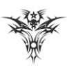
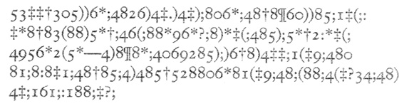
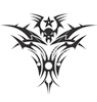

Editör’ün Önsözü

Terk edilmiş ve ıssız mekanlar, kasvetli ve boğucu şehirler, karanlık ve ürkütücü diyarlar, karmaşık ve takıntılı karakterler, tekinsiz olaylar, anlaşılmaz gizler…
Bu kelimeler şüphesiz pek çoğumuzun aklına, polisiye ve psikolojik gerilim hikayelerinin babası sayılan Edgar Allan Poe’yu getirir. Gerçek korkuyu ve şaşkınlık duygusunu ve hatta bazen karamizahı insan ruhunun en derin noktalarına nüfuz ettirmeyi başaran ender yazarlardan biri olması onu gelmiş geçmiş en büyük edebiyatçılardan biri haline getirir. Belki de, yaşamı gerçek ile hayalin birbirine geçtiği, uyku ile uyanıklık arası bir boyutta geçtiğinden bir sanatçı için genç sayılabilecek bir yaşta dünyadan ayrılır.
Her ne kadar eserlerinde cinayetler, ölüm ve doğaüstü unsurlar gibi dışsal öğelere ve bunların neticesi korkulara sıklıkla yer vermiş olsa da, Poe uslanmaz bir melankolik olarak okuyucuyu gerçekte daha derin ve sarsıcı içsel korkulara ve ruhsal çalkantılara buyur eder. Satırlarına hakim olan ürkütücü havaya rağmen, Poe korkunç olmaya çalışmaktan ziyade, öykülerinde korkunun kendisini irdeler. Bu sayede; kurucusu sayıldığı Gotik edebiyatın en derin ve içsel örneklerini de sunmuştur. Kendisinden sonra gelen pek çok yazara ilham vermiş ve ünlü Fransız şair Baudelaire tarafından kendi çağının en güçlü yazarı ilan edilmiş olan Poe, okurlarını 150 yılı aşkın süredir büyülü bir dünyaya sürüklemeye devam ediyor.
Poe’nun satırlarının sadece korku ve ölüm unsurları ile beslendiğini söylemek elbette ki yetersiz kalır. Nükteli üslubu okuyucuya; melankolinin ve ona içten içe duyulan bağlılığın, hastalıklı takıntıların, çaresizliğin, sapkınlığın, absürtlüğün, merakın, batıl inançların, sezgiselliğin, ruhani güçlerin, sembollerin ve daha pek çok unsurun düşsel bir cümbüşünü sunar. İnsanlığın doğaüstüne duyduğu doymak bilmez açlığa karşılık; anlaşılmaz olanı, ölümü ve korkuyu irdeleyiş biçimindeki ustalığıyla, okurlarını şaşırtıcı gizemlerle dolu alemlere yolculuklara çıkarır.
Edgar Allan Poe, düşselliğe teslimiyetinde yalnız olmadığını farkındaydı ki ‘Euraka’yı, “düşlerin tek gerçeklik olduğuna inananlara” adamıştı. Usta yazarın öykülerinin seçkin bir derlemesini sunan bu kitabın sayfaları arasındayken, okurların da onun sınırsız görünen hayal gücüne kapılarak kendilerini bu Düşler Ülkesi’nde bulacağına kuşku yok. Poe’nun aykırılığı ile yeni tanışacak olanlarsa; Usher Evi’nin Çöküşü’nün olağandışı kasveti ya da Kuyu ve Sarkaç’ın akıl almaz dehşeti karşısında sarsılırken, dokunabilecekmişçesine yaklaştıkları gizemlerin çekiciliğine karşı koyamayarak, belki de bu Düşler Ülkesi’ne ilk ürkek adımlarını atacaklar.
Altın Böcek

O da nesi! O da nesi! Dans ediyor adam delirmiş gibi!
Tarantula sokmuş onu.
Yanlış Yanlış Üstüne.
Bundan yıllar önce, William Legrand adlı biriyle dostluğum olmuştu. Huguenot isminde köklü bir aileden geliyordu ve bir zamanlar epey varlıklıyken birbirini izleyen talihsizlikler sonucu yoksul düşmüştü. Başına gelen felaketlerden sonra çevresi tarafından aşağılanmak istemediğinden, atalarının kenti New Orleans’tan ayrılıp Güney Carolina dolaylarındaki Charleston yakınlarında bulunan Sullivan Adası’na yerleşmişti.
Hayli garip bir adadır burası. Üç mil uzunluğundadır ve deniz kumundan başka neredeyse hiçbir şey barındırmaz. Genişliği çeyrek milden fazla değildir. Zar zor seçilebilen bir dereyle anakaradan ayrılır. Bataklık kuşlarının çok sevdiği bu dere sazlıklı ve çamurlu bir bölgede ilerler. Bitki örtüsü tahmin edileceği üzere seyrek ya da en azından bodurdur. Etrafta görkemli tek bir ağaç bile yoktur. Batı sınırının yakınında Moultrie Kalesi ve yazları Charleston’ın tozundan ve sıcağından kaçanların kiraladığı virane kulübelerin bulunduğu yerde tüylü, cüce palmiyelere rastlanabilir. Bu batı ucu ve sahil şeridindeki sert, beyaz kumsal dışında adanın her yeri, İngiliz bahçıvanlar tarafından pek sevilen hoş mersinlerle doludur. Boyları dört-beş metreye varan ve etrafa güzel kokular yayan bu bodur ağaçların aralarından geçmek neredeyse imkansızdır.
Bu korunun derinlerinde, adanın doğu ucuna yakın bir yerde küçük bir kulübe inşa etmişti Legrand. Onunla rastlantı sonucu tanıştığımızda da bu kulübede kalıyordu. Çok geçmeden iyi dost olmuştuk çünkü bu münzevi adam ilgi ve saygı uyandıran özelliklere sahipti. Epey iyi bir eğitim aldığını, olağanüstü akli melekelere sahip olduğunu görmüştüm ama ne yazık ki insan içine girmekten hoşlanmıyor, coşku ile melankoli arasında gidip gelen ani duygu zıtlaşmaları yaşıyordu. Yanında pek çok kitabı olmasına karşın bunları okumuyordu. Başlıca eğlencesi avlanmak ve balık tutmak ya da sahil ve koru boyunca gezintiye çıkıp deniz kabuğu ve böcek örnekleri aramaktı. Elindeki böcek koleksiyonu Swammerdam’ı1 bile kıskandıracak boyuttaydı. Bu gezintilerinde ona, servetini kaybetmeden önce azat ettiği kölesi, Jupiter adında yaşlı bir zenci eşlik ederdi. Onu yanından ayrılmaya ne vaatlerle, ne de tehditlerle ikna edememiş, Jupiter genç “Will Efendi”sinden ayrılmaya bir türlü yanaşmamıştı. Belki de akrabaları, Legrand’ın aklının pek yerinde olmadığını düşünüp, gezginin böylelikle bakılacağını ve korunacağını hesap ederek bu inadı Jupiter’e yavaş yavaş aşılamışlardı.
1 Jan Swammerdam (1637-1680). Hollandalı biyolog ve böcekbilimci.
Sullivan Adası’nın bulunduğu enlemde kışlar nadiren sert geçer ve güz zamanı ateş yakıldığı pek görülmez. Ama 18- Kasım’ının ortalarında aşırı soğuk bir gün yaşanmıştı. Günbatımından hemen önce mersinlerin arasından ilerleyerek arkadaşımın kulübesine gittim. Onu haftalardır ziyaret etmiyordum, çünkü o sırada, adadan dokuz mil uzaklıktaki Charleston’da kalıyordum ve o günlerde adaya gidip gelmek şimdiki kadar kolay değildi. Kulübeye varınca her zaman yaptığım gibi kapıyı çaldım. Yanıt alamayınca anahtarı saklı olduğu yerden alarak içeri girdim. Ocakta tatlı bir ateş vardı. Bu alışılmadık bir durumdu ve beni minnettar bırakmıştı. Paltomu çıkardım, çıtırdayan odunların yanına bir koltuk çektim ve oturup ev sahiplerinin gelmesini sabırla beklemeye koyuldum.
Karanlık çöker çökmez geldiler ve beni gördüklerine sevindiler. Ağzı kulaklarına varan Jupiter akşam yemeği için sutavuğu pişirmeye karar verdi. Legrand ise coşku nöbetlerinden –buna başka ne diyebilirim ki?- birini geçiriyordu. Çift kabuklu yumuşakçalardan bilinmeyen, yepyeni bir cins keşfetmişti. Daha da önemlisi Jupiter’in yardımıyla bir scarabaeus2 yakalamıştı. Bunun da yepyeni bir cins olduğuna inanıyor, ertesi gün bu konuda fikrimi almak istiyordu.
2 Böcek anlamında Latince kelime. Aynı zamanda kınkanatlı böcekler familyası.
“Neden bu gece değil?” diye sordum, ellerimi ateşin üstünde tutup ovuşturarak ve tüm scarabaeus’ların cehenneme gitmesini umarak.
“Keşke burada olduğunu bilseydim!” dedi Legrand. “Ama seni görmeyeli epey zaman oldu. Bu akşam beni ziyarete geleceğini nereden bilebilirdim ki? Eve dönerken kaleden Teğmen G—ile karşılaştım. Aptallık ederek böceği ona ödünç verdim. Bu yüzden onu sabaha kadar görmen mümkün değil. İstersen bu gece burada kal. Şafakta böceği alması için Jup’u gönderirim. Yeryüzündeki en güzel şey o!”
“Ne? Şafak mı?”
“Saçmalama! Hayır! Böceği diyorum. Rengi parlak altın sarısı, boyu iri bir ceviz kadar. Sırtının bir ucunda kehribar karası iki siyah benek var, diğer ucunda da var ama o daha uzun. Duyargaları-”
“Boyuna söyleyip duruyorum, içinde hiçbir şey yok, Efendim,” diye lafa karıştı Jupiter. “Kanatları dışında her yeri, içi, dışı altın. Ömrümde böyle ağır bir böcek görmedim.”
“Öyle olduğunu varsayalım, Jup,” diye karşılık verdi Legrand, bana fazla ciddi görünen bir tavırla. “Peki bu, pişirdiğin kuşları yakman için yeterli bir sebep mi? Rengi” bunu söylerken bana dönmüştü: “Jupiter’in söylediklerini haklı çıkaracak kadar sarı. O pullardan daha parlak bir metalik yansıma görmemişsindir. Buna yarın böceği gördüğünde karar verirsin. Ben sana şekli hakkında biraz fikir vereyim.” Üzerinde bir dolmakalem ve mürekkep duran ancak kağıt bulunmayan küçük bir masaya oturdu. Legrand bir çekmeceyi açarak kağıt aradı, ama bulamadı.
“Önemi yok,” dedi sonunda. “şu nasılsa işimizi görür.” Cebinden epey büyük ve kirli bir defter kağıdı çıkardı ve üstüne dolmakalemle bir şeyler çiziktirdi. O bunu yaparken ben ateşin başında kımıldamadan durdum, çünkü hala üşüyordum. Çizimi bitirince yerinden kalkmadan kağıdı bana uzattı. Kağıdı tam alacakken dışarıdan bir hırıltı duyuldu, sonra kapı tırmalandı. Jupiter kapıyı açınca Legrand’ın Newfoundland cinsi iri köpeği içeri daldı ve omuzlarıma sıçrayıp yüzümü yalamaya başladı. Geçen gelişlerimde onunla epey ilgilenmiştim. Köpeğin oynaması bitince kağıda göz attım ve işin gerçeği dostumun çizdiği resme epey şaşırdım.
“İlginç!” dedim, resmi birkaç dakika inceledikten sonra. “itiraf etmeliyim ki, bu gerçekten de tuhaf bir scarabaeus. Böylesini ilk kez görüyorum. Kafatası ya da kurukafaya benziyor.”
“Kurukafayı mı!” diye tekrarladı Legrand. “Evet - kağıt üzerinde gerçekten de kurukafaya benzediği söylenebilir. Tepedeki siyah benekler gözleri andırıyor değil mi? Alttaki uzun olan da tıpkı bir ağız gibi. Genel biçimi de yumurta şeklinde.”
“Belki de,” dedim. “Ama Legrand, bence sen iyi bir ressam değilsin. Böcek hakkında fikir edinmek için onu gözlerimle görsem daha iyi olacak.”
“Nasıl istersen,” dedi Legrand, biraz bozulmuş halde. “Aslında çizimim fena değildir. En azından öyle olmam gerekir çünkü öğretmenlerim çok iyiydi. Ben de pek aptal sayılmam.”
“Öyleyse şaka yapıyor olmalısın, sevgili dostum” dedim “Bu tam bir kurukafa. Hatta fizyoloji bilimi açısından bakarsak kusursuz bir kurukafa. Senin scarabaeus buna benziyorsa dünyanın en tuhaf scarabaeus’u olsa gerek. Hatta bu ipucu içimizde bazı hurafelerin uyanmasına neden olabilir. Böceğe scarabaeus caput hominis3 gibi bir isim verebilirsin mesela. Doğa Bilimlerinde böyle isimlere sık sık rastlanır. Peki sözünü ettiğin şu duyargalar nerede?”
3 İnsan başı böceği
“Duyargalar mı!” dedi Legrand, konunun heyecanına iyiden iyiye kendini kaptırmış görünerek. “Duyargaları görmüyor olamazsın. Böceğin diğer kısımları kadar belirgin çizdim onları da. Bu yeterlidir herhalde.”
“Peki öyle olsun, ama ben yine de duyarga filan görmüyorum,” dedim ve kağıdı başka bir şey söylemeden ona uzattım. Niyetim onu sinirlendirmek değildi ama böyle huysuzlaşmasına da anlam verememiştim. Üstelik resimdeki böcekte duyarga da yoktu. Genel görünüşü de gerçekten bir kurukafaya benziyordu.
Legrand kağıdı öfkeyle aldı ve tam buruşturup ateşe atacağı sırada, birden resimdeki bir şey ilgisini çekti. Çok geçmeden yüzü birden kıpkırmızı kesildi. Sonra sapsarı oldu. Birkaç dakika boyunca resmi oturduğu yerden uzun uzadıya inceledi. Sonra kalktı, masadan bir mum aldı ve gidip odanın diğer ucundaki bir sandığa oturdu. Burada da kağıdı sinirli bir havayla tekrar inceledi, evirip çevirdi. Ağzından tek kelime çıkmıyordu. Davranışları beni şaşırtıyordu. Ama konuşarak onu daha fazla sinirlendirmekten çekindiğimden sustum. Derken cebinden bir cüzdan çıkardı ve kağıdı dikkatle içine yerleştirdikten sonra cüzdanı bir yazı masasının çekmecesine koydu ve çekmeceyi kilitledi. Biraz olsun sakinleşmiş görünüyordu. Ama ilk baştaki coşkusundan eser kalmamıştı. Yine de somurtkan değil, daha çok dalgın bir görüntüdeydi. Akşam ilerledikçe dalgınlığı artıyordu. Tüm konuşma çabalarıma karşın dikkatini başka yöne çekemiyordum. Geceyi eskiden de sık sık yaptığım gibi o kulübede geçirmek niyetindeydim, ama ev sahibimin garip halini gördükten sonra gitmemin daha yerinde olacağını düşündüm. Kalmam için üstelemedi, ama kapıdan çıkarken elimi her zamankinden daha büyük bir içtenlikle sıktı.
Bir ay kadar sonra (bu sürede Legrand’ı hiç görmemiştim) Charleston’a bir konuk geldi: Legrand’ın uşağı Jupiter. Bu sevimli ihtiyar zenciyi hiç bu kadar üzgün görmemiştim. Dostumun ağır bir hastalığa yakalandığından korkmuştum.
“Hayrola Jup?” dedim. “Efendin nasıl bakalım?”
“Doğrusunu isterseniz hiç de iyi değil.”
“İyi değil ha! Bunu duyduğuma çok üzüldüm. Nesi var peki?”
“İşin tuhafı da bu ya! Hiçbir şikayeti yok, yine de çok hasta.”
“Demek çok hasta. Şunu baştan söylesene! Yataktan kalkamıyor mu?”
“Kalkmasa keşke, hiç yatmıyor! Efendimin bu haline çok üzülüyorum.”
“Jupiter, ne dediğini anlayamıyorum bir türlü. Efendinin hasta olduğunu söylüyorsun. Peki nesi varmış sana söylemedi mi?”
“Neyi olduğunu ben de anlamadım. Efendimin söylediğine göre hiçbir şeyi yok. Öyleyse neden durmadan yerlere eğilip duruyor, sonra birden doğruluyor, yüzü de bembeyaz? Sonra niye o hortumu elinden hiç düşürmüyor”
“Neyi dedin Jupiter?”
“Hortumu. Üzerinde acayip şekiller var. Gördüğüm en tuhaf şekiller bunlar. Korkudan ödüm patlıyor. Efendimi gözümün önünden ayırmamaya uğraşıyorum. Geçenlerde görünmeden sabah erkenden beni atlatıp kaçmış. Bütün gün de dönmedi. Kocaman bir sopa hazırladım. Gelince onu bir temiz dövecektim. Ama öyle bitkin görünüyordu içim yumuşadı.”
“Ha? Ne dedin? Ah evet! Dostumuza fazla sert davranmasan iyi olur. Sakın kırbaç vurayım filan deme Jupiter. Bakarsın dayanamaz. Peki bu hastalığın ya da daha doğrusu değişikliğinin sebebi ne olabilir sence? Herhangi bir fikrin var mı? Son görüştüğümüzden bu yana tatsız bir durum oldu mu?”
“Hayır efendim, o günden beri herhangi bir tuhaflık olmadı. Ondan önce oldu galiba. Geldiğiniz gün yani.”
“Nasıl yani? Ne demek istiyorsun?”
“Böcek yani efendim. O böceği diyorum işte.”
“Neyi dedin?”
“Böceği. Bana kalırsa o altın böcek efendimi kafasından ısırdı.”
“Bunu da nereden çıkardın Jüpiter?”
“Çok garip kıskaçları ve ağzı var. Hiç böyle bir böcek görmemiştim. Yanına yaklaşınca hemen tekmelemeye, ısırmaya başlıyor. Efendim epey uğraştıktan sonra onu yakaladı, ama sonra hemen elinden attı. O sırada ısırmış olmalı. O ağzı görür görmez hoşlanmadım böcekten o yüzden elimi sürmeden, bulduğum bir kağıt parçasıyla tuttum. Böceği kağıda sardım. Kağıdın bir parçasını da ağzına tıktım. İşte böyle oldu.”
“Demek sence efendin böcek ısırdığı için hastalandı?”
“Bence değil, kesin eminim öyle. Niye devamlı rüyasında altın görüyor, altın böcek onu ısırmadıysa? Bu altın böcekleri önceden de duymuştum zaten.”
“Peki rüyasında altın gördüğünü nereden biliyorsun?”
“Nereden mi biliyorum? Uykusunda sayıklıyor da oradan biliyorum.”
“Belki de haklısın Jup. Bugünkü ziyaretini hangi mutlu olaya bağlıyabiliriz peki?”
“Ne dediniz efendim?”
“Bay Legrand’dan haber mi getirdin diye sordum.”
“Haber yok efendim. Size bu pusulayı yolladı.” Jupiter bana bir not uzattı. İçinde şunlar yazılıydı:
“SEVGILİ -
Bunca zamandır nerelerdesin? Benim ufak tefek aksiliklerime gücenecek kadar budala olmadığını umuyorum. Yo, hayır bu mümkün değil.
Son görüşmemizden bu yana beni tedirgin eden bir şey oldu. Sana söyleyeceklerim var. Ama nasıl söyleyeceğimi, hatta söylesem mi, söylemesem mi bilemiyorum.
Birkaç gündür iyi değilim. Zavallı Jup da öyle üstüme düşüyor ki bunalıyorum. İnanır mısın, geçenlerde o görmeden sıvışıp bütün gün tepelerde dolaştığım diye beni dövmek için koca bir sopa hazırlamış. Sanırım rengim solgun olmasaydı, paçayı kurtaramayacaktım.
Görüşmeyeli beri küçük odamda herhangi bir yenilik yok.
Gelebiliyorsan Jupiter’le birlikte gel. Lüften. Seni bu gece, önemli bir iş için görmek istiyorum. Son derece önemli bir iş olduğunu belirtirim.
İlelebet dostun,
WILLIAM LEGRAND.”
Notun havası beni endişelendirmişti. Legrand’ın tarzına hiç uymuyordu. Kafasında neler kuruyordu acaba? Hararetli beyninden ne gibi gariplikler geçiyordu? “Son derece önemli bir iş” diyerek ne kast ediyordu? Jupiter’in anlattıkları pek hayra alamet değildi.
Yaşadığı talihsizliklerin oluşturduğu baskı yüzünden sonunda dostumun aklını oynatmış olmasından korkuyordum. Bu yüzden hiç vakit kaybetmeden zenci uşakla hemen yola çıkmaya karar verdim.
Rıhtıma vardığımızda, bineceğimiz kayığın içinde yepyeni bir tırpan ile üç kürek gördüm.
“Bunlar da ne Jup?” diye sordum.
“Efendimin tırpanı ve kürekleri.”
“Peki burada ne arıyorlar?”
“Hazır kasabaya inmişken bunları alıp getirmem için ısrar etti. Avuç dolusu para verdim bunlara.”
“Bu tırpan ve kürekleri Efendin hangi esrarengiz iş için kullanacak acaba?”
“Orasını bilemem. Aklım ermez. Onun da aklının erdiğini sanmıyorum ya neyse. Hep o böcek yüzünden.”
Jupiter’den bir şey öğrenemeyeceğimi anlamıştım. Aklını böcekle bozmuştu çünkü. Kayığa bindim ve yelkeni açtım. Güzel, güçlü bir rüzgar bizi kısa sürede Moultrie Kalesi’nin kuzeyindeki küçük koya atmıştı. İki mil yürüdükten sonra kulübeye ulaştığımızda saat öğleden sonra üç olmuştu. Legrand’ın bizi merak içinde bekliyordu. Elimi öyle sinirli sıkmıştı ki kaygılarım ve şüphelerim büsbütün artmıştı. Yüzü hayalet gibi solgundu. Çukurlaşmış gözleri garip bir şekilde parlıyordu. Sağlığı konusunda birkaç soru sorduktan sonra, başka ne soracak şey bulamadığımdan olacak, Teğmen G-’den böceği geri alıp almadığını sordum.
“Evet aldım,” dedi kıpkırmızı kesilerek. “Ertesi sabah aldım. Beni o böcekten hiçbir şey ayıramaz. Biliyor musun, Jupiter haklı galiba.”
“Hangi konuda?” diye sordum üzüntü içinde.
“Böceği hakiki altın sanmakta.” Bunu öyle büyük bir ciddiyetle söylemişti ki, müthiş bir şaşkınlık yaşadım.
“O böcek sayesinde,” diye devam etti, muzaffer bir gülümsemeyle, “ailemin servetini geri alacağım. Onu böylesine el üstünde tutmamda şaşılacak bir şey yok. Madem talih bana böyle bir armağan gönderdi, bana düşen onu uygun şekilde kullanmak. Böylelikle onun gösterdiği altınları bulacağım. Jupiter, böceği getir bana!”
“Ne, böceği mi efendim? Kusura bakmayın ama o böcek için kılımı kıpırdatmam. Kendiniz alın” Bunun üzerine Legrand ciddi bir havayla kalktı, ağır ağır ilerleyerek, böceği içinde bulunduğu cam kutudan çıkarıp bana getirdi. Gerçekten güzel bir scarabaeus’tu. O sıralarda doğa bilimcileri tarafından bilinmeyen bir cinsti. Bilimsel açıdan önemli bir başarıydı. Sırtının bir ucunda iki yuvarlak siyah benek, diğerindeyse daha uzunca bir benek vardı. Pulları çok sert ve parlaktı. Parlatılmış altını andırıyordu. Ağırlığı epey vardı. Bütün bu özellikleri hesaba katınca Jupiter’in onu altın sanmasında şaşılacak bir şey yoktu. Ama Legrand’ın da böyle düşünmesi ise hiçbir anlam veremiyordum.
“Seni çağırtmanın nedeni,” dedi Legrand böceği incelemeyi tamamladığımda tumturaklı bir havayla, “Kader ve böcek konusundaki görüşlerini almak ve yardımını istemek.”
“Sevgili Legrand,” diye atılıp sözünü kestim, “pek iyi değilsin. Kendine biraz dikkat etmelisin. Haydi yatağına git ve birkaç gün dinlen. Sen iyileşene kadar birkaç gün yanından ayrılmam ben. Bak hem ateşin çıkmış ve-”
“Nabzımı tut,” dedi.
Dediğini yaptım ve doğrusunu söylemek gerekirse en ufak bir ateş belirtisi yoktu.
“Ama ateşin çıkmasa da hasta olabilirsin. Bu seferlik sana bazı tavsiyelerde bulunmama izin ver. Önce yatağa git. Sonra da-”
“Yanılıyorsun dostum,” diye sözümü kesti. “Yaşadığım heyecana karşın bundan daha iyi olamazdım. Gerçekten iyi olmamı istiyorsan, benim bu heyecanımı dindirirsin.”
“Peki ne yapmalıyım?”
“Yapacağın şey çok kolay. Jupiter ile karşı kıyıya geçip tepelerde keşfe çıkacağız. Bu yolculukta güvenebileceğimiz birinin yardımına ihtiyacım var. Güvenebileceğimiz tek kişi sensin. Başarılı olsak da olmasak da şu gördüğün heyecanım hepten bitecek.”
“Seni mutlu etmek için elimden geleni yaparım,” dedim. “Ama şu Tanrı’nın cezası böceğin tepelere yapacağın keşif gezisiyle ilgisi mi var mı?”
“Evet.”
“Öyleyse böyle saçma sapan bir işte ben yokum Legrand.”
“Buna üzüldüm. Hem de çok üzüldüm. Çünkü o zaman sensiz denemek zorunda kalacağız.”
“Demek bensiz ha! Delirmişsin sen! Bekle biraz! Ne kadar sürecek bu yolculuk?”
“Muhtemelen bütün gece. Hemen yola çıkacağız. Ne olursa olsun en geç şafakta döneriz.”
“Peki bu garip istediğini yerine getirirsem, o böcek meselesi (Tanrım!) kapanırsa, eve geri döneceğine ve doktorun olarak tavsiyelerime uyacağına şerefin üzerine söz veriyor musun?”
“Evet veriyorum. Haydi artık yola çıkalım. Kaybedecek vaktimiz yok.”
Büyük bir üzüntüyle dostumun arkasından yürüdüm. Yola çıktığımızda saat dörde geliyordu. Legrand, Jupiter, köpek ve ben. Jupiter tırpanla kürekleri taşıyordu. Hepsini kendi taşımakta diretmişti. Sanırım çalışkanlıktan ya da iyi niyetinden çok bunları efendisinden uzak tutmaktan, yani korkudan kaynaklanıyordu bu istek. Suratı asıktı ve yolculuk boyunca ağzından “kahrolası böcek”ten başka söz çıkmamıştı. Ben iki denizci feneri taşıyordum. Legrand ise sadece, bir sicimin ucuna bağladığı böceği taşıyordu. Yürürken böceği havada bir sihirbaz gibi sallayıp duruyordu. Dostumun akli dengesizliğinin bu son kanıtını görünce ağlamamak için kendimi zor tuttum. Hiç değilse şimdilik harekete geçmek için doğru zamanı kollamak amacıyla suyuna gitmeyi daha doğru buldum. Bu arada ondan, keşif gezinin nedenini öğrenmek için boş yere uğraştım durdum. Onunla gitmeye beni razı ettikten sonra ufak tefek konularda konuşmak istemiyor ve bütün sorularıma “Göreceğiz” diye cevap vermekle yetiniyordu.
Ufak bir sandalla adanın üst kısmındaki dereyi aştık ve anakaranın yüksek tepelerine tırmanarak yaban ve ıssız bozkır parçasında kuzeybatı yönünde ilerlemeye koyulduk. İnsana dair hiçbir iz yoktu buralarda. Legrand kararlı adımlarla bize yol gösteriyor, ara sıra duruyor önceki gelişlerinde ipucu olarak aklında tuttuğu yer şekillerini inceliyordu.
Bu şekilde iki saat kadar yürüdük. Güneş batarken o zamana kadar geçtiğimiz bölgelere hiç benzemeyen kasvetli bir araziye vardık. Neredeyse ulaşılmaz görünen bir tepeye yakın bir tür düzlüktü bu. Tepenin her yanı sık ağaçlarla kaplıydı. Sağına soluna ise toprakla bağları gevşek görünen, hatta çoğu yerinde her an yuvarlanmaya hazır, aşağıdaki vadilere düşmesini sadece yaslandığı ağaçların engellediği dev kayalar serpiştirilmişti. Her yönde görülebilen derin ve geniş uçurumlar manzarayı daha da korkunç hale getiriyordu.
Tırmandığımız doğal düzlük, baştan aşağı dikenli çalılarla kaplıydı. Tırpan olmasa bunların arasından geçemeyeceğimizi anlamamız uzun sürmedi. Jupiter efendisinin talimatlarına uyarak bize bir yol açmaya başladı. Etrafında sekiz-on kadar meşe bulunan çok iri bir lale ağacının dibine vardık. Meşe ağaçları yapraklarının ve biçiminin başkalığı ile o güne kadar gördüğüm bütün ağaçlardan güzeldi. Genişçe açılan dalları ağaçların görünümünü daha da heybetli kılıyordu. Lale ağacına ulaşınca Legrand Jupiter’e döndü ve o ağaca tırmanıp tırmanamayacağını sordu. İhtiyar zenci bu soru karşısında şaşırmıştı. Bir süre yanıt vermedi. Sonunda ağacın dev gövdesine yaklaştı, etrafında dolaşarak uzun uzun incelemeye koyuldu. İncelemeyi tamamlayınca, “Evet efendim” dedi “Jup’un tırmanamayacağı ağaç yoktur.”.
“O halde hemen tırmanmaya başla, çünkü yakında hava kararacak.”
“Nereye kadar tırmanacağım efendim?” diye sordu Jupiter.
“Önce gövdeye tırman. Sonra ben sana ne tarafa gideceğini söylerim. Bekle bir dakika! Şu böceği de al yanına.”
“Böceği mi efendim! Altın böceği mi!” diye haykırdı zenci irkilerek. “Böceğin ağaçta ne işi var ki? Hayatta olmaz!”
“Senin gibi koskoca bir zenci şu küçük, zararsız, ölü böcekten mi korkuyor? Bari ipinden tut. Yoksa kafanı bu kürekle kırmak zorunda kalırım.”
“Niye kızıyorsunuz ki efendim?” dedi zenci, utandığını belli ederek alttan almaya çalışmıştı. “Şu ihtiyar zencinizle bir türlü geçinemezsiniz zaten. Şaka yapıyordum. Hiç korkar mıyım böcekten!” İpin ucunu çekinerek kavradı ve böceği elinden geldiğince uzakta tutarak ağaca tırmanmaya başladı.
Lale ağacı ya da Liriodendron Tulipifera olarak bilinen, Amerikan ormanlarının bu en güzel ağacı gençliğinde şaşılacak kadar düz bir gövdeye sahiptir. Daha dalları çıkmaya başlamadan belli bir yüksekliğe ulaşır. Ancak yaşlandıkça kabuğundaki düzlük kaybolur. Gövdesinde küçük dallar baş gösterir. Bu nedenle önümüzdeki ağaca tırmanmak göründüğa kadar zor bir iş değildi. Jupiter kolları ve dizleriyle dev silindire olabildiğince sıkı sarıldıktan sonra çıkıntılara elleriyle, bazılarına çıplak topuklarını dayayarak tırmanmaya başladı. Bir iki kez düşme tehlikesi geçirdikten sonra nihayet sürünerek ilk büyük çatala ulaştı. İşin büyük kısmını bitirmiş sayılırdı. Yerden yirmi beş metre kadar yüksekte olmasına karşın artık düşme tehlikesi atlatılmıştı.
“Şimdi ne tarafa gideyim Sahip Will?” diye sordu.
“Yan tarafında duran şu en büyük dala çık,” dedi Legrand. Zenci ses çıkarmadan söyleneni yaptı. Tırmanmakta zorluk çekmiyordu. Giderek yükseliyordu. Sonunda bodur gövdesi sık yapraklar arasında kayboldu. Derken bağırışını duyduk:
“Daha ne kadar tırmanacağım?”
“Ne kadar yüksektesin?” diye sordu Legrand.
“Çok yüksekteyim,” dedi zenci. “Ağacın üzerinden göğü görebiliyorum.”
“Göğü bırak da söyleyeceğimi dinle. Aşağı bak, senin tarafında kaç tane dal olduğunu say. Kaç tane var?”
“Bir, iki üç, dört, beş tane. Bu tarafta beş tane dal var efendim.”
“O zaman bir dala daha çık.”
Zenci birkaç dakika sonra tekrar yedinci dala ulaşıldığını açıkladı.
“Hadi göreyim seni Jupiter,” diye seslendi Legrand heyecanla, “O dalın üstünde olabildiğince git bakalım. Tuhaf bir şey görürsen bana haber ver.”
Zavallı dostumun delirdiğinden artık hiç şüphem kalmamıştı. Onu eve nasıl götüreceğimi düşünmeye başlamıştım. Yapılacak en doğru şeyi düşünürken Jupiter tekrar seslendi.
“Bu dalda daha fazla ilerlemeye korkuyorum efendim. Baştan aşağı kurumuş.”
“Kurumuş mu dedin Jupiter?” diye haykırdı Legrand titrek bir sesle.
“Evet efendim, kupkuru. İşi bitmiş kesinlikle. Kurumuş.”
“Şimdi ne yapacağım ben?” diye sordu Legrand, büyük bir endişeye kapılarak.
Araya girme fırsatı bulduğuma sevinerek, “Ne mi yapacaksın?” dedim. “Elbette ki eve gidip yatağına uzanacaksın. Haydi gel! Haydi. Vakit geç oldu. Söz verdin, unutma.”
Dediklerime hiç aldırmadan “Jupiter,” diye seslendi “Duyuyor musun beni?”
“Evet Sahip Will. Çok iyi duyuyorum.”
“Bıçağınla dalı biraz kes. Çok mu çürük bir bak bakalım?”
“Çürük tabii” dedi zenci birkaç dakika sonra, “ama göründüğü kadar değil. Tek başıma bir iki adım daha ilerleyebilirim.”
“Tek başma olsam mı! Ne demek istiyorsun?”
“Böceği diyorum efendim. Öyle ağır ki. Onu aşağı atarsam dal beni taşır.”
“Seni rezil!” diye haykırdı Legrand. İçi rahatlamış görünüyordu. “Yeter artık. Saçmalamayı bırak. Böceği atayım dersen kendini ölmüş bil. Duydun mu beni Jupiter?”
“Evet efendim. Zavallı zencinizi haşlamayın böyle.”
“Peki, tamam! Şimdi dinle beni! O dalda böceği elinden bırakmadan gözünün kestiği yere kadar gidersen, aşağı indiğinde sana bir gümüş dolar veririm.”
“Hemen gidiyorum efendim,” dedi zenci hemen. “ucuna geldim sayılır. “
“Ucuna mı!” diye çığlık attı Legrand. “Dalın ucuna mı geldin?”
“Geldim sayılır efendim. Vay! Bu da nesi? Dalda duran ne öyle!”
“Tamamdır!” diye seslendi Legrand. Neşesi yerine gelmişti. “Neymiş o?”
“Bir kurukafa. Birisi buraya bırakmış onu. Kargalar etlerini lime lime etmiş.”
“Kurukafa demek! Çok iyi. Dalın üstünde nasıl duruyor peki, ağaca nasıl tutturulmuş?”
“Bakıyorum efendim. Vay canına! Bu çok garip efendim. Kurukafada kocaman bir çivi var.”
“Tamam Jupiter. Şimdi söylediklerimi aynen yapacaksın. Duyuyor musun?”
“Evet efendim.”
“Dikkatle dinle öyleyse. Kurukafanın sol gözünü bul.”
“Hımm! Aaa! Tamam da bunun sol gözü yok ki.”
“Seni sersem! Sol elin hangisi biliyor musun?”
“Evet, biliyorum. Nasıl bilmem. Sol elim ağaç keserken kullandığım elim.”
“Solaksın da ondan! Sol gözün de sol elinin bulunduğu tarafta. Bundan sonra kurukafanın sol gözünü ya da sol gözün ne tarafta olduğunu bulursun herhalde. Buldun mu?”
Uzun bir sessizlik oldu. Sonunda zenci sordu:
“Kurukafanın sol gözü de sol eliyle aynı tarafta mıdır acaba? El filan yok ya bunda. Neyse, ziyanı yok! Sol gözünü buldum bile. İşte! Şimdi ne yapayım?”
“Böceği içine sokup ipin yettiği kadar sarkıt. Dikkatli ol, sakın ipi elinden kaçırayım deme.”
“Hepsini yaptım Sahip Will. Böceği kolayca geçirdim. Şimdi sarkıttım, bakın!”
Bu konuşmalar sırasında Jupiter’i hiç görmemiştik. Ama binbir güçlükle sarkıttığı böcek, durduğumuz tepeyi azcık da olsa aydınlatan güneşin son ışınlarıyla altın bir küre gibi parlıyordu. Böcek, dallara değmeden boşlukta sallanıyordu. Bırakılsa ayaklarımızın dibine düşerdi. Legrand ansızın tırpanı kaptı ve böceğin tam altına çapı üç-dört metreyi bulan bir çember çizdi. Sonra Jupiter’e ipi bırakıp ağaçtan inmesini söyledi.
Böceğin düştüğü noktaya bir kazık çakıp, cebinden bir şerit metre çıkardı. Metrenin bir ucunu ağacın gövdesinin kazığa en yakın yerine iliştirdikten sonra, kazığa ulaşana kadar metreyi açtı. Daha sonra aynı yönde ilerlemesini sürdürerek on beş metre kadar aynı gitti. Bu sırada Jupiter de tırpanıyla çalıları temizleyip ona yol açıyordu. Legrand o ikinci noktaya da bir kazık çaktı ve burayı merkez alarak bir-bir buçuk metre çapında bir daire çizdi. Sonra kürekleri aldı. Jupiter ile bana birer kürek verip üçüncüsünü de kendisi alarak elimizden geldiği kadar çabuk kazmamızı söyledi.
Doğrusunu söylemek gerekirse bu tür eğlencelerden zaten oldum olası hoşlanmam. O anda ise hiç içimden gelmiyordu. Hava kararmak üzereydi, üstelik çok da yorgundum. Ama reddederek dostumu öfkelendirmekten korkuyordum. Jupiter’e güvenebileceğimi bilsem o deliyi zor kullanarak götürmek için bir an bile düşünmezdim. Ama ihtiyar zencinin huyunu çok iyi biliyordum. Efendisine karşı hiçbir girişimimde benim tarafımı tutmazdı. Dostum, Güneyliler arasında çok yaygın olan define masallarından birine kapılmıştı. Böceği bulunca belki de Jupiter’in böceğin “hakiki altın” olduğunda ısrar etmesini dinleyince masala kendini git gide inandırmıştı. Delirmeye yatkın bir akıl, kendi inançlarıyla da örtüşüyorsa, böyle fikirlere kolayca kapılabilir. Aklıma, böceğin onun “kaderinin bir alameti” olduğunu söyleyişi geldi. Bu iş canımı sıkmış, kafamı karıştırmıştı. Sonunda canla başla kazmaya karar verdim. Hiçbir şey bulamayınca dostum yanıldığını anlayacaktı.
Fenerleri yaktıktan sonra hızla işe koyulduk. Neyse ki işimiz mantıklı bir amaca hizmet ediyordu. Fener ışıkları altında, elimizde aletlerimiz, herhalde çok tuhaf görünüyorduk. Civardan geçen biri bizi görse yaptığımız işi oldukça kuşku uyandırıcı bulurdu şüphesiz.
İki saat boyunca durmaksızın kazdık. Pek konuşmadık. Yaptığımız işe gittikçe daha fazla burnunu sokan köpeğin havlaması sinirlerimizi bozuyordu. Bir ara havlaması öyle fazlalaştı ki, çevredeki insanlara yerimizi haber vermesinden korktuk. Daha doğrusu Legrand korktu. Bana kalsa birinin çıkıp gelmesi dostumu eve geri götürmemi mümkün kılacağı için memnun olurdum. Sonunda Jupiter köpeği çok etkili bir yöntemle susturdu. Çukurdan fırladığı gibi hayvanın ağzını askılardan biriyle bağladı. Sonra kıkırdayarak işinin başına döndü.
İki saatin sonunda bir buçuk metre kadar derine inmiştik. Ne var ki define izine filan rastlanmamıştı. Uzun bir sessizlik oldu. Bu gülünç durumun sona erdiğini umuyordum. Hoşnutsuzluğu yüzünden okunan Legrand kaygılı bir halde alnını sildikten sonra yeniden kazmaya girişti. Çapı bir buçuk metre olan çemberin hemen hepsini kazmıştık. O sınırın da dışına çıkmış, üstelik yarım metre daha derine inmiştik. Ancak hiçbir şey bulamadık. Büyük hayal kırıklığı yaşadığı anlaşılan Legrand sonunda çukurdan çıktı. İçimde ona karşı acıma duyuyordum. Bir kenara fırlatmış olduğu ceketini ağır ağır ve pek de istemeyerek giydi. Ben tek kelime etmiyordum. Jupiter efendisinin işareti üzerine araç gereçleri toplamaya koyuldu. Bu iş bittikten sonra köpeğin ağzı çözüldü ve hep birlikte eve dönmek üzere yola çıktık. Kimse konuşmuyordu.
On adım gitmemiştik ki, Legrand birden küfürler savurarak Jupiter’in üzerine yürüdü. Şaşkına dönen zenci gözlerini ve ağzını bir karış açmıştı. Kürekleri elinden düşürüp diz çöktü.
“Rezil herif!” diyordu Legrand, kenetlenmiş dişlerinin arasından. “Seni kara iblis seni! Konuş! Hemen şimdi yanıt ver bana! Derhal! Lafı dolandırma! Sol gözün hangisi?”
“Sol gözüm bu değil mi efendim?” diye haykırdı Jupiter dehşetle, elini sağ gözünün üzerine koyarak. Efendisinin gözünü çıkaracağından korkuyor gibiydi.
“Aklıma da gelmişti aslında. Biliyordum! Yaşasın!” diye haykırdı Legrand. Zenciyi bıraktı ve dans etmeye koyuldu. Uşağı hayretler içinde ayağa kalkıp, konuşmadan bir efendisine, bir bana baktı.
“Haydi! Geri dönüyoruz,” dedi Legrand. “Oyun daha bitmedi.” Yeniden lale ağacına doğru hareketlendi.
Ağacın altına geldiğimizde “Jupiter,” dedi “Gel buraya! Kurukafa dala nasıl çivilenmişti? Yüzü dışarı doğru mu dönüktü yoksa dala doğru mu?”
“Dışarı dönüktü efendim. Kargalar gözlerini rahatça oyabilsin diye.”
“Peki böceği şu gözden mi geçirdin, yoksa bundan mı?”
Jupiter’in her iki gözüne de dokundu.
“Bundan efendim. Bana söylediğiniz gibi sol gözden,” dedi zenci eliyle sağ gözünü tutarak.
“Şimdi oldu işte. Yeniden deneyelim.”
Bu noktada deliliği hakkında belli bir yöntemin belirtilerini görmeye ya da gördüğümü sezmeye başladığım dostum, böceğin düştüğü noktadaki kazığı söküp yedi santim kadar batıya sapladı. Sonra şerit metresiyle ağacın kazığa en yakın noktasından başlayarak düz bir hat boyunca yürümeye başladı. On beş metre kadar yürüdükten sonra çevresini kazdığımız eski noktadan metrelerce uzaktaydı.
Buraya öncekine göre daha geniş bir çember çizdi. Sonra yeniden kazmaya başladık. Çok bitkindim ama neden bilmem bana verilen işten eskisi kadar sıkılmıyordum. Hatta içimi bir merak kaplamış iyiden iyiye heyecanlanmıştım. Belki de Legrand’ın -abartılı da olsa- tavrında beni etkileyen bir şeyler vardı. Her şeyi önceden planlamış gibiydi. Vargücümle kazarken bir taraftan da zavallı dostumu delirten o hazineyi bulmayı beklemeye başladığımı görüyordum. Çalışmaya başlayalı bir buçuk saat kadar olmuş, bense bu düşüncelere kendimi iyice kaptırmışken, köpek yine çıldırmışçasına havlamaya başladı. Bu kez önceki gibi oyunbazlıkla ya da dediğini yaptırmak için havlamıyordu. Sert ve önemli bir havayla havlıyordu. Jupiter yine ağzını bağlamaya kalkışınca ona karşı koydu ve çukura atlayıp toprağı delirmiş gibi eşelemeye başladı. Saniyeler sonra ortaya iki insan iskeletinin parçaları çıktı. Kemikler arasında metal düğmeler ve çürümüş yün tozu vardı. Küreği bir iki kez sallamamız sonucunda bir İspanyol hançerinin kabzasına ulaştık. Biraz daha kazınca ise üç-dört altın ve gümüş sikke bulduk.
Jupiter’in paraları gördüğü zamanki sevinci görülmeye değerdi. Efendisinin ise suratı asılmıştı. İşimize devam etmemizi söyledi. Tam o sırada çizmemin topuğunun takılmasıyla yere kapaklandım. Takıldığım şey gevşek toprakta yarı gömülü halde duran genişçe bir metal halkanın yarısıydı.
Artık daha ciddi çalışmaya koyulmuştuk. Hayatımdan bundan daha heyecanlı bir on dakika geçirmemişimdir. Geçen sürede uzunca bir tahta sandığı topraktan çıkardık. Sağlam ve sert oluşundan cıva biklorid benzeri bir bileşimle kaplanmış olduğu anlaşılıyordu. Uzunluğu bir metre kadar, genişliği doksan ve yüksekliği seksen santim kadardı. Demirden kafes gibi sık perçinlenmiş, bantlarla sağlamlaştırılmıştı. Yanlarında, üst kısma yakın üçer, toplamda altı tane halka görülüyordu. Sandığı ancak altı kişinin taşıyabildiği anlaşılıyordu. Çok geçmeden onu kaldıramayacağımız kadar ağır olduğunu anladık. Çok fazla çaba harcadığımız halde yerinden anca oynatabiliyorduk. Neyse ki kapak yalnızca iki sürgüyle kapatılmıştı. Bunları heyecandan titreyerek ve soluk soluğa açtık. Karşımızda paha biçilmez bir hazine, bir altın ve mücevher yığını belirdi. Fenerlerin ışığında öylesine parlıyorlardı ki gözlerimiz kamaşmıştı.
Defineye bakarken yaşadıklarımı anlatmaya çalışmayacağım. Ama en belirgin duygum şaşkınlıktı elbette. Legrand’ın heyecandan bitkin düşmüştü. Çok az konuşuyordu. Jupiter’in bile rengi bir zencinin benzi ne kadar solabilirse o kadar solmuştu. Birkaç dakika öyle kaldı. Sersemlemişti. Donakalmış gibiydi. Sonra çukurda diz çöktü ve çıplak kollarını dirseklerine kadar altına daldırarak öylece durdu. Sıcak bir banyonun tadını çıkarır gibiydi. Sonra iç geçirdi, kendi kendine konuşur gibi: “Tüm bunlar altın böceğin marifeti! Güzelim altın böcek! Zavallı altın böcekçik! Sana ne köte şeyler söyledim! Kendinden utanmıyorsun zenci? Söyle bakalım!”
Sonunda hem efendiyi, hem de uşağı daldıkları rüyadan uyandırmak, defineyi taşımak gerektiğini hatırlatmak zorunda kaldım. Vakit epey geçmişti. Hemen yola çıkmamız, gün doğmadan her şeyi eve götürmemiz gerekiyordu. Nasıl yapılacağına karar vermek güçtü. Herkesin kafası karışık olduğu için bu konuda tartıştık. Sonunda sandıktakilerin üçte ikisini boşaltarak hafifleterek sandığı binbir zahmetle çukurdan çıkardık. Boşalttığımız altın ve mücevherleri çalıların arasına sakladık. Başlarına da bekçi olarak köpeği bıraktık. Jupiter ona kesinlikle yerinden ayrılmamasını ve biz geri dönene kadar ağzını açmamasını tembihledi.
Sonra sandığı alıp vakit kaybetmeden eve doğru yola çıkık. Saat bir gibi kulübeye vardığımızda öylesine bitkindik ki kılımızı kımıldatacak halimiz yoktu. İkiye kadar dinlenip yemek yedik ve hemen tepelere doğru yola çıktık. Evde bulduğumuz üç çuvalı da yanımıza aldık. Saat dörde doğru çukurun olduğu yere vardık. Definenin geri kalan kısmını mümkün olduğunca eşit paylaştırdıktan sonra, çukurları doldurmadan tekrar kulübeye döndük. Altınlarımızı ikinci kez yerleştirdiğimizde doğudaki ağaçların tepesinde şafağın ilk ışıkları beliriyordu.
Ayakta duracak halimiz kalmamıştı. Ama heyecandan uyuyamıyorduk. Üç-dört saatlik tavşan uykusundan sonra ağız birliği etmişçesine hep birden kalkıp hazinemizi incelemeye koyulduk.
Sandık ağzına kadar doluydu ve biz bütün günü, hatta ertesi gecenin büyük bölümünü sandıktakileri incelemekle geçirdik. Altın ve mücevherler özensiz biçimde doldurulmuştu içine. Hepsini titizce düzene sokunca, elimizdeki servetin başta sandığımızdan çok daha fazla olduğunu anladık. Madeni paralar dört yüz elli bin dolardan fazla tutuyordu. Bunların değerini (o zamanki çizelgelere inceleyerek olabildiğince doğru hesaplamaya gayret etmiştik.) Aralarında tek bir gümüş bile yoktu. Her şey eski altındandı. Eski ve çeşitli ülkelere aittiler. Fransız, İspanyol ve Alman sikkelerinin arasında birkaç İngiliz parası ve daha önce rastlamadığımız sikkeler de bulunuyordu. Bazı çok büyük ve ağır paraların yüzleri öylesine aşınmıştı ki üzerlerindeki yazı okunmuyordu. Sandıkta hiç Amerikan parası yoktu. Mücevherlerin değerini kestirmek büsbütün güçtü. Bazıları çok iri ve güzel kesimli yüz on tane elmas vardı. Geri kalanları da pek ufak değildi. On sekiz tane göz kamaştırıcı yakut, üç yüz on tane birbirinden güzel zümrüt, yirmi bir tane safir ve bir tane opal vardı. Bütün bu taşlar yuva ve tırnaklarından sökülmüş ve sandığa üst üste yığılmıştı. Bu yuva ve tırnakların bulunduğu metal takılar ise çekiçle dövülmüştü. Ayrıca som altından çok sayıda süs eşyası da vardı. İki yüzü bulan ağır yüzük ve küpe. Yanlış hatırlamıyorsam otuz kadar zincir, seksen üç tane çok büyük ve ağır haç, paha biçilmez değerde beş altın buhurdan, asma yaprakları ve Baküs şenliği figürleriyle süslü, kakmalı bir şarap kasesi yine son derece ince işli, kakmalı iki kılıç kabzası ve aklımda kalmayan daha bir sürü şey. Toplam ağırlıkları yüz elli kilodan fazlaydı. Bu hesaba daha yüz doksan yedi muhteşem altın saati katmadım. Saatler arasında üç tanesi vardı ki her birinin değeri en aşağı beş yüz dolardı. Hemen hepsi paslanmıştı ama mücevherlerle bezeliydi ve çok değerli muhafazalarının içinde duruyorlardı. O gece sandığın içindekilere toplam bir buçuk milyon dolar bedel biçtik. Yüzük, düğme ve mücevherleri (birkaçını kendimize ayırdık) hesaba kattığımızda yaptığımız ilk tahminin hazinenin gerçek değerinin epey altında kaldığını anladık.
İncelememizi bitirip de heyecanımız biraz olsun yatıştığında, bu olağanüstü olayın açıklamasını öğrenmek için heveslendiğimi gören Legrand ayrıntılı bir açıklama yaptı.
“Sanırım” deyi başladı söze “sana böceği kabataslak çizdiğim geceyi hatırlıyorsundur. Çizdiğim resmin bir kurukafaya benzediğini söylemen epey canımı sıkmıştı hani. Bunu da hatırlarsın. Bunu ilk söylediğinde dalga geçtiğini sandım. Sonra böceğin sırtındaki tuhaf benekleri gözümün önüne getirince haklı olabileceğini kabul etmek zorunda kaldım. Yine de çizimimle dalga geçmen üzülmeme neden oldu, çünkü insanlar beni iyi bir ressam olarak tanır. Bu nedenle parşömeni uzattığında onu az daha öfkeyle buruşturup ateşe atacaktım az daha.”
“Kağıt parçasını kastediyorsun,” dedim.
“Hayır. Gerçi kağıda benziyordu. Başta ben de öyle sandım. Ama üstüne resim çizerken çok ince bir parşömen parçası olduğunu anladım. Çok kirli olduğunu hatırlarsın. Tam buruşturacağım sırada senin çizmiş olduğun resme ilişti gözüm. Böceğin resmini yaptığım yerden bana bir kurukafanın baktığını görünce şaşkınlığım büsbütün arttı. Bir an ne söyleyeceğimi bilemedim. Benim çizdiğim resme benziyordu benzemesine ama ayrıntılar açısından onunla ilgisi yoktu. Hemen elime bir mum alıp odanın öbür ucunda bir yere oturarak parşömen parçasını daha yakından inceledim. Tersini çevirince, bir de baktım benim desen orada duruyor. Önce şekiller arasındaki benzerliğe şaştım kaldım. Parşömenin öbür yüzünde tam benim böceğin altında bir kurukafa resmi olması, benim bunun farkında olmamam üstelik hem şeklinin hem de boyutlarının çizdiğim resme çok uyması epey ilginç geldi bana. Olayın garipliği beni bir süre serseme çevirmişti. Bu çeşit rastlantıların yarattığı etki çoğunlukla sersemlik olur zaten. Beyin bir bağlantı –bir neden sonuç ilişkisi- bulamayınca iptal olur. Ama kendime geldiğimde durumu yavaş yavaş kavramaya başladım. Vardığım sonuç ise beni o rastlantıdan daha fazla korkuttu. Ben resmi çizmeye başladığımda parşömenin öbür yüzünde resim yoktu. Bundan emindim çünkü temiz bir yer bulabilmek için parşömenin ilk o yanını çevirdim. Kurukafa o sırada orada olsa, onu gözden kaçırmam imkansızdı. Bu gerçekten açıklamasını yapamayacağım bir olaydı. Ama o anda bile daha her şeyin başındayken sanki zihnimin en derin ve gizli bir köşesinde gerçeğe dair bir parıltı belirdi. Dün geceki macerayı olanca görkemiyle açığa çıkaran gerçeğe. Hemen ayağa fırladım ve parşömeni güvenli bir yere koyduktan sonra, yalnız kalıncaya kadar bu konu üzerinde düşünmemeye karar verdim.
“Sen gittikten ve Jupiter de uykuya daldıktan sonra bu meselenin daha yöntemli bir araştırmasına girişmeyi denedim. Önce parşömeni nasıl bulduğumu düşünmeye başladım. Böceği ilk gördüğümüz yer karşı kıyıda, adanın bir mil kadar doğusunda, suyun yükselme seviyesinin azcık yukarısındaydı. Böcek elime alır almaz beni ısırmıştı. Hemen yere atmıştım onu. Jupiter ise tedbirli davranarak ona doğru uçun böceği yakalamadan önce onu tutmakta kullanabileceği yaprak ya da benzeri bir şeyler aramıştı. İşte o anda ikimizin de gözüne o parşömen parçası ilişti. O sırada kağıt sanmıştım onu. Yarısı kuma gömülüydü ve yalnızca bir dışarı çıkmıştı. Onu bulduğumuz yerin yakınlarında karaya oturmuş bir gemi olduğu dikkatimi çekmişti. Geminin enkazı çok uzun zamandır orada olmalıydı çünkü gemi denecek hali kalmamıştı neredeyse.
“Jupiter parşömeni yerden alıp böceği bununla sararak bana uzattı. Biraz sonra ise eve dönmek üzere yola çıktık. Yolda Teğmen G- ile karşılaştık. Ona böceği gösterdim. Kaleye götürmesine razı olmam için çok ısrar etti. Ben kabul edince parşömeni almadan böceği cebine indiriverdi. O böceği incelerken ben parşömeni elinde tutuyordum. Teğmen bunu almamıştı. Belki de fikrimi değiştirmemden korktuğu için böceği alelacele cebine atmıştı. Doğa Bilimleri ile ilgili konulara ne kadar düşkün olduğunu bilirsinBen de o sırada farkında olmadan parşömeni cebime atmış olmalıyım.
“Hatırlarsın, böceğin resmini çizmek istediğimde önce masaya gittiğimde kağıtları her zamanki yerlerinde bulamamıştım. Çekmeceye baktım, orada da yoklardı. Eski bir mektup filan bulurum diye umarak ceplerimi yokladım. O sırada elime parşömen geldi. Parşömeni nasıl bulduğumu uzun uzadıya anlatıyorum, çünkü olaylar üzerimde garip bir etki yapmıştı.
“Hayal gücümün fazla çalıştığını düşündüğünden eminim. Oysa o sırada ben olayları hatırlayarak birtakım bağlantılar kurmuştum. Zincirin iki koca halkasını birbirine geçirmiştim. Sahilde, karaya oturmuş bir gemi vardı. Geminin biraz ilerisinde üstünde bir kurukafa resmi olan bir parşömen –dikkat et kağıt değil!- vardı. Bana ‘Peki bağlantı nerede?’ diye soracaksın. Ben de sana kurukafanın korsanların her çarpışma sırasında bayrak olarak bunu çektiklerini söyleyeceğim.
“Bulduğum nesnenin kağıt değil parşömen olduğunu önce de söylemiştim. Parşömen kalıcıdır, dayanıklıdır. Önemsiz işler için parşömen kullanılmaz. Herhangi bir resim çizmek ya da bir şeyler yazmak gerektiğinde kağıt daha kullanışlıdır. Bu yüzden o kurukafanın bir anlamı, olayla bir bağlantısı olmalıydı. Parşömenin biçimi de gözümden kaçmamıştı. Köşelerinden biri kaza sonucu kopmuş olsa da, ilk başta dikdörtgen şeklinde olduğu anlaşılıyordu. Uzun süre akılda kalması ve titizlikle saklanması gereken bir şeyin not edileceği cinsten bir parşömen parçası.”
“Ama sen,” diye sözünü kestim, “böceğin resmini çizdiğin sırada kurukafanın parşömenin üstünde olmadığını söylemiştin demin. Öyleyse eğer o kurukafa söylediğin gibi, scarabaeusu çizmenden önce birileri (kimin nasıl çizdiğini Tanrı bilir) tarafından çizildiyse gemi ile kurukafa arasında nasıl bir bağlantı kurdun?”
“İşte işin can alıcı noktası da burası zaten. Ama bunu çözmekte de güçlük çekmedim doğrusu. Sağlam adımlarla ilerliyordum ve o adımlar beni tek bir soncu götürebilirdi. Şöyle mantık yürütüyordum: Ben böceğin resmini çizerken parşömenin üstünde kurukafa görülmüyordu. Resmi sana verdikten sonra gözlerimi üzerinden ayırmadım. Yani kurukafayı sen de çizmiş olamazdın ve odada başka biri de yoktu. Demek ki o resim insan eliyle çizilmedi. Ama oradaydı işte.
“Düşüncelerimin bu noktasına gelince o sırada olan her şeyi ayrıntılarıyla hatırlamaya çalıştım ve bunu başardım da. Hava buz gibiydi (büyük bir talih eseri). Ocakta ateş yanıyordu. Yürüyüşten döndüğüm için ısınmıştım. Masanın başına oturdum. Sense ocağın oraya bir koltuk çekmiştin. Tam parşömeni sana uzatırken köpeğim Wolf içeri girdi ve omuzlarına atladı senin. Onu sol elinle köpeği okşarken parşömeni tutan sağ elini farkında olmadan dizlerinin arasına kaydı, ateşe iyice yaklaştı. Bir an tutuştuğunu sandım. Uyaracaktım seni hatta. Ama konuşmama gerek kalmadan elini çektin. Parşömeni kaldırdın ve incelemeye başladın. Bütün bu ayrıntılar üzerinde etraflıca düşününce parşömenin üstündeki kurukafa resmini ortaya çıkaranın ısı olduğundan şüphem kalmadı. Bildiğin gibi çok eski zamanlardan beri birtakım kimyasal maddeler kullanılarak kağıt ya da tirşe üstüne ancak ısıtılınca ortaya çıkan yazılar yazmak mümkün. Aqua regia4 ile karıştırılan ve ağırlığının dört katı sulandırılan kafur yeşil renkli, güherçile ruhunda eritilen kobalt tortusu ise kırmızı bir mürekkep oluşturur. Bu mürekkeplerle yazılan yazılar bazen kısa bazen uzun bir süre sonra kaybolur, ama ateşe tutulunca tekrar ortaya çıkar.
4 Nitrik ve hidroklorik asitten oluşan bir karışım
“Sonra kurukafayı dikkatle incelemeye koyuldum. Dış kenarları yani papirüsün kenarına en yakın olan kısımlar diğerlerinden çok daha belirgindi. Demek ki ısı her yerde aynı etkiyi göstermemişti. Hemen bir ateş yaktım ve parşömenin her tarafını alevlere tuttum. Başta yalnızca, kurukafanın silik hatları belirginleşti o kadar. Deneye devam edinceyse, sonunda parşömenin kurukafa resminin çapraz köşesinde bir şekil belirdi. Bunu ilk başta bir keçi sandım. Daha yakından incelediğimde ise keçi değil oğlak olduğunu gördüm.”
“Ha ha!” diye güldüm. “doğrusunu istersen sana gülmeye hakkım yok. Bir buçuk milyon dolar hiç de gülünecek bir rakam değil. Ama zincirin şu üçüncü halkasını eklerken senin korsanlarla, keçi arasında bağlantı kurmaya çalışmazsın herhalde. Korsanların keçilerle alıp veremedikleri yoktur biliyorsun. Keçiler çiftlik işlerine daha yatkındır.”
“İyi de zaten sana keçi olmadığını söyledim.”
“Ha keçi, ha oğlak. Ne fark eder?”
“Arada ufak bir fark var,” dedi Legrand. “Kaptan Kidd5 diye birinden bahsedildiğini duymuşsundur. Bu hayvan resminin bir kelime oyunu ya da hiyeroglif tarzı bir imza olarak düşünülmesi gerektiğini hemen anlamıştım. İmza diyorum, çünkü parşömenin üzerinde bulunduğu yer imzanın olması gereken noktaydı. Çapraz köşedeki kurukafa da bir damga ya da mühür yerine geçiyor olmalıydı. Elle tutulur başka hiçbir şey bulunmadığına üzülmüştüm.”
5 Kid, İngilizcede “oğlak” anlamına gelir.
“Herhalde mühürle imza arasında bir mektup filan olacağını ummuştun.”
“Öyle de denilebilir. İşin aslı, elime büyük bir hazine geçeceğine dair bir hisse kapılmıştım. Nedenini bilmiyorum. Belki de bu, inançtan çok bir istekti. Jupiter’in saçma sözleri, böceğin hakiki altından olduğunu iddia etmesi de beni etkilemedi değil. Sonra o beklenmedik olaylar, rastlantılar dizisi. Bütün bunlar az mı olağandışıydı? Hele bir de o günün senenin ateş yakmayı gerektirecek tek güne rastlaması. Ateş olmasa, köpek de tam o anda içeri girmese kurukafanın farkına asla varamaz ve defineyi elde edemezdim. “
“Ne olur kesme. Gittikçe sabırsızlanıyorum.”
“Peki. Kidd ile adamlarının Atlantik kıyılarında bir yerlere para gömdüklerine dair binlerce söylenti vardır. Sen de mutlaka duymuşsundur. Bütün bunlar hepten dayanaksız olamazdı. Söylentilerin bunca uzun zaman, üstelik aralıksız devam etmesi, gömülü hazinenin hala bulunamamış olmasına bağlanabilirdi ancak. Kidd yağmaladıklarını gömdükten bir süre sonra çıkarmış olsa, söylentiler bize hiçbir değişikliğe uğramadan ulaşmazdı. Hatırlarsan anlatılan hikayelerin çoğu define arayanlarla ilgilidir, bulanlarla değil. Korsan, parasını gömdüğü yerden çıkarmış olsa bu konu kapanırdı. Bana kalırsa hazinesini geri almasını bir kaza engellemişti. Belki de define haritasını kaybetmişti. Adamları bu kazadan haberdar oldu. Zaten bu kaza olmasa hazinenin saklandığını bilmelerine imkan yoktu. Sonra defineyi aramaya koyuldular ama ellerinde harita bulunmadığından boşuna uğraşmışlardı. Bu da şimdilerde epey yaygın olan o söylentilerin doğmasına yol açtı. Sen hiç kıyı şeridinde büyük bir definenin bulunduğunu duydun mu?”
“Duymadım.”
“Ama Kidd’in servetinin muazzam olduğunu herkesçe bilinir. Bu yüzden definenin hala gömüldüğü yerde olduğunu düşünerek işe başladım. Garip bir şekilde karşıma çıkan o parşömenin de definenin gömüldüğü yeri gösteren, yıllarca kaybolmuş bir harita olduğundan neredeyse hiç şüphem kalmamıştı.”
“Peki işe nereden başladın?”
“Isıyı artırdıktan sonra parşömeni tekrar ateşe tuttum. Ama ortaya yine hiçbir şey çıkmadı. Bunun üzerine belki kirli olduğu için sonuç alamadığımı düşündüm. Parşömeni üzerine ılık su dökerek iyice temizledim. Sonra kalaylı bir tepsinin içine, kurukafa alta gelecek şekilde yerleştirdim. Ocağa kömür attıktan sonra tepsiyi üzerine koydum. Tepsi birkaç dakika sonra ısınınca parşömeni aldım. Bir de ne göreyim! Üstünde çeşitli yerlerde sıra sıra dizili şekiller var. Parşömeni tekrar tepsiye koyup bir dakika daha beklettim. Sonra elime alınca, üstünde şu yazıları gördüm.”
Legrand parşömeni yeniden ısıttıktan sonra bana uzattı. Kurukafa ile oğlağın arasında kırmızı mürekkeple yazılmış şu karakterler vardı:

“İyi ama,” dedim, ona parşömeni uzatarak, “bunlardan hiçbir şey anlamadım. Golconda’nın bütün elmaslarını verseler bile bu bulmacayı çözemem.”
“Belki ilk bakışta zor gelebilir. Ama çözümleri sandığın kadar zor değil. Bunların bir şifre oluşturduğunu, bir anlam taşıdığını kim olsa anlar. Ama Kidd hakkında duyduklarımdan, çok da zor ve belirsiz bir şifre kullanmadığını tahmin ediyordum. Yani bunun basit bir şifre olduğunda karar kıldım. Ama sıradan bir denizcinin yontulmamış zekası için, anahtarı olmadan çözülmesi olanaksız gibi gelecekti.”
“Ve şifreyi gerçekten çözdün ha!”
“Hem de kolayca. On bin misli zorlarını çözmüştüm eskiden. Koşullarım ve saplantılar yüzünden böyle bulmacalara düşkünümdür. Hem sana bir şey diyeyim; bence insan zekasının ürünü olan her bulmaca yine insan tarafından çözülebilir. Birbirine bağlı ve okunabilen rakamları belirledikten sonra anlamlarını çözmek epey basitti.
“Bütün şifreli yazılarda temel sorun şifrenin hangi dilde yazıldığını bulabilmektir. Çünkü çözüm ilkeleri, özellikle de basit şifrelerde, kullanılan dile göre değişir. Şifreyi çözmeye kalkışan kişinin genelde bildiği her dili, olasılık hesaplarını da göz önünde bulundurarak, doğru olanı bulana kadar denemekten başka çaresi yoktur. Ama parşömendeki imza bu konudaki güçlükleri ortadan kaldırmıştı. ‘Kidd’ sözcüğündeki kelime oyunu İngilizceden başka bir dilde geçerli değildir. Bu imza olmasa işe İspanyolca ve Fransızca ile başlardım. Çünkü elimdeki şifreli yazı neticede İspanyol kanı taşıyan bir korsan tarafından yazılmıştı. Ama bu durumda şifrenin İngilizce yazıldığı belliydi.
“Dikkat ettiysen kelimeler arasında boşluk yok. Boşluk olsa şifreyi çözmek kolaylaşacaktı. O zaman en kısa kelimeleri karşılaştırır ve tek bir kelimeyi bulunca, örneğin a6 ya da I7 gerisi kolayca gelirdi. Ama hiç boşluk olmaması yüzünden, ilk adımım en çok ve en az tekrarlanan harfleri bulmak oldu. Hepsini saydıktan sonra şöyle bir liste çıkardım:
8 karakterinden 33
; “ 26
4 “ 19
‡) “ 16
* “ 13
5 “ 12
6 “ 11
†1 “ 8
0 “ 6
92 “ 5
:3 “ 4
? “ 3
¶ “ 2
- “ 1 tane vardı.
“İngilizcede en çok kullanılan harfin e olduğunu biliyorsundur. Ondan sonrakileri kullanım sırasına göre şöyle sıralayabiliriz: a o i d h n r s t u y c f g l m w b k p q x z. Ama e öbürlerine göre öyle baskındır ki, içinde yer almadığı uzun kelime yok gibidir.
“Demek ki daha başlangıçta basit tahminden öteye geçmiş oluyoruz. Bu listeyi genelde nasıl kullanabileceğimiz ortada. Ama bu şifreyi çözerken ona çok fazla başvurmayacağız. En çok kullanılan rakam 8 olduğundan, işe bunun alfabedeki e harfine karşılık geldiğini varsayarak başlayacağız. Bu varsayımın doğruluğunu sınamak için 8’in iki kez kullanılıp kullanılmadığına bakalım. Çünkü e İngilizcede sık sık çift kullanılır. Sözgelimi ‘meet’, ‘fleet’, ‘speed’, ‘seen’, ‘been’, ‘agree’ gibi. Elimizdeki şifreli yazıda da, kısa bir yazı olmasına karşın, tam beş kez çift kullanıldığını görüyoruz.
“Demek ki 8’in e harfine karşılık geldiğini düşünebiliriz. Şimdi, İngilizcede en sık kullanılan kelime olan ‘the’ kelimesini ele alalım. Yani üç karakterin tekrarlandığı ve sonuncusunun sekiz olduğu bir diziliş olup olmadığına bakacağız. Bu şekilde dizilmiş tekrarlara rastlarsak, bunların büyük ihtimalle ‘the’ sözcüğünü simgelediğini anlayabiliriz. Yazıda böyle tam yedi tane diziliş görüyoruz. Söz konusu karakterler de ;48. Yani noktalı virgül’ün t’ye, 4’ün h’ye ve 8’in e’ye karşılık geldiğini düşünebiliriz. Sonuncu söylediğimden artık eminiz. Böylece büyük bir adım atmış bulunuyoruz.
“Tek bir kelimenin bile çözümlenmesi çabamıza önemli katkıda bulunuyor. Artık diğer pek çok kelimenin başlangıç ve sonlarını bulabiliriz. Örneğin ;48 birleşimini ele alalım. Bu birleşim yazının sonuna yakın bir yerde karşımıza çıkıyor. Ondan hemen sonraki noktalı virgül’ün yeni bir sözcüğün başı olduğunu anlıyoruz. Üstelik bu ‘the’dan sonra gelen altı harften beşinin ne olduğunu da biliyoruz artık. Bu harfleri yerli yerine koyalım ve bilmediğimiz harf için bir boşluk bırakalım
t eeth
“Buradaki ‘th’nin başka bir sözcüğe ait olduğunu anlarız. Çünkü boşluğa hangi harfi koyarsak koyalım, İngiliz dilinde th ile biten böyle bir sözcük bulamıyoruz. Böylece elimizde
t ee
kalıyor. Boşluğa alfabenin tüm harflerini teker teker yerleştirdiğimizde, bu kelimenin ancak ‘tree’, (ağaç) olabileceğini görürüz. Böylece bir harfi daha çözmüş olduk: r harfi (; ile gösteriliyor. İki kelimeyi yan yana koyunca ‘the tree’ kelimesi çıkıyor ortaya.
“Daha öteye bakınca, ;48 birleşimine tekrar rastlıyoruz. Bunu ondan önce gelenlerin bittiği yer olarak düşünüyoruz. Böylece karşımıza şu diziliş çıkıyor:
the’ tree ;4(‡?34 the,
veya, bildiğimiz harfleri yerine koyarsak:
the tree thr‡3h the.
“Bilmediğimiz karakterlerin yerini boş bırakır ya da noktalarla dolduracak olursak karşımıza şu çıkıyor:
the three thr.ı.h the,
o zaman da sözcüğün ‘through’ (içinden) sözcüğü olduğunu hemen anlıyoruz. Bu buluş bize üç yeni harf öğretiyor: O, u ve g. Bunlar sırasıyla ‡ ? ve 3 tarafından temsil ediliyor.
“Bildiğimiz karakter birleşimleriyle kurulan kelimeleri bulmak için şifreyi dikkatli incelediğimizde başlangıca yakın bir yerde karşımıza şu diziliş çıkıyor:
83(88, yani egree.
Bunun ‘degree’8 sözcüğünün sonu olduğu belli. Böylece bir harfi daha bulmuş oluyoruz. D harfi t ile simgeleniyor. ‘Degree’ kelimesinin dört harf ilerisinde şu birleşimi görüyoruz:
8 “derece”
;46(;88.
“Önceden yaptığımız gibi, bildiğimiz harfleri yerleştirip bilmediklerimizin yerine nokta koyduğumuzda şunu görüyoruz:
th.rtee.
Bu diziliş aklımıza hemen ‘thirteen’9 kelimesini getiriyor ve böylece iki yeni harf daha bulmuş oluyoruz. i ve n, 6 ve * ile simgeleniyor.
9 “13”
“Şimdi yeniden şifreli yazının başına dönüyoruz. Şu birleşimi buluyoruz:
53‡‡†.
Bunu da aynı şekilde çevirdiğimizde karşımıza:
.good
çıkıyor. Bundan ilk harfin A, ilk iki kelimenin de ‘A good’10 olduğu çıkıyor.
10 “iyi bir”
“Karışıklığa yol açmamak için şimdiye kadar bulduklarımızı bir liste haline getirmenin vakti geldi artık. Liste şöyle:
5 a’nın
† d’nin
8 e’nin
3 g’nin
4 h’nin
6 i’nin
* n’nin
‡ o’nun
( r’nin
; t’nin
? u’nun sembolü olmuş oluyor.
“Artık elimizde en temel on bir harfin sembolleri var. Çözümün ayrıntılarıyla uğraşmak gereksiz. Bu tip şifrelerin ların çözümünün çok kolay olduğunu ve çözümün nasıl bir mantığı olduğunu sana gösterdiğimi sanıyorum. Ama elimizdeki şifre, türünün en basit örneklerinden biri sayılır. Geriye parşömenin üstündeki şifrenin çözülmüş halini okumak kalıyor:
“Şeytan oturağında Bishop11 hanında iyi bir gözlük kırk bir derece on üç dakika kuzeydoğu kuzey yönünde gövdenin doğuda yedinci dalı kurukafanın sol gözünden aşağı düz bir çizgi çek, burayla ağaç hizasında on beş metre öteye git.”
11 “Piskopos”
“Yine de” dedim, “bulmaca çözülmüş sayılmaz. ‘Şeytan oturağı’; ‘kurukafa’ ve ‘Bishop Hanı’dan nasıl bir anlam çıkardın?”
“İşin aslı, ilk bakışta,” dedi Legrand, “önemli bir sorunla karşı karşıya kaldığımız anlaşılıyor. Ben de öncelikle yazıyı şifrecinin niyetlendiği şekilde bölümlere ayırmaya niyetlendim.”
“Yani noktalama işaretleri mi koydun?”
“Onun gibi bir şey.”
“Peki bunu nasıl başardın?”
“Kelimeleri ara vermeden üst üste yığmakla şifreyi yazan kişi çözümü kasıtlı olarak güçleştirmek istiyordu. Fazla dikkatli olmayan biri bu konuda abartılı davranacaktı. Yazarken doğal bir es vermesi gerektiği yerlerde kelimeleri üst üste yığacak, birbirine daha sıkışık şekilde kümeleyecekti. Şifreyi dikkatle incelersen böyle sıkışık beş yer göreceksin. Ben de bu ipucundan yola çıkarak onları aşağıdaki şekilde ayırdım:
“Şeytan oturağında Bishop hanında iyi bir gözlük - kırk bir derece on üç dakika - kuzeydoğu kuzey - gövdenin doğuda yedinci dalında - kurukafanın sol gözünden aşağı düz çizgi çek - burayla ağaç hizasında on beş metre öteye git.”
“Bu ayırma işi bile,”dedim. “beni aydınlığa kavuşturmadı henüz.”
“Ben de senin gibiydim,” diye karşılık verdi Legrand. “En azından ilk birkaç gün. O arada Sullivan Adası civarında ‘Bishop Oteli’ diye bir yer olup olmadığını soruşturdum. Ne de olsa ‘han’ eski bir kelime. Günümüzde kullanılmıyor. Bu konuda bilgi edinemeyince araştırma sahamı genişletip daha sistemli şekilde ilerlemeyi düşündüğüm sırada, bir sabah birden aklıma bir fikir geldi. ‘Bishop Hanı’nın Bessop adlı çok eski bir aileyle ilişkisi olabilirdi. Adanın dört mil kadar kuzeyinde bu aileye ait bir konak vardır. Hemen oraya gittim. Burada çalışan yaşlı zencilere sorular sordum. Sonunda yaşlı bir kadın bana Bessop Şatosu diye bir yerden bahsedildiğini duyduğunu söyledi. Beni oraya götürebilirdi. Ama burası bir şato ya da meyhane değil, koca bir kayaydı.
“Ona zahmetine karşılık iyi para vereceğimi söyleyince, biraz mırın kırın ettikten sonra beni götürmeye razı oldu. Kayayı pek güçlük çekmeden bulduk. O gittikten sonra etrafı incelemeye koyuldum. Şato düzensiz bir şekilde birbiri üzerine yığılmış irili ufaklı kayalardan ve yarlardan oluşmuştu. Bu kayalardan biri hem yüksekliği, hem tek başına durması, hem de yapay görünüşüyle dikkat çekiyordu. En üst noktasına kadar tırmandım. Tepedeyken ne yapacağımı bilmez halde durdum.
“Düşüncelere dalmışken gözüme kayanın doğu tarafında, durduğum yerin bir metre kadar altındaki ince bir çıkıntı ilişti. Kırk beş santim boyunda ve en fazla otuz santim enindeydi. Kayalıkta, bu çıkıntının hemen üstünde bir oyuk vardı. Tıpkı eskiden atalarımızın kullandığı arkalıklı oturakları andırıyordu. Artık elyazmasında sözü edilen ‘şeytan oturağını’ bulduğumdan ve şifrenin tamamını çözdüğümden şüphem kalmamıştı.
“İyi bir gözlük, bir dürbünden başka bir şey olamazdı elbette. Çünkü denizciler genellikle dürbüne ‘gözlük’ der. Demek ki bir dürbünün kullanılması gerekiyordu. Üstelik elimde onu hangi yönde kullanacağıma dair bilgiler de mevcuttu. ‘Kırk bir derece on üç dakika’ ile ‘kuzeydoğu kuzey’ gibi terimler kesinlikle dürbünün ayarlanacağı açı ve yönleri tarif ediyordu. Bu keşifler beni çok heyecanlandırmıştı. Hemen eve koşup bir dürbün aldım ve kayaya geri döndüm.
“Yavaşça çıkıntının üstüne indim ve burada ancak tek bir şekilde durmanın mümkün olduğunu gördüm. Düşündüklerim doğru çıkıyordu. Dürbünü kullanmaya başladım.
‘Kırk bir derece on üç dakika’ ile kastedilen ufuk çizgisine göre yükseltiydi besbelli, çünkü yatay yön ‘kuzeydoğu kuzey’ terimleriyle belirtiliyordu. Cep pusulası kullanarak bu yönü bulduktan sonra, kırk bir derece yüksekliği göz kararıyla olabildiğince belirleyip dürbünle bu noktaya bakmaya başladım. Sonunda uzaklarda diğerlerine tepeden bakan bir ağacın yaprakları arasındaki yuvarlak bir yarık ya da açıklık olduğu dikkatimi çekti. Bu yarığın ortasında beyaz bir nokta vardı, ama ne olduğunu ilk başta anlayamadım. Dürbünü yeniden ayarlayıp baktığımda bir insan kurukafası olduğunu gördüm.
“Bu önemli keşiften sonra, artık bulmacanın sırrını çözmüş olduğumu düşünüp iyice sevindim. Çünkü ‘gövdenin doğuda yedinci dalında’ sözüyle kastedilen kurukafanın ağaçtaki yeri olabilirdi ancak. ‘Kurukafanın sol gözünden aşağı düz çizgi çek’ de sadece gömülü definenin yerini tarif ettiği şeklinde yorumlanabilirdi. Kurukafanın sol gözünden aşağı sarkıtılacak kurşunun düştüğü yerle ağacın gövdesinin en yakın kısmı arasında düz bir çizgi çekilmesi ve bu yönde on beş metre yürünmesi gerektiğini anladım. Orada, toprağın altında değerli bir şeyler saklı olmalıydı.
“Bütün bunlar,” dedim, “son derece açık. Çok iyi tasarlanmış da olsa yalın ve açık. ‘Bishop Oteli’nden ayrıldıktan sonra ne oldu peki?”
“Ağacın yerini iyice belledikten sonra eve döndüm tabii. Ama ‘şeytan oturağı’ndan iner inmez o yuvarlak yarık yok oldu. Daha sonra da onu bir türlü bulamadım. Bence bütün bu meselenin en ilgi çekici yanı (üst üste yaptığım deneyler sonrası doğruluğuna inandım) o yuvarlak açıklığın o kaya yüzündeki düz, dar çıkıntıdan başka yerden görünmemesiydi.
“Bu yolculukta bana Jupiter eşlik etmişti. Son birkaç haftadır dalgın olduğumu fark etmişti şüphesiz. Bu yüzden beni yalnız bırakmamak için elinden geleni yapıyordu. Ama ertesi sabah erkenden kalkıp onu atlattım ve ağacı bulmak için tepelere gittim. Epey aradıktan sonra da buldum. Gece eve döndüğümde uşağım karışımda sopa ile beni dövmek için bekliyordu. Maceranın gerisini sen de benim kadar biliyorsun.”
“Kazmaya ilk başladığımızda,” dedim, “istediğin noktayı bulamamanın nedeni Jupiter’in aptallık edip böceği kurukafanın sol değil de sağ gözünden geçirmesiydi değil mi?”
“Evet doğru. Bu yanlışlık böceğin düşmesi gereken yerden yedi buçuk santim ileriye düşmesine yol açtı. Define ‘düz çizginin’ tam altında olsa bu farkın pek önemi kalmazdı. Ama bu nokta ile ağacın gövdesinin en yakın kısmı, düz bir çizginin iki noktasıydı. Yanlışlık başta ufak da olsa çizgiyi ileri götürdükçe arttı. On beş metre ilerlediğimizde defineden epey uzaklaşmış oluyorduk. Definenin oralarda bir yerde gömülü olduğu konusundaki sağlam inancım olmasa bütün çabalarımız boşa gidecekti.”
“Tumturaklı konuşmaların ve böceği elinde sallayışın öyle tuhaf gelmişti ki bana, aklını oynattığından emindim. Peki neden kurukafanın gözünden kurşun değil de böceği geçirmekte ısrar ettin?”
“Açık konuşmak gerekirse akıl sağlığımdan şüphelendiğini anlamış ve buna biraz içerlemiştim. Bu yüzden kasten biraz gizem katarak seni kendimce cezalandırmaya karar verdim. Böceği bu yüzden sallıyordum ve kurukafanın gözünden geçirttim. Çok ağır olduğu yönündeki gözlemlerin de bana bu fikri verdi.”
“Evet anlıyorum. Ama kafamı kurcalayan tek bir nokta kaldı. Çukurda bulduğumuz iskeletler kime ait?”
“Ben de senden fazlasını bilmiyorum. Ama tek bir mantıklı açıklama var gibi görünüyor. Ama böylesi korkunç bir şeye inanmak güç. Kidd -ki ben bu definenin ona ait olduğuna inanıyorum- defineyi tek başına gömemezdi. Yardıma ihtiyacı vardı. Ama işin en zahmetli kısmı bittikten sonra muhtemelen sırrını bilen diğer herkesi ortadan kaldırma gereğini duymuş olabilir. Belki adamları çukurda çalışırken kazmasıyla bir iki darbe indirerek bitirdi işlerini. Belki de defalarca vurması gerekti kim bilir?”
M. Valdemar Vakasına Dair Gerçekler

M. Valdemar vakasındaki sıradışılığın tartışmaları körüklemesinde şaşılacak bir yan varmış gibi davranacak değilim elbette. Özellikle bu koşullar altında tartışma yaratmaması mucize olurdu. Gerek ilgili kişilerin olayı halktan saklama konusundaki arzusu gerekse de soruşturmayı –çabalarımızın da etkisiyle- daha ileriye taşıyacak bilgilere ulaşana dek bekleme düşüncesi yüzünden en azından şimdilik herhangi bir açıklama yapılmamış olması bazı çarpıtılmış ve abartılı haberlerin etrafa yayılmasına ve pek çok asılsız yoruma ve doğal olarak da hatırı sayılır ölçüde şüpheye yol açmıştı.
Gerçekleri kendi anladığım kadarıyla aktarmanın vakti geldi artık. Tam olarak şöyleydi:
Son üç yıldır ilgim sürekli olarak Manyetizma üzerine yoğunlaşıyordu ve dokuz ay kadar önce, bugüne dek yapılmış bir dizi deneyde olağanüstü ve açıklanamayan bir ihmalin varlığı ansızın gözüme çarpmıştı: daha önce hiç kimse articulo mortis12 durumunda hipnotize edilmemişti. Bu nedenle, bir o durumdaki bir hastanın manyetizmanın etkisine kapılıp kapılmadığı; iki, bu tür bir etkilenme varsa o durumda etkinin azaldığı mı yoksa arttığı mı, üç, ölüm periyodunun ne kadar süre askıya alınabildiği saptanamıyordu. Daha araştırılacak birçok nokta olmasına rağmen, merakımı uyandıran asıl bunlar, özellikle de sonuçlarının tartışılmaz önemi nedeniyle de sonuncusuydu.
12 Ölüm anında.
Çevremde bu sonuçları üzerinde deneyeceğim birini ararken, birden kendimi “Bibliotecha Forensica”nın tanınan derleyicisi ve “Wallenstein” ve “Gargantua”nın (Issachar Marx müstear ismiyle) Lehçelerinin yazarı arkadaşım M. Ernest Valdemar’ı düşünürken buldum. 1839’dan beri New York Harlem’de ikamet eden M. Valdemar, beden yapısının aşırı zayıflığıyla ayırt edilirdi. Dizlerinden aşağısı John Randolph’unkileri andırır, saçının siyahlığıyla şiddetli bir zıtlık oluşturan sakallarının beyazlığı görenlere peruk taktığını düşündürürdü genellikle. Aşırı sinirli oluşu, onu manyetizma deneyleri için elverişli hale getiriyordu. İki veya üç denememde onu güçlükle uyutmuştum, ancak diğer sonuçlarda garip ruh halinin doğal sonucu olarak önceden tahmin ettiğim şekilde beni hayal kırıklığına uğrattı. İradesi hiçbir zaman kesin olarak ya da bütünüyle kontrolüm altına girmemişti ve durugörü konusunda ise güvenilir bir şeyler elde edememiştim. Bu noktalardaki başarısızlığımın sebebini her zaman için sağlığının düzensiz durumuna bağlamıştım. Onunla arkadaş oluşumdan birkaç ay önce doktorları verem teşhisi koymuştu. Doğrusu yaklaşan yıkımından kaçınılmaz, üzülmeye değmez bir olay gibi sakince söz etmeyi huy haline getirmişti.
Başta aktardığım düşünceleri gerçekleştirmek için elbette ki ilk aklıma gelen isim M. Valdemar’dı. Onun sarsılmaz felsefesini, en ufak bir endişesini hemen anlayacak kadar iyi tanıyordum ve Amerika’da da bu deneyi engelleyecek herhangi bir akrabası da yoktu. Düşündüklerimi açık sözlülükle anlattım ve şaşırtıcı biçimde ilgisi canlandı. Şaşırtıcı diyorum çünkü benliğini deneylerime teslim etmiş olmasına rağmen, bugüne kadar yaptıklarıma en ufak bir sempati bile duymamıştı. Hastalığı, ölümle son bulacak dönemin ne zaman çatacağının tam olarak hesaplanabileceği türdendi, sonunda aramızda kararlaştırdık, doktorunun öleceğini bildirdiği süre başlamadan yirmi-dört saat önce beni çağıracaktı.
M. Valdemar’dan şu ilişikteki notu aldığımda 7 aydan fazla olmuştu.
Sevgili P-
Şu an gelmen daha uygun olur. D- ve F- yarın gece yarısına çıkamayacağımda karar kıldılar. Zamanım konusunda yanıldıklarını pek düşünmüyorum!
VALDEMAR
Not, yazıldıktan yarım saat sonra elime ulaşmıştı ve on beş dakika içinde ölmekte olan adamın başucundaydım. Onu on gündür görmemiştim ve bu kısa sürede uğradığı korkunç değişimden eni konu dehşete düşmüştüm. Yüzü kurşunumsu bir renkte, gözlerinin feri tamamen sönmüş ve öylesine zayıflamıştı ki elmacık kemikleri iyice belirginleşmişti. Ağzından durmadan salya geliyordu. Nabız atışları pek anlaşılmıyordu. Yine de her nasılsa hem bilinci hem de fiziksel gücünün bir bölümü yerindeydi. Odaya girdiğimde not defterine bir şeyler yazmakla meşguldü. Konuşması düzgündü. Birtakım yatıştırıcı ilaçları kendi başına içebiliyordu. Yatakta sırtı yastıklarla desteklenmişti. Doktor D. ile F. Başındaydılar.
Valdemar’ın elini sıktıktan sonra iki beyefendiyi kenara çekip hastanın durumu hakkında ayrıntılı bilgi aldım. Sol akciğer on sekiz ayda kıkırdaklaşmış ya da yarı-kemiksi bir hal almış ve hayati fonksiyonunu yerine getirmiyordu. Sağ akciğerin aşağı bölümleri birbiri içine geçmiş irinli tüberküloz kütlelerinden oluşuyor, üst kısmında yine tamamen olmasa da kısmen kemikleşmiş, bir noktada kaburgalara sımsıkı yapıştığı gözleniyordu. Sağdaki bu belirtiler yeni olmuşa benziyordu. Kemikleşme, alışılmadık bir hızla ilerlemiş, daha bir ay öncesine kadar bunların hiçbirine rastlanmamıştı. Yapışmalarsa üç gün önce başlamıştı. Veremden başka hastada atardamar anevrizmasından şüpheleniliyordu. Ama bu noktada kemikleşme belirtileri, kesin teşhise imkan vermiyordu. Her iki doktorun da ortak görüşü M. Valdemar’ın ertesi gün (Pazar) geceyarısı sularında öleceği yönündeydi. Şu anda Cumartesi gecesiydi, saat yediydi.
Benimle konuşmak üzere hastanın başucundan ayrılan Doktor D. ve F. ona son kez veda etmişlerdi. Bir daha uğramayı düşünmeseler de ricam üstüne ertesi gece 10 dolaylarında hastaya tekrar uğramayı kabul ettiler. Gidişlerinin ardından M. Valdemar ile yaklaşan ölümü ve özellikle de girişeceğim deney konusunda rahatça konuştum. Uygulama için hala istekli olduğunu hatta can attığını ifade ederek, elimi çabuk tutmamı istiyordu. Bize bir erkek ve bir de kadın hastabakıcı refakat ediyordu, ama ben onlardan daha güvenilir birilerinin tanıklığı olmaksızın kendimi rahat hissedemezdim. Böylesi bir olayda, olası bir kaza anında suçsuzluğumu kanıtlamayabilirlerdi. Bu nedenle girişimlerimi ertesi gece saat sekize, önceden tanıdığım bir tıp öğrencisi olan (Bay Theodore L.’nin) gelip beni kuşkulardan kurtaracağı saate kadar erteledim. Önce doktorları beklemeyi tasarlamıştım ama gerek M. Valdemar’ın ısrarları gerekse de hastanın ölüme hızla yaklaşması yüzünden kaybedecek tek saniye bile kalmadığı inancı beni hızlı davranmaya itti.
Bay L olan biteni not etmesi konusundaki isteğimi kabul etme nezaketi gösterdi. Dolayısıyla benim şu an aktardıklarım büyük oranda onun bu notlarının kısaltılması ya da kelimesi kelimesine aktarılmasından oluşmaktadır.
Hastanın elini tutup ondan olabildiğince açık biçimde, Bay L.’ye içinde bulunduğu koşullarda onu (M. Valdemar’ı) hipnotize etme deneyime kendi arzusuyla izin verip vermediğini söylemesini rica ettiğimde saat sekize beş vardı.
Güçsüz, ancak hala duyulabilir bir sesle ‘Evet hipnotize edilmek istiyorum’ diyerek hemen arkasından ‘korkarım bu işi bir hayli geciktirdiniz’ diye de ekledi.
Bunları söylerken onu yatıştırmada, henüz bulmuş olduğum en etkili el hareketlerini uygulamaya koyulmuştum. Yüzünün hizasında yatay olarak yaptığım o ilk el hareketlerinden etkilendiği belli oluyordu, ancak tüm gücümü kullanmama karşın Doktor D. ve F. ile sözleştiğimiz saat olan 10’a birkaç dakika kalana dek önemli herhangi bir ilerleme kaydedememiştim. Doktorlara ne yapmak istediğimi kısaca anlattıktan sonra, onların da hastanın zaten can çekiştiğini hesaba katarak karşı çıkmamaları üzerine hiç tereddüt etmeden işleme devam ettim. Bu kez yatay el hareketlerini dikey hareketlerle değiştirmiş ve bakışımı doğrudan hastanın sağ gözünde odaklamıştım.
Bu arada hastanın nabzı hissedilmemeye başlamış, soluğu hırıltılı ve yarım dakika arayla duyulur hale gelmişti. Bu durum bir çeyrek saat kadar hiç değişmedi. Sonunda, ölen adamın göğsünden doğal olduğu kadar derin bir iç çekiş yükseldi ve hırıltılı soluma son buldu. Yani hırıltı duyulmaz hale gelirken, nefes araları da kısalmıştı. Hastanın el ve ayakları buz gibiydi.
Onbir’e beş kala, artık hipnotizmanın belirgin etkilerini görmeye başlamıştım. Gözün camsı yuvarı, uyurgezerliğin haricinde asla görülemeyecek ve kendini hemen ele veren bir etkiyle tedirgin bir içsel gözlem ifadesine bürünmüştü. Birkaç yatay, çabuk el hareketiyle uyku öncesi durumlarda olduğu gibi titremesini hareketleri sürdürerek gözlerin kapanmasını sağladım. Yine de bununla yetinmeyerek ve irademin tüm gayretiyle, onu rahat görünen bir konuma sokmamın ardından uyuyanın elleriyle ayakları kaskatı kesilene kadar çabalarımı sürdürdüm. Bacaklarını olabildiğince uzanmış, kolları da hemen hemen bu uzunlukta, beline yakın bir yerde duruyordu. Baş çok hafif yüksekteydi.
Bu işleri hallettiğimde tam geceyarısı olmuştu ve odadaki baylardan M. Valdemar’ın durumunu kontrol etmelerini istedim. Birkaç deneyden sonra bütünüyle hipnotik trans durumuna geçtiğini belirttiler. Her iki doktorun da merakı iyiden iyiye artmıştı. Dr. F. şafakta geleceğini söyleyerek ayrılırken, Dr D ise bütün gece bizimle birlikte kalmaya karar vermişti. Dr. L. ve hasta bakıcılar da kalmışlardı.
M. Valdemar’ı saat 3’e kadar hiç rahatsız etmeden öylece bıraktık. Yatağa yaklaştığımda Dr. F.’nin onu bıraktığı durumu koruduğunu görmüştüm. Yani aynı konumda yatıyordu, nabzı belirsiz, solunumu (ancak dudaklarına ayna yaklaştırıldığında anlaşılabilecek kadar) zayıftı. Gözleri doğal biçiminde kapalı ve el ve ayakları bir mermer kadar soğuktu. Yine de genel görünüşünden henüz ölmediği anlaşılıyordu.
M. Valdemar’a yaklaşınca sağ kolumu vücudunun üzerinde usulca aşağı yukarı sallayarak onun sağ kolunun benimkini takip etmesini sağlamaya çalıştım. Daha önceki denemelerimde başarılı olamamıştım ve şimdi de başarılı olabileceğime dair az bir ümit taşıyordum. Ama hafifçe de olsa kolu, benimkinin gösterdiği yönlere doğru istekle kıvrılınca şaşırmıştım. Birkaç kelimelik bir konuşmayı göze almaya karar vermiştim.
“M. Valdemar” dedim “Uyuyor musunuz?” Cevap vermedi, ama dudaklarındaki hareketlenmeyi görünce sorumu birkaç kez yineledim. Üçüncü tekrarımda, bütün vücudunu bir titreme sardı. Gözkapakları göz yuvarlağının beyaz çizgisini gösterecek kadar aralandı. Dudaklar yavaşça kımıldadı, zar zor duyulabilen bir fısıltıyla aralarından şu kelimeler döküldü:
“Evet uykudayım. Beni uyandırmayın! Bırakın öleyim!”
O anda kol ve bacaklarını yoklamıştım ve önceki kadar sert olduklarını gördüm. Sağ kolu önceden olduğu gibi elimin hareketlerini takip ediyordu. Sorumu tekrarladım:
“Göğsünüzde hala ağrı var mı, M. Valdemar?”
Cevap bu kez daha çabuk gelmişti, ancak ses deminkinden daha az güçlüydü;
“Sancım yok, ölüyorum!’
Bu noktada onu daha fazla rahatsız etmenin doğru olmayacağını düşündüm. Şafaktan hemen önce gelip hastayı yaşıyor görmenin şaşkınlığını duyan Dr. F’nin dönüşüne kadar da ne bir şey yapılmış ne de konuşulmuştu. Nabzını kontrol edip dudaklarına aynayı yaklaştırdıktan sonra, yarı-uyur durumdaki hastaya tekrar seslenmemi istedi benden Dediğini yaptım:
“M. Valdemar hala uyuyor musunuz?”
Önceden olduğu gibi cevap birkaç dakika sonra geldi. Bu süre içinde ölmekte olan adam konuşmak için sanki güç topluyor gibiydi. Soruyu dördüncü kez tekrarımda cılız ve neredeyse duyulmayacak bir sesle;
“Evet hala uykudayım, ölüyorum” dedi.
O andan sonra doktorların ortak görüşü, görüşten çok dileği; ölüm onu avucunun içine alana kadar -ki onlara göre bu birkaç dakika sonra gerçekleşecekti- M. Valdemar’ın bu sakin durumda kalması ve rahatsız edilmemesi yönündeydi. Ben ise onunla bir kez daha konuşmayı istiyordum ve önceki sorumu tekrarladım.
Ben konuşurken, uyurgezer adamın yüzünde belirgin bir değişim göze çarpıyordu. Gözkapaklarını hafifçe araladı, gözbebekleri yukarıya doğru kaydı, teni parşömenden çok boş bir kağıda benzeyen kadavramsı bir beyazlığa büründü ve o ana kadar her iki yanağının ortasında görülen yuvarlak kırmızılıklar aniden söndü. Bu ifadeyi kullanıyorum çünkü kızarıklıkların aniden yok oluşları aklıma üfleyerek söndürülen bir mumdan başka hiçbir şeyi getirmiyor. Üst dudak, aynı anda, az önceye kadar bütünüyle örttüğü dişlerden kurtulurken, alt çene ağzı boydan boya açık bırakıp yutulmuş, kararmış dili ifşa edercesine ani bir hareketle düştü. Sanırım, odada bulunanlar arasında ölüm döşeği dehşetlerine alışık olmayan kimse yoktur ama ‘M. Valdemar’ın o anki görünümü öylesine iğrençti ki yatağın çevresi hepten boşalmıştı.
Şu anda hikayenin, okurun inanmayacağı ürkütücülükteki bir yerine geldiğimi hissediyorum. Ancak bana düşen yalnızca anlatmaya devam etmek.
M. Valdemar’da artık, en ufak bir hayat belirtisi bile görülmüyordu. Öldüğü kanaatine varıp onu bakıcılara bırakacakken, dilinde güçlü bir titreme hareketi görüldü. Bu yaklaşık bir dakika kadar devam etti. Sonunda, sarkık ve hareketsiz çeneden, tarif ederken aklımın sınırlarını zorlayan bir ses yükseldi. Doğrusu özelliklerine kısmen de olsa karşılayabilen iki üç sıfat var. Mesela kaba, çökük ve kof bir ses olduğunu söyleyebilirim ama bütününün korkunçluğu düşünüldüğünde tanımlanamaz. Bunun nedeni ise basit, çünkü buna benzer bir sesi henüz insan kulağı işitmemiştir. O zaman, hatta şimdi de, bence o tonlamanın özelliği olarak açıklanabilecek -onun doğaüstülüğü fikrini biraz olsun yansıtmaya uygun- iki unsur söz konusuydu. Öncelikle ses kulaklarımıza –en azından benimkine- çok uzaktan ya da toprak altındaki derin bir mağaradan geliyor gibiydi. İkincisi, bende (doğrusu ne demek istediğimi anlatmak pek mümkün değil) peltemsi ya da yapışkan bir nesnenin dokunma duyusunu etkilemesine benzer bir duygu uyandırmıştı.
Hem ‘tonlama’ hem de ‘ses’ten bahsettim. Demek istediğim, tonun bambaşka, hatta mükemmel, ürkütücü bir başkalıkla hecelendiğiydi. M. Valdemar’ın, birkaç dakika önce sorduğum soruyu cevaplamak üzere konuştuğu belliydi. Hatırlanacağı üzere, ona hala uyuyup uyumadığını sormuştum. O an şunları söylüyordu:
“Evet-Hayır-Uyuyordum-ve şimdi-şimdi ölüyüm”.
Odadakilerden hiçbiri, böylesine kesin bir dille anlatılmış, anlamını böylesine ustalıkla aktaran birkaç kelimenin yarattığı o tarifsiz, tüyler ürpertici dehşeti inkar etmeye ya da bastırmaya yeltenmedi. Bay L. (öğrenci olan) bayılmıştı. Hastabakıcılar odadan kaçarcasına çıktılar ve onları geri dönmeye ikna edemedik. Kendi izlenimlerimi okura makul göstermeye çalışacak değilim. Bir saat boyunca tek bir kelime bile söylemeden Bay L.’yi ayıltmaya çalışarak sessizce oyalandık. Kendine geldiğinde tekrar M. Valdemar’ın durumuna yoğunlaştık.
En son söylediğim durumu aynen koruyordu. Tek fark ise aynada, nefes aldığına dair herhangi bir belirti bulunmamasıydı. Kolundan kan alma denemem başarısızlıkla sonuçlandı. Üstelik bu uzvu artık irademin istediklerini de yerine getirmiyordu. Kolunun benimkisini takip ettirme çabam sonuçsuz kalmıştı. Hipnotik telkinde olduğunun tek göstergesi M. Valdemar’a yönelttiğim sorudan sonra dilindeki titreme hareketiydi.
Anlaşılan karşılık vermek için çaba gösteriyor ancak irade gücü yeterli olmuyordu. Gruptaki herkesi onla beraber hipnotik bir uyuma sokmuş olmama karşın benim dışımdaki herhangi birinin sorularına karşı duyarsız kalıyordu. Uyur-gezer haldeki hastanın bu aşamadaki durumunu anlayabilmeniz için gereken her şeyi anlattığımı sanıyorum. Başka hastabakıcılar ayarlanmıştı. Saat on gibi, ben de iki doktor ve Bay L. ile birlikte evden ayrıldım.
Öğleden sonra hastayı kontrol etmek amacıyla yine uğramıştık. Durumu hemen hemen aynıydı. Bir süre, onu uyandırmanın uygun ya da mümkün olup olmadığını tartıştık. Ancak bunu yaparak iyi bir amaca hizmet etmeyeceğimiz inancında karar kılmamız uzun sürmedi. Ölümün (veya ölüm adı verilen sürecin) manyetizma işlemiyle şimdiye dek askıda kaldığı anlaşılıyordu. M. Valdemar’ı uyandırmak yalnızca, onun hızlı ya da ani biçimde ölmesini sağlamaya yarayacaktı.
O günden geçen haftanın sonuna kadar olan -neredeyse yedi aylık- zaman boyunca M. Valdemar’ın evine aksatmadan her gün uğradık. Bazen bize doktorlar ve diğer dostlarımız da eşlik etti. Tüm bu süre boyunca uyurgezer haldeki hasta onu son tarif ettiğim halini korudu. Sürekli olarak hastabakıcıların gözetiminde kaldı. En sonunda geçtiğimiz Cuma onu uyandırma deneylerine girişmeye ya da bunun için çabalamaya karar verdik. Özel bazı çevrelerdeki tartışmalarda, yersiz toplumsal hissiyat olarak düşünmeden edemeyeceğim durumlarda artış yaşanması (belki de) deney girişiminin talihsiz bir sonucuydu.
M. Valdemar’ı manyetizmanın verdiği trans halinden kurtarmak amacıyla bildik el hareketlerine başvurdum. Bir süre hiçbir yararı olmadı. Uyanışın tek belirtisi, irisin hafifçe aşağı kaymasıydı. Gözbebeğindeki bu kaymaya gözkapaklarının altından boşalan sarımsı, keskin ve çok pis kokan bir cerahat akıntısı eşlik etmişti. Derhal, daha önce yaptığım gibi hastanın kolunu kontrol altına almaya çalışmam istendi. Denedim. Ancak başarılı olamadım. O anda Dr. F. benden hastaya bir soru sormamı istedi. Dediğini yaptım:
“M. Valdemar, şu anda ne hissediyorsunuz ya da ne istiyorsunuz bunu bize söyleyebilir misiniz?”
Yanaklarındaki veremden ileri gelen kızartı ve iltihaplar kendini yeniden göstermişti. Dili titremeye başlamış daha doğrusu ağzın içinde bir o yana bir bu yana çevrilmeye başlamıştı (çene kemikleri ve dudaklar ise eskisi gibi hareketsizdi) ve sonunda biraz önce tarif ettiğim derinlerden gelen o ses yeniden yükseldi:
“Tanrı aşkına çabuk!- çabuk!- uyutun beni- ya da, çabuk uyandırın!-çabuk!-size ölüyüm diyorum!”
Sinirlerim bütünüyle boşalmıştı ve bir süre ne yapacağımı bilmeksizin öylece kalakaldım. Önce hastayı yatıştırmaya gayret ettim. Ancak iradesinin bütünüyle askıda olması nedeniyle başarısızlığa uğrayınca daha önce yaptıklarımı takip ederek onu uyandırmaya çalıştım. Bu çabamda bir süre sonra başarılı olacağımı hissetim ya da en azından tüm elimden geleni yapıyor olduğuma inandım. Odadaki herkesin de hastanın uyanmasını görmeye hazır olduklarından emindim.
İşte o an olanlar, hiç kimsenin görmeye hazır olamayacağı türden şeylerdi.
Acılar içindeki hastanın dudaklarından değil de dilini yarıyormuşçasına çıkan “ölüyüm! ölüyüm!” haykırışları arasında hızla hipnotik el hareketlerimi çabuklaştırırken, bütün bedeni bir anda -bir dakika, hatta daha kısa bir sürede- eridi, büzüştü ellerimin arasında çözülüp çürüdü. Odadakilerin gözleri önünde, yatakta pis bir koku salan, nerdeyse sıvılaşmış iğrenç bir kütle duruyordu.
Şişedeki Not

Qui n’a plus qu’un moment a vivre
N’a plus rien â dissimuler13
13 Bir anlık ömrü kalmış kişinin saklayacak şeyi yoktur.
Quinault, Atys
Vatanım ve ailem hakkında anlatacak pek fazla şeyim yok. Kötü alışkanlıklar ve geçen uzun yıllar beni birinciden uzaklaştırdı, diğerindense kopardı. Ailemden miras kalan servet iyi bir eğitim görmemi ve sorgulamaya yatkın aklım ise gençliğimde yaptığım sıkı çalışmaların birikimini yöntemsel bir temele oturtmamı sağladı. Alman ahlakçıların eserleri bana her şeyden çok haz verdi. Onların o etkileyici sözlerinin ardındaki deliliğe sakıncalı bir hayranlık duyduğumdan değil de, sarsılmaz düşünme yeteneğimle hatalarını rahatlıkla saptayabildiğim için. Dehamın yavanlığı nedeniyle pek çok kez eleştiriye uğramışımdır. Hayal gücümün noksanlığı bana bir suçmuş gibi yansıtılmıştı. Fikirlerimdeki Pyrrhonculuk14 ise kötü bir üne sahip olmama yol açtı. Gerçekten de fiziksel felsefeden aldığım büyük zevk ne yazık ki bu çağın çok sık rastlanan bir hatasına düşmeme yol açmıştı. Olayları bu bilimin ilkelerine bağlamak, en ilgisiz olanı bile o bilimin ilkeleriyle açıklamaktan söz ediyorum. Bütünü düşünüldüğünde, hurafeler ignes fatuisi15 tarafından gerçeğin keskin sınırlarından uzaklaştırılmaya benim kadar az yatkın olamaz. Bunları en başından açıklamaya gerek görmemin nedeni, anlatmak zorunda olduğum inanılmaz öykünün hayalin gücü, yerine ulaşmayan bir mektup ve boşluktan ibaret olan bir zihnin olumlu deneyimleri yerine kaba bir imgelemin hezeyanları olarak algılanmasını istememem.
14 Ünlü Yunan filozof (MÖ 360-275) Phyrrhon tarafından kurulan, insanın bilgiye ulaşmasının olanaksız olduğunu savunan felsefe. Her görüş için leyhte ve aleyhte aynı derecede güçlü olan kanıtlar vardır. Dolayısıyla yapılması gereken en iyi şey hiçbir tarafa meyletmemek, hiçbir şey söylememek, yargıyı askıya almaktır.
15 Yanıltıcı, cezp edici şey.
Yurtdışında yıllarca yolculuk ettikten sonra 18- yılında zengin ve kalabalık Cava Adası’ndaki Batavia limanından Sunda takımadalarına doğru giden gemiye binmiştim. Herhangi bir yolcu gibiydim. Bir iblis benzeri peşimi bırakmayan sinirli tedirginlikten başka bir yolculuk nedenim yoktu.
Gemimiz yaklaşık dört yüz ton ağırlığında, bakır kaplama ve Bombay’da, Hint meşesinden yapılmış güzel bir gemiydi. Lachadive Adaları’ndan yüklenmiş ham pamuk ve yağ taşıyordu. Gemide bunun yanında hindistancevizi lifi, hurma şekeri, manda yağı, kakao ve birkaç sandık da haşhaş bulunuyordu. Yükleme işi beceriksizce yapıldığı için geminin dengesi sürekli bozuluyordu.
Hafif bir rüzgarın yardımıyla yol alarak Cava’nın doğu kıyısında günlerce kalmıştık. Takımadaların gördüğümüz küçük adacıkları dışında rotamızın tekdüzeliğini azaltan hiçbir olayla karşılaşmadık.
Bir akşam, küpeşteye yaslanırken kuzeybatı yönünde tuhaf, diğerlerinden ayrı bir bulut fark ettim. Renginin şaşırtıcı olmasının yanında Batavia’dan yola çıktığımızdan bu yana gördüğümüz tek buluttu. Günbatımına dek onu dikkatle gözlemledim. Sonunda aynı anda hem doğu hem de batıya doğru yayıldı, ince bir buhar tabakası şeklinde ufku kapladı. Uzunca bir kumsal şeridi gibi bir görüntü oluşturdu.
Çok geçmeden ayın koyu kızıl rengi ve denizin tuhaf görüntüsü de dikkatimi çekmişti. Deniz hızla değişiyordu ve su her zamankinden daha saydamdı. Dibini belirgin şekilde görebilmeme karşın, iskandili attığımda geminin on beş kulaca indiğini fark ettim. Hava, dayanılamayacak kadar sıcaktı, ve harlı bir ütüden yükselen sarmal buharla yüklüydü. Gece ilerledikçe esinti dindi ve ortalığı akla hayale gelmez yoğunlukta bir kıpırtısızlık kapladı. Pupa tarafında yanan mumun alevi titremiyordu neredeyse ve iki parmak arasında duran uzun bir saç teli bile en ufak bir hareket göstermiyordu. Yine de kaptan, herhangi bir tehlike belirtisi görmediğini söylediğinden ve kıyıya doğru sürüklendiğimiz için, yelkenlerin sarılmasını ve demir atılmasını emretti. Gözcüye gerek görmedi ve çoğunluğu Malayalılardan oluşan tayfa güverteye yayıldı. Aşağı inerken içimde kötü bir his vardı. Gerçekten de her ipucu samyelinin patlayacağına dair korkumu güçlendiriyordu. Kaptana korkularımdan bahsetsem de anlattıklarıma kulak asmadı, cevap vermeye bile tenezzül etmemişti. Benimse gerginliğim uyumamı engellemişti ve vakit gece yarısına yaklaşırken güverteye çıktım. Ayağımı merdivenin üst basamağına atacakken, ancak hızla dönen bir değirmen çarkının çıkarabileceği müthiş bir uğultuyla sarsıldım ve daha ne olup bittiğini anlayamadan geminin orta yerinden sarsılmaya başladığını gördüm. Hemen sonra, dev bir köpük yığını bizi alabora etti ve baştan kıça doğru hızla ilerleyerek bütün güverteyi pruvadan pupaya kadar sildi süpürdü.
Patlamanın şiddeti, geminin kurtulmasını sağlamıştı. Tamamen suyla dolmuş olmasına rağmen, direklerinin batmasıyla birlikte gemi bir dakika kadar sonra denizden ağır ağır yükseldi. Fırtınanın muazzam basıncıyla bir süre yalpaladıktan sonra dengesini buldu.
Beni ölümden hangi mucizenin kurtardığını bilmem imkansız. Dalgaların yaşattığı şaşkınlığı atlattıktan sonra kendimi kıç direğiyle dümen arasında sıkışmış buldum. Güçlükle ayağa kalktım, sersemlemiş halde etrafa bakınırken ilk olarak dev dalgalar arasında kaldığımızı düşündüm. Bizi yutmuş olan dağ boyundaki ve köpüklü girdap en çılgın hayalin bile ötesinde bir korkutuculuğa sahipti. Çok geçmeden, biz tam limandan ayrılacakken gemiye binmiş olan ihtiyar İsveçlinin sesini duydum. Ona vargücümle seslendim ve o da sendeleyerek geminin kıç tarafına geldi. Kazadan sadece ikimizin kurtulduğunu anlamamız uzun sürmemişti. Bizden başka güvertedeki herkes sulara gömülmüştü. Kaptan ve yardımcıları da uykularında ölmüş olmalıydı çünkü kamaraları da su basmıştı. Yardım almadan geminin güvenliğini sağlamak için yapabileceğimiz çok fazla şey yoktu ve çabalarımız aniden bastıran batma korku nedeniyle kesintiye uğramıştı. Palamarımız, kasırganın ilk esişiyle birlikte parçalara ayrılmıştı elbette, yoksa batmamız işten değildi. Deniz bizi önüne katmış korkutucu bir hızla sürüklüyordu ve üzerimize fışkıran sular nedeniyle ıslanıyorduk. Geminin kıç tarafının iskeletinde hasar büyüktü, hemen her yerden ağır yaralar almıştık. Ama pompaların tıkanmadığını, safraların fazla yer değiştirmediğini görünce çok sevindik. Fırtınanın o ilk hızı kalmamıştı ve rüzgarın şiddetinden fazla endişe etmiyorduk. Buna karşın hepten kesilmesini dehşet içinde beklemeye koyulduk. Denizin çok geçmeden devasa biçimde kabaracağından, geminin bu perişan haliyle buna dayanamayacağından ve kaçınılmaz biçimde öleceğimizi çok iyi biliyorduk. Yine de bu kaygı kısa zamanda doğrulanacağa pek benzemiyordu. Tamı tamına beş gün ve beş gece boyunca –bu sürede tek yiyeceğimiz ön kasaradan binbir zahmetle temin ettiğimiz azıcık hurma şekeriydi- hantal gemi, o samyelinin ilk darbesiyle kıyaslanmasa da o zamana dek eşi benzerini görmediğim bir fırtınanın sert, art arda esen rüzgarlarına meydan okudu amansızca. İlk dört günlük rotamız –ufak sapmalar haricinde- GD ve G idi. Yeni Hollanda kıyısından ilerlemiş olmalıyız. Beşinci gün, rüzgarın daha kuzeye doğru yön değiştirmesine karşın hava aşırı soğumuştu. Güneş hastalıklı, solgun bir ışıkla doğmuş ve hiçbir parlaklık saçmadan ufkun birkaç derece üzerine tırmanmıştı. Hiç bulut yoktu görünürde, ancak şiddetini gidirek artıran rüzgar öfke nöbetine tutulmuş gibi düzensiz ve aralıklarla esiyordu. Tahminen öğleye doğru, yeniden ortaya çıkan güneş takılmıştı gözümüze. Işık saçtığı söylenemezdi. Sanki tüm ışınları kutuplaşmış gibi, donuk ve kasvetli parıltısının herhangi bir yansıması yoktu. Kabarmış denize batmadan önce ortasındaki ateş sanki tarifsiz bir güç tarafından söndürülmüşçesine birden kayboldu. Dipsiz okyanusa gömülürken sönük, gümüşi bir halkadan ibaretti.
Altıncı günün gelmesini boşuna bekledik. O gün benim için hala gelmiş değil. İsveçli için de durum aynı. O andan itibaren zifiri karanlığa gömülmüştük. O kadar ki geminin yirmi adım ötesini göremiyorduk. Denizin Tropiklerde alıştığımız o fosforlu ışıltısını aratan sonsuz gece sarmıştı çevremizi. Fırtına aynı şiddette devam ediyor da olsa, o ana kadar bize eşlik etmiş dalga ya da köpükleri artık göremeyeceğimizi anlamıştık. Her yanımızı korku, koyu karanlık ve kara, yapışkan bir çöl çevirmişti. Hurafelerin yarattığı bir korku ağır ağır ihtiyar İsveçlinin ruhuna işliyordu, benim ruhumdaysa suskun bir şaşkınlık ağır basıyordu. Geminin bakımıyla hiç uğraşmadık. Zaten yararı da yoktu. Kendimizi mizana direğine sımsıkı bağlayarak bu okyanus dünyasına acı acı baktık. Geçen zamanı hesaplamanın herhangi bir yolu yoktu. Bulunduğumuz yeri de kestiremiyorduk. Yine de hiçbir denizcinin daha önce gitmediği kadar güneye açıldığımızın farkındaydık ve bildik buz kütlelerinin karşımıza çıkmamış olmasına şaşırıyorduk. Bu arada her an, son anımız olduğu tehdidinde bulunuyordu bize. Her dalga sanki bizi yutma telaşındaymış gibi yükseliyordu. Denizin böylesine kabaracağı aklımın ucundan geçmezdi, hemen sulara gömülmememiz bir mucizeydi. Arkadaşım, yükümüzün hafifliğinden dem vurdu ve gemimizin üstün özelliklerini hatırlattı bana. Benimse umudun bile ne kadar umutsuzca olduğunu hissetmekten başka bir şey gelmiyordu elimden ve ilerlediğimiz her mil ile birlikte kapkara denizin kabarışı iyiden iyiye ürkütücü hale geldikçe hiçbir şeyin bir saatten daha fazla yanımıza uğramasını geciktiremeyeceğini düşündüğüm ölüme hazırlıyordum kendimi. Ara sıra Albatrosun bile erişemeyeceği bir yükseklikte soluksuz kalıyor. Bazen de havanın durgunlaştığı, hiçbir sesin Kraken kuşunun uykusunu bölmediği sulu bir cehenneme baş döndürücü bir hızla çakılıyorduk.
Uçurumlardan birinin dibine varmışken, arkadaşımın korku dolu feryadı böldü geceyi. “Bak! Bak!” diye haykırıyordu. “Aman Tanrım! Bak! Bak!” O bağırırken, içine yuvarlandığımız derin uçurumun kıyılarından akan ve aralıklarla aydınlatan donuk, koyu kızıl renkteki ışığı fark ettim. Gözlerimi yukarı kaldırdığımda kanımı donduran bir sahneyle karşılaştım. Tam tepemizde, korkutucu bir yükseklikte ve dik uçurumun tam kıyısında, belki de dört bin tonu bulan devasa bir gemi duruyordu. Kendi yüksekliğinin yüz katı büyüklüğünde bir dalganın üstünde olmasına karşın bu hatta ya da Doğu Hindistan hattındaki gemilerden çok daha kocaman görünüyordu. İri gövdesi koyu, paslı bir siyah renge sahipti. Üzerinde gemilere özgü herhangi bir oyma görünmüyordu. Açık lombar kapaklarından pirinçten yapılma bir dizi topun ağzı uzanıyor ve geminin armasından bir öne bir arkaya sallanan sayısız savaş fenerinin alevi bu topların cilalı yüzeylerine vuruyordu. Ancak bizde asıl dehşet ve hayret uyandıran, geminin o doğaüstü denizin ve dizginlenemez kasırganın ortasında yelkenle yol alıyor oluşuydu. Onu ilk gördüğümüzde yalnızca loş, derin ve ürkütücü uçurumun kenarında inip kalkan pruvasını fark etmiştik. Müthiş bir dehşet anından sonra, sanki kendi azameti üzerine düşünürcesine duraladı, sonra sarsılarak yalpalamaya başladı ve hızla düştü.
O anda kendimi nasıl olup da toparladığımı bilmiyorum. Olabildiğince hızla uzaklaşarak az sonra bastıracak felaketi bekledim korkusuzca. Sonunda çabalamaktan vazgeçmiş olan gemimizin burnu batmaya başlamıştı. Sulara gömülen kütlenin şoku, geminin zaten su altında olan bölümünü vurmuş, sonuçta kaçınılmaz olarak beni karşı konulmaz bir güçle yukarı, o yabancı geminin armasına fırlatmıştı.
Ben üzerine düşerken gemi yukarı yükselip olduğu yerde durdu. Tayfaların gözünden kaçmış oluşumu da bunun yarattığı kargaşaya bağlıyorum. Pek zorlanmadan, yarı aralık olan ambar kapağından içeri süzüldüm ve kısa sürede geminin içinde gizlenebileceğim bir yer buldum. Bunu neden yaptığımı ben de bilmiyorum. Belki de gizlenmemin asıl sebebi geminin tayfalarını görür görmez hissettiğim korkuyla karışık şaşkınlıktı. Kendimi daha ilk bakışımda belli belirsiz bir aykırılık, kuşku ve endişe ipuçları hissettiğim bu insan ırkına teslim edemezdim. Böylelikle gemide gizlenecek bir yer bulmayı uygun görmüştüm. Bunu ise yerinden oynayan bazı tahtaları hareket ettirerek geminin dev kaburgasında kendime bir yer açarak yapmıştım.
İşimi tam bitirmiştim ki, ambardan gelen ayak sesi yüzünden burayı kullanmak zorunda kaldım. Birileri saklanma yerimin yanından bitkin, kararsız adımlarla geçti. Yüzünü göremiyordum, ama genel görünüşünü saptama fırsatı buldum. Epey yaşlı ve hasta olduğu izlenimi uyandırıyordu. Dizleri yılların ağırlığı ile bükülüyor ve gövdesi bu ağırlıkla titriyordu. Kısık, hırıltılı bir sesle anlayamadığım bir dilde, kendi kendine bir şeyler mırıldanıyordu. Sonra tuhaf görünüşlü bazı gereçlerle, çürümüş haritaların yığıldığı bir köşede el yordamıyla bir şeyler aradı. Tavırları ömrün bu ikinci çocukluk yıllarının huysuzluğu ve Tanrı’nın vakur asaletinin vahşi bir karışımıydı. Sonunda güverteye çıktı ve onu bir daha görmedim.
Tarifsiz bir duygu ruhumu ele geçirdi. Analize izin vermeyen, geçmişin derslerinin karşısında yetersiz kaldığı ve geleceğin anahtarını da bana sunmayacağından korktuğum bir sezgi. Benimkisi gibi bir akıl için bu sonuncu ihtimal meşum bir düşünce. Asla –biliyorum asla- düşüncelerimin kaynağı konusunda tatmin olamayacağım. Yine de yepyeni kaynaklardan doğdukları için bu düşüncelerin belirsiz olmaları şaşırtıcı değil. Yeni bir anlam, yeni bir varlık ekleniyordu ruhuma.
Bu korkunç geminin güvertesine ayak basalı çok oldu ve galiba kaderimin ışınları tek bir yerde odaklanmaya başlıyor. Anlaşılmaz bazı adamlar! Kavrayamadığım konulara ilişkin derin düşüncelere dalmış olarak yanımdan, beni fark etmeden geçiyorlar. Saklanmam tam bir aptallıkmış, çünkü bu insanlar görmüyor. Daha demin ikinci kaptanın gözü önünden geçtim. Kısa süre önce de kaptanın özel kamarasına girmeye cesaret ederek bu notları yazmayı sağlayan gereçleri aldım. Ara sıra bu günlüğe yazmayı sürdüreceğim. Bunu belki dış dünyaya ulaştırmanın fırsatını bulamayabilirim doğru, bu çabayı göstermekte kararlıyım. En sonunda bu notu bir şişeye koyup denize atacağım.
Bana üzerinde düşünecek yeni bir alan sağlayan bir olayla karşılaştım. Böyle şeyler kontrol edilemeyen talihin bir işi mi acaba? Güverteye çıkmış, kimsenin dikkatini çekmeden filikanın hemen dibinde yer alan bir ıskalarya ve eski yelken yığınının üzerine atmıştım kendimi. Kaderimin tuhaflığı üzerine düşünürken, farkında olmadan bir katran fırçasını yanımdaki fıçının üzerinde duran düzgünce katlanmış bir cunda yelkeninin uçlarına sürmüşüm. Cunda yelkeni o anda geminin üstünde bağlı halde duruyor ve fırçanın rasgele dokunuşları KEŞİF sözcüğünü ortaya çıkarıyordu.
Son günlerde geminin yapısı üstüne sık sık gözlemlerde bulundum. Silahla donatılmış olsa da bir savaş gemisi olduğunu düşünmüyorum. Arması, yapısı ve donanımı bu varsayımı hiç desteklemiyor. Ne olmadığını çabucak anlayabiliyorum da ne olduğunu söylemek zor. Tam olarak adlandıramıyorum ama o garip modelini ve benzersiz direklerini, devasa gövdesini ve alabildiğine geniş yelkenlerini, yalın pruvasını ve epey eskimiş kıç tasarımını incelerken bazen zihnimde tanıdık bir şeyler beliriyor. Bu bulanık anıların gölgelerine her zaman kadim zamanlardan kalma yabancı günlüklerin ve çağlar öncesinin tarifsiz hatıraları karışıyor.
Geminin kaburgasını inceliyorum. Yabancısı olduğum bir malzemeden imal edilmiş. Tahtadaki o tuhaf özellik sanki bana bu tür işlerde uygun olmadığını düşündürüyor. Sözünü ettiğim şey yıllar içinde çürümesinden ayrı, denizlerde uzun süre seyretmesinin sonucu kurtlar tarafından yenmesinden bağımsız olarak aşırı gözenekli yapısı. Belki de fazla meraklı birinin gözlemi gibi gelebilir ama bu tahta, eğer bodur meşe bazı doğadışı yollarla şişirilebilseydi bodur meşenin her özelliğini taşırdı.
Yukarıdaki cümleyi okurken, her türlü hava koşulunu görmüş ihtiyar bir Hollandalı gemicinin garip bir vecizesini hatırlıyorum. Sözlerinin doğruluğundan şüphe duyulduğunda, “Bu söylediğim” derdi “geminin gövdesini bir denizcinin bedeni gibi büyüten denizin varlığı kadar gerçek.”
Bir saat kadar önce kendimi bir grup tayfanın arasına atacak kadar topladım cesaretimi. Benimle hiç ilgilenmediler. Tam ortalarında durmama karşın varlığımdan büsbütün habersiz görünüyorlardı. Ambarda rastladığım adam gibi onlar da kocamışlığın izlerini taşıyorlardı. Saçları kırlaşmıştı, dermansızlıktan dizleri titriyordu, omuzları çökmüştü, buruşmuş tenleri rüzgarda ürperiyordu. Sesleri kısık, titrek ve boğuktu. Gözleri yılların hummasıyla parıldıyordu. Kır saçları fırtınada sağa sola savruluyordu. Çevrelerinde, güvertenin her yerinde, ne zaman yapıldıkları hiçbir şekilde anlaşılmayan garip matematiksel gereçler duruyordu.
Biraz önce cunda yelkeninin bağlı oluşundan söz etmiştim. O zamandan beri rüzgarsız kalan gemi, güneye doğru hızla ilerlemeyi sürdürdü. Direklerinden seren uçlarına kadar bütün yelken parçaları katlanmış ve aralıksız olarak insanın hayalinin alamayacağı korkunçlukta bir su cehennemine dalıyor. Güvertede durmanın imkansızlığını anlayınca demin oradan ayrıldım. Gerçi tayfalar pek güçlük geçmiyor gibi. Denizin dev gemimizi bir anda ve sonsuza dek yutmaması bana mucizelerin mucizesi gibi geliyor. Anlaşılan sonsuzluğun kıyısında, uçuruma doğru son bir dalış yapmadan denizde seyretmeye mahkum edilmişiz. Şimdiye dek gördüklerimden bin misli sersemletici dalgaları ok hızında uçan bir martı rahatlığıyla aşıyoruz. Bu devasa dalgalar, yalnızca ucuz tehditler savurabilen ve öldürmeleri yasaklanmış derinlere ait su iblisleri gibi başımıza üşüşüyor. Ölümden sık sık kurtulmamızı, ister istemez böyle bir etkiyi yaratabilecek tek doğal nedene bağlıyorum. Geminin güçlü bir akıntının ya da esaslı bir girdabın etkisine girdiğini düşünmem şart.
Kaptanla yüz yüze geldim üstelik de kendi kamarasında. Ama tam da beklediğim gibi benimle hiç ilgilenmedi. Dışarıdan bakan birine sıradışı gelebilecek hiçbir özelliği olmasa da ona karşı bir hayranlık ve bununla karışık dizginlenemez bir huşu ve hayret duyuyordum. Boyu benim kadar, yani 170 santim dolaylarındaydı. Bedeni nazik, ince, ne tıknaz ne de çelimsiz. Ancak yaşlılığın yoğun, muhteşem, ürkütücü kanıtını yansıtan yüzündeki o ifadenin eşsizliği öylesine mutlak, öylesine fazlaydı ki ruhumda bir duygu –tarifsiz bir his- uyandırdı. Alnı, pek kırışmamış olsa da çok uzun yılların izlerini taşıyor sanki. Kırlaşmış saçları geçmişin tutanakları, saçlarından daha kır olan gözleri geleceğin kehanetleri. Kamaranın döşemesine garip, kalın, demir kopçalı dosyalarla, paslanıp çürüyen ölçme aletleri ve çoktan unutulmuş, işlevini yitirmiş haritalar saçılmıştı. Kaptan başını ellerinin arasına almış, ateşli, tedirgin gözlerle elindeki bir kağıdı inceliyordu. Bir görev belgesi olmalıydı bu ve muhakkak ki bir hükümdarın imzasını taşıyordu. Mürettebat geçmişe gömülü asırların hayaletleri gibi ortalıkta salınıyor. Gözlerinde istekli ve tedirgin bir ifade hakim. Savaş fenerlerinin vahşi ışığında parmakları yolumu kesince daha önce hiç bilmediğim bir duyguya kapılıyorum. Her ne kadar ömrüm boyunca antika ticareti yapmış da olsam, Balbec, Tadmore ve Persepolis’teki yıkık sütunların gölgelerini ruhum bir enkaza dönüşene kadar içmiş olsam da.
Etrafıma bakınca o ilk korkularımdan utanıyorum. Şu ana kadar peşimizi bırakmayan fırtına beni korkudan titrettiyse, rüzgarla okyanusun giriştiği ve hortum, samyeli gibi sözcüklerin bile anlatmakta yetersiz kaldığı bu denizle rüzgar savaşı beni korkudan öldürmeyecek mi? Geminin çevresinde sonsuz gecenin karanlığıyla köpüksüz dalgaların kargaşası sürüyor. Ama her iki tarafımızda bir fersah ötede, ara sıra baş döndürücü buz kütlelerinin belli belirsiz, bomboş göğe doğru evrenin surları gibi yükseliyorlar.
Düşündüğüm gibi, gemi bir akıntıya kapılmış. Tabii eğer bu kelime beyaz buzlara çarpıp uğuldamasının ardından güneye doğru bir şelale hızıyla ilerleyen bir gelgiti anlatmaya yakınsa. Yaşadığım dehşeti göz önüne getirmek imkansız olsa gerek. Yine de bu acımasız yörelerin sırlarını çözme merakı, umutsuzluğuma bile baskın çıkıyor. Bu gidişle beni ölümün en iğrenç şekline bile razı edecek. Heyecan verici bir bilgiye doğru hızla ilerlediğimiz açık. Asla paylaşılamayacak, erişilmesi yok olmak anlamına gelen bir sırra. Belki de bu akıntı bizi tam güney kutbuna sürüklüyor. Böylesine çılgın bir varsayımın çok muhtemel olduğunu itiraf etmek gerek.
Tayfalar güverteyi tedirgin ve titrek adımlarla arşınlıyor. Ancak yüzlerinde umutsuzluğun kayıtsızlığından çok umudun hareketliliği var. Bu arada rüzgar hala kıçtan esiyor ve brandalarla yüklü olan gemi ara sıra sulardan sıyrılıyor. Ah felaketlerin en beteri! Buz ansızın sağa ve baş döndürücü bir hızla dev, eşmerkezli çemberler çizerek surları karanlıkta ve uzaklarda kaybolan muazzam bir amfiteatrın çevresinde dönüyoruz. Ama benim kaderim üstüne düşünecek pek vaktim yok. Halkalar gittikçe daralıyor. Girdabın içine delicesine dalıyoruz. Ve gemi okyanusla fırtınanın kükremeleri, gümbürtüsü ve gürlemeleri arasında titriyor, aman Tanrım! Ve batıyoruz.
NOT: “Şişedeki Not” ilk kez 1833 yılında yayımlandı ve Mercator’un haritalarını yıllar sonra ancak inceleyebildim. Bu haritalarda okyanus Kuzey Kutup Girdabı’na doğru dört aylık bir sürede akan ve oradan yeryüzünün derinliklerine inen hızlı bir akıntı olarak betimleniyor. Kutupsa muazzam yüksekliğe sahip siyah bir kaya olarak gösterilmiş.
Maelström’e İniş

Tanrının doğa olaylarına yaklaşımı, kadere olan yaklaşımı gibi bizlere benzemez: oluşturduğumuz modeller de hiçbir şekilde Onun yapıtlarının enginliği, derinliği, araştırılmazlığı ile boy ölçüşemez. Bu yapıtlar Democritus’un kuyusundan bile derindir.
Joseph Glanville
En yüksek kayalığın tepesine varmıştık artık. İhtiyar adam birkaç dakika için konuşamayacak kadar bitkin göründü.
“Çok da eskiden değil,” dedi sonunda, “birkaç yıl öncesine kadar, bu yollarda en küçük oğlum gibi hiç yorulmadan rehberlik edebilirdim sana. Ama üç yıl kadar önce başıma öyle bir iş geldi ki benden başka hiçbir insanın başına gelmemiştir. Gelmiş olsa bile hiçbiri sağ kalmamış, gördüklerini anlatamamıştır. O altı saat boyunca yaşadığım ölümcül korku bende ne beden ne de ruh bıraktı. Çok yaşlı bir adam olduğumu düşünebilirsin, ama değilim. Simsiyah saçlarımın böyle beyazlaması, sinirlerimin harap olması bütün bunlar tek bir günde oldu. Şimdilerde kendimi biraz olsun yorsam titremeye başlıyorum, bir gölge görsem korkuyorum. Şu küçük uçuruma bile başım dönmeden bakamıyorum biliyor musun?”
“Küçük kayalık” –ki dinlenmek için onun kıyısına kendini dikkatsizce atmış, bedeninin büyük kısmı aşağıya sarkıyordu. İhtiyarı düşmekten koruyan, yalnızca düz ve kaygan kenara dayamış olduğu dirseğiydi – o “küçük kayalık” aşağıdaki siyah, parlak kayalardan oluşan sarp bir uçurum halinde dünyadan, yüz elli – yüz seksen metre kadar yüksekteydi. Hiçbir şey beni onun kıyısına beş metreden fazla yaklaşmaya zorlayamazdı. Aslında yol arkadaşımın bu tehlikeli durumu beni öylesine endişelendiriyordu ki yere boylu boyunca uzanıp etraftaki çalılara tutunmuştum ve gözlerimi göğe kaldırmaya bile cesaret edemiyordum. Bir yandan da, böylesine hızlı esen rüzgarın öfkesiyle dağın yerinden oynayacağı düşüncesinden kurtulmaya çabalıyordum. Oturup uzaklara bakacak kadar cesaret toplamam epey sürmüştü.
“Bu kuruntuları bir kenara bırak,” dedi kılavuz, “çünkü seni buraya bahsettiğim o işi mümkün olan en iyi manzara eşliğinde anlatayım diye getirdim. Öyküyü anlatırken nerede olup bittiğini görebilmen için.”
“Şu an,” diye devam etti, kendine has tavrıyla “şu an Norveç kıyısının yakınlarındayız. Altmış sekizinci enlemde -büyük Norland eyaletinde- kasvetli Lofoden bölgesinde. Tepesinde oturduğumuz bu dağın adı Helseggen yani Bulutlu. Şimdi azcık doğrul –başın dönüyorsa otlara tutun- evet öyle- şimdi aşağıdaki sis kuşağının ardındaki denize bak.”
Başım dönerek baktım ve enginlere uzanan okyanusu gördüm. Suları öyle karanlıktı ki, aklıma hemen Nübyalı coğrafyacının, Mare Tenebrarum hakkında anlattıkları geldi. İnsanoğlu bundan daha ıssız, daha acıklı bir panorama hayal edemez. Dünyanın surları gibi sağa sola göz alabildiğine uzanan kara ve çıkıntılı kayalık sıralarının kasveti ardı arkası kesilmez çığlıklar atarak, bağrışarak gelen dalgaların beyaz köpükleriyle yıkanırken daha güçlü beliriyordu. Tepesinde bulunduğumuz burnun tam karşısında, denizin beş altı mil kadar açığında küçük, sevimsiz bir ada görünüyordu. Aslında ada doğru dürüst seçilmiyor, varlığı daha ziyade onu saran büyük dalga kümesinin arasındaki konumundan anlaşılıyordu. Daha yakında, kıyının üç kilometre kadar açığında bundan küçük, muazzam şekilde kayalık ve çıplak bir başka ada vardı. Etrafı yine gruplar halinde kaylarla çevriliydi.
Okyanusun uzaktaki adalarla kıyı arasındaki görüntüsü son derece tuhaftı. O sırada kıyaya doğru şiddetli bir rüzgar esiyordu. Uzaktaki bir yelkenli ise, çift camadanlı derme çatma yelkenini açmış, suların arasında bata çıka ilerliyordu. Okyanusun bu bölümünde belli bir kabarma ve dalgalanma olmazdı. Daha ziyade her yana yayılan hızlı, hırçın ve saldırgan, kısa dalgalar vardı. Kayaların çevresi dışında pek fazla köpüklendikleri görülmüyordu.
“Şu uzaktaki adaya,” dedi ihtiyar adam, “Norveçliler Vurrgh der. Şu aradaki Moskoe’dir. Kuzeye doğru bir mil ötedeki Ambaaren. Şu görünenler; Isleen, Hotholm, Keildhelm, Suarven, bir de Buckholm. Ta ötede - Moskoe ile Vurrgh arasında- Otterholm, Flimen, Sandflesen, Stockholm var. Adaların gerçek isimleri bunlar. Ama adalara neden böyle isimler verdiklerini ne ben anlarım ne de sen anlayabilirsin. Bir şey duyuyor musun? Suda bir değişiklik görüyor musun?”
Helseggen’in tepesine geleli on dakika kadar olmuştu. Buraya Lofoden’in iç bölgelerinden tırmanmıştık. O yüzden tepeye varana kadar denizi görememiştik. İhtiyar konuşurken, gittikçe artan bir uğultu çalındı kulağıma. Amerika bozkırlarında büyük sürüler halinde dolaşan bufaloların çıkardığı gürültüye benziyordu. Aynı anda, aşağıda kararsızca kıpırdanmakta olan suların hızla durumlarını değiştirip doğuya doğru akmaya başladıklarını gördüm. Akıntının hızı ben bakarken bile korkunç bir ivme kazanmıştı. Her saniye biraz daha hızlanıyor, biraz daha büyüyordu. Beş dakika içinde, ta Vurrgh’a kadar tüm deniz ateş püsküren bir öfkeye büründü. Ama asıl gürültü Moskoe ile kıyı arasındaydı. Burada sular birbirine karşı direnen çok sayıda küçük akıntıya bölünüyordu. Sular çılgınca sarsılıyor, kabarıyor, kaynıyor, tıslıyor, sayısız girdaplar oluşturarak, doğuya doğru, görülmemiş bir hızla akıyordu. Suların bu hıza ulaşması ancak yüksekten dökülen şelalelerde mümkündü.
Birkaç dakika sonra manzarada önemli bir değişiklik daha oldu. Suların üstü düzleşti, girdaplar teker teker kayboldu. Bu esnada ise önceleri hiç köpük olmayan yerlerde uzunlamasına çizgiler belirmeye başladı. Bu çizgiler, sonunda büyükçe bir alana yayılarak birleşti, kaybolan girdapların dönüşlerine uyan bir hızla, çok daha büyük bir girdap şeklini aldı. Bu yeni girdap gittikçe belirginleşti, çapı bir milden büyük bir daireye dönüşüverdi. Etrafını geniş ve parlak bir köpük kuşağı oluşturuyordu. Ne var ki tek bir damla bile bu ürkütücü kuyunun içine gitmiyordu. Görülebilen her yeri pürüzsüz, parlak, karanlık bir duvar gibiydi. Ufka yaklaşık kırk beş derecelik bir açı yapıyor, ağır ağır iki yana yaslanarak hızla dönüyor, rüzgara karşı yarı çığlık, yarı kükreme benzeri korkunç bir ses gönderiyordu. Kudretli Niagara Şelalesi bile gökyüzüne bu şekilde haykırmazdı.
Dağ temelinden sarsılıyor, kayalar sallanıyordu. Kendimi yüzükoyun yere atarak sinirden titreyen ellerle otlara sarıldım.
“Bu,” dedim, sonunda ihtiyara “büyük Maelström Girdabından başka bir şey olamaz.”
“Öyle diyenler de var,” dedi. “Biz Norveçliler, Moskoe-ström deriz, ortadaki Moskoe adasından geliyor.”
Bu girdap üzerine okuduklarım beni gördüklerime kesinlikle hazırlamamıştı. Gerçi Jonas Ramus’un yazdıkları her şeyi ayrıntılı olarak anlatıyordu ama bu sahnenin görkemini ya da ürkütücülüğünü hissettirmekten yine de uzaktır. Hele seyrederken insanı etkisine alan o ham şaşkınlık, yenilik duygularından yoksundur. Yazarın bu sulara nereden, ne zaman baktığını bilmem ama fırtına sırasında, Helseggen tepesinden bakmamış olduğundan eminim. Anlattıkları, gerçeğinin yanında çok güçsüz. Yine de bilgi edinmek için okunabilir.
“Lofoden ile Moskoe arasında,” der Jonas Ramus, “suyun derinliği otuz altı kulaçla kırk kulaç kadardır. Öbür yanda Ver’e (Vurrgh’a) doğru, bu derinlik azalır. Bu yüzden gemiler en sakin havada bile karaya oturma tehlikesi yaşamadan buradan geçemez. Sular kabardığında akıntı Lofoden ile Moskoe arasındaki kırlarda çağlayarak akar. O kadar azalır ki gemiler en iyi havada bile kayalara oturma tehlikesi yaşamadan oradan geçemez. Sular kabardığı zaman, akıntı Lofoden ile Moskoe arasından büyük bir gürültü çıkararak hızla, içerilere doğru ilerler. Ama asıl denize karıştığı yerde duyulan kükreme sesi muazzamdır. En gürültülü, en korkunç şelaleler bile böylesini çıkaramaz. Ses kilometrelerce uzaktan duyulur. Girdaplar ya da akıntılar öylesine geniş ve derindir ki, kıyılarına gelen gemileri içlerine çeker. Sonra dipteki kayalara çarparak onları paramparça eder. Sular durulunca ise geminin kalıntıları yüzeye çıkar. Bu durgunluk zamanları yalnızca gelgit zamanlarında ve sakin havalarda görülür. Bu ise yaklaşık on beş dakika sürer. Sonrasında aşamalar halinde şiddetlenmeye başlar. Akıntının gürültüsünün çoğalmasıyla, fırtına da varsa, bir Norveç mili uzaklıktan daha yakınına gitmek sakıncalıdır. Tekne, yat ve gemilerin tedbir almadıkları için bu girdaba sürüklendikleri olur. Sık sık balinaların da ona yaklaştığı, akıntıya kapılınca kurtulmaya çalıştıkları görülür, ama kurtulamazlar. Akıntının dibine gitmemek için boşuna uğraşırlarken nasıl inlediklerini, bağırdıklarını anlatmak olanaksızdır. Bir keresinde Lofoden’den Moskoe’ye doğru yüzen bir ayı bu akıntıya kapılmıştı. Dibe çekildiğini anlayınca öyle korkunç sesler çıkarmıştı ki kıyıdakiler bile duymuştu. Akıntının yuttuğu koca köknar ve çam kütükleri öyle fazla parçalanır ki, yukarı çıktıklarında üzerleri sanki kılla kaplıymış gibi görünür. Bu ise dipte sivri kayalar olduğuna, kütüklerin onların arasında savrulduğuna işarettir. Akıntıdaki değişiklikler denizin yükselip çekilmesine bağlıdır. Sular düzenli olarak altı saatte bir alçalıp yükselir. 1645 yılında, papazların Sexagessima dedikleri Pazar gününün sabahında, sular erken saatlerde öylesine gürültüyle kabarmıştı ki kıyıdaki evler yıkıldı.”
Suyun derinliğini nereden anlamış, bilmiyorum. Girdabın yakınında böyle bir ölçüm yapmak pek mümkün değil. Sözü geçen “kırk kulaç” Moskoe’ye ya da Lo- foden yakınlarında, kıyıdan yapılan bir ölçme sonucunda bulunmuş olabilir. Moskoe-ström’ün ortasındaki derinlik, ölçülemeyecek kadar büyük olsa gerek. Helseggen’in en yüksek tepesinden girdabın içine bakmak bile bunu kanıtlamaya yeter. Dağın üstünde durmuş, inleyen Phlegethon’a, bakarken Jonas Ramus’un, balinaların, ayıların başına gelenleri, inanılmayacak şeylermiş gibi safdillikle anlatışını düşününce gülümsedim. En büyük gemilerin bile, bu ölüm akıntısına bir kez kapılınca fırtınaya yakalanmış tüy gibi hemen yok olup gidecekleri açıkça görülüyordu.
Bu inanılmaz doğa olayının nedenlerini anlatmaya çabalayan yazılar gözümde değerlerini kaybetmişlerdi. Oysa bazılarını ilk okuduğumda makul bulmuş olduğumu hatırlıyorum. Genel inanca göre, Ferroe adaları arasındaki diğer üç küçük girdap gibi bunu yaratan neden de “suların alçalıp yükselmesinden başka bir şey değil. Dalgalar kabarırken kayaların, setlerin üzerinden aşıyor, geri çekildiklerinde ise şelale gibi, aşağı doğru dökülmeye başlıyorlar. Sular ne kadar yükseliyorsa bu dökülme de o kadar yüksekten oluyor. Sudaki girdap, tüm bu olayların doğal bir sonucudur. Emiş gücü ise birçok deneme yoluyla anlaşılmış bulunuyor.” Britannica Ansiklopedisi’nde bunlar yazılı. Kircher ve diğer birkaç kişi Maelström Boğazının tam orta yerinde, dünyayı delip geçen ve öbür ucu çok uzaklarda bulunan bir boşluk olduğunu düşünürler. Diğer ucunun Bothnia Körfezi’nde olduğunu söyleyenler de vardır. Dağın tepesinde durmuş bakarken aklıma bu düşünce gelmişti. Belki saçmaydı ama neredeyse inanacaktım. Kılavuza da bundan bahsettim. Zaten bildiğini çoğu Norveçlinin bu masala inandığını, kendisinin ise inanmadığını söyleyerek beni epey şaşırttı. İlk açıklamayı ise aklının bir türlü almadığını söylüyordu. İşin aslı ben de öyle düşünüyordum. Çünkü her ne kadar kağıt üstünde inandırıcı da gelse uçurumdaki gürültüler arasında insana anlaşılmaz, saçma şeylermiş gibi geliyor.
“Girdabı iyice gördün,” dedi ihtiyar, “şu kayanın arkasına geç. Orası kuytu. Suyun gürültüsünü keser biraz. Ben de sana bir öykü anlatayım. Dinledikten sonra Moskoe-ström hakkında epey bilgili olduğumu anlarsın.”
Dediği yere geçtim, o da devam etti.
“İki erkek kardeşimle benim çift direkli, aşağı yukarı yetmiş tonluk, büyük bir balıkçı kayığımız vardı. Moskoe’nin ilerisindeki adaların arasında, Vurrgh’a yakın bölgelerde avlanırdık. Denizdeki bütün güçlü girdaplarda iyi balık çıkar. Doğru zamanı bilmek ve biraz cesur olmak yeter. Ama Lofoden kıyılarında yaşayanlar arasında yalnızca üçümüz, adaların oraya gidip avlanıyorduk. Herkes güneyde, çok daha aşağıdaki balık tarlalarına gider. Orada her saat balık tutulabilir. Bir tehlikesi olmadığı için de hep oraya giderler. Ama buradaki kayaların arasında öyle yerler vardır ki verdiği ürün hem iyidir hem de boldur. Biz de oralardan korkak balıkçıların bir haftada toplayacağından daha fazla balık çıkarıyorduk. Aslını istersen bunu tehlikeli bir oyun haline getirmiştik. Hayatımızı emeğimiz, cesareti de sermayemiz yapıyorduk.
“Kıyının beş mil kadar yukarısındaki bir koyda kayığımız bekler, hava iyiyse on beş dakikalık dinginliği kollayıp Moskoe-ström’a geçerdik. Ardından Otterholm, ya da Sandflesen yakınlarında bir yerde demirlerdik. Oradaki anaforlar diğer yerlerdekinden daha cılızdır. Sular yeniden durulana kadar demirlediğimiz yerde avlanıp, kayığı doldurunca geri dönmeye hazırlanırdık. Bu yolculuklara geliş gidişlerimizde bize yardım eden, yarı yoldayken kesilmeyeceğine emin olduğumuz bir yan rüzgar olmadan asla çıkmazdık. Bu konuda nadiren hata yapardık. Altı yılda yalnızca iki kez buralar için pek alışılmadık ölü havalar yüzünden, geceyi açıkta, demirli geçirmek zorunda kaldık. Bir keresinde ise tam bir hafta adaların ilerisinden dönemediğimiz olmuştu. Az kalsın açlıktan ölecektik. Akıntıyı geçip her zamanki yerlerimizden birinde demirlediğimiz sırada güçlü bir rüzgar suları kabartıp dönüş yolumuzu kapatmıştı. Bu durumda normalde açık denize sürüklenmemiz gerekirdi (çünkü anaforlar öylesine azgındı ki savruluyorduk. Sonunda demirimiz de sürüklenmeye başladı.) Talihimiz varmış arada sırada çıkan o küçük akıntılardan birine kapıldık da bizi Flimen Adasının arkasındaki kuytu bir yere attı, kurtulduk.
“Oralarda karşılaştığımız güçlüklerin yirmide birini bile anlatmam mümkün değil sana. İyi havalarda bile binbir tehlike doludur. Ama Moskoe-ström’ün üzerinden geçerken hiç kazaya uğradığımız olmamıştı. Yine de suların durulmasından bir dakika erken akıntıya girer ya da akıntıdan bir dakika geç çıksak yüreğimiz ağzımıza gelirdi. Bazen de rüzgar yola çıkmadan düşündüğümüz kadar sert olmazdı. O zaman istediğimiz hızla gidemezdik. Akıntı da kayığın kontrolünü çok zorlaştırırdı. Ağabeyimin on sekiz yaşında bir oğlu, benim de sağlam yapılı iki erkek çocuğum vardı. Böyle zamanlarda hızlanmamız için kürek çekerken ve balık tutarken bize çok yardımları dokunurdu. Her ne kadar bizler her şeyi göze almış olsak da bu gençleri tehlikeye atmak istemezdik. Çünkü şu bir gerçek ki, işimiz ürkütücü ölçüde tehlikeydi.
“Anlatacaklarımın üzerinden birkaç gün sonra tam üç yıl geçmiş olacak. 18— yılının 10 Temmuzuydu. Burada yaşayanlar bu tarihi asla unutmaz. Çünkü o gün gökyüzünden gelmiş geçmiş en korkunç kasırga ortalığı kasıp kavurmuştu. Oysa o sabah, hatta akşamüstüne kadar güneyden hafif ve sürekli bir esinti olmuştu. Güneş gökyüzünde parlıyordu.Bu nedenle de aramızdaki en yaşlı denizciler bile olacakların farkına varamadı.
“Üçümüz -iki erkek kardeşim ve ben- öğleden sonra saat ikiye doğru adaların oraya gitmiş ve kısa sürede kayığı balıklarla doldurmuştuk. Denizde o güne kadar görmediğimiz kadar çok vardı. Yükümüzü alıp da eve doğru yola çıktığımızda saatim tam yediyi gösteriyordu. Akıntının en şiddetli olduğu yeri, saat sekizde yani en durgun olduğu zamanda geçmek istiyorduk. “Sancak tarafından esmeye başlayan taze bir rüzgarla ilerledik. Bir süre tehlikeyle karşılaşacağımızı aklımıza bile getirmeden ilerledik. çünkü tehlikede olduğumuzu düşünmek için en ufak neden bile yoktu. Ansızın Helseggen üzerinden gelen bir rüzgarla geriye savrulduk. Bu epey tuhaf bir durumdu. Başımıza da hiç böylesi gelmediği için nedenini kestiremediğim bir sıkıntıya kapıldım. Kayığı rüzgara göre ayarlasak da bir türlü ilerleyemiyorduk. Demir aldığımız yere geri dönmeyi önerecekken kıç tarafında tüm ufkun inanılmaz bir hızla yükselen bakır rengi bir bulutla kaplandığını gördük.
“Bu sırada esinti kesilmiş ve olduğumuz yerde kalakalmıştık. Bir dakikadan kısa bir sürede fırtına etrafımızı sarmış, iki dakika dolmadan da gökyüzü tamamen kapanmıştı. Bulutların, sağa sola savrulan suların altındaki karanlık o kadar fazlaydı ki kayıkta birbirimizi göremez hale geldik.
“O kasırgayı anlatmaya çalışmak budalalık olur. Norveç’in en yaşlı denizcileri bile böyle bir şey görmemiştir. Kasırga başlamadan, alelacele yelkenleri çözmüştük. Ama daha ilk rüzgarda iki direği de sanki testereyle kesilmiş gibi alıp götürüverdi. Ana direkle birlikte, dalgalara kapılmamak için kendini ona bağlayan kardeşim de gitti.
“O an kayığımızın ağırlığı bir tüy kadardı. Güvertesi dümdüzdü ve sadece pruvada, önde, küçük bir ambar kapağı vardı, Ström’ü geçerken denizin çalkantısına karşı önlem olarak bu kapağı kapardık. Bunu yapmamış olsak kayık batardı çünkü kısa bir zaman suların altında kaldık. Ağabeyimin dalgaların altından nasıl olup da sağ çıktığını bilmiyorum. Bunu öğrenecek fırsatı hiç bulamadım. Ben ise ön yelkeni çözer çözmez kendimi güvertenin üzerine attım. Ayaklarımı pruvanın küpeştesine dayamış ve ellerimle de ön direğin hemen altındaki demir halkaya tutunmuştum. Bütün bunları bana yaptıran yalnızca bir içgüdüydü. İşin aslı yapabileceğin en doğru hareketleri yapmıştım. Çünkü düşünemeyecek kadar şaşkın haldeydim.
“Söylediğim gibi, birkaç saniye için tamamen suyun altında kalmıştık. Bu sürede nefesimi tutup halkaya sıkıca sarıldım. Havasızlığa daha fazla dayanamayacağımı anlayınca halkayı bırakmadan dizlerimin üzerinde doğrulup kafamı suyun dışına çıkardım. O sırada küçük kayığımız ıslak bir köpek gibi titreyerek sudan kurtuldu. Sersemliğimden kurtulup kendimi toparlamaya çalışırken birinin kolumu tuttuğunu hissettim. İçim sevinçle dolmuş, ferahlamıştım. Onun denize düştüğünü zannediyordum. Ama bir an sonra yaşadığım sevinç yerini korkuya bıraktı. Çünkü ağzını kulağıma yaklaştırmış ‘Moskoe-ström!’ diye bağırmıştı.
“O an neler hissettiğimi kimse bilemez. Çok güçlü bir sıtma nöbetine tutulmuş gibi, tepeden tırnağa titredim. Bu tek kelimeyle ne anlatmak istediğini çok iyi biliyordum. Bizi önüne katan rüzgar Ström’ün girdabına doğru götürüyordu. Bizi hiçbir şey kurtaramazdı artık!
“Anlattıklarımdan belki anlamışsındır, hava iyi olsa bile girdabın uzağından geçer, sonra da işte orada suların durulmasına beklemeye koyulurduk. Ama bu kez dosdoğru girdabın ortasına doğru sürükleniyorduk. Üstelik de böyle bir kasırgada! ‘Herhalde’ diye düşündüm, tam suların durulduğu zaman varacağız oraya –az da olsa umut var-’ Ama bir an sonra umuda kapılarak büyük bir budalalık yaptığım kendime sövdüm. Sonumuzun geldiğini biliyordum. Kayığımız bundan on misli daha büyük, doksan toplu gemiler kadar olsa bile bundan kurtulamazdık.
“Bu arada kasırganın ilk hızı da azalmıştı. Ya da belki bizi önüne katıp götürdüğü için hızının çok da farkına varamıyorduk. Yine de önceleri rüzgarla yalnızca köpüklenen sular dağ gibi yükselmeye başlamıştı. Gökyüzünde değişiklikler oluyordu. Her yanı yine zifiri karanlıktı ama neredeyse tam tepemizde aniden berrak bir gökyüzü parçası belirmişti. Parlak, koyu mavi gökte, bulutların arasında dolunay ışıklarını saçmaya başlamıştı. Ayı daha önce bu denli güzel ve parlak görmemiştim. Çevremizdeki her şeyi iyiden iyiye aydınlatıyordu. Ama ah Tanrım, bu öylesine ürkütücü bir görüntüydü ki!
“Daha sonra bir iki kez ağabeyimle konuşacak oldum. Ama gürültü anlaşılmaz biçimde öylesine artmıştı ki kulağının dibinde avaz avaz bağırdığım halde söylediğim tek bir kelimeyi bile duyamıyordu. Sonunda başını salladı. Yüzü ölü gibi bembeyazdı. Parmaklarından birini ‘dinle!’ der gibi kaldırdı.
“Başta, ne demek istediğini, ne anlatmaya çalıştığını anlayamadım. Derken, aklıma korkunç bir şüphe düştü. Saatimi çıkardım. Çalışmıyordu. Ay ışığına baktım. Sonra onu denize fırlatırken gözümden yaşlar süzüldü. Saat tam yedide durmuştu! O yüzden suların dinginlik vaktini kaçırmıştık. Ström’ün girdabı o an tüm gücüyle dönüyor olmalıydı!
“Bir kayık iyi yapılmış, iyi dengelenmişse, yükü de çok değilse ve güçlü bir rüzgarda pupa yelken gidiyorsa dalgaların üzerinden kayıyor izlenimi verir. Bu durum toprak insanlarına şaşırtıcı gelir. Denizcilikte buna dalgayı sürmek denir.
“O ana dek dalgaları sürerek ilerlemiştik. Derken dev bir dalga bizi derine batırdıktan sonra tuttuğu gibi yukarı kaldırdı, sonra daha da yukarı, sanki gökyüzüne çıkmıştık. Bir dalganın bu kadar yükselebileceğini söyleseler inanmazdım. Sonra kayarak alçaldık. Midem bulanıyor, başım dönüyordu. Bir rüyanın içinde yüksek yüksek bir dağın tepesinden düşüyor gibiydim. Yukarıdayken çevreme hızlıca bir göz atmıştım. Bu kısacık bakış bana yetmiş, bir an içinde nerede olduğumuzu kestirmiştim. Moskoe- ström girdabı çeyrek mil kadar uzağımızdaydı. Ama o an karşımda duran girdap bir değirmeni döndüren akıntıya ne kadar benziyorsa, o da her zamanki Moskoe-ström’e o kadar benziyordu. Nerede olduğumuzu, neyle karşılaşacağımızı bilmesem, onu tanıyamazdım. Gözlerim korku içinde içgüdüsel olarak kapandı. Gözkapaklarım kasılarak sımsıkı kenetlenmişti.
“İki dakika geçmeden, dalgaların hafiflediğini ve her yanımızı köpüklerin sardığını gördük. Kayık, iskele yönüne doğru keskin bir dönüş yaparak şimşek gibi ilerlemeye başladı. O anda tiz bir tür çığlık suların gürleme sesini bastırmıştı. Binlerce buharlı gemi bir araya gelmiş, hep birlikte düdüklerini öttürmeye başlamışlar gibiydi. Girdabın çevresini saran köpük kuşağının içindeydik artık. Bir an sonra boşluğa yuvarlanacağımızı sandım. Akıl almayacak bir hızla sürüklendiğimiz için kıyısında durduğumuz girdabın derinliğini tam olarak göremiyorduk. Kayık bütünüyle suya gömülmemişti. Dalgaların üzerinde bir hava kabarcığı kayıp gidiyordu. Girdap sancak yönündeydi. İskele tarafımızda gerimizde kalan okyanusun suları yükseliyordu. Sular ufukla aramızda dönüp duran büyük bir duvar gibiydi.
“Belki tuhaf gelebilir ama girdabın tam kıyısındayken, ona yaklaştığımız halime göre kendimi daha sakin hissediyordum. Artık herhangi bir ümidim kalmadığı için başta beni ağlatan korkulardan büyük ölçüde kurtulmuştum. Sinirlerimin daha önce gerilmesine içimde beslediğim umutlar neden olmuştu.
“Övündüğümü sanma ama -doğruyu söylüyorum- bu şekilde ölmenin çok heybetli olduğunu, Tanrı’nın gücünü gösteren böyle eşsiz bir manzara karşısında kendi canımı düşünmenin çok budalaca olduğunu düşünmeye başlamıştım. ne bayağıca, ne aptalca bir işti. Aklımdan bu düşünceler geçerken, utancımdan yüzüm kızarıyordu. Biraz sonra, içimde, girdaba karşı büyük bir merak uyandı. Derinliklerini görmeyi istiyordum onun. Bu benim için ölüm anlamına bile gelse aldırmıyordum. Tek üzüntüm göreceklerimi kıyıdaki ihtiyar dostlarıma anlatamayacak olmamdı. Hiç şüphe yok ki, bunlar öylesine uç noktada bir insanın aklını oyalamak için düşündüğü çok tuhaf ve çok basit şeylerdi. Ara sıra düşündüğüm gibi, belki de kayığın girdabın çevresindeki dönüşü beni sersemletmiş olacak.
“Buna karşın aklımı toplamamı sağlayan bir başka olay vardı; rüzgar kesilmişti. Daha doğrusu bulunduğumuz yere ulaşamıyordu. Çünkü –senin de gördüğün gibi- köpük kuşağı deniz yüzeyinden epey aşağıda. O an okyanus üzerimizde kocaman, karanlık bir dağ gibi yükseliyordu. Hiç denizde fırtınaya tutulmadınsa rüzgarla savrulan suların, insanı nasıl sersemlettiğini bilemezsin. Gözlerin görmez, kulakların duymaz olur. Nefes alamazsın, kımıldayacak ya da düşünecek gücün kalmaz. Tıpkı idam mahkumlarından hükümleri kesinleşmeden önce esirgenen küçük müsamahanın, daha sonra tanınması gibi biz de Biz artık bu rahatsızlıklardan kurtulmuştuk.
“Kuşağın etrafını kaç kere döndüğümüzü söyleyemem. Belki bir saat, durmadan döndük. Gittikçe köpük kuşağın ortasına, akıntının ürkütücü kıyısına yaklaşıyor, suların üzerinde adeta uçuyorduk. Bunlar olurken demir halkayı hiç bırakmamıştım. Ağabeyim kıç tarafında güverteye sıkıca bağlanmış küçük bir su fıçısına tutunuyordu. Fırtınanın ilk gelişinde güvertede o fıçıdan başka hiçbir şey kalmamıştı. Girdabın ağzına yaklaştığımızda ağabeyim fıçıyı bırakıp demir halkayı tutmaya uğraştı. Halkada ikimize de yetecek yer olmadığı için, dehşete kapılarak ellerimi çözmeye çalıştı. Bunu korkudan aklını yitirmiş bir deli olarak yaptığını anladığım için derin bir üzüntü duydum. Ona karşı koymadım. Halkaya onun tutunması, ya da benim tutunmam, hiçbir şeyi değiştirmeyecekti. Demiri bırakıp kıç tarafa, fıçının oraya gittim. Kayık girdabın hareketleriyle ileri geri sallanarak ilerlediği için, bunu zorlanmadan yaptım. Tam fıçıya tutunduğum sırada sancak tarafında ani bir sarsıntı oldu ve hızla boşluğa yuvarlandık. Hemen bir dua mırıldandım. Her şey bitmiş olmalıydı. artık.
“Düşüşün verdiği o hasta edici sürüklenme duygusuyla gözlerimi yummuş, fıçıya sımsıkı sarılmıştım. Birkaç saniye gözlerimi açmaya cesaret edemedim. Her an ölmeyi bekliyordum ama etrafı suların sardığı, son çırpınışların başladığı yoktu daha. Saniyeler saniyeleri kovaladı. Hala yaşıyordum. Düşüşün verdiği duygu kesilmişti. Kayığın hareketleri tıpkı köpük kuşağında olduğu gibiydi. Biraz daha yana yatmıştı o kadar. Cesaretimi toplayıp gözlerimi açtım.
“Çevreme bakarken duyduğum o huşu, korkuyu ve hayranlığı asla unutamam unutamam. Kayık, çapı geniş ve muazzam derinlikteki huninin iki yakasının tam ortasın sihirli gibi asılı kalmış, durmadan dönüyordu. Huninin o yuvarlak, pürüzsüz duvarı öylesine şaşırtıcı bir hızla dönmese, pırıl pırıl ışıklar saçmasa — abanozdan yapılmış sanabilirdi. Bulutların arasındaki açıklıktan görülen dolunayın ışıkları kuyunun duvarlarına vuruyor en kuytu köşelerine kadar erişiyordu.
“Başta hiçbir şey göremeyecek kadar şaşkın bir haldeydim. Gördüğüm yalnızca ürkütücü ihtişamın görüntüsüydü. Kendimi biraz toparlayınca içgüdüsel olarak daha aşağılara baktım. . Kayığın konumu kuyunun dibini görmeme engel değildi. Kayık girdabın eğimli yüzeyine yan dönmüştü. Güvertesi su yüzeyine paraleldi ama sular kırk beş dereceden fazla bir açıyla dibe döküldükleri için küpeşteye kadar yan yatmış görünüyorduk. Ancak o yatık durumda bile fıçıya tutunarak durmak öncekine kıyasla daha zor değildi. Bunun nedeni dönüş hızımız olsa gerekti.
“Ayın ışığı derin girdabın dibini araştırıyor gibiydi. Yine de aşağıdaki kalın sis nedeniyle her şeyi açık seçemiyordum. Ssisin üzerinde ise Müslümanların Zaman ile Sonsuzluğu bağlayan tek yol dedikleri o dar ve sallanan köprüye benzer eşsiz bir gökkuşağı vardı. Bu sisi ya da su damlacıklarını oluşturan hiç şüphe yok ki huninin büyük duvarlarının dipte birbirine çarpmasıydı. Ancak sisten yükselen çığlığı anlatmaya bile cesaretim yok.
“Yukarıdaki köpük kuşağından boşluğa ilk kayışımız sırasında epey aşağılara inmiştik. Ancak sonraki düşüşümüz o kadar hızlı değildi. Tekdüze bir hareketle değil, kayığı bazen yalnızca elli altmış metre, bazen de girdabın çevresi boyunca savuran sersemletici sarsıntılarla durmaksızın dönüyorduk. Her dönüşle birlikte aşağıya inişimiz yavaş ancak belirgindi.
“Üstünde sürüklendiğimiz engin, abanoz rengi sulara bakarken girdabın içinde kayığımızdan başka şeyler de olduğunu gördüm. Hem üstümüzde, hem de altımızda, gemi kalıntıları vardı. Koca keresteler ve ağaç kütükleri, kırık dökük eşyalar, kutular, küçük fırçalar, fıçı parçaları göze çarpıyordu. Korkumun yerini alan tuhaf merakımdan daha önce bahsetmiştim. Ölümüme doğru yakınlaşırken merakım da iyiden iyiye artmıştı. Tuhaf bir ilgiyle bizimle birlikte dönen şeylere bakıyordum. Aklımı iyice oynatmış olmalıyım çünkü aşağıdaki köpüklere doğru düşüş hızları arasındaki farkları hesaplamaya çalışarak kendime eğlence çıkarıyordum. ‘Şimdi sıra şu çamda’ dediğimi hatırlıyorum ‘önce o dalıp kaybolacak.’ Ama bir Hollanda ticaret gemisinin kalıntıları onu geçip suların içinde daha önce yok olunca bayağı üzülmüştüm. Sonunda, böyle pek çok şeyi hesaplayıp hepsinde de yanıldıktan sonra aklıma bir dizi düşünce geldi. Kol ve bacaklarım yeniden titremeye, kalbim bir kez daha hızla çarpmmaya başladı.
“Beni böylesine sarsan yeni bir korku değil, içimde daha heyecan verici bir umut doğmasıydı. Bu umut kısmen, hatırladıklarımdan kimsen de orada gördüklerimin etkisiyle olmuştu. Moskoe-ström’ün içine düştükten sonra dışarı atılan ve Lofoden kıyılarına vuran çeşitli şeyleri hatırlamıştım. Bunların çoğu paramparça olurdu. Kuyunun dibinde öylesine didiklenir, öylesine hırpalanırlardı ki yüzeyleri kıymık dolardı. Buna karşın bazılarının ise hiç parçalanmadığını biçimlerinin bile bozulmadığını hatırlıyorum. Bu parçalara getirilecek açıklama kuyunun derinlerinde tamamen yutulmuş olmalarıydı. Diğerleriyse girdaba durgunlaşma vaktine yakın bir zamanda girdiklerinden ya da başka bir nedenden ötürü içerideyken son derece yavaş döndüklerinden dibe denizin gelgitlerinden önce ulaşmamışlardı. Girdaba geç girmek, ya da düşüş hızının azlığının parçalanmadan suyun yüzüne çıkmaya neden olabileceğini düşündüm. Bundan başka üç önemli şeye daha dikkat etmiştim. İlk olarak; genelde bir cisim ne kadar büyükse o kadar hızlı düşüyordu. İkinci olarak; aynı büyüklükteki iki cisimden biri küre biçiminde diğeri farklı biçimdeyse, küre olan daha hızlı düşüyordu. Üçüncü olarak, aynı büyüklükteki iki cisimden biri silindir biçiminde diğeri farklı bir biçimdeyse silindir şeklindeki daha yavaş düşüyordu. Kurtulduktan sonra yöreden ihtiyar bir öğretmenle bu konu üzerinde, birkaç kez konuştuk. ‘Silindir’ ve ‘küre’ kelimelerini ondan öğrendim. Nasıl açıkladığını hatırlayamayacağım ama bu gördüğüm şeylerin, yüzen cisimlerin biçimlerinden doğan doğal sonuçlar olduğunu söylemişti. Sonra bir girdap içindeki silindirin başka biçimlerde, eşit büyüklükteki cisimlere oranla emilmeye karşı daha fazla direnç gösterdiğini, daha zor aşağı indiğini de göstermişti.
“Dikkatimi çeken o üç önemli şeyi iyice güçlendiren bir olay vardı ki, beni hemen harekete geçmeye zorluyordu. Her dönüşümüzde, fıçı gibi ya da bir geminin kırık sereni, ana direği gibi şeylerin yanından geçiyorduk. Üstelik gözlerimi ilk açtığımda bizim hizamızda olan cisimlerin çoğu da girdabın epey yukarısında kalmıştı. Sanki hiç alçalmıyor gibiydiler.
“Artık ne yapmam gerektiğimi biliyordum. Kendimi tutunduğum fıçıya sımsıkı bağlayacak, sonra onu güverteden kurtarıp sulara atılacaktım. Çeşitli işaretlerle ağabeyimin dikkatini çekerek yanı başımızda yüzen fıçıları gösterdim. Ne yapmak istediğimi ona da anlatmak için elimden gelen çabayı gösterdim. Sonunda niyetimi anladı sanırım. Ama anlasa da halkayı bırakmayı kabul etmiyordu. Yanına gitmem mümkün değildi. Daha fazla bekleyemezdim. Böylelikle kendimle giriştiğim acı bir mücadele sonunda onu kaderiyle baş başa bıraktım. Fıçıyı güverteye bağlayan ipleri çözerek kendimi fıçıya bağladım. Bir an bile duraksamadan denize atladım.
“Sonuç beklediğim gibiydi. Sana bu öyküyü anlatan ben olduğuma göre –kurtulduğumu sen de görüyorsun- ne şekilde kurtulduğumu da anladığına göre bundan sonra söyleyeceklerimi de az çok tahmin edersin. Bu yüzden öykümü kısa keseceğim. Ben oradan ayrıldıktan bir saat kadar sonra dibe inen kayığımız art arda üç dört sert dönüş yaparak, sevgili ağabeyimle birlikte, tepe üstü köpüklerin içine daldı. Kendimi bağladığım fıçı, kuyunun dibiyle kayıktan atladığım nokta arasındaki mesafenin yarısına yakın bir noktaya inmişti ki girdapta büyük bir değişiklik oldu. Geniş huninin duvarlarındaki eğiklik gittikçe azalıyordu. Dönüş hızı da giderek hafifledi. Köpükler ve gökkuşağı da ağır ağır gözden kayboldu. Girdabın dibi yavaşça yükselmeye başladı. Kendimi okyanusun yüzeyinde, Lofoden kıyısının karşısında, Moskoe-ström’ün biraz önce bulunduğu yerde bulduğumda gökyüzü açık, rüzgar dinmişti ve ışıl ışıl parlayan dolunay batıda alçalıyordu. Durgunluk zamanıydı. Ama deniz kasırganın da etkisiyle hala kabarıyordu. Ström’ün akıntısına kapılmıştım, beş dakika içinde, kıyı boyunca giderek balık ‘tarlalarının’ olduğu yere geldim. Beni bir kayığa aldılar. Bitkin düşmüştüm ve (artık tehlike de geçmiş olduğundan) başıma gelenleri hatırlamanın verdiği korkuyla dilim tutulmuştu. Beni güverteye çıkaranlar eski dostlarım, her gün gördüğüm dostlarımdı ama sanki ruhlar aleminden gelen yolcuymuşum gibi tanıyamamışlardı beni. Bir gün önce kuzguni siyah olan saçlarım şimdi gördüğün gibi bembeyazdı. Yüz ifademin de büsbütün değişmiş olduğunu söylüyorlar. Onlara bu hikayeyi anlattım. İnanmadılar. Şimdi de sana anlatıyorum. Ama bu hikayenin doğruluğuna, Loforden’in neşeli balıkçılarından daha fazla bir inanç beslemeni beklemiyorum.”
Morgue Sokağı Cinayetleri

“Siren’lerin hangi şarkıyı söylediği, Achilles’in kadınların arasında hangi adla saklandığı şaşırtıcı sorular olsa da, bütün tahminlerin ötesinde oldukları söylenemez.”
Sör Thomas Broume
Analitik olarak adlandırdığımız zihinsel yeti aslında kendi içinde analize çok da elverişli değildir. Onu yalnızca tesirleri bakımından değerlendirebiliriz. Analitik hakkında bildiğimiz bir diğer şey ise; ziyadesiyle sahip olunduğunda, insan için her zaman heyecan verici bir haz kaynağı olduğudur. Nasıl ki güçlü bir adam fiziksel becerileriyle övünür ve kaslarını harekete geçiren egzersizlerden hoşlanırsa, analizci de karmakarışık düğümleri çözen bu zihinsel eylemden keyif alır. Kabiliyetini kullanmasına olanak veren en önemsiz uğraşlardan dahi hoşlanır. Bulmacalara, bilmecelere ve hiyerogliflere çok düşkündür; çözümlemelerinde öyle bir yetenek sergiler ki, bu sıradan insanlara olağanüstüymüş gibi görünür. Yöntemin özünün ve ruhunun beraberinde getirmiş olduğu, ulaştığı sonuçlarda gerçekten de bir içe doğmuşluk havası vardır.
Bu çözümleme yetisinin kuvvetlendirilmesinde muhtemelen matematik biliminin, bilhassa da onun en yüksek dalı olan ve sırf kapsadığı karışık işlemler dikkate alınarak, haksız yere – ve sanki üstünmüşçesine – analitik olarak adlandırılan türünün büyük etkisi vardır. Yine de, hesaplamak ile çözümlemek aynı şey değildir. Mesela bir satranç oyuncusu çözümleme ile hiç uğraşmadan hesaplama yapar. Bundan da anlaşıldığı üzere, satranç oyununun, zihinsel karakter üzerindeki tesirleri aslında yanlış anlaşılmıştır. Şuan bilimsel bir eser yazmıyorum, yalnızca, oldukça alışılmadık bir öyküye başlarken gözlemlerimi gelişigüzel şekilde sıralıyor; bu vesileyle de manasız ayrıntılarla donatılmış satranç oyununa kıyasla, gösterişsiz dama oyununun, yansıtıcı zihnin en üstün yeteneklerinin daha kesin ve yararlı biçimde kullanılmasını sağladığını öne sürüyorum. Her biri değişken anlamlara sahip olan, farklı ve acayip taş hareketlerinin olduğu satranç oyunu sadece karmaşıktır, oysa bu karmaşa derin bir bilgelikle karıştırılmaktadır (bu alışılmadık bir yanılgı değildir). Satrançta önemli olan dikkattir. Bir anlık dikkatsizlik hata yapmanıza yol açar, bu da taş kaybetmenizle ya da mat edilmenizle sonuçlanır. Olası hamlelerin çok çeşitli olmakla kalmayıp, aynı zamanda karışık olması ise böylesi hataların yapılma ihtimalini artırır; bu nedenledir ki her on oyundan dokuzunu taraflardan akıllı olan değil, dikkatini daha çok toplamayı başaran kazanacaktır. Dama oyununda ise, satrançtan farklı olarak, çok az çeşitliliğe sahip tek bir hareket vardır, dikkatin dağılma olasılığı çok azdır çünkü dikkat neredeyse hiç kullanılmaz, her iki taraf da akıl becerileri sayesinde avantaj kazanır. Daha somut olması için; ortada sadece dört tane damaya ulaşmış taşın kaldığı ve elbette ki hata yapılması beklenilmeyen, bir dama oyunu düşünelim. Böyle bir durumda (oyuncuların dereceleri eşitse) galibiyeti ancak aklın zorlanması sonucu yapılan görülmemiş bir hamlenin getirebileceği aşikardır. Sıradan yetenekleri olmayan analizci, rakibinin ruhuna dalar, onun kimliğine bürünür ve böylelikle bir bakışta, karşısındakinin aklını çelecek veya onu yanlış hesaplara sürükleyecek olan yöntemleri (bazen gerçekten de gülünç derece basit olanları) görür.
Briç oyununun da hesaplama gücü üzerinde etkili olduğu söylenir; ancak en akıllı kişilerin dahi nedeni açıklanamaz biçimde bu oyundan zevk aldıkları, oysa satrancı saçma buldukları bilinir. Kuşkusuz analiz yeteneğini bu denli gerektiren başka hiçbir oyun yoktur. Yeryüzündeki en iyi satranç oyuncusu muhtemelen, satrancı en iyi oynayan oyuncudan fazlası da değildir; briçte usta olmak ise, zihinlerin çarpıştığı çok daha mühim girişimlerde başarı kapasitesine işaret eder. Ustalıkla kastettiğim şey oyunda kusursuz olmaktır, ki bu kusursuzluk üstünlüğün meşru biçimde elde edilebileceği bütün kaynakların kavranmasını da kapsar. Bu kaynaklar sayısız olmakla kalmaz, aynı zamanda çeşitlidir de; çoğunlukla alelade bir anlayışın erişemeyeceği biçimde, düşüncenin kuytularında gizlenmişlerdir. Dikkatlice gözlemek, belirgin biçimde hatırlamaktır; bu yüzden dikkatini yoğunlaştırabilen bir satranç oyuncusu briçte de çok iyi olabilir; Hoyle16 kuralları (yalnızca oyunun mekanik yapısına dayanır) genel anlamda yeteri kadar anlaşılırdır. Dolayısıyla çoğunlukla güçlü bir hafızaya sahip olmak ve “kitaba” göre oynamak, iyi oynamanın incelikleri olarak görülür. Ancak kuralların sınırlarının ötesinde; analizcinin maharetinin kendini göstereceği hususlar da vardır. Sessizlik içinde, bir dizi gözlem yaparak bazı çıkarımlarda bulunur. Belki oyun arkadaşları da aynını yapar; ancak elde edilen bilgilerin boyutundaki farklılığın kaynağı, çıkarımların doğruluğu ve gözlemin niteliği değildir. Gerekli olan neyi gözlemleyeceğini bilmektir. Oyuncumuz katiyen dikkatini sınırlamaz; asıl mevzunun oyun olduğunu düşünerek, oyunun dışındaki meselelerden çıkarılacak sonuçları göz ardı etmez. Ortağının yüz ifadesini inceler, bunu rakiplerinin yüz ifadeleriyle dikkatlice mukayese eder. Oyuncuların attıkları kağıtlara göz atarak, kozları ve onörleri sayarak, kağıtların dağılımını kestirmeye çalışır. Oyun ilerlerken yüzlerindeki her değişime dikkat kesilerek, güven, hayret, zafer veya hayal kırıklığı gibi ifadelerden elde ettiği fikirleri bir araya getirir. Elin alınma biçiminden, oyuncunun ona uyacak cinste başka bir kağıdının olup olmadığını tahmin eder. Aldatma maksadıyla oynanan bir kağıdı, masaya atılışındaki tavra bakarak anlar. Rastgele söylenen ya da dikkatsizce ağızdan kaçırılan söz; yanlışlıkla düşürülen bir kağıdın kaygılı bir tavırla gizlenmesi ya da umarsızca gösterilmesi, sıkıntılı, tereddütlü, hevesli veya telaşlı bir edayla alınmış ellerin sayılması ve sıralanması ve daha pek çok husus, onun sezgisel kavrayışı için, gerçekte ne olduğunun delilleridir. Birkaç el döndükten sonra oyuncumuz artık herkesin elinde ne olduğunu biliyordur, bu noktadan itibaren sanki bütün eller açıkmış gibi, kağıtlarını kesin bir kararlılıkla oynamaya başlar.
16 Edmond Hoyle, 18’nci yüzyılda yazılmış bir iskambil oyunu kitabinin yazarıdır; adı birçok kart oyunları kuralları kitabının isminde kullanılmıştır.
Analitik yetenek, beceriklilikle karıştırılmamalıdır; her ne kadar analizci muhakkak becerikli olsa da, becerikli insan çoğunlukla kayda değer biçimde analiz yapamaz. Geliştirme ya da birleştirme yeteneği ile kendini gösteren ve frenolojistlerin (bana kalırsa yanlış biçimde ) ayrı bir organ olarak değerlendirdikleri ve ilkel bir yetenek farz ettikleri beceriklilik, aptallık düzeyinde kısıtlı bir akla sahip kimselerde dahi sıklıkla rastlanan bir niteliktir; ahlak yazarları da bu gözlemin farkına varmışlardır. Analiz yeteneği ile beceriklilik arasındaki ayrım, fantezi ile hayal gücü arasındaki farklılıktan bile fazladır, ancak benzeşen nitelikleri de vardır. Becerikli kişiler gerçekten de hayalperesttir, ancak yaratıcı hayal gücü analitikten başka bir şey değildir.
Anlatacağım bu öykü okuyucuya, öne sürdüğüm bu fikirlerin bir izahıymış gibi görünecektir.
18-- yılının ilkbaharı ile yazın bir kısmını geçirdiğim Paris’te, Monsieur C. Auguste Dupin isminde biriyle tanışmıştım. Aslında ünlü bir aileden gelen bu genç beyefendi, yaşadığı bazı talihsiz olaylar sonucu yoksul düşmüştü, bu yük altında öylesine eziliyordu ki; artık yerinden kıpırdamıyor, servetini yeniden kazanmak için dahi çabalamıyordu. Alacaklılarının nezaketi sayesinde, baba mirasının küçük bir parçası elinde kalmıştı; oradan gelen parayla, sıkı biçimde tasarruf ederek ve fazlasına sahip olmak için kendisini sıkmadan, hayat gereksinimlerini güç bela karşılayabiliyordu. Aslında tek lüksü kitaplardı ve Paris’te onları elde etmek kolaydı.
İlk karşılaşmamız Montmartre Sokağı’ndaki, pek az bilinen bir kütüphanede gerçekleşti; tesadüf eseri ikimizin de oldukça ender bulunan önemli bir cildi arıyor oluşumuz, bizi yakınlaştırmaya yetmişti. Daha sonra tekrar tekrar görüştük. Bir Fransız’ın kendisinden bahsederken takınacağı samimiyetiyle tüm detaylarıyla anlattığı aile öyküsü bende büyük bir ilgi uyandırmıştı. Okuduğu kitapların sayısı beni hayrete düşürüyordu fakat hepsinden de öte, hayal gücünün canlılığı, tazeliği ve harareti karşısında ruhumun tutuştuğunu hissediyordum. Paris’te, bulmaya çalıştıklarımın peşine düşmüşken, böyle bir adamın dostluğu benim için paha biçilemez bir hazineydi; bu izlenimimi dürüst bir biçimde onunla da paylaştım. Sonunda, kentte kaldığım süre boyunca beraber oturmaya karar verdik; onun kadar darda olmadığım için, mizacımızdaki akıldışı kasvete yakışacak biçimde döşeyeceğimiz evi tutmam mümkündü; ben de Faubourg St. Germain’in ıssız dış mahallelerinde, aslını soruşturmadığımız batıl inançlar yüzünden yıllar önce terk edilmiş, yıkılmaya yüz tutmuş eski bir grotesk konak tuttum.
Orada nasıl bir hayat geçirdiğimizi insanlar bilseydi bize muhtemelen deli gözüyle bakarlardı – belki de zararsız delilerden. Tam anlamıyla inzivaya çekilmiştik. Misafir kabul etmiyorduk.
Aslında bu inziva yerimizi, eski dostlarımdan bile itinayla saklamıştım; Dupin’i ise zaten yıllardır Paris’te bilen tanıyan yoktu. Kendi başımıza, yapayalnız yaşıyorduk.
Arkadaşımın geceye, yalnızca gece olduğu için tutkun olması onun hayallerinin tuhaflığındandı (başka ne diyebilirim ki?), onun bütün kaprislerine kendimi bıraktığımı hissederek, onun bu tuhaflığına da sessizce uymuştum, Tanrı’nın karanlığı her zaman bizimle değildi, bu yüzden gündüzleri onu biz yaratıyorduk. Eski evimizin bütün panjurlarını sabahın ilk ışıklarıyla sımsıkı kapatıyor, soluk ve cılız ışın huzmeleri saçan ve keskin bir kokusu olan iki fitil yakıyorduk. Onlar sayesinde ruhlarımızı düşlere teslim ediyor- saatimiz gerçek Karanlığın gelişini bildirene kadar da yazıyor, okuyor ya da sohbet ediyorduk. Sonra kendimizi kol kola caddelere atıyor, kalabalık şehrin gölgeleri ve ışıkları arasında geç saatlere dek amaçsızca dolaşıyor, sessizce gözlemleyeceğimiz sonsuz zihinsel heyecanlar arıyorduk.
Böylesi anlarda Dupin’in gösterdiği o garip analiz yeteneğini (zengin hayalleri nedeniyle zaten bunu beklemem gerektiği halde) fark ediyor ve buna hayran kalıyordum. Analiz yapmaktan büyük keyif alıyordu, bunu belli edemediğinde aldığı hazzı itiraf etmekten de çekinmiyordu. Kıs kıs gülerek, insanların çoğunluğunun göğsünde ona doğru açılmış pencereler olduğunu söyleyip övünüyordu; böylesi sözlerin ardından kendine özgü bu görüşlerin doğrudan ve şaşırtıcı kanıtlarını bana sunmayı da alışkanlık edinmişti. Böyle zamanlarda hali tavrına bir soğukluk gelirdi, kendini soyutlar, boş gözlerle bakardı; gerçekte kalın olan sesi tizleşerek yükselir, telaffuzundaki açıklık ve teenni olmasa, huysuzlandığı sanılabilirdi. Onu bu ruh hali içinde gözlemlediğimde, ruhun ikiye bölünmüşlüğü üzerine kadim felsefe anlayışını düşünür – biri yaratıcı, diğeri ise çözümleyici olan – iki farklı Dupin hayaliyle kendimi eğlendirirdim.
Anlattıklarımdan yola çıkarak bir gizemi tarif ettiğimi ya da ya da düşsel bir romanı kaleme aldığımı sanmayın. Fransız’ın bu hali, yalnızca heyecanlı, belki de hasta bir zekanın neticesiydi. Belki de sorgulayıcı anlarındaki düşüncelerinin doğasını, bir örnekle aktarmak en iyisidir.
Bir keresinde, gece Palals Royal yakınlarında uzun ve pis bir caddede geziniyorduk. İkimiz de düşüncelere daldığımızdan, en az on beş dakika kadar tek kelime olsun konuşmamıştık. Dupin birdenbire şu sözlerle sessizliği dağıttı:
“Oldukça ufak tefek bir adam aslında, Theatre des v arietes’e daha çok yakışır.”
“Kuşkusuz, öyle,” diye yanıtladım; cevabı hiç düşünmeden vermiş (o anda ne denli dalgın olduğumu siz düşünün), söylediklerinin aklımdan geçenlere nasıl da uyduğunun fark edememiştim. Bir anda kendimi toparladım, büyük bir şaşkınlık içindeydim.
“Dupin,” dedim ciddiyetle, “aklım almıyor. Hayretimi saklayacak değilim, düşündüklerime inanmakta güçlük çekiyorum. Nasıl oluyor da benim aklımdan -?”
Durdum, aklımdan geçenin kim olduğunu bilip bilmediğini, kuşkuya mahal bırakmadan öğrenmek istiyordum.
“-Chantilly’nin geçtiğini,” dedi, “niçin duraksadın? Ufak tefek oluşu nedeniyle tragedyalara yakışmayacağını mı düşünüyordun.”
Düşüncelerimin odağı gerçekten de buydu. Chantilly önceden St. Denis Sokağın’da kundura tamircisiydi, fakat sahneye çıkma hevesiyle Crebillorı’un Xerxes isimli trajedisinde Xerxes rolünü oynamaya kalkıştığından, gayretleri karşılığında aldığı yergiler dillere dolanmıştı.
“Tanrı aşkına,” diye haykırdım, “ruhumu böyle kavrayabilmek için hangi yöntemi kullanıyorsun – tabi bir yöntemin varsa – anlat bana.” Aslında, gösterdiğimden çok daha büyük bir dehşete kapılmıştım.
“Manav,” dedi arkadaşım, “bu kundura tamircisinin Xerxes, et id genus omne, rolü için fazla kısa olduğu sonucuna varmana manav yol açtı.”
“Manav mı? – sana hayret ediyorum – benim tanıdığım bir manav yok ki.”
“Bu sokağa döndüğümüzde sana çarpan şu adam – yaklaşık on beş dakika önce.”
Hatırlamıştım; C--- Sokağından bulunduğumuz caddeye saptığımız esnada, başının üstünde büyükçe bir elma sepeti taşıyan bir manav kazara bana çarpmıştı, neredeyse yere yuvarlanacaktım. Fakat bunun Chantilly ile nasıl bir ilgisi olduğunu kavrayamıyordum.
Dupin asla şarlatanlığa başvurmazdı. “Açıklayacağım,” dedi, “Her şeyi açık biçimde anlayacaksın; manavla çarpıştığın o andan bu zamana aklından geçenleri, geriye doğru sıralayalım. Bu zincirin ana halkaları; Chantilly, Orion, Dr. Nichols, Epikür, Stereotomi, kaldırım taşları ve manav şeklinde gidiyor.”
Hayatlarının herhangi bir döneminde, zihinlerinin ulaştığı birtakım neticelerden iz sürerek kaynağa inmekten hoşlanmayan çok az kimse azdır. Bu çoğu zaman ilgi çekicidir; insanlar bunu ilk denediklerinde, başlangıç noktası ile sonuç arasındaki mesafeyi ve tutarsızlığı gördüklerinde hayrete düşerler.
Fransız’ın sözlerini dinlerken ve anlattıklarının her birinin doğruluğunu kabullenmek durumunda kaldığımda, elbette büyük bir şaşkınlık içindeydim. Devam etti:
“Yanılmıyorsam, C- Sokağından çıkarken atlardan bahsediyorduk. Tartıştığımız son mevzu buydu. Köşe’yi dönerken, başının üstünde büyükçe bir sepet taşıyan bir manav yanımızdan hızla geçerken sana çarptığında, onarım için yol kenarında yığılmış kaldırım taşlarına doğru sendeledin. Sağlam olmayan bir taşın üstüne bastığında ayağın kaydı, bileğini burktun, kızdın, öfkelendin, birkaç kelime homurdandın, sonra dönüp taş yığınına baktın, ardından sessizce ilerledin. Yaptıklarına kasten dikkat etmedim; ancak son zamanlarda gözlem benim için kaçınılmaz bir şeye dönüştü.
“Gözlerini yere dikmiştin – sıkkın bir ifadeyle, kaldırımda yol çalışması için açılmış çukurlara, oyuklara bakıyordun (hala taşları düşündüğünü buradan anladım); Lamartine Pasajı’na gelene kadar bu böyle sürdü; oradaki kaldırımlar birbirinin içine geçmiş, perçinlenmiş bloklardan yapılmıştı. Onları gördüğünde yüz ifaden aydınlandı, dudakların kıpırdadı, “stereotomi” kelimesini mırıldandın, bundan kuşkum yok; çünkü oymacılık anlamına gelen bu terim kaldırımların bu türü için kullanılır. “Stereotomi” kelimesini söylerken, aklından atomların geçeceğini de biliyordum – ki atomları düşününce de, Epikür’ün teorilerini anımsadın; geçenlerde bu konuyu tartıştığımızda, sana kozmografya biliminin son nebülöz teorileriyle bu soylu Yunanlının tahminleri arasındaki benzerlikten bahsetmiştim. Son keşiflerle bu tahminlerin doğrulandığına da değinmiştim; bunları anımsayarak başını Orion yıldızlarındaki büyük nebülöze doğru kaldıracağını bekliyordum, hatta emindim. Gerçekten de başını kaldırıp baktın; dolayısıyla düşüncelerini doğru biçimde takip ettiğimi anladım. Musée’nin dünkü sayısında Chantilly’den bahsettiği taşlayıcı yazısında eleştirmen; eski Yunan tragedyalarında giyilen sandalete17 gönderme yaptığı, kunduracı hakkında yazdığı utanç verici imalarda; seninle de üzerinde sık sık konuştuğumuz, Latince bir dizeyi alıntı yapmıştı: Perdidit antiquum litera prima sonum. 18
17 Orijinal metinde geçen “buskin” sözcüğünün İngilizcede, aslında birbirleriyle ilişkili olan, iki anlamı vardır: 1) Eski Yunan ve Roma tiyatrosunda oyuncuların giydiği sandalet; 2) trajedi.
18 İlk ad yitirdi eski güzelim söylenişini
“Bunun eskiden Urion diye yazılan Orion ile ilgili olduğunu sana çok önceleri anlatmıştım; o açıklamayı yaptığım esnada beni öyle dikkatle dinliyordun ki, sözlerimi unutmayacağını biliyordum. Bu nedenle Orion ile Chantilly kelimelerinin kafanda birbirini kovalayacağı açıktı. Bu çağrışımın olduğunu, dudaklarında beliren tebessüm açık etti. Zavallı kundura tamircisinin kurban edilişini düşünüyordun. O ana dek kendini sürüklercesine yürüyorken; artık dikleşip doğrulmuş olduğunu fark ettim. Bunun üzerine, o an Chantilly’nin ufak tefek oluşunu düşündüğünden şüphem kalmadı. İşte tam bu esnada, düşüncelerini keserek, onun – yani Chantilly’nin – gerçekten oldukça ufak tefek bir adam olduğunu, Thetitre des Varietes’ye daha çok yakışacağını söyledim.”
Bu olayın ardından çok geçmemişti ki, bir gün, Gazette des Tribunaux’nun gece baskılarından birine bakarken aşağıdaki satırlar dikkatimizi çekti.
“OLAĞANDIŞI CİNAYETLER - St. Roch Mahallesi halkı bu sabah saat üçe doğru birbiri ardına yükselen korkunç çığlıklarla uyandı; bu çığlıklar Morgue Sokağı’nda, Madam L’Espanaye ile kızı Matmazel Camille L’Espanaye’in oturduğu evin dördüncü katından geliyordu. İçerdekilere kapıyı açtırmak uğruna gerçekleşen beyhude çabaların ardından, sekiz ila on kadar komşu iki polisin eşliğinde, bir demir levye yardımıyla kilidi kırarak içeri girdi. Bu esnada çığlıklar kesilmişti; ancak komşular merdivene doğru koşarken, üst kattan geldiği sanılan, iki ya da daha fazla kişinin öfkeli ve hiddet dolu kavga sesleri fark edildi. İkinci kata vardıklarında, bu sesler de kesildi, bütün ev sessizliğe büründü. Komşular hemen dağılıp odaları aramaya başladılar. Dördüncü katta, arka taraftaki büyük odaya girdiklerinde (bu odanın kapısı içerden kilitlenmiş olduğundan kırılarak açılmıştı) onları bekleyen manzara karşısında, büyük bir şaşkınlık ve dehşet içinde kalakaldılar.
“Oda karman çormandı - parçalanmış mobilyalar odanın her yerine dağılmıştı. Sağlam kalan tek şey karyolaydı, onun da şiltesi odanın ortasına fırlatılmıştı. Bir sandalyenin üstünde kana bulanmış bir ustura duyuyordu. Şöminede, iki üç tutam, uzun, beyazlamış insan saçı bulundu, kan bulaşmış olan bu tutamlar, köklerinden çekilip koparılmışa benziyordu. Yerlerde ise, dört Napolyon altını, bir topaz küpe, üç büyük gümüş kaşık, üç küçük metal d’Alger ve içlerinde dört bin franka yakın altın olan iki kese bulundu. Bir köşede duran konsolun çekmeleri açıktı, yağmalanmış görünseler de çekmecelerin içinde birkaç parça eşya kalmıştı. Şiltenin altından (karyolanın değil) küçük bir demir kasa çıkmıştı. Açılmış olan kasanın anahtarı üstünde duruyordu. İçinde yalnızca birkaç eski mektupla değersiz kağıtlar kalmıştı.
“Odada Madam L’Espanaye’in orada olduğunu gösteren bir ize rastlanmasa da şöminede alışılmadık miktarda kurum olduğu görülerek baca incelendi, (korkunç bir bağlantı!) dar bacanın üst kısımlarına itilmiş ve tepe taklak bir halde bulunan genç kızın cesedi dışarı çıkarıldı. Hala sıcak olan ceset incelendiğinde, bacaya sokulduğu ve çıkarıldığı esnada gerçekleştiği düşünülen yara berelerle dolu olduğu görüldü. Yüzünde ciddi çizikler ve gırtlağında, merhumun boğularak öldürüldüğünü akla getiren çürükler ve derin tırnak izleri vardı.
“Evin her köşesi baştan sona araştırıp başka hiçbir şey bulamayan komşular, evin arkasındaki avluya çıktıklarında ihtiyar kadının cesediyle karşılaştılar; gırtlağı öyle derin kesilmişti ki, kadın kaldırmaya çalışırlarken başı ayrılıp düştü. Kırıklarla dolu, korkunç biçimde hırpalanmış cesedin bir insana ait olduğu dahi güçlükle anlaşılıyordu.
“Bu korkunç ve esrarengiz olayla ilgili henüz bir ipucu olmadığını sanıyoruz.”
Ertesi günün gazetesinde ise şunlar yazıyordu:
“Morgue Sokağındaki Trajedi – Olağandışı ve korkunç cinayetlerle ilgili birçok kişi sorgulandı, lakin henüz olayı aydınlatabilecek bir ipucu elde edilemedi. Tanık ifadelerini aşağıda aktarıyoruz:
“Çamaşırcı kadın Pauline Dubourg, iki merhumu da üç yıldır tanıdığı, bu dönem boyunca onların çamaşırlarını yıkadığını söyledi. İfadesinde yaşlı hanım ile kızının birbirleriyle çok iyi geçindiklerini ve birbirlerini çok sevdiklerini belirtti. Ücretini günü gününe aldığını söyleyen çamaşırcı, anne kızın nasıl bir hayat sürdüğünü ya da nasıl geçindiğini bilmiyordu. Madam L.’nin hayatını falcılıkla kazandığını ve geçmişten birikimleri olduğunun sanıldığını ifade etti. Çamaşırları almak için gittiği veya onları yıkadıktan sonra teslim ettiği zamanlarda evde onlardan başka kimseye rastlamadığını söyleyen tanık hizmetçileri olmadığından emindi. Son olarak evin sadece dördüncü katının döşenmiş olduğunu, diğer katlarında herhangi bir eşya bulunmadığını ekledi.”
“Tütüncü Pierre Moreau, Madam L’Espanaye’in dört yıla yakın süredir kendisinden az miktarlarda tütün ve enfiye aldığını belirtti. Doğduğundan beri aynı mahallede yaşadığını söyleyen tütüncü, ihtiyar kadınla kızının cesetlerinin bulunduğu evde yaklaşık altı yıldır yaşadıklarını ifade etti. Evde daha önce bir kuyumcunun oturduğunu ve üst kattaki odaları çeşitli kişilere kiraladığını söyledi. Mülk sahibinin aslında Madam L. olduğunu ve kiracısı evi hor kullandığı için onu çıkararak kendisinin yerleştiğini; diğer katları ise kiraya vermeyi reddettiğini anlattı. İhtiyar kadının çocuk gibi olduğunu söyleyen tanık, kızını ise altı yıl boyunca en fazla beş ya da altı defa gördüğünü söyledi. Her ikisi de, son derece kapalı bir inziva hayatı sürdüğünden birikmiş paralarının olduğuna inanıldığını, mahalleli arasında Madam L.’nin falcılık yaptığı söylentileri olsa da kendisinin bu dedikodulara inanmadığını belirtti. Tütüncü, ihtiyar kadınla kızı dışında eve, sadece bir iki defa hamal, sekiz on defa da doktor haricinde kimsenin girdiğini görmediğini söyledi.
“İfadelerine başvurulan daha birçok kişinin ve komşuların anlattıkları, olayla ilgili herhangi bir ipucu sunmadı. Eve sık sık girip çıkan birini gören yoktu. Madam L. ile kızının yaşayan bir akrabası ya da yakını olup olmadığını dahi kimse bilmiyordu. Ön pencerelerin panjurlarının pek ender açıldığı öğrenildi. Arka panjurlar ise daima kapalıyken, dördüncü kattaki büyük arka odanın panjurları açık olurmuş. Çok eski olmayan bu evin durumu iyiymiş.
“Polis memuru Isidore Muset, sabaha karşı üçte eve çağrıldığını, vardığında ise kapının önünde içeri girmeye çabalayan yirmi, belki de otuz kişi bulduğunu söyledi. Kapıyı en sonunda bir kasatura ile – demir levyeyle değil – açtığını kaydetti. Kapı çift kanatlıydı; alt ve üst sürgüleri de zaten açık olduğundan kapıyı açmakta zorlanmamıştı. Feryatların kapıyı zorladıkları ana kadar sürdüğünü - sonra aniden kesildiğini söyledi. Bu çığlıkları; büyük ıstırap içindeki bir insanınkine (veya insanların) benzeyen, uzun ve çok güçlü feryatlar olarak tarif etti. Tanık merdivenden yukarı koşup, ilk kata vardığında, hiddetli bir kavgaya tutuşmuşa benzeyen iki yüksek ses duymuştu – bu seslerden birini hırçın ve boğuk, diğerini ise tiz ve cırtlak– ancak oldukça tuhaf olarak tarif etti. Polis memuru, söylediklerinden bazılarının anlaşılır olduğu ilk sesin bir Fransız’a ait olduğunu, ancak bu kişinin kesinlikle bir kadın olmadığını düşünüyordu. Bu seslerden sadece “sacre” ve “diable” sözcüklerini ayırt edebilmiş olan polis, diğer tiz sesin yabancı birine ait olduğunu söyledi. Sesin bir kadına mı yoksa bir erkeğe mi ait olduğunu kestirememişti. Söylediklerini anlayamamış ancak lisanını İspanyolcaya benzetmişti. Tanık, odanın ve cesetlerin durumunu dünkü sayımızda tarif ettiğimiz gibi anlattı.
“Komşulardan biri olan, kuyumcu Henri Duval, eve ilk girenlerdendi. Genel olarak, Muset’nin söylediklerini doğruladı. Sabahın o saatinde, göz açıp kapayıncaya kadar toplanmış olan kalabalığı dışarıda tutabilmek adına, içeri girer girmez kapıyı kapadıklarını belirtti. Tanık sesin bir İtalyan’a ait olduğunu tahmin ediyordu. Fransız olmadığından kuşkusu yoktu. Ancak erkek sesi olduğundan emin olamadığını, bir kadın olmasının da mümkün olabileceğini belirtti. İtalyanca bilmediği için kelimeleri seçememişti. Buna karşın sesin bir İtalyan’a ait olduğunu, telaffuzun ahenginden çıkardığını söyledi. Madam L. ile kızını tanır, ikisiyle de sık sık konuşurmuş. Tiz ve keskin olan sesin iki merhuma da ait olmadığından emindi.
“Lokantacı Odenheimer, kendi isteğiyle polise giderek bildiklerini anlattı. Amsterdamlı lokantacı, Fransızca konuşamadığı için bir tercüman ile sorguya alındı. Çığlıklar atıldığı sırada evin önünden geçiyordu. Feryatların dakikalarca - belki on dakika kadar – sürdüğünü söyledi. Haykırışları uzun ve yüksek – korkunç ve ıstırap verici olarak tarif etti.
Tanık eve ilk girenlerden biriydi. Kendinden önceki ifadeleri, bir husus haricinde, her yönüyle doğruladı. Tiz sesin bir erkeğe – üstelik bir Fransız’a ait olduğundan emindi. Kelimeleri seçememişti. Ancak yüksek, hızlı ve – kesik kesik - söylenen bu kelimelerde, sadece hiddet değil, aynı zamanda korku da olduğunu belirtti, Sesin tiz olmaktan ziyade huysuz olduğunu, durmaksızın “sacre”, “diable” sözcüklerini tekrarladığını, bir defa da “mon Dieu” dediğini ekledi.
“Bankacı Jules Mignaud, Deloraine Sokağı’ndaki Mignaud et Fils Bankasının sahiplerinden. İhtiyar Mignaud, Madam L’Espanaye’in biraz mülkü olduğunu söyledi. 18-- yılının (sekiz yıl önce) ilkbaharında Madam bankada bir hesap açtırmıştı. Hesabına sık sık ufak miktarlarda paralar yatırıyordu. Tanık, o güne kadar hiç para çekmemiş olsa da ölümünden üç gün önce bizzat gelip 4000 frank çektiğini, altın şeklinde ödenmiş tutarı götürmesi için hanımefendiye bir katibin eşlik ettiğini söyledi.
“Mignaud et Fils bankasında katip olan Adolph e Le Bon, o gün öğleye doğru, üzerinde iki kese içindeki 4 bin franklık altınla, Madam L’Espanaye’e, eve kadar eşlik ettiğini söyledi. Kapı açıldığında Matmazel L.’in gelerek elindeki keselerden birini aldığını, diğer keseyi ise ihtiyar hanıma verdiğini ifade etti. Bunun üzerine selam vererek yanlarından ayrılmış, bu esnada ise sokakta hiç kimseyi görmemişti. Bir ara sokak olduğundan yolun ıssız olduğunu belirtti.
“Terzi William Bird de eve ilk girenlerdendi. İngiliz tanık iki yıldır Paris’te yaşıyordu. Merdivenden en önde çıkanların arasındaydı. Kavga eden sesleri duyduğunu kaydeden tanık, öfkeli ve hırçın sesin Fransız bir erkeğe ait olduğunu söyledi. Birkaç kelimeyi anlasa da hepsini hatırlayamadığını,“sacre” ile “mon Dieu” kelimelerini seçebildiğini belirtti. O anda duyduğu– itişip kakışmaya benzer – seslerin, birkaç kişi boğuşuyormuşçasına bir gürültü olduğunu söyledi. Tiz sesin hırçın sesten epeyce yüksek çıktığını duymuştu. Bu tiz sesin bir İngiliz’e ait olmadığından emindi, bir Alman olabileceğini belirtti. Bunun kadın sesi olabileceğini söyleyen tanık Almanca bilmiyor.
“Yeniden sorguya alınan yukarıda ismi geçen tanıklardan dördü, Matmazel L.’nin cesedini buldukları odaya vardıklarında, kapının kilitli olduğunu söyledi. İfadelerine göre tüm ev sessizliğe bürünmüştü, tek bir inilti ya da herhangi bir ses duyulmuyordu. Kapıyı zorlayarak açtıklarında odada kimseyi bulamadılar. Hem arka hem de ön odanın pencereleri kapalı, içeriden sürgülenmişti. İki oda arasındaki kapı kapalı olsa da, kilitli değildi. Ön odadan koridora açılan kapı ise içerden kilitlenmişti. Ön cephede, yine dördüncü kattaki, koridorun başındaki küçük odanın kapısı ise aralıktı. Bu oda eski şilte, sandık ve bunun gibi eşyalarla doluydu. Tüm bu eşyalar kaldırılarak dikkatle aranmıştı. Evin titizlikle aranmadığı bir tek odası dahi yoktu. Bacaların içi baca temizleyicileriyle tepeden tırnağa araştırılmıştı. Dört katlı evin bir de çatı katı vardı (dik mansart çatısı). Ancak çivilenerek sağlamca kapatılmış olan tavan arasının kapak biçimindeki kapısı, yıllardır açılmamışa benziyordu. Boğuşma ve kavga seslerinin duyulmasıyla oda kapısının zorlanarak açılmasının arasında geçen zamanı, tanıklar tam olarak kestiremiyordu. Kimi üç dakika, kimiyse beş dakika diyordu. Kapı zorlukla açılabilmişti.
“Müteahhit Aışonzo Garcio, Morgue Sokağında oturduğunu söyledi. Eve girenlerin arasında olan İspanyol yukarıya çıkmamıştı. Asabi bir tabiatı olduğu için fazla heyecanlanmasının sonuçlarından çekinmişti. Kavga seslerini duyduğunu, hırçın sesin sahibinin ise Fransız bir erkek olduğunu söyledi. Ancak söylediklerini anlayamamıştı. Tiz sesin sahibinin bir İngiliz olduğundansa emindi. İngilizce bilmese de bunu telaffuzunun ahenginden anladığını söyledi.
“Pastacı Alberto Montani merdiveni ilk çıkanların arasında olduğunu belirtti. Sesleri işitmişti. Hırçın ses bir Fransız erkeğe aitti. Birkaç kelimesini seçebildiğini, bir şeylere itiraz eder gibi bir hali olduğunu söyledi. Tiz sesin ne dediğini ayırt edemediğini, hızlı ve kesik kesik bir şeyler söylediğini belirtti. Tanık bu sesin bir Rus’a ait olduğunu sanıyordu. Ayrıca diğer tanıkların söylediklerini de doğruladı. İtalyan olan Pastacı hayatında bir Rus’la hiç karşılaşmamıştı.
“Yeniden sorgulanan birkaç tanık, dördüncü kattaki bacaların, içinden bir insanın geçemeyeceği kadar dar olduğunu söyledi. “Baca temizleyicileri” ile, bacacıların temizleme işinde kullandığı silindir fırçaları kastettiklerini, bu fırçalarla her bir bacanın içini yokladıklarını ifade ettiler. Komşular merdivenden yukarı koşarken bir kimsenin onlara görünmeden gizlice aşağı inmesine olanak verecek, bir başka koridor mevcut değildi. Matmazel L’Espanaye’in cesedinin bacanın içine, çıkarmak için dört beş kişinin bütün güçleriyle çabalamasını gerektirecek ölçüde sıkıştığını söylediler.
“Doktor Paul Dumas, gün ağarmaya yakın, cesetleri incelemek üzere çağrıldığını söyledi. Vardığında, her iki cesedi de yukarıdaki odada bulunan bir yatağın üzerinde bulmuştu. Genç kızın cesedi yara berelerle doluydu. Bu görüntü muhtemelen bacaya sokulmuş olmasının neticesiydi. Çenesinin hemen altında bulunan, derin tırnak izleri ve parmaklarla sıkılmasından kaynaklandığını sandığı morluklar belirgindi. Yüzü fena halde solgun, gözleri yuvalarından fırlamış gibi görünüyordu. Dilinin yarısının kopmuş olduğunu söyleyen doktor, bunun ısırma yoluyla gerçekleşmiş olabileceğini kaydetti. Midesinin üzerinde büyük bir çürük keşfetmişti, bunun muhtemelen bir dizin yarattığı basınç nedeniyle oluştuğunu ifade etti. M. Dumas, Matmazel L’Espanaye’in bir ya da birkaç kişi tarafından boğularak öldürüldüğünü düşünüyordu. Annenin cesedi ise korkunç derecede hırpalanmıştı. Sağ bacağı ile sağ kolunun bütün kemikleri kırıktı. Sol kaval kemiği ile sol kaburgaları paramparça olmuş, baştan aşağı çürükler içinde olan ceset mosmordu. Doktor bunların nasıl oluşmuş olabileceğini tam olarak kestiremiyordu. Böylesi sonuçların nedeni, eğer ki çok güçlü bir insanın ellerindeyse, ağır bir kütük, kalın bir demir çubuk - bir sandalye - ağır, büyük ve kesici olmayan herhangi bir silah olabilirdi. Kullanılan alet ne olursa olsun, bu darbeleri yapanın bir kadın olması mümkün görünmüyordu. Tanık, cesedi gördüğünde başı vücudundan ayrılmıştı; kafatası ise paramparçaydı. Gırtlağı çok keskin bir aletle, muhtemelen de bir ustura ile kesilmişti.
“Cerrah Alexandre Etienne, cesetleri incelemek için M. Dumas ile birlikte çağrılmıştı. İfadesinde M. Dumas’nın sözlerini ve düşüncelerini doğruladı.
“Birkaç kişi daha sorgulanmış olsa da, yukarıdaki satırlar dışında mühim bir bilgi edinilememiştir. Paris’te bugüne dek, bu denli esrarlı ve her bakımdan kafa karıştırıcı bir cinayet daha işlenmemiştir – aslında bunun gerçekten bir cinayet olup olmadığı bile muammalı. Polis benzeri hiç görülmemiş bu durum karşısında çaresiz. Görünürde tek bir ipucunun gölgesi dahi yok.”
Gazetenin gece baskısında, St. Roch Mahallesinin hala büyük bir telaş içinde olduğu – evin yeniden dikkatle incelendiği ve tanıkların tekrar tekrar sorguya alındığını, yine de henüz hiçbir netice alınamadığı yazıyordu. Ancak haberin sonunda, Adolphe Le Bon’un tutuklanarak cezaevine gönderildiği – fakat suçlu olduğunu gösteren yeni bir bilgi ya da bir ipucu elde edilmediği belirtilmişti.
Dupin bu olayla ilgili gelişmelere büyük ilgi gösteriyor görünüyordu – bu konuda bir yorum yapmasa da tavrından bunu anlayabiliyordum. Le Bon’un cezaevine gönderildiğinin duyurulması üzerine, Dupin bana cinayetler hakkındaki fikirlerimi sordu.
Bütün Paris gibi ben de bunun içinden çıkılmaz bir gizem olduğu kanısındaydım. Katilin ortaya çıkarmayı sağlayacak bir yöntem göremiyordum.
“Yöntemi” dedi Dupin, “bu sorgu özetiyle değerlendirmemeliyiz. Keskin zekası ile tanınan Paris polisi yalnızca kurnazdır, fazlası değil. Kovuşturmalarında, o anın gerektirdiklerini yapmak dışında, hiçbir yöntemleri yoktur. Pek çok tedbir alırlar ancak bunlar amaçlarla o kadar uygunsuz düşer ki, insanın aklına Monsieur Jourdain’in müziği duyabilmek için sabahlığını istemesini getirir. Çoğunlukla şaşırtıcı sonuçlar elde ederler ancak bu neticeleri getiren şey büyük oranda özenli çalışmaları ve etkin oluşlarıdır. Ancak bu nitelikler fayda getirmediğinde planları da başarısız olur. Mesela Vidocq, iyi bir tahminci ve sebatkar bir adamdı. Ancak eğitimli bir düşünce olmadığında; soruşturmalarının şiddeti karşısında mütemadiyen yanılırdı. Meseleye çok yakından bakması görüşünü zayıflatıyordu. Bir iki hususu tüm açıklığıyla görür, ancak bunu yaparken ister istemez bütünü gözden kaçırırdı. Çok fazla derinleşirdi.
“Oysa gerçek her zaman bir kuyunun dibinde değildir. Aslında, önemli bilgilerin her zaman yüzeyde olduğunu inanıyorum. Onu vadilerin derinliklerinde arıyoruz, ancak onu bulacağımız yere, dağların tepesine bakmıyoruz. Bu gibi yanılgıların neden ve ne şekilde olduğu gök cisimlerinin seyredilmesi ile anlaşılabilir. Bir yıldıza bir anlığına, yan gözle bakmak, görüntünün retina’nın dış kısmına ters olarak düşmesiyle(dış kısımları iç kısımlara göre ışığa daha duyarlıdır) o yıldızı belirgin olarak görmeyi, parıltısını tam olarak değerlendirmeyi sağlar. Bakışlarımızı yıldıza ne kadar doğrudan yöneltirsek parıltı da o oranda sönükleşir. Aslında bu durumda göze ilk durumda olduğundan daha fazla ışın ulaşır, ancak bir anlığına yan gözle bakıldığında daha rafine bir kavrama kapasitesi söz konusudur. Fazla derinlik düşünceyi bulandırır ve zayıflatır; bir noktaya uzun süre, doğrudan ve odaklanmış olarak baktığınızda, Venüs dahi gökyüzünde gözden kaybolabilir.
“Cinayetlere gelince, onlarla ilgili bir hükme varmadan önce kendimiz araştırmaya başlayalım. Bu soruşturma bizi eğlendirecektir,” (aklımdan bu tuhaf terimin çok uygun düştüğü geçse de bir şey söylemedim) “üstelik Le Bon’un zamanında bana bir hususta yardımı dokunmuştu, nankörlük etmek istemem. Şu evi gidip kendi gözlerimizle görelim. Paris Polis Şefi G-‘yi tanırım, gerekli izni almakta zorlanacağımızı sanmıyorum.”
İzin alındı ve derhal Morgue Sokağı’na gittik. Richelieu Caddesi ile st. Roch Caddesi’ni bağlayan izbe bir ara sokaktı. Oturduğumuz yerden bir hayli uzak olduğundan oraya ancak akşamüzeri varabilmiştik. Yolun karşı tarafında hala, amaçsız bir merakla gözlerini kapalı panjurlara dikmiş olan pek çok kişi olduğundan evi kolay bulduk. Önünde bir ana kapısı olan ve geçidin yanında, sürgülü penceresinden kapıcı olası olduğu anlaşılan bir cam kulübe bulunan, tipik Paris evlerinden biriydi. İçeri girmeden önce yol boyunca yürüdük, dar bir sokağa saptık, sonra tekrar ve tekrar saptık, evin arkasına ulaştık. Bu esnada Dupin, evin yanı sıra bütün civarı, maksadını kestiremediğim büyük bir dikkatle, inceliyordu.
Geri dönerek yeniden evin önüne ulaştık, kapıyı çaldık, izin belgelerimiz sayesinde içeri kabul edildik. Matmazel L’Espanaye’in bacada sıkışmış halde bulunduğu odaya çıktığımızda cesetler hala oradaydı. Oda darmadağındı, polisler alışıldığı üzere hiçbir eşyanın yerini değiştirmemişti. Gördüğüm manzara, Gazette des Tribunaux’deki satırlara tamamıyla uyuyordu, gazetede her şey ayrıntılarıyla tarif edilmişti. Dupin odadaki her şeyi, kurbanların cesetlerini de atlamadan büyük bir dikkatle inceledi. Daha sonra diğer odaları gezdik ve ardından avluya indik; tüm bu esnada bir polis bize eşlik etti. İncelememiz karanlık çökene dek sürdü, daha sonra ayrıldık. Dönüş yolunda arkadaşım günlük bir gazetenin bürosuna uğradı.
Dostumun türlü kaprisleri olduğunu daha önce de söylemiştim, Je les ménagais - bu sözün karşılığı dilimizde yoktur. Bu defa da, ertesi gün öğleye kadar cinayet hakkında tek kelime olsun etmedi, sonra ise birdenbire o berbat sahnede fark ettiğim olağandışı bir şey olup olmadığını sordu. “Olağandışı” sözcüğünü vurgulamasında öyle bir hava vardı ki, nedenini bilmesem de bu tüylerimin ürpermesine neden olmuştu.
“Hayır,” dedim; “gazetede okuduklarımız haricinde, olağandışı bir şey fark etmedim.”
“Korkarım,” dedi, “bu meselenin görülmedik dehşetine değinmemiş. Haberde verilen yararsız görüşleri artık bir yana bırakalım. Bana kalırsa bu gizemin çözülmez görünmesinin kaynağındaki şey, aslında kolayca çözülmesini de sağlayacak – göze çarpan özellikleri içinde en anlaşılmaz olanı kastediyorum. Polisin kafasını karıştıran, cinayet nedeninin değil, cinayetin bu denli acımasızca işlenmesinin nedeninin bilinmemesiydi. Ayrıca çekişme esnasında duyulan sesler üzerine uzlaşmanın imkansız görünmesi – odada öldürülmüş olan Matmazel L’Espanaye dışında kimsenin bulunamaması da polisi hayrete düşürüyor. Odanın darmadağın olması, bacanın içinde tepe taklak biçimde sıkışmış olan ceset ve ihtiyar kadının korkunç biçimde hırpalanışına; az önce bahsettiğim hususlar ve anlatılmasını faydasız gördüğüm diğer birkaç şey de eklendiğinde tüm bunlar, iftihar edilen keskin zekayı faydasız kılarak polis teşkilatının gücünü felce uğrattı. Büyük ancak sıkça yapılan bir hataya düştüler; alışılmamış ile anlaşılmazı birbirine karıştırdılar. Oysa olağan düzlemden ayrılan bu sapmalar gerçeğin arayışında faydalı olur. Şuan çözmeye çalıştığımıza benzer soruşturmalarda “ne olmuş” yerine, “daha önce hiç görülmemiş ne olmuş?” sorusu sorulmalıdır. Bu olay polis için ne denli çözülmez görünüyorsa, benim çözüme ulaşmam aynı oranda kolay olacak - ya da kolay oldu - diyebilirim.”
Ona hiçbir şey söylemeden, şaşkınlık içinde bakıyordum.
“Şuan birini bekliyorum,” derken dönüp kapıya baktı “Beklediğim kişi her ne kadar bu katliamı gerçekleştirmiş olmasa da, bu cinayetlere bir ölçüde karışmış olmalı. Bu suçun en kötü kısımlarında parmağı olduğunu sanmıyorum: Bu tahminimde yanılmadığımı umarım; çünkü tüm bu esrarla ilgili yorumum bu tahmine dayanıyor. Adamı bu odada, burada görmeyi bekliyorum. Belki de gelmez; yine de bana kalırsa gelecek. Gelirse onu yakalamak durumundayız. İşte tabancalar, gerekirse onları nasıl kullanacağımızı ikimiz de biliyoruz.”
Tabancaları aldım ancak ne yaptığım şeyin farkındaydım, de de duyduklarıma inanabiliyordum; Dupin ise kendi kendine konuşuyormuşçasına sözlerine devam ediyordu. Böyle zamanlarda soyutlanmış bir tavra büründüğünden daha önce de bahsetmiştim. Görünürde benimle konuşuyordu ancak, her ne kadar sesini yükseltmese de, tonlaması ve vurgusu sanki çok uzakta biriyle konuşur gibiydi. İfadesiz boş bakışları duvara dikmişti.
“Komşuların yukarı çıkarken duyduğu kavga sesleri,” dedi, “kadınlardan gelmiyordu; sorgu esnasında alınan ifadeler bunu açıkça gösteriyor. O halde, ihtiyar hanımefendinin önce kızını öldürdüğünü, ardından da intihar ettiğini düşünemeyiz. Bu hususa salt yöntemin hatırı için değiniyorum; yoksa kızının cesedini bacanın içine sokmaya Madam L’Espariaye’in kuvveti yetmezdi. Zaten kendi cesedindeki yaraların niteliği intihar etmediğini de açıkça gösteriyor. Yani cinayeti işleyen başka şahıslar vardı; duyulan kavga sesleri de onlara aitti. Şimdi izninle bu seslerle ilgili tanıların anlattıklarına, ancak yalnızca ifadelerdeki olağandışı hususlara değineceğim. Senin bu konuda olağandışı bulduğun bir şey var mıydı?”
Hırçın sesin Fransız bir erkeğe ait olduğu hususunda bütün tanıkların hemfikir olduğunu; buna karşın tiz ses, ya da bir tanığın söylediği gibi huysuz ses üzerinde bir türlü anlaşamadıklarını söyledim.
“Bu verilen ifadenin kendisi,” dedi Dupin, “ancak ifadedeki olağandışlılık bu değil. Demek ayırt edici bir şey gözlemlemedin. Oysa göze çarpan bir şey vardı. Dediğin gibi, hırçın ses üzerinde bütün tanıklar hemfikirdi; bu hususta anlaşıyorlardı, Tiz sese gelince, burada olağandışı olan şey tanıkların bir türlü anlaşamamaları değil, İtalyan, İngiliz, İspanyol, Hollandalı ve Fransız tanıkların her birinin bu sesin yabancı birine ait olduğunu söylemeleriydi. Her biri bu kişinin uyruğunun kendi memleketi olmadığına emin. Hangi ulustan olduğunu kestirmeye çalıştıklarındaysa hep bilmedikleri, ancak az çok duymuş oldukları lisanları söylediler. Fransız, duyduğunu İspanyolcaya benzetti, ‘İspanyalı tanıdıkları olsaydı belki birkaç kelimesini çıkarabileceğini söyledi.’ Hollandalı tanığa göre ses bir Fransız’a aitti; ancak ‘Fransızca bilmediğinden bir tercümanla sorguya alındığını,’ görüyoruz. İngiliz sesin bir Alman’a ait olduğunu söylüyor, oysa kendisi ‘Almanca bilmiyor’. İspanyol, sesin bir İngiliz’in olduğundan ‘emin’, ‘İngilizce bilmiyor ancak telaffuzunun ahenginden anlamış’, ‘İtalyan sesin bir Rus’a ait olduğunu sanıyor, ‘hayatında bir Rus’la hiç karşılaşmamış.’ İkinci Fransız’ın söyledikleri ilk Fransız’ınkiyle çelişiyor, sesin bir İtalyan’a ait olduğunu düşünüyor, lakin ‘İtalyanca bilmediğinden’ İspanyol gibi o da bu tahmini ‘telaffuzun ahenginden anlıyor.’ Bütün tanıklar bu kadar çelişkili ifade verdiğine göre, bu sesin son derece tuhaf ve alışılmamış olması gerek! Bu ses Avrupa’nın beş büyük memleketinden bu insanların hiç birine tanıdık gelmiyor! O zaman sesin sahibi bir Asyalı ya da bir Afrikalı olabilir, diyeceksin. Paris’te, ne Asyalıya ne de Afrikalıya pek rastlanmaz; lakin bu yorumu tümüyle reddetmeden önce üç hususa dikkatini çekmeliyim. Bir tanık sesin ‘tiz değil de huysuz” olduğunu söylüyor. Diğer iki tanık ise sesi ‘hızlı ve kesik kesik’ şeklinde tarif ediyor. Tanıklardan hiçbiri ayırt edebildiği ya da benzettiği bir sözcükten bahsetmiyor.
“Söylediklerimin,” diye devam etti Dupin, “düşüncelerin üzerinde nasıl bit etki bıraktığını bilemiyorum. Ancak ben hiç tereddütsüz, yalnızca hırçın ve tiz ses üzerine olan ifadelerden dahi elde edilebilecek mantıklı çıkarımların, bu gizemli olayın soruşturmasındaki daha ileri süreçlere yön vermeye yetecek bir ‘şüphe’ doğurduğunu söylemekte tereddüt etmeyeceğim. ‘Mantıklı çıkarımlarla kastettiğimi tam olarak ifade edemedim. Anlatmak istediğim, bu çıkarımların kendi başlarına güvenilir olduğunu, şüphenin ise bunların kaçınılmaz neticesi olarak ortaya çıktığıdır. Bunun nasıl bir şüphe olduğunu henüz söylemeyeceğim. Ancak, bunun üzerimde odada yaptığım araştırmalara tam olarak biçim ve yön vermeme yetecek kadar etkili olduğunu bilmeni isterim.
“Şimdi hayalimizde o odaya gitmiş olduğumuzu canlandıralım. İlk olarak ne arayacağız? Elbette, katillerin hangi yolu kullanarak kaçtıklarını… İkimizin de doğaüstü olaylara inanmadığımızı söylemekle ileri gitmeyeceğimi sanıyorum. Madem ve Matmazel L’Espanaye ruhlar tarafından öldürülmedi.
Bu suçu işleyenler fiziksel varlıklardı ve fiziksel bir yol kullanarak kaçtılar. Peki, nasıl? Neyse ki bu hususun tek bir mantıklı yolu var ve bu yol bizi kesin hükme ulaştırmalı. Bütün kaçma yollarını ayrı ayrı gözden geçirelim. Komşuların merdivenden çıktığı esnada katillerin ya Matmazel L’Espanaye’in cesedinin bulunduğu ya da onun bitişiğindeki odada bulunduğu açık. Bu durumda aradığımız çıkış yolu bu iki odanın birinin içinde. Oysa polis döşemeleri, tavanı ve tüm duvarları iyice araştırdı. Gizli bir geçit olsaydı dikkatlerinden kaçmazdı. Ancak ben yine de onların gözlerine güvenemediğimden, kendi gözlerimle araştırdım. Gizli bir çıkış yolu yoktu. Odalardan koridora açılan iki kapı da içerken sağlam biçimde kilitlenmişti. Bir de bacalara göz atalım. Şömine ocağının 3 metre kadar üstünde ortalama bir genişliği olsa da, bu bacaların içinden iri bir kedinin dahi geçmesi mümkün değildi. Şuana kadar saydığımız yollardan çıkmanın imkansızlığı kesinleştiğine göre, pencerelere kaldık demektir. Ön odanın pencerelerinden sokaktaki kalabalığa görünmeden kaçılması mümkün değil. Bu durumda katiller arka odanın penceresinden kaçmış olmalı. Bizim gibi mantıkçılara böylesi açık bir yöntemle vardığımız sonucu, sırf görünürdeki olanaksızlıklara bakarak reddetmeye kalkışmak yakışmaz. Aksine bize düşen bu ‘olanaksızlıkların’ aslında göründükleri gibi olmadığını kanıtlamaktır.
“Odada iki pencere var. Birinin önünde mobilya yok, tümüyle ortada. Diğeriyse önünde taşınması güç ağır karyolanın başıyla kısmen kapanmış. İlk pencere açılmaması için içeriden sağlamca sürgülenmişti. Pencereyi açmaya çalışanlar olanca güçlerini harcadıkları halde bunu başaramamışlar. Pencereyi kapalı tutan ise çerçevenin sol tarafında açılmış olan büyük deliğe, başına kadar sokulmuş kalın bir çiviydi. Diğer pencere incelendiğinde yine benzer bir çiviyle sağlamca kilitlendiği görülmüş; bunu açmak da mümkün olmamış. Böylelikle polis, bu pencerelerden kimsenin çıkamayacağına kanaat getirmiş. Böyle bir durumda çivileri sökmenin işgüzarlık olacağını düşünerek pencereleri olduğu gibi bırakmışlar.
“Ben incelemelerim esnasında daha titiz davrandım, nedenini söylemiştim – görünürdeki olanaksızlıkların gerçek olmadığının kanıtlaması gerekiyordu.
“Bu sonuçla düşünmeyi sürdürdüm - a posteriori19. Katiller bu pencerelerden birinden kaçmıştı. Ancak bu durumda pencere kanatlarını içerden yeniden bağlamaları mümkün olamazdı – bu polisin bu husustaki incelemelerine son noktayı koyan düşünceydi. Fakat pencere kanatları yine de içeriden bağlanmıştı. Öyleyse kendi kendilerini sürgülenebilmeleri lazımdı. Bu sonuçtan kurtulmanın bir yolu yoktu. Önünde mobilya olmayan kanatlı pencereye doğru yürüdüm, epeyce zorlanarak çiviyi çıkarttım, pencere kanadını açmaya çalıştım, beklediğim gibi açılmadılar. Gizli bir yay düzeneği olmalıydı - ki bunu şu an biliyorum - bu doğrulama en azından vardığım sonucun doğru olduğunu göstermiş olsa da, çivilerin ne işe yaradığını hala gizemini koruyordu. Dikkatli bir inceleme neticesinde gizli yayı buldum. İttim, ancak pencereyi açmadım, bu keşfim yeterliydi.
19 A posteriori, ‘Sonradan gelen’ anlamındaki Latince felsefi kavram. Çoğunlukla ‘sonradan gelen bilgi’ anlamında kullanılır ve deneyimle, algılarla edinilen bilgiyi ifade eder. Genel anlamda, deneyden türetilen tüm bilgilerin “a posteriori” olduğu kabul edilir.
“Çiviyi eski yerine sokup iyice inceledim. Bu pencereden çıkmış olan kişi, onu dışarıdan kapattığında yay pencerenin kilitlenmesini sağlayacaktı – ancak çivinin deliğine dışarıdan sokulması mümkün görünmüyordu. Bu sonuç da gayet netti ve araştırma sahamı daraltmıştı. Katiller diğer pencereden kaçmış olmalıydı. Elbette onun da gizli bir yayı vardı; ancak çiviler arasında veya en azından çivilerin takılış biçimleri arasında bir farklılık keşfedeceğimi umuyordum. Karyolanın üzerine çıkarak başındaki tahtanın üzerinden diğer çerçeveyi inceledim. Elimi tahtanın arkasına uzatıp yayı kolaylıkla bulup bastım, beklediğim gibi bu yay da diğerinin aynısıydı. Ardından çiviyi inceledim. Boyu diğer çivi kadardı, aynı yöntemle takılmış ve başına kadar itilmişti deliğe.
“Bunu gördüğümde şaşırmış olduğumu söyleyeceksen; çıkarımlarımızın doğasını hiç anlamamışsın demektir. Bir spor terimi ile açıklarsam, tek bir ‘falso’ dahi yapmamıştım. Bir an olsun, avı gözden kaybetmemiştim. De zayıf bir halka yoktu. İşi son noktasına kadar ilerletmiştim- ki o son nokta da çiviydi. Söylediğim gibi, bu çivi her bakımdan diğer pencereninkine benziyordu; ancak sürdüğümüz ipuçları bizi buraya, kesin bir hiçliğe (bu bizim için kati görünebilir) getirmişti. ‘Çivide bir kusur olması lazım,’ diye düşünerek dokundum; kırık çivinin başı elimde kaldı. Ucu hala deliğin içindeydi. Çivi kırılalı epey olmuştu (uçları paslanmıştı), çekiç darbesiyle kırılmışa benziyordu ve çivinin başı pencere çerçevesinin içine gömülmüştü. Elimdeki kırık parçayı yeniden yerine soktum – kırık olduğu belli bile değildi. Yaya bastım ve pencereyi birkaç parmak araladım; çivinin başı pencere kanadıyla birlikte yükseldi, hala içindeydi. Pencereyi kapadığımda çivi yeniden eski biçimini aldığında, kırık olduğu hiçbir şekilde anlaşılmıyordu.
“Buraya kadar, esrar çözülmüştü, Katil yatağın bitişiğindeki pencereden kaçmıştı. Dışarı çıktıktan sonra pencere kendiliğinden kapanmış (belki de kasten kapatılmış), yay da kilitlenmesini sağlamıştı; yayın varlığından haberdar olmayan polis, çivinin açılmasını engellediğini sanarak daha ileri bir araştırma yapma gereği duymamıştı.
“Sıradaki mesele, aşağıya nasıl indiği olacaktır. Evin çevresini dolaştığımız esnada bu meseleyi açıklığa kavuşturacak bilgiyi de edinmiştim. Söz konusu pencerenin 2 metre kadar yakınında kalın bir paratoner uzanıyordu. Lakin birin bu paratonerden pencereye kadar uzanabilmesi mümkün değildi, içeri girmesiyse düşünülemezdi bile. Bir başka şey daha dikkatimi çekmişti, dördüncü katın panjurları Parisli doğramacıların ‘ferrades’ dedikleri türdendi; bu çeşit panjurlar günümüzde artık kullanılmaz ancak eski Lyons ve Bordeaux konaklarında sıkça rastlanır. Bildiğimiz, tek kanatlı kapılara benzerler; ancak bunların alt yarısı, kafeslidir – herhangi biri bu kafes çubuklarına kolaylıkla tutunabilir. Bu panjurların eni 1, 5 metreye yakındı. Evi arkadan gördüğümüzde, ikisi de yarıya kadar açıktı yani duvara dik açı yapıyorlardı. Polis de muhakkak evin arkasını incelemişti; ancak bu açıdan baktıklarından (başka türlü bakamazlardı) muhtemelen böylesine geniş olduklarını görmemişlerdi, görmüş olsalar bile her halükarda anlamını fark edememişlerdi. Bu yoldan kaçılamayacağını sandıklarından, bu alana üstünkörü bakmış olmalılar. Ancak, yatağın başucundaki pencerenin panjurunun duvara dayanması halinde, paratonerle aralarında yalnız altmış santim kadar bir mesafe kalacağı, benim için açıktı. Görülmemiş bir çeviklik ve cesaretle, paratonerdeki bir kişi panjura tutunarak pencereden içeri atlayabilirdi. Soyguncunun yetmiş santim ötesine uzanması (panjur sonuna kadar açıksa) kafesleri sıkıca kavrayabilmesine yeterdi. Bu şekilde paratoneri bırakıp ayaklarını duvara dayar, duvardan aldığı güçle kendini iterek panjurun kapanmasını sağlar, pencere açık olduğunu da varsayarsak, kendisini odanın içine savurabilirdi.
“Böylesi zorlu ve tehlikeli bir işin çeviklik gerektirdiğini söylediğimi sakın unutma. Öncelikle sana bu pencereden girilmesinin mümkün olduğunu anlatmak istiyorum – ardından ve en önemlisi, böyle bir işi başarmak için bu kimsede fevkalade, hatta doğaüstü bir çevikliğin olması gerektiğini vurgulamaya çalışıyorum.
“Bu durumda bana, hiç şüphesiz, hukuk terimleri kullanarak, ‘davamı çözmek için’ bu durumda gerekli olan çevikliğin üzerinde bu kadar durmamam gerektiğini, aksine, bunun çok da zor bir eylem olmadığını göstermeye çalışmam gerektiğini söyleyeceksin. Hukuk bu gibi yöntemlere başvursa da, benim tek arzum gerçeğe ulaşmaktır. Aslında şuan, fevkalade çeviklik yeteneği ile iki kişinin dahi hangi ulustan olduğu konusunda hemfikir olamadığı, söylediklerinin tek kelimesi bile anlaşılmayan, tiz (ya da huysuz) ve kesik kesik bu olağandışı sesi zihninde bir araya getirmeni sağlamaya çalışıyorum.”
Dupin’in son sözlerinin üzerine, tüm bunların ne anlama gelebileceğine dair kafamda muğlak, tam biçimlenmemiş bir fikir belirip yok oldu. Zaman zaman bir şey anımsayacakmışçasına hisseden insanın o şeyi bir türlü hatırlayamaması gibi, kavrama yeteneğim olmaksızın kavrayışın sınırına kadar ulaşmış ancak o sınırı aşamamıştım. Arkadaşım konuşmasını sürdürdü.
“Anladığın üzere,” dedi, “meseleyi kaçıştan, içeri girişe çevirdim. İkisinin de ayın yoldan, aynı şekilde gerçekleştiğini belirtmek istiyorum. Şimdi, yine odaya dönelim. Orada gördüklerimizi inceleyelim. Konsolun çekmelerinin yağmalanmış gibi göründüğü, ancak bütünüyle boşaltılmadığı söylendi. Bu çıkarım oldukça gülünç. Yalnızca bir tahmin – üstelik saçma bir tahmin, o kadar. Çekmelerde daha önce başka eşyaların da bulunduğunu nerden bilebiliriz? Madam L’Espanaye ile kızı son derece kapalı bir hayat sürüyormuş. İfadelerden kimseyle görüşmediklerini- evden çok çıkmadıklarını biliyoruz, demek ki giysilerini çok sık değiştirmeleri gerekmiyordu. Çekmelerde kalmış olan eşyalar bu hanımların sahip oldukları giysilerin en iyileriydi. Bir hırsız buradan bir şey almış olsa neden bunları bırakmış ya da neden hepsini almamış olsun? En önemlisi neden dört bin frank altına dokunmamış da, birkaç parça giysiyi sırtlamış? Bankacı Monsieur Mignaud’nun, belirttiği miktarın hemen hepsi yerdeki keselerin içinde bulundu. Umarım paraların evin kapısında teslim edildiğinin söylemesiyle, hiç düşünmeden polisin zihninde de belirmiş olan cinayet nedeni fikrini, bu kanıt sayesinde aklından sen de aklından çıkarırsın. Bundan (paranın teslimi ile cinayetler arasında üç gün olması) on misli daha kötü çarpıcı tesadüfler, dikkatimizi çekmeseler bile, hayatımızın her saatinde hepimizin başına gelir. Tesadüfler genel anlamda, olasılık teorisi hakkında hiç bir şey öğrenmeden eğitim görmüş düşünürler sınıfının, ayaklarına takılan büyük engellerdir – insanoğlu aslında en muhteşem buluşlarını bu teoriye borçludur. Altınlar çalınmış olsaydı üç gün önce bankadan çekilmiş olmalarına tesadüf diyip geçemezdik. O zaman nedeninin para olduğu şüphesi kuvvetlenirdi. Ancak bu durumda böyle bir şeye inanırsak, suçlunun ne yaptığının farkında olmayan, işlediği cinayetlerin nedenini unutup, altınları bırakıp kaçan bir ahmak olduğunu kabul etmek durumunda kalırız.
“Şimdi dikkatini çektiğim; olağandışı sesi, görülmemiş çevikliği, böylesi acımasızca işlenmiş cinayetlerin nedeninin olmaması hususları aklımızdan çıkarmadan, doğrudan öldürme eylemine bakalım. Elimizde, boğulduktan sonra, bir bacanın içine tepetaklak olarak sokulmuş bir kadının cesedi var. Bildiğimiz katiller bu yöntemle cinayet işlemezler. En azından öldürdükleri kişiden bu şekilde kurtulmaya çalışmazlar. Cesedin bacaya sokuluş biçiminin fazlasıyla acayip olduğunu sanırım sen de kabul edersin – en ahlakı bozuk olanları bile dikkate aldığımızda insan davranışı ile böylesi bir acayipliği bağdaştırmak çok zor. Üstelik ceset birkaç kişinin uğraşıyla güç bela çıkarılabildi, o daracık delikten o denli sıkışacak kadar itilebilmesi için kim bilir nasıl bir güç gerekir!
“Şimdi, bu cinayetin gerçekten hayrete düşürecek muazzam bir güçle işlendiğini gösteren diğer kanıtlara göz atalım. Şöminede yolunmuş, kalın insan saçı tutamları vardı. Bunlar kökünden koparılmıştı. İnsanın kafasından, değil böyle kalın tutamı, yirmi otuz kılı birlikte koparabilmek için nasıl bir kuvvete sahip olmak tahmin edersin. Saçları sen de gördün. Köklerinde (korkunç bir görüntüydü!) pıhtılaşmış kafa derisi parçaları vardı - yarım milyona yakın saç telini bir seferde koparmak için, nasıl bir kuvvet kullanıldığı açıktı, İhtiyar kadının gırtlağı kesilmekle kalmamış, başı vücudundan da ayrılmıştı: üstelik suç aleti sadece bir ustura. Bütün bu işlerdeki gaddarca vahşete dikkati görebildiğini umarım. Madam L’Espanaye’in vücudundaki çürüklerden bahsetmeye dahi lüzum yok. Monsieur Dumas ile değerli meslektaşı Monsieur Etienne, bunların kesici olmayan bir aletle gerçekleştirildiğini söylüyorlar. Çok doğru, bu alet avlunun taşları, kadın yatağın başucundaki pencereden taşlığa düşmüş. Bu çıkarım şuan basit görünse de, çivilerin durumu nedeniyle pencerelerin hiç açılmadığı yanılgısına saplanıp kalmış olan polisin gözünden, tıpkı panjurun genişliği gibi bu da polisin gözünden kaçmıştı.
“Tüm bunların dışında, odanın darmadağın durumunu da hayalinde canlandırırsan, şu gerçekleri bir araya getirebilir: görülmemiş bir çeviklik, insanüstü bir kuvvet, gaddarca bir vahşilik, katliamın nedensiz yapılması, insanlığa tam anlamıyla yabancı olan tuhaf bir korku, pek çok ulustan insana yabancı gelen ve tek kelimesi dahi seçilemeyen bir ses.
“Bunlardan nasıl bir sonuç çıkabilir? Bütün bu gerçekler sende nasıl bir izlenim uyandırıyor?”
Dupin’in sorusuyla ürperdiğimi hissettim.
“Bir deli,” dedim, “bir deli yapmış olmalı muhakkak, bölgedeki bir Akıl Hastanesi’nden kaçmış, saldırgan bir deli.”
“Bazı bakımlardan bu fikir de uygun görünüyor,” diye cevap verdi. “Lakin delilerin sesi, en hiddetli nöbetlerde dahi merdivenlerdekilerin duyduğu sese benzemez. Hem deli olsa dahi her insanın bir uyruğu vardır; konuşmaları her ne kadar deli saçması olsa da heceleri ya da kelimeleri pekala anlaşılır. Ayrıca bir delinin tüyleri ya da saçları, şuan elimde tuttuklarıma benzemez. Bunları Madam L’Espanaye’in katılaşmış parmaklarının arasından çıkardım. Sence bunun anlamı ne olabilir?”
“Dupin!” diyebildim cesaretim kırılmış bir vaziyette; “bu kıllar çok tuhaf – bunlar bir insana ait olamaz.”
“Aksini söylemiyorum ben de, ancak bu noktada bir karar varmadan önce, şu kağıda çizmiş olduğum resme göz atmanı istiyorum. Matmazel L’Espanaye’in ‘gırtlağında zedelenmeler ve derin tırnak yaraları’ görülmüştü, hatırlarsan Monsieur Dumas ile Monsieur Etienne de bunları ‘parmaklarla sıkılması sonucu oluşmuş mor lekeler’ olarak tanımlamıştı; işte bu resim o izlerin bir kopyası.
“Göreceğin gibi,” diye devam ederken bir yandan kağıdı önümüze masanın üstüne koydu, “çürüklerin biçimi boynun sımsıkı ve sabit biçimde sıkılmış olduğunu akla getiriyor. Kayma yok; parmakların yeri hiç değişmemiş. Muhtemelen kurban ölene dek, her bir parmak ilk kavradığı yerde kalmış. Şimdi sen kendi parmaklarını aynı anda bu izlerin üzerine yerleştirmeyi dene.”
Denediğimde bunun mümkün olmadığını daha iyi gördüm. “Belki de bu denemeyi yanlış yapıyoruzdur,” dedi. “Kağıt düz bir zeminde; oysa insan gırtlağı silindir şeklindedir. İşte buradaki odunun çevresi aşağı yukarı kızın boynununkine denk. Kağıdı ona sarıp aynı denemeyi bir daha yapalım.”
Dediğini yaptım ancak bu defa bunun mümkün olmadığı daha da açık görülüyordu. “Bunlar,” diyebildim, “insan eline ait izler değil.”
“O zaman,” dedi Dupin, “Cuvier’den şu paragrafı okur musun?”
Yazı, Doğu Hint Adalarında yaşayan büyük, koyu renk orangutanların anatomilerini ve genel özelliklerini anlatan bir yazıydı. Bu memeli hayvanın dev cüssesi, muazzam kuvveti, çevikliği, yırtıcılığı ve taklit edebilme becerisini herkes bilirdi. O anda cinayeti bütün dehşetiyle anlayıvermiştim.
“Pençelerin tarifi,” dedim, okumamı bitirdiğime, “resme tıpatıp uyuyor. Çizdiğin morlukları bir orangutandan başka hiçbir hayvan yapamaz. Bulduğun koyu renkli kıllar da Cuvier’nin anlattıklarına tıpa tıp benziyor. Yine de bu dehşet verici olayda, hala çözemediğim bazı noktalar var. Kavga eden iki kişinin sesi duyulmuştu, bunlardan birinin bir Fransız’a ait olduğundan herkes emindi.”
“Evet; elbet o sesin söylediği sözcükleri de hatırlarsın- mon Dieu! Tanıklardan biri (pastacı Montani) bunun söylenişinde bir itiraz hissettiğini söylemişti,· Fransız, bir şeye engel olmak istercesine konuşuyordu; üstelik üzgündü. Bu nedenle bu gizemin çözümünde bu iki sözcüğe umut bağlamıştım. Bir Fransız cinayetlerden haberdardı. Tutanakta geçen kanlı kısımların hiçbirine karışmamış olması da muhtemeldi - hatta neredeyse muhakkaktı. Orangutanı elinden kaçırmış olabilir. Muhtemelen onu odaya kadar kovalamış- ancak şahit olduğu o dehşet karşısında – onu tekrar yakalayamamıştı. Hala serbest olmalı. Tüm bu gölgelerin bağlı olduğu yansımaların dayandıklarının, benim zihnimin bile ayırt etmekte zorlanacağı ölçüde derinlerde olması ve bunları bir başkasına anlaşılır biçimde aktaramıyor olmam nedeniyle bu tahminleri daha fazla ilerletmeyeceğim – bunlara tahmin dememin nedeniyle daha fazlasına hakkım olmaması. Yani sana anlattıklarımı de birer tahmin olarak anacağız. Fransız hakikaten masumsa ve bu katliama karışmadıysa, dün gece eve dönerken, Le Monde (denizcilere adanmış olduğundan bu gazeteyi daha çok onlar okur) gazetesine vermiş olduğum bu ilanı görünce buraya gelecektir.”
Uzattığı kağıtta şunlar yazılıydı:
“YAKALANDI - …/… tarihinde günün erken saatlerde (cinayetin işlendiği sabah), Boulogne Ormanında, çok iri, koyu renkli, Borneo tipi bir orangutan yakalanmıştır. Sahibi (Malta limanlarına bağlı gemilerden birinde bir tayfa olduğu biliniyor) geldiğinde onun kendi hayvanı olduğunu onayladıktan ve yakalanması ve bakımı esnasında yapılan giderler için küçük bir ödeme yaptıktan sonra hayvanını alabilir. Başvuru adresi: ---No. -- Sokağı, Faubourg st. Germain - üçüncü kat”
“İnanılır gibi değil,” dedim, “adamın bir denizci olduğunu, Malta limanlarından birine bağlı bir gemide çalıştığını nasıl biliyorsun?”
“Bilmiyorum,” dedi Dupin. “Bundan emin değilim. Ancak bu küçük kurdele parçasının şekline ve yağlı görünümüne bakılırsa, daha önce denizcilerin pek düşkün olduğu bir saç örgüsünün ucuna bağlıymış. Ayrıca bu düğümü denizcilerden başkası da yapamaz; bu Maltalılara özgü bir düğüm şeklidir. Kurdeleyi paratonerin dibinde buldum. Öldürülenlerden birinin olduğunu söyleyemeyiz. Hem kurdeleyle ilgili çıkarımlarımda yanılıyorsam, yani Fransız Malta limanlarına bağlı bir gemide tayfa değilse bile, bunu ilana yazmış olmamdan bir zarar gelmez; Yanılıyorsam da, adam sadece öğrenmek için zahmete girmeyeceği bir nedenden ya da koşuldan dolayı yanıldığımı varsayacaktır. Ancak tahminim doğruysa, büyük bir puan kazanırız. Cinayetten haberdar olduğu için bu ilana karşılık vererek hayvanı istemeye çekinecektir.
“Şöyle akıl yürütecektir: - ‘Ben masumum; üstelik meteliksizim de; orangutanımsa çok değerli- benim için neredeyse bir servet – niçin böyle yersiz bir korku yüzünden onu kaybedeyim ki? Nihayetinde onu bulmuşlar, neredeyse avucumun içinde. Boulogne Ormanı’nda yakalanmış – cinayetlerden çok uzakta. Bu olay için yabani bir hayvandan kim şüphelenebilir ki? Polis yanlış izlerin peşinde- en küçük bir ipucu olsun bulamadılar. Hem hayvanın izini bulmuş olsalar dahi, benim cinayeti gördüğümü kimse kanıtlayamaz, hadi onu kanıtlasalar bu zaten bir suç değil ki. Üstelik kim olduğumu biliyorlar. İlanı veren kişi, hayvanın sahibi olarak birebir beni tarif ediyor. Hakkımda daha fazlasını bilip bilmediğinden emin değilim. Fakat benim malım olduğu apaçık ilan edilen, böylesine değerli bir şeyi gidip almazsam, hayvana karşı birtakım şüpheler uyanabilir. Hayvan ya da kendimle ilgili dikkati çekecek hareketlerde bulunmamalıyım. İlana yanıt verip orangutanı alacağım; bu cinayetler unutulana kadar da bir yerde saklarım.”
O anda merdivende bir ayak sesi duyduk.
“Tabancalarını hazırla,” dedi Dupin, “ancak ben işaret verene kadar onları kullanmak ya da göstermek yok.”
Sokak kapısı açık olduğundan, gelen adam da zili çalmadan içeri girip merdivenlerden birkaç basamak çıkmıştı. Çekinir bir hali vardı. Derken geri indiğini duyduk. Dupin hızla kapıya ilerkerken, dışarıdaki ayak seslerinin yeniden merdivenlere yöneldiğini işittik. Ancak bu defa tereddütsüzdü, kararlı bir insanın adımlarıyla ilerleyerek, sonunda kapıya hafifçe vurdu.
“Girin,” dedi Dupin neşeli ve içten bir ses tonuyla. İçeri bir adam girdi: Denizci olduğu açıkça fark ediliyordu - uzun, iri cüsseli, adaleliydi; korkusuz ve cesur bir adam olduğu yüzünden okunuyordu, ancak bütüne bakıldığında itici bir hali yoktu. Favorileriyle bıyığı, güneşten iyice yanmış olan yüzünün büyük kısmını örtüyordu. Elinde tuttuğu meşeden kalın sopanın haricinde, silahsız görünüyordu. Hantal bir tavırla selam verirken, “İyi akşamlar,” dedi; Fransız aksanıyla konuşuyordu; biraz Neuschatellileri andırsa da, Paris kökenli olduğu belliydi.
“Buyurun dostum, oturun lütfen” dedi Dupin. “sanırım orangutan için geldiniz. Doğrusu böyle bir hayvanınız olduğu için size gıpta ediyorum; şüphesiz pek değerli bir hayvan. Kaç yaşında?”
Adam taşıyamadığı bir yükü sırtından atmış gibi, derin bir nefes aldı; ardından kendinden emin cevapladı:
“Yaşını tam bilemiyorum yalnız dört beş yaşından fazla değildir. Burada mı?”
“Ah, ne yazık ki onu burada tutmaya elverişli yerimiz yok. Dubourg Sokağında bir ahırda duruyor, buraya çok yakın. Yarın sabah alabilirsiniz. Tabi sizin olduğunu da kanıtlayabilirseniz.”
“Tabi ki efendim.”
“Ondan ayrılacağım için çok üzgünüm,” dedi Dupin.
“Bütün bu zahmetlere karşılık beklemeksizin katlanmış olmanızı beklemiyorum, efendim,” dedi. “Hayvanı bulduğunuz için size bir ödül vermek isterim – elbette makul herhangi bir şey.”
“Güzel,” diye cevap verdi arkadaşım, “bu çok hoş, izin verin de düşüneyim! — Ne isteyebilirim? Tamam! Dinleyin. Benim ödülüm şu olsun. Morgue Sokağındaki cinayetler hakkında ne biliyorsanız bana hepsini anlatacaksınız.”
Dupin son kelimeleri çok kısık bir sesle, yavaşça söyledi. Yine aynı yavaşlıkla kapıya ilerlemiş, kapıyı kilitledikten sonra anahtarı da cebine atmıştı. Ardından gizlediği tabancasını çıkarıp, telaşsızca masanın üstüne koydu.
Adamın yüzü nefes almakta zorlanıyormuşçasına kızarmıştı. Ayağa fırlayıp sopasına davrandı, fakat hemen ardından sandalyesine yığıldı, zangır zangır titriyordu, yüzü bir ölüye benziyordu. Tek kelime etmedi. Bütün kalbimle ona acıyordum.
“Dostum,” dedi Dupin sevecen bir sesle, “korkuya kapılmanız yersiz - gerçekten. Size kötülük etme niyetinde değiliz. Bir Fransız olarak, size şerefim üzerine yemin ederim niyetimiz size zarar vermek değil. Morgue Sokağındaki kanlı olayda sizin masum olduğunuzu çok iyi biliyorum. Ancak suçsuz olmanız, olayla ilişkiniz olmadığı anlamına gelmiyor. Şuana dek anlattıklarımdan bu konu hakkında fazlasıyla bilgi sahibi olduğumu fark etmişsinizdir – bütün bunları hayal edemeyeceğiniz yollarla öğrendim. Bu, sizin önlemenizin mümkün olmadığı bir olaydı, inanın kabahatli olduğunuzu gösteren hiçbir şey yok. Koşullar o denli elverişliyken, hırsızlık dahi yapmamışsınız. Saklamanız gereken bir durum yok. Saklamanız için bir neden de yok. Ancak diğer taraftan onurlu bir adam olarak bütün bildiklerinizi anlatmanız gerek. Cinayetlerle suçlanan masum bir adam cezaevine gönderildi, siz ise asıl suçluyu gösterebilecek durumdasınız.”
Dupin konuşurken, denizci kendisini bir hayli toparlamış olsa da; ancak eski cesur duruşunu yitirmişti.
“Tanrı yardımcım olsun,” dedi, uzun bir duraksamanın ardından, “bu olayla ilgili size bildiğim her şeyi anlatacağım – ancak anlatacaklarımın yarısına bile inanmanızı beklemiyorum – bunu beklemek için insan aptal olmalı. Yine de, ben masum olduğumu biliyorum, bu uğurda ölümü bile göze alarak size bildiğim her şeyi anlatacağım.”
Anlattıkları şu şekilde özetlenebilir: Yakın zamanda Doğu Hint Adalarına bir yolculuk yapmış. Onun da aralarında olduğu kalabalık bir grup Borneo Adası’na çıkarak, dolaşmak maksadıyla içerilere doğru ilerlemiş. Bir arkadaşı ile birlikte, bu orangutanı yakalamışlar. Daha sonra arkadaşının ölmesiyle, hayvan sadece onun malı olmuş. Ülkeye getirene kadar orangutanın yırtıcılığı nedeniyle pek çok sıkıntı yaşamış, sonunda hayvanı sağ salim Paris’teki evine getirmeyi başarmış; komşuların merakını uyandırmamak için de onu kimseye göstermemiş, Hayvanı saklamış. Gemide ayağına batmış olan kıymığın açtığı yaranın iyileşmesini bekliyormuş. Niyeti düzelir düzelmez hayvanı satmakmış.
Cinayetlerin işlendiği gece, ya da sabah, denizcilerin eğlence gecesinden döndüğünde, evin penceresiz, her yanı sıkıca kapalı küçük odasında olması gereken hayvanı, bu odanın bitişindeki kendi odasında bulmuş. Küçük odanın kapısı kırıkmış. Aynanın önünde, yüzü sabun içinde, elinde usturayla tıraş olmaya çalışıyormuş; muhtemelen daha önce anahtar deliğinden, sahibinin tıraş oluşunu seyretmişti. Adam böyle tehlikeli bir aleti elinde gördüğünde, hayvanın bunu ustalıkla kullanabileceğini bildiğinden, dehşete kapılmış, önce ne yapacağını bilememiş. Daha sonra orangutanı en hırçın hallerinde bile sindiren kamçısını almış. Ancak kamçıyı görür görmez, hayvan odadan dışarı fırlamış. Önce merdivenlerden –aşağı inmiş, oradan da, ne yazık ki, açık kalmış olan bir pencereden dışarı fırlamış.
Fransız büyük bir umutsuzluk içinde hayvanın peşine düşmüş, orangutan elinde usturayla arada bir duruyor, adam yaklaşana kadar da el kol hareketleri yapıyormuş. Sonra yeniden kaçıyormuş. Kovalamaca böyle uzun bir süre devam etmiş. Saat sabahın üçü olduğundan sokaklarda tek bir insan olsun yokmuş. Morgue Sokağının arkasındaki dar yoldan geçtikleri esnada, hayvan Madam L’Espanaye’in evinin dördüncü katındaki açık bir pencereden dışarı sızan ışığı fark etmiş. Eve doğru atılmasıyla paratoner telini görüp olağanüstü çeviklikle tırmanması bir olmuş, oradan ardına kadar açık duran panjura tutunup göz açıp kapayıncaya kadar kendisini yatağın başucuna savurmuş. Bütün bu olaylar bir dakikadan bile kısa sürede olup bitmiş. Orangutan odaya girerken tekmelediği için panjur yeniden ardına kadar açılmış.
Bu arada denizci hem sevinmiş, hem de endişelenmiş. Onu sevindiren hayvanı yakalama umuduymuş; ne de olsa içine atladığı bu tuzaktan paratoner dışında bir yol bulup kurtulması mümkün görünmüyormuş; indiğindeyse yolunu kesip yakalayabileceğini düşünüyormuş. Diğer taraftan orangutanın evin içinde yapabileceklerini düşündükçe endişeleniyormuş. Ağır basan ikinci düşünce adamı yukarı çıkmaya zorlamış, Bir denizci için, paratoner teline tırmanmak güç değildir; ancak pencerenin hizasına gelince durmuş, daha fazla ilerleyememiş: sol yanındaki pencereye odanın içini şöyle bir görecek kadar uzanabilmiş. Gördüğü manzara öylesine dehşet vericiymiş ki az kalsın aşağı yuvarlanıyormuş. Gecenin sessizliğini delerek Morgue Sokağı sakinlerini uykularından uyandıran korkunç çığlıklar tam da bu esnada başlamış. Üstlerinde gecelikleri olan Madam L’Espanaye ile kızı muhtemelen o esnada demir kasadaki bazı kağıtları düzenlemekle meşgullermiş. Açık olan kasanın içindekiler döşemenin üstündeymiş. Ancak orangutanın içeri girmesiyle çığlıkların başlaması arasındaki zaman dikkate alındığında, ikisinin de pencereye arkaları dönük oturdukları, hayvanı içeri girer girmez görmedikleri anlaşılıyormuş. Panjurun çarpmasını da muhtemelen rüzgara yormuşlardı.
Denizci içeri baktığı sırada, dev hayvan bir eliyle, Madam L’Espanaye’in saçlarını tutuyor (az önce taradığından saçları açıkmış), diğer eliyle bir berber edasıyla gibi usturayı kadının yüzünde gezdiriyormuş. Kız yerde yüzükoyun, baygın bir halde, hareketsiz yatıyormuş. İhtiyar kadının çığlıkları ve debelenmesi (saçları da bu esnada kopmuş) orangutanın belki o ana kadar kötü olmayan niyetini değiştirmesine ve öfkelenmesine neden olmuş. Adaleli kolunu savurduğu gibi kadının gırtlağını kesivermiş. Nerdeyse başını gövdesinden ayıracakmış. Kanı görünce öfkesi çılgınlığa dönüşmüş. Dişlerini gıcırdatarak ve gözlerinden alevler saçarak kızın üzerine atılmış; korkunç tırnaklarını boğazına geçirerek kızın soluğu kesilene dek sıkmış, Odanın içinde gezdirdiği vahşi bakışları karyolanın başucuna takılmış. O anda sahibinin korkudan kaskatı kesilen yüzünü görmüş. Kırbacı hatırladığından olsa gerek çılgın öfkesi o anda korkuya dönüşmüş. Muhtemelen cezalandırılacağın farkına vardığından, işlediği cinayetleri saklamak istercesine, hiddetle odanın içinde bir o tarafa bir diğer tarafa koşmaya başlamış, bu esnada çarptığı eşyaları kırıp döküyor, mobilyaları deviriyormuş. Karyolanın üzerindeki şilteyi o esnada odanın ortasına sürüklemiş. Neticede kızın cesedini alıp, cesedinin daha sonra bulunacağı bacanın içine tıkmış; hemen ardından da ihtiyar kadının cesedini kaldırdığı gibi pencereden dışarı fırlatmış,
Maymun sırtında hırpalanmış cesetle pencereye yaklaşırken, denizci dehşet içinde geri çekilmiş, paratoner telinden aşağı kayarcasına indikten sonra derhal evine koşmuş - bu katliamın sonuçlarından korktuğundan, orangutanı ne olacağıyla ilgili tüm endişeleri ve dehşeti gerisinde bırakarak kaçmış. Merdivendeki komşuların duydukları sesler ise Fransız’ın o dehşet anındaki haykırışları ile orangutanın homurdanmalarıymış.
Benim bunlara ekleyecek başka bir sözüm yok. Orangutan kapının kırılmasından hemen önce paratonerden inerek kaçmış olacak. Pencereyi ise muhtemelen o çıkarken kapanmıştı. Bir süre sonra sahibi orangutanı yakaladı ve Jardin des Plantes’e yüklü bir meblağ karşılığında sattı. Polis Şefi’ni ziyaret ederek gerçeği anlatmamız üzerine (Dupin de bazı yorumlarıyla), Le Bon hemen serbest bırakıldı. Komiser her ne kadar dostuma karşı nazik davranmış olsa da, olayın anlaşılması sonucu duyduğu hayal kırıklığını çok fazla gizleyemedi; hatta herkesin kendi işine bakmasının yerindeliği üzerine alaylı sözler etmekten geri durmadı.
“Bırak konuşsun,” dedi Dupin, alaylı sözlerine yanıt verme gereği duymamıştı. “Bırak içini döksün; rahatlasın. Benim için onu kendi kalesinde alt etmiş olmak yeterli. Yine de, bu işin içinden çıkamamış olması, onun sandığı gibi hayret edilesi bir durum değil; çünkü Komiser dostumuz aslında, derin olamayacak kadar kurnazdır. Bilgeliği dağıtmaz, Tanrıça Laverna’nın resimleri gibi gövdesiz bir baş gibidir - ya da en iyi tarifiyle bir morina balığı gibi yalnız kafa ile omuzlardan ibarettir. Buna rağmen iy adamdır. Bilhassa, keskin zekasının ünü sayesinde edindiği yapmacıklı konuşmasındaki zekice manevralarını çok severim. Kastettiğim gerçekleri yalanlamakta, yalanları da gerçekmiş gibi göstermekte onun üzerine yoktur, de nier ce qui est, et d’expliquer ce qui n’est pas.”20
20 Rousseau – Nouvelle Heloise
Marie Roget’nin Sırrı

“Morgue Sokağı Cinayeti’nin devamı”
Es giebt eine Reihe idealischer Begebenheiten, die der Wirklichkeit parallel lauft, Selten fallen sie zusammen. Menschen und Zufalle modifieiren gewöhnlich die idealische Begebenheit, so dass sie unvollkommen erscheint, und ihre Falgen gleichfalls unvollkommen sind. So beı der Reformatian; statt des Protestantismus kam das Lutherthum hervor.
“Gerçek olaylarla paralel giden ülküsel olay dizileri vardır. Bunlar nadiren örtüşürler. Olayların ülküsel akışını genellikle insanlar ve olaylar belirler, bu yüzden bu akış kusurlu görünür ve sonuçları da aynı ölçüde kusurludur. Bu, Reformasyon’da da böyle oldu; Protestanlık yerine Luthercilik geldi.”
- Novalis. Morale Ansichten.
Muhtemelen, doğaüstü olaylara inanmayan pek az kişi vardır. Hatta en aklı selim düşünürler dahi zaman zaman bunlara karşı muğlak ama heyecan verici bir güven duyarlar. Bu inanca yol açan rastlantılar bazen, mantığın onları yalnızca basit tesadüfler olarak göremeyeceği kadar hayret verici olur. Böylesi hisler – bahsettiğim o belli belirsiz itimat düşünce barındırmaz – olasılık doktrinine ya da teknik adıyla Olasılık Hesabı’na başvurulmazsa çoğunlukla zapt edilemez. Bu Hesap temelinde bütünüyle matematikseldir; dolayısıyla bilimsel açıdan en kati olanların kuramsal açıdan fiziksel olmayan karartılara ve spritüelliğe uygulanmasının aykırılığı ile karşı karşıya kalırız.
Aleniyete dökmek adına aktardığım sıra dışı ayrıntıların, zaman sırasına göre, bir dizi anlaşılmaz rastlantının başlıca unsurunu oluşturduğu görülecektir. Rastlantının ikincil ya da son unsuru ise bütün okuyucuların bildiği, yakın zamanda New York’ta gerçekleşmiş olan MARY CECILIA ROGERS cinayetinde ayırt edilebilir.
Yaklaşık bir yıl önce, Morgue Sokağı Cinayetleri başlıklı yazımda dostum Şövalye C. Auguste Dupin’in zihinsel yapısının son derece dikkat çekici bazı özelliklerini tarif etmeye çalışırken, bu kişi hakkında yeniden yazacağım aklımın ucundan geçmezdi. Onun karakterini tarif etmek isterken, bu maksadıma Dupin’in kişilik özelliklerini açığa çıkaran olaylar zinciri sayesinde tamamen ulaştım. Başka örnekler de verebilirdim fakat zaten yeterince kanıt sunmuştum. Ancak son zamanlarda gerçekleşen beklenmedik gelişmeler, beraberinde itirafların zorla elde edildiği havasını da getiren, yeni detayları da öğrenmeme vesile oldu. Son duyduklarımdan sonra, uzun süre önce görüp duyduklarım konusunda suskun gerçekten de tuhaf olurdu.
Şövalye, Madam L’Espanaye ile kızının ölümlerinin sırrını çözdükten sonra, bu olayı aklından uzaklaştırdı ve eski karanlık düşlerine geri döndü. Her an soyutlanmaya hazır biri olduğumdan ona uyum sağlıyordum. Faubourg Saint Germain’deki evimizde yaşamaya devam ederken, gelecek kaygısı duymadan o anı yaşıyor, bizi saran kasvetli dünyayı etrafımızdaki sıkıcı dünyayı işleyerek düşlere dönüştürüyorduk.
Fakat bu düşler zaman zaman kesintiye uğratılıyordu. Morgue Sokağı’ndaki dramda arkadaşımın oynamış olduğu rol, Paris polisinin hayal gücü üzerinde de etkili olmuştu. Dupin’in ismi gündelik sohbetlerden eksik olmuyordu. Cinayetlerin esrarını çözmesini sağlayan basit çıkarımlarını, benim haricimde Polis Şefi de dahil hiç kimseye izah etmemiş olması düşünüldüğünde, bu olaya neredeyse bir mucize gözüyle bakılması ya da Şövalye’nin analiz yeteneğinin ardında içe doğmuşluk olduğuna inanılması aslında hiç de şaşırtıcı değildi. Oysa böylesi yanlış hükümleri sorgulanmış olsalardı, dostumun açık sözlülüğü tüm bu yanılgıların da açıklığa kavuşturmasını mümkün kılardı. Ancak aynı zamanda üşengeç olan tabiatı, artık ilgi duymadığı bir konuya dair daha fazla heyecan yaşanmasına mani oluyordu. Bu durum onu polislerin odağı haline getirmişti; Polis teşkilatı adına ilgilenmesinin istenildiği vaka sayısı hiç de az değildi. Vakaların en dikkat çekici olanı muhtemelen Marie Roget adlı genç kızın öldürülmesiydi. Bu cinayet Morgue Sokağı katliamından iki yıl sonra işlendi. Marie (adı ve soyadının, “sigara satıcısı” olan o talihsiz genç kızınkine benzerliği dikkat çeker) dul bir hanım olan Estelle Roger’nin tek kızıydı. Babası o henüz bebekken hayatını yitirmişti. Anne-kız ise, onun ölümünden itibaren konumuz olan cinayetten on sekiz ay öncesine kadar geçen süre zarfında, Pavee Saint Andree Sokağı’nda birlikte yaşadılar. Madam, kızının da yardımıyla bir pansiyon işletiyordu. Marie, yirmi iki yaşına basıncaya dek hayatları bu şekilde sürüp gitti. Yirmi iki yaşına geldiğinde ise bir parfüm satıcısı onun güzelliğini fark etti. Adamın dükkanı Palais Royal’in bodrum katındaydı; müşterileri ise çoğunlukla o civarda gezinen maceraperestlerdi. Mösyö Le Blanc güzel Marie’nin, parfüm dükkanındaki varlığının sağlayacağı avantajların farkındaydı. Parfümcünün cömert teklifini Marie derhal kabul etmiş olsa da, Madam’ın bu konuda bazı tereddütleri olmuştu.
M. Le Blanc’ın umduğu olmuş, şen şakrak grisettenin21 cazibesi dükkanının adının kısa sürede duyulmasın sağlamıştı. Ancak kızın, dükkandaki birinci yılı dolmadan aniden ortadan kaybolması, hayranlarını şaşkına çevirdi. Mösyö Le Blanc kızın nereye gittiğine dair hiçbir şey bilmediğini söylüyordu. Madam Roger ise merak ve korkudan deliye dönmüştü. Gazeteler hemen konunun üzerine eğildi, polis ciddi bir soruşturma başlatmak üzereydi ki, Marie bir hafta sonra, sıhhatli ancak biraz üzgün bir halde, bir sabah tezgahında yeniden beliriverdi. Soruşturma kısa sürede kapatıldı. Mösyö Le Blanc, daha önce söylediği gibi, konu hakkında hiç bir şey bilmediğini belirtti. Marie ve Madame, tüm suallere, bu bir haftayı Marie’nin ken dışındaki bir akrabasının yanında geçirdiğini söyleyerek yanıtladı. Konu böylelikle kapandı ve unutuldu, çünkü çok geçmeden kız, görünürde meraklıların münasebetsizliklerinden kurtulmak için, parfümeriden ayrılarak annesinin Pavee Saint Andree Sokağı’ndaki evine sığındı.
21 Grisette: Fransız işçi kız
Evine dönmesinin üzerinden beş ay geçmişti ki, kız ikinci defa ortadan kaybolunca arkadaşları paniğe kapıldı. Üçüncü gününde hala haber alınamamıştı. Dördüncü gün ise cesedi Seine Nehri’nin, Saint Andree Sokağı’nın karşısındaki kıyısında, bir kenar mahalle olan Bamere du Roule yakınlarında bulundu.
Cinayetin acımasızlığı (cinayet olduğu bir bakışta anlaşılmıştı), kurbanın gençliği ve güzelliği ve belki de en önemlisi kızın eski şöhreti, neticede duyarlı Parislilerin büyük bir heyecana kapılmasına yol açtı. Bu kentin sakinleri üzerinde, daha önce böylesine geniş çaplı ve güçlü bir etki yaratmış başka bir olay daha anımsamıyorum. Tüm dikkatleri üzerine çekmiş olan bu olay haftalar boyunca konuşuldu; hatta dönemin önemli politik meselelerini bile unutturdu. Paris Polis Şefi katili bulmak için büyük bir uğraş verdi. Elbette Paris polis teşkilatının tamamı da ellerinden gelen çabayı sarf etmişti.
Ceset bulunduğunda, soruşturma hemen başlatıldığı için, katilin uzun süre kaçamayacağı düşünülmüştü. Ancak bir hafta geçmesine rağmen, henüz katil hakkında bir ipucu elde edilememiş olması, ödül konulmasını gerekli hale getirdi, meblağ bin frank olarak belirlendi. Bu esnada, henüz bir hükme varılmamış ve pek çok kişi boş yere sorgulanmış olsa da, soruşturma büyük bir gayretle sürdürülüyordu, esrarı çözecek tek bir ipucu bile bulunamaması ise, halkın ilgisi daha da artmıştı. Onuncu günün bitiminde, ödülün iki misline çıkarılması kararlaştırıldı. Ancak bu da netice vermedi, ikinci haftanın sonunda polisin elinde tek bir ipucu dahi yoktu. Paris’te polise karşı genel anlamda halihazırda duyulan önyargının, pek çok ciddi yolla kendini göstermeye başlaması üzerine, Polis Şefi katilin ya da birden fazla suçlu söz konusuysa katillerden herhangi birinin hüküm giydirilmesini sağlayan kişiye, yirmi bin frank verileceğini duyurdu. Bunun ardından cinayette suç ortaklığı olması durumunda, ortağını ele veren suçlunun bağışlanacağı ilan edildi. Bir vatandaş topluluğu ise, Polis Şefi’nin para ödülüne ilave olarak, kendilerinin de on bin frank ödül vereceğini duyurdu. Toplam ödül otuz bin franga ulaşmıştı; kızın maddi durumunun mütevaziliği ve büyük şehirlerde işlenen acımasız cinayetlerin sıklığı düşünüldüğünde, bu fevkalade büyük bir meblağdı.
Artık cinayetin esrarının hemen aydınlığa kavuşacağından kimsenin şüphesi yoktu. Birkaç kişi tutuklanmış ancak şüphelilerin aleyhinde bir delil bulunamadığından, yeniden serbest bırakılmışlardı. Garip görünebilse de; halkın bu denli ilgi duyduğu bu meseleyi Dupin ile ben, cesedin bulunmasının üzerinden üç hafta geçmiş ve henüz hiçbir ipucu elde edilememişken ancak işitebilmiştik. Tüm dikkatimizi yöneltmiş olduğumuz araştırmalarla meşguldük; neredeyse bir aydır dışarı çıkmıyor, günlük gazetelere göz ucuyla şöyle bir baktıktan sonra yalnızca siyasi yazıları okuyorduk. Cinayetin haberini bize ulaştıran, bizzat G-’nin kendisi olmuştu. 13 Temmuz 18--’de akşamüstü ziyaretimize geldi ve gecenin geç vakitlerine kadar kaldı. Katilleri bulamamış oluşu sinirlerini fena halde yıpratmıştı. İtibarı – bu sözcüğü tam bir Parisli edasıyla söylemişti – söz konusuydu. Hatta onuru dahi tehlike altındaydı. Halkın gözü üszerindeydi; bu esrarın aydınlanması için gerçekten de yapmayacağı fedakarlık yoktu. Gülünç bir ses tonuyla Dupin’in inceliğini uzun uzun övdükten sonra ona doğrudan, cömert bir teklif sundu, öykümün konusuyla bir bağlantısı olmayan bu teklifin mahiyetini, ifşa etme hakkını kendimde bulmadığım için açıklamıyorum.
Arkadaşım bu iltifata elinden geldiğince itiraz etti; teklifini ise, faydaları tamamen geçici olsa da, hemen kabul etti. Anlaşmaya varıldıktan sonra Polis Şefi vakit kaybetmeden kendi fikirlerini aktarmaya başladı. Bu uzun izahları da elindeki, henüz bizim sahip olmadığımız, kanıtlara dayandırıyordu. Çok fazla – ve hiç kuşkusuz – bilgece konuşmuştu; bense sadece zaman zaman fikirlerimi söylemiştim, saatin ilerlemesiyle gecenin miskinliği üzerimize çökmüştü. Dupin koltuğunda, son derece hürmetkar bir özenle, hareketsiz oturuyordu. Görüşme süresince gözlüğü gözündeydi. Polis Şefi artık kalkıyorken Dupin’in yeşil gözlük camlarının altından baktığımda, Komiserin ayrılışına kadar son derece ağır ilerlemiş olan yedi-sekiz saat boyunca, onun sesiz ve derin bir uykuda olduğuna anlamıştım.
Ertesi sabah Polis Şefi’nden bütün kanıtları da içeren bir raporun yanı sıra, çeşitli gazete bürolarından bu elim olayla ilgili yayımlanmış her şeyin birer kopyasını aldım. Aksi kanıtlanmış her türlü bilgiden kurtulduğumuzda, elimizde aşağıdakiler kalmıştı:
Marie Roget, yirmi iki Haziran 18-- Pazar sabahı, saat dokuz sularında annesinin Pavee Saint Andree Sokağı’ndaki evinden çıkmıştı. Evden çıkmadan yalnızca Mösyö Jacques St. Eustache isimli şahısla konuşmuş ve ona günü Drômes Sokağı’nda oturan teyzesiyle geçirmeyi planladığını söylemişti. Kısa ve dar olmasına rağmen aynı zamanda oldukça işlek bir yol olan Drômes Sokağı, Nehre çok uzak sayılmaz. Madam Roget’nin pansiyonuyla bu sokak arasındaki mesafe, en kestirme yoldon gidildiğinde bile 3 km’den biraz fazladıır. St. Eustache, Marie’nin de evlenmeyi kabul ettiği bir talibiydi. Pansiyonda kalıyor, yemeklerini de orada yiyordu. O akşam nişanlısını almaya gidecek ve onu eve getirecekti. Ancak akşamüzeri sağanak başladığında St. Eustache Marie’nin geceyi teyzesinde geçireceğini düşünerek (daha önce benzer durumlarda böyle yapmıştı) sözünü tutma gereği duymadı. Vakit ilerledikçe Madam Roget (yetmiş yaşında, ihtiyar, dermansız bir hanımdı) “Marie’yi bir daha asla göremeyeceğinden korktuğunu dile getirdi. Ancak söyledikleri o esnada çok fazla önemsenmedi.
Pazartesi günü, kızın Drômes Sokağı’na hiç gitmemiş olduğu anlaşıldı. Gün boyunca kendisini gören olmaması üzerine, şehrin muhtelif yerlerinde aramalara başlandı. Fakat kayboluşunun dördüncü gününe dek, kızın durumuna dair hiçbir şey öğrenilemedi. Dördüncü günde (25 Haziran Çarşamba), Bamere du Roule’da bir arkadaşıyla birlikte Marie’yi aramakta olan Mösyö Beauvais’” adlı şahıs, Seine Nehri’nin Pavee Saint Andree Sokağı’nın az ötesindeki kıyısında, balıkçıların nehir yüzeyinde buldukları bir cesedi az önce sahile çıkarmış olduklarını öğrendi. Beauvais cesedi gördüğünde, parfümcü kızı bir anlık tereddüdün ardından tanıyabildi. Beauvais’nin arkadaşı kızı daha çabuk teşhis etmişti.
Kızın yüzü, bir kısmı ağzından gelmiş olan, koyu renk kanla kaplıydı. Boğulanlarda görülen köpüklenmeye rastlanmadı. Hücresel dokuların renginde solma yoktu. Boğazda morluklar ve parmak izleri vardı. Kollar göğsün üstüne doğru bükülmüş durumda ve kaskatıydı. Sağ eli sıkıca kapalı, sol eli ise yarı-açık haldeydi. Sol bileğinde iki yuvarlak iz vardı ki bunların iplere ya da birden çok dolanmış bir ipe ait izler olduğu açıktı. Sağ bileğin derisinde kısmi sıyrıklar, sırtının tamamında bilhassa da kürek kemiğinde sıyrık ve soyulmalar vardı. Boyun derisi bir hayli şişmişti. Kesik izleri ya da darbe kaynaklı morluklar görünüşte yoktu. Boyuna bağlanmış sicim o denli sıkıydı ki görünmüyordu bile; bütünüyle etin içine gömülmüş, sol kulağın hemen altından da düğümlenmişti. Sadece bu bile kızı öldürmek için yeterliydi. Tıbbi inceleme, sonucu merhumun bakire olduğu anlaşıldı. Şiddete maruz kalmıştı. Bulunduğunda bu halde olan cesedi arkadaşları teşhis ederken zorlanmamıştı.
Kıyafetleri yırtılmıştı. Üst giysisinden otuz santim eninde şerit biçiminde yırtılan kumaş; beline üç kez dolandıktan sonra arkadan düğümlenmişti. Üst giysisinin altındaki eteği muslinden yapılmıştı. Bundan ise kırk beş santim eninde bir kumaş parçası, büyük bir dikkatle, son derece düzgün şekilde yırtılmıştı. Bu kumaş gevşekçe boyna bağlanmış ve sıkıca düğümlenmişti. Bu muslin parçasının üzerine bir bonenin bağcıkları bağlanmıştı, bone de bulunmuştu. Bir kadının yapmış olamadığı düşünülen bu düğümler, daha çok denizci düğümüne benziyordu.
Ceset bulununca alışıldığı gibi morga götürülmedi (bu formalite lüzumsuz görüldü) ve çıkarıldığı yerin yakınında kıyıya çabucak gömüldü. Beauvais’nin gayretleri ile bu olay olabildiğince örtbas edildi. Günler boyunca halk bu olayı öğrenmedi. Fakat sonunda bir haftalık gazete” olayı yazdı. Ceset mezardan çıkarıldı ve yeniden incelendi. Ancak şuana kadar söylediklerimiz dışında bir bulgu elde edilemedi. Yine de bu defa merhumun giysileri annesine ve arkadaşlarına gösterildiğinde, bunların kızın evden çıkarken giydiği giysiler olduğunu onayladılar.
Bu esnada her geçen saat heyecan daha da artıyordu. Pek çok kişi tutuklanıp yeniden serbest bırakıldı. Bilhassa da St. Eustache’den şüphelenildi. Kendisinden ilk başta Marie’nin Pazar gününü nerede geçireceği ile ilgili anlaşılır bir ifade alınamadı. Fakat en sonunda Mösyö G--’ye verdiği yazılı ifadede, o gün yaptıklarını saat saat, tatmin edici bir şekilde aktardı. Zaman geçtikçe ve kanıt bulunamadıkça, birbiriyle çelişen yüzlerce söylenti yayılmaya başladı ve gazeteciler kendi fikirlerini ve tahminlerini öne sürmeye başladı. Bunlar arasında en çok dikkat çeken, Seine’de bulunan cesedin başka bir talihsiz kıza ait olduğu ve Marie Roget’nin hala yaşadığı iddiasıydı. Okuyucuya bu iddiayı yansıtan, oldukça saygın bir gazete olan L’Etoile’den harfiyen çevrilmiş olan bazı paragraflar aktaracağım.
“Yirmi iki Haziran 18-- Pazar sabahı Matmazel Roget, teyzesine veya Drômes Sokağı’ndaki bir akrabasına gitmek üzere annesinin evinden çıktı. O saatten itibaren onu gören olmadı, gören olduysa da varlığı kanıtlanamadı. O günden bu yana Matmazelden haber alınamıyor... O gün annesinin evinden çıktıktan sonra, onu görmüş olduğunu söyleyen hiç kimse yok… Marie Roget’nin yirmi iki Haziran Pazar sabahı, saat dokuzdan sonra sağ olduğunu gösteren hiçbir kanıtımız olmasa da, o saate kadar sağ olduğunu biliyoruz. Çarşamba öğlen on ikide, Barriere du Roule sahilinde yüzen bir kadın cesedi bulundu. Marie Roget’nin annesinin evinden çıktıktan sonra, üç saat kadar kısa bir süre içinde nehre atıldığını farz etsek bile, cesedin bulunmasına kadar geçen süre yalnızca üç gün olacaktır. Ayrıca katillerin cinayeti (tabi gerçekten cinayetse), cesedi gece yarısından önce nehre atabilecek kadar erken işlemiş olduklarını varsaymak akılsızlık olur. Çünkü böylesi korkunç bir suçu işleyenler, gün ışığını yerine gece karanlığını seçer… Buradan anlıyoruz ki, nehirde bulunmuş olan ceset Marie Roget’e ait ise, suda en fazla iki buçuk ila üç gün kalmış olabilir. Vahşice öldürülmelerinin hemen ardından suya atılmış ya da boğulmuş kişilerin cesetlerinin su yüzüne çıkmasını sağlayacak oranda çürüyebilmesi için en az altı ila on gün geçmesi gerektiği tecrübeyle sabittir. Hatta suya düşen bir top güllesinin gücüyle, yüzeye çıkan cesetlerin, eğer suda en az beş altı gün kalmamışsa, yeniden hemen dibe çöktüğü de bir gerçek. Peki, bu vakanın doğa kurallarının normal işleyişinden sapmasına neden olan şey neydi? … Ceset Salı akşamına kadar kıyıda tutulmuş olsa, sahilde muhakkak katillere ait izler bulunurdu. Ayrıca kurbanın ölümünün üzerinden yalnızca iki gün geçmişken, cesedin bu denli erken yüzüp yüzemeyeceği de kuşku uyandıran bir durum. Dahası böyle bir cinayeti işlemiş olan canilerin, cesedin batması için basit bir önlemi kolaylıkla alabilecekken, ona bir ağırlık bağlamadan suya atmış olmaları son derece mantıksız.”
Gazetedeki yazı daha sonra, cesedin suda “üç değil, en az on beş gün” kalmış olduğu iddiasıyla devam ediyordu. Bunun sebebini de Beauvais’nin tanımakta güçlük çekeceği kadar çürümüş olmasına bağlıyorlardı. Ancak bu son hususun doğru olmadığı kanıtlandı. Çeviriye devam ediyorum:
“O halde M. Beauvais o cesedin Marie Roget’ye ait olduğundan emin olmasını sağlayan neydi? Giysisinin yırtılmış olduğunu ve bu sayede bileğindeki izleri gördüğünde, kimliğinden şüphesi kalmadığını söylüyor. Aslında halk bu izlerin yara izleri olduklarını sanmıştı. M. Beauvais elbise kolunu sıyırdığında kolda tüy gördüğünü söylüyor, oysa bu herkesin kolaylıkla hayal edebileceği kadar ayrıt edici olmayan bir husus, herhalde böyle bir kolun bulunması ihtimali, elbise kolunun içinde bir kol olması ihtimalinden yalnızca birazcık daha az olabilir. M. Beauvais o gece geri dönmedi; ancak Çarşamba akşamı saat yedide, Madam Roget’ye kızı hakkındaki soruşturmanın hala devam ettiği şeklinde haber gönderdi. Madam Roget’nin ilerlemiş yaşı ve çektiği büyük ıstırap nedeniyle, cesedi teşhis etmeye gidemediğini varsaydığımızda bile (bu pek de mümkün görünmüyor), cesedin Marie’ye ait olduğuna inanılıyor olsaydı, teşhis için mutlaka başka birilerini gönderirdi. Oysa kimse gitmedi. Pavee Saint Andree Sokağı’nda bununla ilgili tek bir söz söylenmedi ya da duyulmadı. Aynı binada kalanlar dahi bundan haberdar olmamıştı. Madam Roget’nin pansiyonunda kalan, Marie’nin sevgilisi ve müstakbel kocası M. St. Eustache, nişanlısının cesedinin bulunduğunu ancak ertesi sabah, M. Beauvais odasına gelip bildirdiğinde öğrendiğini ifade ediyor. Böyle önemli bir haberi bu denli sakin karşılamak, bize oldukça tuhaf geldi.”
Yazı aslında okuyucuda, Marie’nin akraba ve yakınlarının, cesedin ona ait olduğuna inansalar dahi, bulunması haberi karşısında oldukça kayıtsız davrandıkları izlenimini uyandırmaya çalışılıyordu. Özünde yapılan ima şuydu: Marie arkadaşlarının da yardımıyla, namusuna yapılan bir saldırıdan dolayı şehirden ayrılmıştı. Bu arkadaşlar da, Seine Nehri’nde Marie’ye benzeyen bir ceset bulunduğunda, bu fırsatı değerlendirerek bu cesedin kıza ait olduğunu söylemişlerdi. Ancak L’Etoile yine biraz fazlaca aceleci davranmıştı. Ortada bir kayıtsızlık olmadığı kesin biçimde kanıtlandı. Yaşlı kadın öyle dermansız, öyle huzursuzdu ki, hiçbir iş yapamıyordu. St Eustache haberi alınca kayıtsız kalmak bir yana, kederden deliye dönmüştü, M. Beauvais onu bir akrabasına emanet etmiş, cesedin mezardan çıkarılmasına şahit olmasını da bu yolla engellemişti. Üstelik L’Etoile’de cesedin yeniden halk mezarlığına defnedildiğini, oysa cesedin özel bir mezarlığa defnedilmesi hususunda kendilerine yapılan oldukça avantajlı olan teklifi ailenin kesin bir kararlılıkla bunu reddettiği söylüyor. Ayrıca cenaze töreninde aileden hiç kimsenin hazır bulunmadığı söylenerek yukarıdaki imalar desteklenmeye çalışılsa da – bütün bunların doğru olmadığı kesin olarak kanıtlandı. Gazetenin bir sonraki sayısında, Beauvais üzerinde şüphe uyandırma adına bir girişimde bulunuldu. Gazete şunları yazdı:
“Alınan bazı bilgilerle durum değişti. Madam Roget’nin evinde Madam B’nin olduğu bi gün, M. Beauvais’nin dışarı çıkacakken Madam B-’ye, az sonra bir polis memurunun geleceğini, ancak kendisi geri dönene dek polise hiçbir şey söylememesini, bu işi kendisine bırakmasını söylediğini öğrendik. … Olayların şuan ki durumunda, durumla ilgili gerçekler M. Beauvais’in kafasının içindeymiş gibi görünüyor. Onsuz tek bir adım bile atılamıyor çünkü ne yöne giderseniz gidin karşınıza çıkıyor. … Kendisi dışında kimsenin her nedense soruşturmayla ilgili meselelerle ilgilenmemesini sağlamıştı. Erkek akrabaların hepsini, rollerinin gerektirdiğine bakıldığında, oldukça tuhaf bir tavırla işin dışında bıraktı. Anlaşılan akrabaların cesedi görmesini kesinlikle istemiyordu.”
Aşağıda aktarılacaklar sayesinde, Beauvais’e duyulan şüphe artmaya başladı. Kızın kaybolmasından birkaç gün önce, Beauvais’nin ofisine gelen bir ziyaretçi, Beauvais orada yokken kapının anahtar deliğinde bir gül görmüştü; Kapının yakınında asılı bir arduvaz levhanın üzerineyse “Marie” yazılmıştı.
Gazetelerden edindiklerimizden anladığımız kadarıyla, genel kanı Marie’nin çok tehlikeli bir caniler çetesinin kurbanı olduğu - bunlar tarafından nehre götürüldüğü, işkenceye edildiği ve öldürüldüğüydü. Ancak çok satan bir gazete olan Le Commerciel bu yaygın buna şiddetle itiraz ediyotfu. Sütunlarından bir iki paragrafı aktarıyorum:
“Araştırmaların Barriere du Roule’da yapılmasının yanlış olduğu kanısındayız. Bu genç kız gibi binlerce kişinin tanıdığı bir insanın, kimselere görünmeden üç blok kadar yürümesi mümkün değildir. Onu gören biri olsaydı hatırlardı, çünkü kendisini tanıyan herkesin ilgisini çekerdi. Dışarı, sokağın kalabalık olduğu bir saatte çıkmıştı. … En az bir düzine insana fark edilmeden Barriere du Roule’a ya da Drômes Sokağı’na gitmiş olması mümkün değil, oysa onu dışarıda gördüğünü söyleyen bir kişi bile çıkmadı. Aslında kızın dışarı çıkma niyetine ilişkin ifadeler dışında, dışarı çıktığına dair bir delil de yok. Giysisi yırtılarak gövdesine sarılıp bağlanmıştı, böylelikle ceset bir bohça gibi taşınabilmişti. Cinayet Bamere du Roule’da işlenmiş olsaydı, böyle bir yola başvurmak gerekmezdi. Cesedin nehirde, Bamere’in civarında bulunması, onun suya nereden atıldığına dair bir ipucu veremez. … Talihsiz kızın iç etekliğinden altmış santim uzunluğunda ve otuz santim genişliğinde bir parça koparılmış, bu kumaş parçası başının arkasından gevşekçe dolanarak çenesinin altından, muhtemelen çığlık atmasını önlemek için, sıkıca bağlanmıştı. Bu iş cebinde mendili olmayan kişiler tarafından yapılmıştı.”
Ancak Polis Şefi’nin bize başvurmasından bir iki gün önce polisin edindiği önemli bir bilgi Le Commerciel’ın iddiasının en azından önemli bir kısmını çürütmüştü. Madam Deluc adında bir kadının iki küçük oğlu, Bamere du Roule civarındaki korulukta dolaşırken şans eseri sık bir çalılığa geldiklerinde, sırt ve ayak desteği de olan bir sandalye biçiminde yerleştirilmiş olan üç dört iri taş parçası görmüştü. En üstteki taşın üzerinde beyaz bir iç eteklik, ikincisinin üstünde ise ipek bir eşarp vardı. Ayrıca bir güneş şemsiyesi, eldivenler ve bir adet de mendil bulundu. Mendilin üstünde “Marie Roget” ismi yazılıydı. Etraftaki dikenli çalıların üstünde ise giysi parçaları vardı.
Ezilmiş otlar ve kırılmış çalıların yanı sıra bir mücadelenin tüm izleri görülebiliyordu. Çalılıkla nehir arasındaki çitlerden bazıları yıkılmıştı. Yerdeki izlerden ise ağır bir şeyin sürüklenerek taşındığı anlaşılıyordu.
Haftalık bir gazete olan Le Soleil bu keşifle ilgili aşağıdaki yorumu yaptı - bu yorum aynı zamanda tüm Paris basınının da ortak kanısıydı:
“Bulunan delillerin en azından üç dört haftadır orada olduğu açık. Hepsi küflenmiş, yağmur ve küf yüzünden birbirlerine yapışmıştı. Hatta bazılarının üstünde otlar bitmiş. Anlaşılan güneş şemsiyesinin ipeği sağlammış ancak iplikleri birbirine karışmış. Açılır kapanır üst kısmı küflenmiş ve çürümüş. Açılınca yırtıldı. … Çalılara takılarak yırtılmış olan giysi parçaları aşağı yukarı sekiz santim genişliğinde ve on beş santim uzunluğundaydı. Parçalardan biri üst giysisinin eteğinin katlanmış kıvrımıydı ve daha önce onarılmıştı, diğer ise giysi kenarından değil, etekten bir parçaydı. Yırtılıp kopmuş şeritlere benzeyen bu parçalar dikenli çalının üstünde, yerden otuz santim kadar yukarıda bulundu. … Korkunç cinayetin burada işlendiği konusunda şüphe kalmadı.”
Bu keşifle yeni kanıtlar da bulundu. Verdiği ifadede Barriere du Roule civarında, nehrin yakınlarında, yol kenarındaki bir han işlettiğini söyleyen Madam Deluc’un söyledikleri olaya ışık tuttu. Burası son derece tenha bir bölgedir. Pazarları nehri kayıklarla geçip buraya gelen şehrin serserileri için bir tatil yeridir. Söz konusu Pazar günü ise öğleden sonra saat üç sularında hana genç bir kız gelmişti. Yanında da esmer bir adam vardı. Burada bir süre oturduktan sonra çevredeki sık korulara giden bir yola sapmışlardı. Kızın elbisesi, Madam Deluc’un, merhum bir akrabasınınkine benzediğinden, dikkatini çekmişti, bilhassa da eşarbı. Çiftin gidişinden az sonra bir serseri grubu gelip handa olay çıkarmış, yemiş içmiş ancak para vermeden gitmişlerdi. Çıktıktan sonra genç adamla kızın gittiği yola sapmışlar, akşamüstü hana geri dönmüşler ve daha sonra sanki büyük bir telaşla nehri geçmişlerdi.
Aynı akşam karanlık çöktükten biraz sonra, Madam Deluc ile büyük oğlu, han çevresinden bir kadın çığlığı geldiğini duymuştu. Çığlıklar korkunç ancak kısaydı. Madam D. dikenli çalının üstünde bulunan eşarp dışında cesedin üstündeki giysiyi de tanımıştı. Ayrıca Valence adlı bir otobüs şoförü de Marie Roget’nin yanında esmer bir adamla o Pazar, Seine’i geçmek üzere bir feribota bindiğini görmüştü. Valence Marie’yi tanıdığı için onu başkasıyla karıştırmadığından emin. Çalılıkta bulunan şeylerin hepsi Marie’nin akrabaları tarafından teşhis edildi.
Dupin’in önerisiyle gazetelerden topladığım bilgiler ve kanıtlar arasında henüz bahsetmediğim ancak çok önemli görünen tek husus kaldı. Bahsettiğim giysi parçalarının bulunmasından hemen sonra, şimdi herkesin cinayet yeri olarak kabul ettiği yerin yakınında Marie’nin nişanlısı St. Eustache’ye bulundu. Yanında üzerinde “Afyonruhu” yazan boşaltılmış, küçük bir şişe vardı. Nefesinden bu zehri içtiği anlaşılıyordu. Konuşamadan öldü. Üzerinden bir mektup çıktı. Bu mektupta kısaca Marie’ye duyduğu aşktan ve kendini öldürme niyetinden bahsediyordu.
Notlarımı dikkatle okumayı bitirince “Bunun Morgue Sokağı Cinayetleri’nden” dedi Dupin “çok daha karmaşık bir dava olduğunu söylememe sanırım gerek yoktur. Ondan önemli bir noktada ayrılıyor. Her ne kadar korkunç da olsa bu aslında sıradan bir cinayet vakası. Tuhaf bir tarafı yok. Bu yüzden çözümünün daha kolay olduğunu düşüneceksin. Ancak aslında tam tersi. Zaten basit bir vaka gibi göründüğünden önce ödül koymaya bile gerek görmediler. G-- ve onun emirlerine sorgusuz itaat eden adamları bu bir cinayetin neden ve nasıl işlenmiş olabileceğini bir bakışta anlamıştı. Kafalarında bir yöntem –pek çok yöntem - ve bir cinayet nedeni - birçok neden - canlandırabiliyorlardı. Çok sayıdaki yöntem ve cinayet nedeninin her birinin gerçek olması mümkün görüldüğünden, birinin mutlaka gerçek olduğunu varsaydılar. Oysa bu farklı olasılıkların akla gelmesinin bu denli kolay olması ve bu varsayımların her birinin de makul görünmesi gerçekte çözümü güçleştirecek bir unsur olarak değerlendirilmeliydi. Bu nedenle de gerçeğe ulaşmak için sıradanlığın düzlemindeki göze çarpan çıkıntılar sayesinde bu nedenin – eğer ki varsa – bulunacağını ve böyle durumlarda ‘ne oldu?’ değil, ‘daha önce olmayan ne oldu?’ sorusunu sormak gerektiğini gördüm. Madam L’Espanaye’nin evinde soruşturma esnasında G-’nin adamları vakanın olağandışlılığı karşısında şaşkına dönmüş ve cesaretleri kırılmıştı. Oysa zihni doğru biçimde çalışan kişi bunu başarının kesin bir belirtisi olarak görürdü; böyle biri ancak parfümcü kız vakasının sıradan görünüşü karşısında umutsuzluğa kapılırdı. Oysa Polis Şefi ve adamları bu olayı hemen çözeceklerini sandılar.
“Morgue Sokağı Cinayetleri’nde intihar olasılığı hemen elenmiş, Madam L’Espanaye ile kızının öldürülmüş olduğu henüz soruşturmanın başındayken kesinleşmişti. Bu vakada da intihar olasılığını en baştan eleyebiliyoruz çünkü Bamere du Roule’da bulunan cesedin durumu bu önemli hususta kuşkuya yer bırakmıyor. Oysa bulunan cesedin Marie Roget’ye ait olmadığı öne sürüldü, ödül ise Marie Roget’nin katilini ya da katillerini bulanlara verilecekti; benim Polis Şefi ile yaptığım anlaşma ise sadece Marie Roget’le ilgili. Bu adamı ikimiz de iyi tanıyoruz, çok güvenilir değildir. Bulunan cesetten yola çıkıp katilini bulduğumuzda, cesedin Marie’e değil de bir başkasına ait olduğu anlaşılırsa; ya da Marie’nin sağ olduğunu düşünerek araştırmalara başlayıp onu gerçekten de sağ olarak bulursak, her iki durumda da emeklerimiz boşa çıkar. Çünkü karşımızda Mösyö G-- gibi biri var. Bu yüzden adalet adına olmasa da kendi çıkarlarımız için, öncelikle bulunan cesedin kayıp Marie Roget’ye ait olup olmadığını anlamamız gerekiyor.
“Halk, L’Etoile’in öne sürdüğü iddiadan etkilendi. Bu gazetenin iddiasından ne kadar emin olduğunu görmek için, konuyla ilgili yazılanlardan bir cümleye bakmamız yeterli:
‘Bugünkü sabah gazetelerinin çoğunda Pazar günkü Etoile’in şüpheleri ortadan kaldıran yazısından bahsediliyor.’ Bana kalırsa o yazıya dair kesin olan tek şey yazarının buna hararetle inandığıdır. Gazetelerin amacının çoğunlukla gerçeği ortaya çıkarmaktan çok sansasyon yaratmak ve puan kazanmak olduğunu da aklımızda tutmalıyız. Gerçeğin peşine ancak sansasyon yaratacaksa düşülür. Sıradan görüşlerin sunulduğu yazılar (ne kadar sağlam nedenlere dayandırılsa da) halkın takdirini kazanmaz. İnsan büyük çoğunluğu, genel kanıya güçlü itirazlarda bulunan insanları derin bulur. Muhakemede, anında ve evrensel olarak kabul gören sözler, nükteli olanlardır - ki edebiyatta da durum bundan çok farklı değildir. Oysa her ikisinde de bu en düşük seviyedeki liyakat nişanıdır.
“Demek istediğim, Marie Roget’nin hala sağ olduğu iddiasında hem nükteli hem de melodramsı bir yön vardı, L’Etoile’in bu fikri ortaya atmasının nedeni de gerçek bir inandırıcılığa sahip olmasından çok bu niteliğiydi, böylece halk tarafından kabul gördü. Bu gazetenin iddiasının temel noktalarını, elbette gazetedeki tutarsızlıklardan sakınarak, tek tek inceleyelim:
“Yazarın ilk amacı, Marie’nin kayboluşuyla cesedin nehirde bulunması arasındaki sürenin kısa oluşundan hareketle bu cesedin Marie’ye ait olamayacağını göstermektir. Bu nedenle, sürenin mevcut olasılıklarla mümkün olduğunca kısaltılması önem kazanıyor. ‘Katillerin cinayeti (tabi gerçekten cinayetse), cesedi gece yarısından önce nehre atabilecek kadar erken işlemiş olduklarını varsaymak akılsızlık olur,’ diyor. Doğal olarak hemen bunun nedenini soruyoruz. Cinayetin kızın evden çıkmasından sonraki beş dakika içinde işlendiğini düşünmek, niçin budalalık olsun ki? Cinayet her vakit işlenebilir. Eğer cinayet Pazar sabahıyla gece yarısından 15 dakika öncesi arasında, herhangi bir vakitte işlenmişse, ‘cesedi gece yarısından önce nehre atabilecek zaman da pekala kalır. Bu yüzden bu varsayımın söylediği aslında şu: Cinayetin Pazar günü işlenmemiş olduğu. Oysa L’Etoile’ın bunu kabul etmesine izin verdik mi, her şeyi kabul etmesine izin vermiş oluruz. ‘Katillerin cinayeti vs...’ şeklinde başlayan paragraf, L’Etoile’da nasıl verilmiş olursa olsun, yazanın zihninde muhtemelen şu şekilde belirmiş olduğu farz edilebilir: ‘Katillerin cinayeti (tabi gerçekten cinayetse) cesedi gece yarısından önce nehre atabilecek kadar erken işlemiş olduklarını varsaymak akılsızlık olur. Bize göre bunu ve aynı zamanda cesedin gece yarısından sonra nehre atılmış olduğunu varsaymak da (ki biz varsayıyoruz) akılsızlık olur.’
Bu cümle de kendi içinde zaten tutarsız, ama yayımlanmış olan cümle kadar tamamen mantıksız değil.
“Amacım sadece L’Etoil’in bu paragraftaki iddiasını çürütmek olsaydı, bunu yapıp geri çekilebilirdim. Fakat L’Etoil ile değil gerçekle ilgileniyorum. Bu cümlenin tek bir anlamı var ve bu anlamı açıkça belirttim. Ancak bu sözcüklerin ötesine geçmek, bu cümlede anlatılmak inilen ancak belirtilmemiş fikri bulmaya çalışmak önemli. Gazetenin amacı; bu cinayet Pazar günü gündüz ya da gece işlenmiş olsa, katillerin cesedi nehre gece yarısından önce atamayacağını söylemekti. İşte ben tam da bu noktada itiraz ediyorum. Cinayetin işlenme şekli ve yeri sebebiyle, cesedi nehre taşıma gerekliliği olduğu varsayılıyor. Oysa cinayet nehrin kıyısında ya da üstünde de işlenmiş olabilir. Bu durumda ceset gündüzün ya da gecenin herhangi bir vaktinde nehre atılabilir. Üstelik bu aynı zamanda cesetten kurtulmanın da en kolay yolu olur. Gerçeğin bu olduğuna inandığımı söylemiyorum; aslında şuana kadar söylediklerimin vakanın gerçekleriyle ilgisi yok. Sadece başlarken L’Etoile’in iddiasına ve bu iddianın ne kadar tek taraflı olduğunu dikkat çekmek istedim.
“Böylelikle belli bir sınır çizerek önyargıya dayalı fikirlerini bu sınırların içine yerleştiren ve bulunan ceset gerçekten Marie’ye ait olsa, suda ancak çok kısa bir süre bulunmuş olacağını farz eden yazar şöyle devam ediyor:
“Vahşice öldürülmelerinin hemen ardından suya atılmış ya da boğulmuş kişilerin cesetlerinin su yüzüne çıkmasını sağlayacak oranda çürüyebilmesi için en az altı ila on gün geçmesi gerektiği tecrübeyle sabittir. Hatta suya düşen bir top güllesinin gücüyle, yüzeye çıkan cesetlerin, eğer suda en az beş altı gün kalmamışsa, yeniden hemen dibe çöktüğü de bir gerçek.”
“Bu iddia karşısında, Le Moniteur dışında, bütün Paris gazeteleri suskun kaldı. Le Moniteur ise sadece bu paragraftaki ‘boğulan kişilere’ ilişkin kısma; beş altı örnek vererek boğulmuş kişilerin cesetlerinin L’Etoile’de iddia edilen süreden daha kısa bir zamanda su yüzüne çıkıp yüzmeye başladığının görülmüş olduğunu söyleyerek, karşı çıktı. Ancak L’Etoile’in genel iddiasını çürütmek amacıyla Le Mantieur’un bu iddiaya ters düşen örnekleri vermesi oldukça mantıksız bir çabaydı; iki üç gün içinde su yüzüne çıkan cesetlere değil beş isterse elli örnek verilmiş olsun, kuralın kendisi çürütülmedikçe, bu örnekler L’Eroile’in kuralının istisnaları gibi görünecektir. Bu kuralı kabul etmek ise (zaten Le Moniteur da reddetmiyor, ancak istisnaları üstünde duruyor) L’Etoile’in iddiasının da güçlü kalmasına yol açar, çünkü bu iddiada zaten cesedin su yüzüne üç günden erken çıkmasıyla ilgili bir olasılık meselesine değiniliyor. Bu olasılık da çocukça verilen örneklerin sayısı karşıt bir kural öne sürmeye yeterli hale gelene kadar, L’Etoil’in lehine kalacaktır.
“Görüyorsun ki karşıt iddiada yapılması gereken, kuralı çürütmektir. Bunun için de kuralın mantığını incelemek gerekir. Genelde insan bedeni Seine’in sularından çok fazla hafif ya da ağır değildir, demek ki insan bedeninin - kendi doğal vaziyetindeyken - ağırlığı yaklaşık olarak, yerine geçtiği su kütlesinin ağırlığı kadardır. İnce kemikli, yağ veya et dokusu fazla olan kişiler veya genelde kadınlar, yağ dokusu az ve iri kemikli olan insanlardan daha hafiftir; bir nehrin suyundaki yerçekimi ise, denizdeki medcezir olup olmamasından bir oranda etkilenir. Ancak bu medceziri dikkate almazsak, tatlı sularda bile pek az insan gövdesinin kendi ağırlığıyla batacağını söyleyebiliriz. Nehre düşen hemen hemen herkes, eğer suyun kaldırma kuvvetinden olabildiğince faydalanırsa, bir diğer değişle olabildiğince fazla suya batarsa, bu şekilde suyun üstüne de çıkacaktır. Yüzme bilmeyen biri için suyun içindeki en uygun pozisyon, karada yürür gibi dik durmak ve başını da mümkün olduğunca geriye atmaktır. Suyun üstünde sadece ağzı ve burun delikleri kalmalıdır Bu şekilde hiç çabalamadan suyun yüzeyinde durduğumuzu fark ederiz. Ancak çok hassas olan beden ağırlığı ile bedenin yerine geçtiği yerini su kütlesinin ağırlığı arasındaki dengenin kolayca bozulabileceğini unutmamalıyız. Örneğin su yüzeyine çıkarılan kol ilave bir ağırlıktır ve bu ağırlığın su yüzeyine çıkması başın tamamen batmasına yeterli olur. Öte yandan şans eseri elimize geçen küçük bir tahta parçası bile başımızı, sağa sola bakmamıza olanak verecek kadar dışarı çıkarmamızı sağlar. Yüzme bilmeyen biri muhakkak kollarını yukarı kaldırarak sudan çıkardığından ve başını da dik tutmaya çalıştığından ağzı ve burun delikleri suyun içine girer ve bu şekilde su altında nefes almaya çalıştıkça ciğerlerine su kaçar. Ciğerlere dolan su ise beden ağırlığını artıracaktır. Bu ağırlık farkı genellikle gövdenin batmasına yol açar. Ancak ince kemikli ve yağlı veya gevşek kaslı gövdeleri suya batırmaya yeterli olmaz. Bu insanlar boğulduktan sonra dahi su yüzünde kalmayı sürdürür.
“Ceset nehrin dibine çöktüğünde, ağırlığı yeniden, yerine geçtiği suyun ağırlığının altına düşene kadar dek orada kalmayı sürdürecektir. Bu sonuç, çürümeyle ya da başka yollardan gerçekleşebilir. Çürüme neticesinde ortaya çıkan gaz, hücre dokularına ve bütün boşluklara dolarak, cesede o korkunç şişkin görünümünü verir. Çürüme ilerledikçe, cesedin hacmi artarken kütlesi ya da ağırlığı sabit kaldığında, bir noktada ağırlığı yerine geçmiş olduğu suyun ağırlığının altına iner ve o adan suyun yüzeyine doğru yükselmeye başlar. Ancak çürümede etkili olan sayısız koşul vardır - sayısız etken bunu hızlandırırken, sayısız etken de bunu geciktirebilir. Örneğin mevsim; havanın soğuk ya da sıcak olması, sudaki mineral miktarı, suyun saflığı, derinliği, sığlığı, sudaki akıntı, suyun durgun oluşu, cesedin durumu, hayattayken sağlıklı ya da hastalıklı olması - bütün bu koşullar çürüme üzerinde belirleyici etkenler arasındadır. Bu nedenledir ki cesedin kesin olarak ne zaman çürüyüp su yüzeyine çıkacağını bilmek mümkün değildir. Bir saat sonra çıkabileceği gibi hiç çıkmayabilir de. Hayvan bedeninin sonsuza dek çürümeden koruyan bazı kimyasallar da vardır, örneğin civa biklorit bunlardan biridir. Çürüme dışında, genellikle midedeki bitkisel maddelerin asetik fermantasyonuyla da sonucu gaz oluşur (bu gazlar başka sebeplerden başka boşluklarda da oluşabilir) ve gövdeyi su yüzüne çıkaracak kadar şişirir.
Suya atılan top güllesinin yarattığı şey, aslından basit bir titreşim etkisinden başka bir şey değildir; titreşimler cesedi sallayıp içine gömülmüş olduğu çamur ya da balçık tabakasından kurtarır, bu sonuçla ceset, eğer ki diğer etmenler de uygun koşulları hazırlamışsa, yükselmeye başlar; bu titreşim gazın çürümekte olan hücresel dokuları aşabilmesine, dolan gazın etkisiyle boşlukların şişmesini sağlayabilir.
“Böylelikle, konuyla ilgili bütün bilgiler elimizde olduğuna göre, artık L’Etoile’in iddiasını kolaylıkla sınayabiliriz. Bu gazete ‘Vahşice öldürülmelerinin hemen ardından suya atılmış ya da boğulmuş kişilerin cesetlerinin su yüzüne çıkmasını sağlayacak oranda çürüyebilmesi için en az altı ila on gün geçmesi gerektiği tecrübeyle sabittir. Hatta suya düşen bir top güllesinin gücüyle, yüzeye çıkan cesetlerin, eğer suda en az beş altı gün kalmamışsa, yeniden hemen dibe çöktüğü de bir gerçek,’ diyor.
“Bu paragrafın artık bize saçmalıklarla ve tutarsızlıklarla dolu görünmesi gerekir. ‘boğulmuş kişilerin cesetlerinin su yüzüne çıkmasını sağlayacak oranda çürüyebilmesi için en az altı ila on gün geçmesi gerektiği tecrübeyle sabit değildir. Hem bilim, hem de tecrübeler cesedin su yüzüne çıkma süresinin saptanamayacağını gösterir. Dahası bir gövde top güllesi nedeniyle su yüzeyine çıkmışsa da ‘hemen tekrar dibe’ çökmez. Çürüme, içerideki gazlar dışarı kaçabilecek derecede ilerlediğinde, çöker. Ayrıca ‘boğulmuş kişilerin cesetleri’ ile ‘öldürülmelerinin hemen ardından suya atılmış kişilerin cesetleri’ arasında yapılan ayrıma dikkatini çekmek istiyorum. Yazar aralarında bir fark olduğunu kabul ediyor ancak buna rağmen ikisini de aynı sınıfa koyuyor. Boğulmuş birinin cesedinin, yerine geçtiği sudan daha ağır hale geldiğini zaten söylemiştim. Ayrıca kişi çırpınırken kollarını sudan çıkarmazsa, su altındayken hava almaya çalışmazsa ve böylelikle ciğerlerine hava yerine su doldurmazsa boğulmayacağını da anlattım. Ancak bir ceset kişi ‘öldürülmesinin hemen ardından’ suya atılmışsa, bu çırpınmalar ve su altında nefes alma çabaları zaten gerçekleşmediğinden, cesedin batmadığı genel bir kuraldır - L’Etoile’in bu kuraldan gerçekten bihaber olduğu belli. Ceset çürüme iyice ilerlediğinde- et büyük oranda kemiklerden ayrıldığında- o zaman gerçekten batar, ancak bu gerçekleşene dek ceset yüzeyde kalır.
“Peki ya Marie Roget’in, cesedin nehirde bulunmasından yalnızca üç gün önce kaybolması nedeniyle, cesedin ona ait olamayacağı iddiasına ne diyeceğiz? Boğulmuş olsa bile zaten, kadın olduğundan, hiç batmamış olabilirdi. Batmışsa bile yirmi dört saatten daha kısa bir sürede bile tekrar su yüzeyine çıkmış olabilir. Ancak zaten kimse onun boğulduğunu sanmıyor. Ancak gerçekten de nehre atılmadan önce ölmüşse, büyük ihtimalle, zaten hiç batmamıştır da.
“Ancak Ceset Salı akşamına kadar kıyıda tutulmuş olsa, ’ diyor L’Etoile, ‘sahilde muhakkak katillere ait izler bulunurdu.’ Bunu söyleyen muhakemecinin niyetini kestirmek oldukça zor. Teorisinin böyle bir iddiayla çürütüleceğini düşünüyor, yani; cesedin iki gün sahilde bir yerlerde tutulabileceğinin, buradan hareketle de karada sudakinden daha hızlı çürüyebileceği şeklinde itiraz gelebileceğini tahmin ediyor. Durum bu şekilde gerçekleşmişse cesedin Çarşamba günü su yüzeyine çıkmış olabileceğini düşünüyor. Bunun gerçekleşmesi için tek olasılığın da cesedinin bir süre karada bekletilmesi olduğuna inanıyor. Bundan dolayıdır ki karada bekletilmemiş olduğunu da hemen ispatlamaya çalışıyor. Çünkü karada tutulmuş olsa ‘sahilde katillere ait izler bulunurdu.’ Bu yersiz çıkarıma haklı olarak gülümsüyorsun. Çünkü cesedin karada tutulmuş olmasının katillere ait izleri nasıl arttırabileceğini, benim gibi, sen de anlayamıyorsun.
“Dahası,’ diye ilerliyor yazı, ‘böyle bir cinayeti işlemiş olan canilerin, cesedin batması için basit bir önlemi kolaylıkla alabilecekken, ona bir ağırlık bağlamadan suya atmış olmaları son derece mantıksız’ Düşünce karmaşasının gülünçlüğünü görüyor musun? L’Etoile dahil hiç kimse bulunan cesedin öldürülmemiş olabileceğinden şüphelenmiyor. Cesetteki yaraların şiddet sonucu oluştuğu ortada. Yazarın niyeti sadece, bu cesedin Marie’ye ait olmadığını kanıtlamak. Bulunan cesedin değil, Marie’nin öldürülmediğini ispatlamak istiyor. Yine de ileri sürdükleri ancak, bulunan cesetle ilgili bir ayrıntıyı kanıtlıyor. Elimizde, ağırlık bağlanmadan nehre atılmış bir ceset var. Eğer onu katilleri atmış olsaydı, mutlaka ağırlık da bağlarlardı. Bu nedenle katilleri tarafından atılmamış. Kanıtlanan tek şey aslında bu, tabi eğer bir şey kanıtlanmışsa. Cesedin kimliğine değinilmiyor bile. L’Etoile az önce söylediği şeyi sonra yalanlıyor. ‘Bulunan cesedin, öldürülmüş bir kadına ait olduğundan kesin olarak eminiz,’ demişti.
“Üstelik bu, yazarımızın kendi kendini bilincinde olmadan çürüttüğü tek husus da değil. Söylediğim üzere, yazarın amacı anlaşıldığı kadarıyla, Marie’nin kayboluşu ile cesedin nehirde bulunması arasındaki sürenin kısa oluşundan hareketle bu cesedin Marie’ye ait olamayacağını göstermekti. Lakin yine de annesinin evinden çıktıktan sonra Marie’yi kimsenin görmemiş olduğu hususunda ısrarla duruyor.‘ Marie Roget’nin yirmi iki Haziran Pazar sabahı, saat dokuzdan sonra sağ olduğunu gösteren hiçbir kanıtımız yok,’ diyor. Bunun önyargılı bir iddia olduğu çok açık, ancak en azından bu hususu saklamaya çalışmalıydı. Çünkü, Marie’yi Pazartesi ya da Salı günü birilerinin görmüş olduğunu farz edelim, bu durumda yazarın yürüttüğü mantığa göre bulunan cesedin Marie’ye ait olma olasılığı da bir hayli azalmış olacaktı. Bununla birlikte, L’Etoile’in genel iddiasını güçlendirdiği düşüncesiyle bu husus üzerinde durduğunu görmek eğlenceli tabii.
“Artık bu iddianın, cesedin Beauvais tarafından teşhisiyle ilgili kısmını gözden geçirelim. L’Etoile koldaki tüylerle ilgili hususta açıkça samimiyetsiz davranmış. M. Beauvais, akıl yoksunu olmadığından, herhalde kızı sırf cesedin kolundaki tüylere bakarak teşhis etmemişti.
Tüysüz kol yoktur zaten. L’Etoile tanık ifadesini genelleştirerek çarpıtıyor. Tanık muhakkak bu tüylerde olan özel bir nitelikten bahsetmiş olmalı; renginde, uzunluğunda, miktarında ya da konumunda bir acayiplik olmalı.
“Ayakları,” diye devam ediyor yazar, “küçükmüş” – küçük olan binlerce ayak gibi. Jartiyeri veya ayakkabıları da kanıt olamaz çünkü bunlar paketler içinde satılır. Saçındaki çiçeklere ilişkin olarak da aynı şey söylenebilir. M. Beauvais’nin ısrarla üzerinde durduğu bir husus da husus, jartiyerin kopçasının ayarının biraz geriye kaydırılarak kısaltılmış olması. Ancak bu hiçbir şey ifade etmez ki; çünkü kadınların çoğu aldığı jartiyeri eve götürdüğünde, bedenlerine tam uyması için kopçanın yerini değiştirir. Yazarın samimiyetine inanmak gerçekten de zor. M. Beauvais’in kayıp Marie’yi araması esnasında karşısına genel boyutları ve görünümü itibariyle Marie’ye benzeyen bir ceset çıkarılmışsa, bu durumda (giysileri göz ardı edilse bile) Marie’yi bulmuş olduğu düşüncesinin kuvvetlenmesi elbette doğaldır. Emin olmasına yol açan da kızın kolundaki tüylerde, onlara ilişkin bildiği bir acayiplik ya da farklılık görmesi olabilir. Marie’nin ayakları küçükse, bulunan cesedinkiler de küçükse, bu cesedin Marie’ye ait olma olasılığı aritmetiksel olarak artmakla kalmaz, aynı zamanda geometriksel veya kümülatif olarak da oldukça artar. Bütün bunlara kaybolduğu gün giydiği ayakkabılar da eklendiğinde, her ne kadar bu ayakkabılar ‘paket olarak’ satılıyor olsa da, mevcut olasılık neredeyse kesin bir kanıt oluşturacak ölçüde artmış olur. Tek başına bir anlamı olmayan detaylar, bir araya geldikleri zaman kesin kanıt teşkil eder. Bir de bu duruma kaybolduğu gün şapkasına takmış olduğu çiçekleri de eklersek, artık başka bir kanıta ihtiyaç kalmaz. Tek bir çiçek olsa dahi ihtiyaç kalmaz, peki ya iki, üç veya daha fazla varsa? Bu rakam arttıkça, çiçeklerin kanıt olarak değeri de artar; artık birbirine eklenen değil, birbiriyle çarpılarak yüzlerce hatta binlerce misli kuvvetlenen kanıtlara dönüşür. Bir de cesedin üzerinde, sağ iken kullandığı jartiyeri bulursak, artık daha fazla kanıt peşinde koşmak neredeyse akılsızlık olur. Bir de bu jartiyerin kopçası, tam da Marie’nin evden ayrılmadan önce yaptığına uyacak şekilde kısaltılıp dikilmişti. Artık kuşku duymak ya delilik, ya da ikiyüzlülük olur. L’Etoile’in jartiyerin kopçasının olağandışlılığı üzerine söyledikleri, hata yapmaktaki direngenliğinden başka bir şeyi göstermez. Jartiyer kopçasının yapısındaki değişebilir esneklik, gerçekten de kısaltılmasının olağandışlılığın uygulamalı kanıtıdır. Kendi yapısı gereği zaten ayarlanabilir olan bir şeye dışarıdan bir düzeltme çok nadir gerekir. Ancak Mary’nin jartiyerlerinin tam olarak tarif edildiği gibi kısaltılmasının gerekmiş olması, olsa olsa bir arıza ya da bozulma sonucu yapılmış olmalıdır. Bunlar teşhis için fazlasıyla yeterlidir. Ancak cesedin teşhisini sağlayan; cesedin üstünde kayıp kızın jartiyeri, ayakkabıları, bağcıklı bonesi ya da bu bonede çiçekleri; küçük ayakları, kolundaki ilginç bir iz, ya da genel görünüşü veya boyutları değil, bunların her birinin cesette, kümülatif olarak bulunmasıdır. Bu durumda L’Etoile’in editörü yine de gerçekten şüphe duymayı sürdürüyorsa, akıl sağlığının değerlendirilmesi için heyet raporuna ihtiyaç kalmaz. Konuşmaya çalıştığı hukuk dilinin kulağa ferasetli geleceğini sanmış, avukatların da birçoğu da genellikle kendi seslerini seslerinin yankısını mahkeme salonlarında duymaktan hoşlanır. Ancak bana kalırsa mahkemelerce reddedilen kanıtların çoğu, mantıklı biri için en iyi kanıtlardır. Çünkü genel kanıt prensipleri, yanı tanınmış ve kitaplara geçmiş ilkeleri kendilerine rehber alan mahkemeler, özel örneklere sapmaya isteksizdir. İstisnaları görmezden gelmeleri ile ilkelere olan bu katı bağlılıkları ise belli bir zaman diliminde olabildiğince fazla gerçeği öğrenmek için idealdir. Bu nedenle bu bütün anlamda doğru bir yöntemdir, oysa çok büyük bireysel hatalara yol açacağı da kesindir”.
“Bu durumda Beauvais’ye yöneltilen bu imalı suçlamaların kaldırmasını isteyeceksindir. Bu beyefendinin gerçek karakterini çoktan anlamışsındır. Oldukça romantik ve pek zeki olmayan, işgüzar biri. Böyle bir kişi, böyle bir durumda gerçekten heyecanlanacağı için aşırı dikkatli ve saldırgan insanlar kadar kuşku uyandıracaktır. M. Beauvais (notlarından çıkardığım kadarıyla) L’Etoile’in editörüyle de bizzat görüşmüş. Bu görüşme esnasında editörün teorisine karşı çıkarak cesedin Marie’ye ait olduğunu söylediği anlaşılıyor. ‘Cesedin Marie’ye ait olduğunda,’ diye yazıyor gazete, ‘ısrar ediyor ancak başkalarını inandırmak için bahsettiklerimiz dışında kanıt sunamıyor.’ Zaten ‘başkalarını inandırmak için’ bunlardan daha güçlü kanıt bulunamaz ki, bunların olmadığını varsaysak bile, insan böyle bir durumda bir başkasını inandıracak tek bir kanıt bulamasa da buna gerçekten inanabilir. İnsanları teşhis etmek kadar belirsiz bir mesele yoktur. Herkes komşusunu tanır, oysa da onu nasıl teşhis ettiği sorulduğunda, buna hemen cevap verecek pek az insan vardır. L’Etoile editörünün Bay M. Bauvais’nin bu inancına mantıksızca öfkelenme hakkı yok.
“Aslında onunla ilgili kuşkuların aydınlatılmasında, benim ‘romantik işgüzar’ teorim editörün suçlu olduğu imasından çok daha yararlı olur. Onun aslında sevecen olduğunu kabul ettiğimizde; anahtar deliğindeki gül, arduvaz levhadaki ‘Marie’ yazısı, ‘erkek akrabaları bu işin dışında bırakması’, ‘akrabaların cesedi kesinlikle görmemesini istemesi’, Madam B-’ye kendisi dönene kadar polisle konuşmamasını öğütlemesi ve son olarak da ‘cenaze töreniyle kendisi dışında kimsenin ilgilenmesini istememesinin’ nedenlerini de anlarız. Bana kalırsa Beauvais’nin Marie’yle evlenmek istediği. Marie’nin ona nazlandığı ve Beauvais’nin kızın güvenini ve yakınlığını kazanmaya çalıştığı su götürmez. Bu hususta başka bir şey söylemeyeceğim. Kanıtlar - bulunan cesedin Marie’ye ait olduğuna olan inançları kayıtsızlık ile örtüşmediğini için - Marie’nin annesi ve akrabalarının kayıtsızlığı ilgili iddiayı çürüttüğüne göre, artık cesedin kimliği üzerine tamamen tatmin olmuş gibi devam edelim.”
“Peki Le Commerciel’ın görüşleri hakkında ne düşünüyorsun?” diye sordum.
“Özünde, olayla ilgili açıklanan tüm görüşlerden, daha dikkate değer olduklarını düşünüyorum. Önermelerden elde edilen çıkarımlar mantıklı ve doğru. Ancak en azından iki önermenin hatalı olduğunu görüyorum; Le Commerciel Marie’nin annesinin evinden çok uzak olmayan bir yerden serseriler tarafından kaçırıldığını kabul ettirmeye çalışıyor. ‘Bu genç kız gibi binlerce kişinin tanıdığı bir insan, kimselere görünmeden üç blok kadar yürümesi mümkün değildir,’ diyor. Bu görüş Paris’te uzun süre yaşamış olan, şehirdeki gezintilerini de genellikle resmi binalar civarında yapmış bir memura ait. Kendi bürosuna giderken, bir düzine bloğu tanınmadan yürüyemeyeceğini, birilerinin muhakkak gelip ona bir şeyler söyleyeceğini biliyor. Diğer insanlarla arasındaki şahsi ilişkilerden yola çıkarak kendi tanınmışlığı ile parfümcü kızınkini örtüştürüyor ve aralarında çok farzla fark gözetmiyor; neticede kızın da yürürken kendisi gibi hemen tanınacağı yargısına varıyor. Marie, onunki gibi belli tip insanların bulunduğu sınırlı bir muhitte, belli aralıklarla olarak yürüyüşler yapsa bu çıkarım doğru olabilirdi. Bu kişi, sınırlı bir muhit içinde, mesleklerinin doğası gereği dikkatlerini çektiği kişilerle dolu bir yolda, belirli aralıklarla gidip geliyor. Oysa Marie’nin yürüyüşlerinin böyle düzenli olmadığını varsayabiliriz. Onun örneğinde, o sabah her zaman gittiğinden farklı bir yoldan yürümüş olmasının daha olası olduğu açıktır. Le Commerciel yazarının kafasında canlandırdığı paralellik, ancak iki kişinin şehrin tamamını yürüyerek geçmiş olması durumunda kabul edilebilir. İşte o zaman, tanıdıkların sayısının da eşit olduğunu farz edersek, iki kişi içinde eşit oranda aynı sayıda tanıdıkla karşılaşma olasılığını olduğunu düşünebiliriz. Marie kendi evinden çıktıktan sonra teyzesine giderken hangi yolu kullanmış olursa olsun, bana kalırsa, tanıdık ya da kendisini tanıyan tek bir kişiye dahi rastlamamış olması sadece mümkün olmakla kalmıyor, aynı zamanda da büyük bir olasılık. Kızın dışarı çıktığı saati de ele alırsak Le Commerciel’ın iddiası inandırıcılığını büsbütün yitirecektir. ‘Dışarı, sokağın kalabalık olduğu bir saatte çıkmıştı,’ diyor Le Commerciel, oysa doğru değil. Saat sabahın dokuzuydu. Aslında sokakların her sabah dokuzda kalabalık olduğu kesinlikle doğrudur, ancak Pazar günleri haricinde. Pazar günleri sabah dokuzda şehir halkının pek çoğu evinde kiliseye gitmeye hazırlanmaktadır. Aslında Pazarları, sabah saat sekizle on arasında sokakların boş olduğu, dikkatli bir kimsenin gözünden kaçmaz; yollar söz konusu saatte değil, onla on bir arasında kalabalık olur.
“Le Commerciel, başka bir hususta daha bir gözlem hatası yapmışa benziyor. ‘Taliksiz kızın,’ diyor, ‘iç etekliğinden altmış santim uzunluğunda ve otuz santim genişliğinde bir parça koparılmış, bu kumaş parçası başının arkasından gevşekçe dolanarak çenesinin altından, muhtemelen çığlık atmasını önlemek için, sıkıca bağlanmıştı. Bu iş cebinde mendili olmayan kişiler tarafından yapılmıştı.’ Bu fikrin doğru olup olmadığını konuşacağız ancak öncelikle editörün ‘cebinde mendili olmayan kişilerden’ bahsederken en alt tabakadan kabadayıları kast ettiğini söyleyebiliriz. Ancak bu kişiler aslında gömleksizken bile mutlaka mendil taşırlar. Son yıllarda gerçek bir kabadayı olabilmek için, mendil taşımanın ne büyük bir zorunluluk haline geldiğini belki sen de fark etmişsindir.”
“Peki,” diye sordum, “Le Soleil’deki yazıyı nasıl yorumlayacağız?”
“Yazarın bir papağan olarak doğmaması ne talihsizlik – papağan olsaydı şüphesiz türünün en meşhur örneği olurdu. Yazılarında, belli görüşleri, övgüye değer bir gayretle çeşitli gazetelerden toparlayarak, tekrarlamaktan başka bir şey yapmamış, ‘Bulunan delillerin en azından üç dört haftadır orada olduğu açık,’ diyor. ‘Yani korkunç cinayetin burada işlendiği konusunda şüphe kalmadı.’ Oysa Le Soleil’in sunduğu kanıtlar beni ikna etmeye yetmiyor. Bunları daha sonra, konunun farkı bir yönüyle birlikte ele alacağız.
“Şimdi bu olayın diğer yönlerini ele alalım. Cesedin incelenmesindeki gevşeklik gözünden kaçmış olamaz. Cesedin kimliği hemen teşhis edildi; ya da edilmesi gerekiyordu ancak emin olunması gereken tek husus bu değildi. Maktul herhangi bir şekilde soyulmuş mu? Evinden çıkarken üzerinde mücevher var mıydı? Eğer varsa bulunduğunda da bunlar üstünde miydi? Bu önemi soruların yanıtı yok. Yine aynı ölçüde önemli olan diğer sorular da yanıtsız kalmış. Bunları kendimiz araştırmak zorundayız. St. Eustache vakasını yeniden soruşturulmalıyız. Bu adamdan şüphelenmiyorum ama yine de sistemli hareket etmekte fayda var; öncelikle Pazar günü nerede olduğuna dair verdiği yazılı ifadenin doğru olup olmadığını anlamalıyız; böyle ifadeler çoğunlukla kuşku uyandırır ancak ifadesinde göze çarpan bir husus bulamazsak, onunla daha fazla ilgilenmememize gerek kalmaz. Her ne kadar intiharı şüpheli görünse de, yazılı ifadesinde bir yalan, bunun oldukça anlaşılır bir olay olduğunu görür ve sıradan analizlerin ötesine geçmek zorunda kalmayız.
“Bu trajedinin temel noktalarını şimdilik görmezden gelerek dış koşullar üzerine yoğunlaşalım. Olayın kendisinde fazlasıyla odaklanıp ikincil ya da bağlantılı olayları göz ardı etmek, böyle vakaların soruşturmasında sık yapılan bir hatadır. Mahkemeler sadece vakalarla doğrudan ilişkili görünen delillere ve iddialara odaklanma yanılgısına düşer. Oysa tecrübelerin gösterdiği ve gerçek felsefenin daima göstereceği gibi, gerçeğin büyük bir bölümü, hatta belki de en büyük bölümü, önemsiz ve ilgisiz görünen şeyler sayesinde ortaya çıkarılır. Modern bilim bu prensibe tam anlamıyla sadık kalmasa da, çoğunlukla özünü benimseyerek tahmin edilemeyeni hesaplamaya çalışır. Belki de beni anlamıyorsun. İnsan bilgisi tarihi, en önemli keşiflerin çoğunun ikincil, tamamlayıcı ya da rastlantısal etkenler sayesinde gerçekleşmiş olduğunu göstermiştir; bu nedenledir ki keşiflerin tesadüfen ve sıradan beklentileri aşacak şekilde gerçekleşmesinin sadece bir olasılık değil, aynı zamanda olasılıkların en büyüğü olduğunu görmek, muhtemel gelişmeler bakımından artık bir gerekliliğe dönüşmüştür. Geleceğin temelini eskinin görüşüne dayandırmak artık mantıklı değildir. Rastlantı artık temel olanın bir parçası olarak kabul edilmektedir. Rastlantıyı kesin hesaplarımızın bir parçası haline getirdik. Matematik formüllerine beklenmedik ve umulmadık olanları ekledik.
“Bütün gerçeklerin en büyük kısmının, ikincil gerçeklerden yola çıkarak bulunduğunu yineliyorum. Bu nedenle bu prensibe uygun biçimde elimizdeki vakanın, şimdiye kadar üzerinde durulmuş ancak sonuç vermemiş sahasından ayrılıp, onu çevreleyen eş zamanlı koşulların sahasına yöneliyorum. Sen ifadelerin doğru olup olmadığını araştırırken, ben de gazeteleri senin yapmış olduğundan daha genel olarak inceleyeceğim. Şuana dek yalnızca soruşturma sahasını keşfettik. Ancak olur da gazeteleri incelerken araştırmamıza yeni bir yön vermemizi sağlayacak bazı küçük detaylara noktalara rastlarsak, bu, gerçekten de ilginç olur.”
Dupin’in önerisine uyarak ifadeleri dikkatle inceledim. Sonunda St. Eustache’nin doğru söylediğine ve bu yüzden de masum olduğuna inandım. Bu esnada arkadaşım da, aslında bana tamamen lüzumsuz gelen bir titizlikle, çeşitli gazete dosyalarını inceliyordu. Bir haftanın ardından bana aşağıdaki alıntıları gösterdi:
“Yaklaşık üç buçuk yıl önce benzer bir olay yaşanmış; Marie Roget Mösyö Le Blanc’ın Palais Royal’daki parfüm dükkanında çalışırken bir anda ortadan kaybolmuş. Ancak bir hafta sonra tekrar ortaya çıkmış ve tezgahının başına dönmüş, biraz solgun görünmesinin dışında görünürde olağandışı bir şey yokmuş. Mösyö Le Blanc ile Madam Roget, Marie’nin kent dışındaki bir arkadaşının ziyaretine gitmiş olduğunu söylemişler. Bu konu kısa sürede kapatılmış. Şimdiki kayboluşunu da aynı türden bir tuhaflık olarak farz edebiliriz, belki bir hafta veya bir ay sonra, yeniden aramızda olacak.” – Evening Paper, 23 Haziran Pazartesi.
‘Bir akşam gazetesinin dünkü baskısında Matmazel Roget’nin daha önce de gizemli bir şekilde ortadan kaybolduğuna değiniliyor. Le Blanc’ın parfüm dükkanına gitmediği bu bir haftalık dönemi, zamparalığıyla tanınan genç bir bahriye subayıyla geçirdiği biliniyor. Aralarında çıkan bir tartışma evine geri dönmesine yol açmış. Şu anda Paris’te olan söz konusu çapkının ismini malum nedenlerden ötürü açıklayamıyoruz.” – Le Mercurie, 24 Haziran Salı sabahı.”
“Önceki gün şehrimizde korkunç bir olay gerçekleşti. Karısını ve kızını da yanına alan bir beyefendi, Seine nehrinde tekneyle gezmekte olan altı genç adamı, kendilerini nehirden karşıya geçirmeleri için kiraladı. Karşı kıyıya vardıklarında üç yolcu tekneden indi. Biraz uzaklaşmışlardı ki genç kız güneş şemsiyesini teknede unuttuğunu anladı. Geri döndüğünde bu genç serseriler tarafından yakalanıp, nehrin ortasına götürüldü, ağzı bağlandı, kötü muamele gördü ve anne babasıyla tekneye binmiş olduğu yerin yakınına bırakıldı. Serseriler şimdilik kaçmayı başarsa da polis izlerini sürüyor, bazılarının yakalanması an meselesi.” – Morning Paper, 25 Haziran.
“Yakın zamanda elimize, korkunç bir cinayetin suçunu Mennais’ye yüklemek maksatlı haberler geçti. Ancak söz konusu kişi resmi soruşturma neticesinde aklandığı ve çeşitli meslektaşlarımızın iddiaları inandırıcı olmaktan ziyade ateşli göründüğünden, bunları yayımlamayı doğru bulmuyoruz.” – Morning Paper, 28 Haziran.”
“Farklı kaynaklardan gönderilmiş görünen, aldığımız birkaç hararetli mektuptan çıkan sonuca göre, talihsiz Marie Roget’nin, Pazar günü şehrimizi istila eden serseri çetelerinden birinin kurbanı olduğuna kesin gözüyle bakılıyor. Biz de bu görüşe katılıyoruz. Bu görüşlerden bir kısmını yakında yayınlayacağız.” – Evening Paper, 30 Haziran Salı.
“Pazartesi günü, vergi dairesine bağlı çalışan mavnacılardan biri Seine’de yelkenleri kapalı boş bir teknenin yüzdüğünü gördü. Mavnacı tekneyi mavna dairesine götürdü. Ertesi sabah memurlardan habersiz olmadan mavnanın oradan alındığı ortaya çıktı. Şimdi dümeni mavna dairesinde duruyor.” – La Diligence, 26 Haziran Perşembe.”
Bu alıntıları okuduktan sonra bunların konumuzla tamamen ilgisiz bulduğumdan, Dupin’den bir izah bekledim.
“İlk iki alıntının üstünde durmaya niyetli değilim,” dedi. “Bunları göstermekteki maksadım; Polis Şefi’nin söylediklerinden anladığım kadarıyla, polis söz konusu denizciyi yakalamak için hiçbir şey yapmamış olması, yani polisin ne denli ihmalkar olduğunu göstermek istiyorum. Oysa Mary’nin birinci ve ikinci kayboluşları arasında bir ilişki olmadığını söylemek akılsızlık olur. İlk kaçışın aşıklar arasında kavga çıkması ve aldatılan tarafın evine dönmesiyle sonuçlandığını varsayalım. Şimdi, kız tekrar kaçmışsa (bu defa da kaçtığından eminsek) yeni bir ilişkisi olmasından ziyade eski aşığıyla ‘barıştığını’ düşünmek akla daha yatkındır. Marie’nin daha önce birlikte kaçmış olduğu birinin ona yeniden kaçmayı teklif etmesi, başka birinin teklif etmesinden on kat daha güçlü bir olasılık. Bu noktada dikkatini, bildiğimiz ilk kaçışla farz edilen ikinci kaçış arasındaki sürenin, savaş gemilerimizin gidiş geliş sürelerinden yalnız birkaç ay fazla kadar uzun olduğuna çekmek istiyorum. Belki de aşığı, ilk hainliğini gerçekleştiremeden denize açılmak zorunda kalmıştı. Geri döner dönmez ilk iş, yarım kalmış planını gerçekleştirmeye girişmiş olabilir mi? Bunları henüz bilmiyoruz.
“Marie’nin ikinci kayboluşunda kaçmamış olduğunu söyleyeceksin. Ben de aynı fikirdeyim, ancak denizci onu kaçırmayı planlamış olamaz mı? St. Eustache ve belki Beauvais dışında, Marie’ye talip olduğu bilinen, dürüst ve onurlu bir isme rastlamadık. Başka bir kimsenin varlığını işitmedik. O halde Marie’nin Bamere du Roule’un ıssız korularında akşam saatlerine kadar birlikte kalmakta sakınca görmeyecek kadar güvendiği, ancak akrabalarının (en azından birçoğunun) haberdar olmadığı bu gizli aşık kim olabilir? Soruyorum, akrabaların en azından çoğunun haberdar olmadığı bu gizli aşık kim? Marie o sabah dışarı çıktığında, sabah Madam Roget ‘Marie’yi bir daha asla göremeyeceğinden korktuğunu’ söyleyerek o tuhaf kehanette bulunurken ne kastetmiş olabilir acaba?
“Madam Roget’nin Marie’nin kaçma niyetinden haberdar olmadığını varsaysak da, kızın kaçmaya niyetli olduğunu farz edemez miyiz? Evden çıkmadan, Drômes Sokağı’ndaki teyzesine gideceğini söylemiş ve St. Eustache’den akşamüstü kendisini oradan almasını istemişti. İlk bakışta tüm bunlar benim iddiamın aleyhine görünse de, bunu yine de irdeleyelim. Biriyle buluşup bu adamla nehrin karşı tarafına geçtiğini, öğleden sonra üç gibi de geç bir vakitte ise Bamere du Roule’a gittiğini biliyoruz. Ancak Marie bu kişiyle buluşmayı kabul ederken (sebebi ne olursa olsun – annesi bilsin ya da bilmesin) nişanlısından kendisini belli bir saatte Drômes Sokağı’ndan almasını istemişti, St. Eustache’nin kararlaştırdıkları saatte onu orada bulamadığında ve bunun üzerine pansiyona dönüp orada olmadığını da görünce iyice endişeleneceğini düşünmüş olmalı. Bence bütün bunları muhakkak hesap etmiştir. St. Eustache’nin endişeleneceğini ve herkesin bu durumdan kuşkulanacağını bile bile, geri dönmeyi ve bu kuşkular sebebiyle kendisine yöneltilecek bin türlü soruya katlanmayı düşünmüş olamaz. Oysa geri dönmeye zaten niyetli değilse, bütün bunlar da önemini yitirecektir.
“Şu şekilde düşündüğünü varsayabiliriz - ‘Kaçmak amacıyla ya da sadece kendimin bildiği sebeplerden ötürü biriyle buluşacağım. Ancak zaman kazanmalı; peşimize düşmelerinden önce uzaklaşmamıza yetecek kadar zamanımız olmalı. Tüm gün Drômes Sokağı’ndaki teyzemde olacağımı söyler ve St. Eustache’den de akşama kadar beni aramamasını isterim. Böylelikle kimseyi kuşkulandırmadan ya da kaygılandırmadan uzunca bir süre evden uzakta olabilirim. St. Eustache’den beni akşam almasını istediğimde, daha önce oraya gitmeyecektir. Ancak ondan beni almasını istemezsem, akşam olmadan döneceğimi düşüneceğinden daha erken kaygılanmaya başlar, bu yüzden de kaçacak zaman azalmış olur. Geri dönmeye niyetiyle söz konusu kişiyle sadece bir gezinti yapmak maksadında olsaydım, yalan söylemiş olduğumu mutlaka anlayacağından St. Eusıache’den beni almaya gelmesini istemezdim. Fakat ona bir şey söylemeden çıkıp, akşam çökmeden dönsem ve Drôme Sokağı’ndaki teyzeme gitmiş olduğumu söylesem yalan söylediğimi de anlayamazdı. Ancak hiçbir zaman – ya da birkaç hafta için – geri dönmeye niyetli olmadığımdan, şu an düşünmem gereken tek mesele zaman kazanmak.’
“Sen de fark etmişsindir ki; notlarına göre bu elim olayla ilgili en baştan bu yana hakim olan genel kanı, kızın bir serseri çetesinin kurbanı olduğu. Şuan, belirli koşullar altında, genel kanıyı göz ardı etmeyeceğiz. Kendi başına - kesinlikle kendiliğinden - ortaya çıktığında, buna dahilere özgü olan içe doğmuşluk gözüyle bakabiliriz. Yüz vakadan doksan dokuzunda bu sezginin vardığı karara inanırım. Ancak bu içe doğmuşlukta, öne sürülmüş bir fikrin izine rastlanmaması önemli. Yani bu kanı tamamen halka ait olmalı. Aradaki farkı ayırt etmek çoğunlukla güçtür. Mesele elimizdeki vakada ‘kamu oyu’ bu işte bir çetenin parmağı olduğu hususunda hem fikir, ancak bence bu kanıyı etkileyen, üçüncü alıntıda tarifi verilmiş olan olay. Bütün Paris Marie isimli güzel ve kötü şöhretli bir genç kızın cesedinin bulunması haberiyle çalkalanıyor, ceset nehrin yüzeyinde bulunuyor. Üstünde şiddet gördüğüne dair izler de var. Marie’nin öldürüldüğü sırada, tam da bu esnada, bir serseri çetesi bir başka genç kıza saldırıyor, aynı ölçüde korkunç olmasa de bu iki olay birbirine benziyor. Bunun Marie ile ilgili kanıyı etkilemesi şaşırtıcı mı? Bu olaya bir izah bulma gerekliliği karşısında, duyulan diğer olay rastlantı eseri beklenen açıklamayı da beraberinde getirdi! Marie de nehirde bulunmamış mıydı? Hem de diğer olayın gerçekleştiği nehirde. Olaylar arasındaki bağlantı öyle belirgin ki, asıl halk bunu görüp de bağlantı kuramasaydı şaşırmak gerekirdi. Gerçekte bu olaylardan birinin gerçekleşme biçimi, tam aksine diğerinin bu şekilde gerçekleşmediğinin kanıtıdır. Bir düşün, bir bölgede bir serseri çetesi görülmedik bir suç işlerken, yine benzer bir bölgede benzer bir serseri çetesi, aynı yöntemlerle, aynı koşullar altında, tam da aynı suçu, üstelik aynı vakitte işliyor, bu sence de tuhaf olmaz mıydı? Kamu oyu aslında bizden bu mucizevi olaylar zincirine inanmamızı bekliyor.
“Daha ileri gitmeden önce, sözde cinayet yeri olan Bamere du Roule’a bir değinelim. Buradaki çalılık, oldukça sık olsa da aslında işlek bir yolun yakınında. Burada, sırt ve ayak desteği de olan, bir sandalye biçiminde yerleştirilmiş üç dört iri taş parçası var. En üsttekinde beyaz bir iç etekliği; ikincisinin üstünde ise ipek bir eşarp bulundu. Ayrıca burada bir güneş şemsiyesi, eldivenler ve bir mendil de vardı. Mendilin üstünde de ‘Marie Roget’ ismi yazılıydı. Etraftaki dikenli çalılardaki giysi parçaları dikkat çekiyordu. Ezilmiş otlar ve kırılmış çalıların yanı sıra bir mücadelenin tüm izleri görülebiliyorken, sık çalılıkla nehir arasındaki çitler yıkılmıştı; yerdeki izlerden ise ağır bir şeyin sürüklenerek taşınmış olduğu anlaşılıyordu.
“Bu çalılık keşfedildiğinde, basının sevinç nidaları atmasına ve herkesin buranın cinayet yeri olduğunda hemfikir olmasına rağmen, aslında durumdan şüphe etmek için oldukça geçerli bir sebep var. Oranın cinayet yeri olduğuna inanıp inanmamamdan öte, ortada kuşku duymak için geçerli sebepler var. Gerçek cinayet yeri aslında Le Commerciel’ın iddia ettiği gibi Pavee St. Andree Sokağı civarı olsa, hala Paris’te olduklarını varsayarsak katiller doğal olarak halkın ilgisinin doğru yere yönelmesinden kaygılanır ve bu yüzden de ilgiyi başka bir yöne çevirmek isterlerdi. Barriere du Roule’dan üzerinde zaten bazı kuşkular vardıı. Katiller bulunan eşyaları oraya koyma fikrini kolaylıkla akıl edebilirdi. Le Soleil bunun aksine inansa da, çalılıktaki eşyaların orada birkaç günden uzun süredir bulunduğunu gösteren bir delil de yok. Oysa Marie’nin kaybolduğu o Pazar ile o eşyaların çocuklar tarafından bulunduğu o akşamüstü arasındaki yirmi gün boyunca, bu eşyaların kimselerin dikkatini çekmeden orada kalamayacağı üzerine birçok kanıt var. ‘Yağmurdan epey küflenmişler,’ diyor Le Saleil, diğer gazetelerin yazdıklarını benimseyerek ‘Hatta bazılarının üstünde otlar bitmiş. Anlaşılan güneş şemsiyesinin ipeği sağlammış ancak iplikleri birbirine karışmış. Açılır kapanır üst kısmı küflenmiş ve çürümüş. Açılınca yırtıldı.’ ‘Bazılarının üstünde ot bitmesi’ meselesi konusunda, yalnız çocukların hafızasına güvenilebileceği açıkça ortadadır. Çünkü çocuklar bu eşyaları bulduğu zaman hemen almış, başka kimse göstermeden de götürmüştür. Ancak otların, bilhassa sıcak ve nemli havada (tıpkı cinayetin işlendiği mevsimde olduğu gibi) bir gün içinde altı ila yedi santim büyüyebildiğini de göz önünde bulundurmalıyız. Çimleri yeni ekilmiş bir toprakta duran bir güneş şemsiyesi bir hafta içinde otlarla kaplanabilir. Le Soleil editörünün ısrarla üzerine durduğu küf meselesine gelince (adam o kısacık paragrafta küften üç yerde bahsediyor) – bu kişinin, küfün nasıl bir şey olduğunu bilip bilmediğini gerçekten merak ediyorum? Acaba küfün çok çeşitli olan mantar türlerinden biri olduğunu, bu mantarların ortak özelliğinin ise yirmi dört saatte yayılıp çürütmek olduğunu biliyor mu?
“Böylelikle, ilk bakışta makul görünen o eşyaların çalılıkta ‘en azından iki-üç haftadır bulunduğu’ iddiasının, gerçeklerin ışığı altında aslında saçma olduğunu görüyoruz. Hatta bu eşyaların bir haftadan uzun süre - bir Pazar’dan diğerine kadar - çalılıkta kalmış olduğuna inanmak oldukça güç. Paris’i ve civarını iyi bilenler, banliyölerin ötesine gidilmedikçe, civarda tenha bir yer bulmanın nasıl da güç olduğunu zaten bilir. Orman ve korulukları bile tenha olmaz. Mesleği yüzünden bu büyük metropolün tozuna ve sıcağına katlanmak zorunda olan doğa aşıkları, hafta içi günlerde dahi civardaki bu muhteşem doğada, özlemini duydukları yalnızlığa kavuşamazlar. İki adımda bir karşılarına, bağırıp çağırarak ya da çevrelerine sataşarak manzaranın büyüsünü bozan bir serseri ya da serseriler grubunu çıkacaktır. En sık ağaç yapraklarının ortasında mahremiyet bulmaya çalışması bile nafile bir çabadır. En kuytu bölgeleri pisliğin de en fazla olduğu yerlerdir – en çok burada kutsal mekanlara saygısızlık edilir. Sonunda doğa sever gezginler hüsran içinde ve neredeyse koşa koşa kirli Paris’e geri dönerler, hiç değilse kentin kirliliği kaldırabilecekleri türdendir. Paris’in civar kesimleri hafta içi bile bu denli kuşatılmışken, Pazar günleri hali nasıldır tahmin edersin! O gün çalışmadıklarından ya da suç işlemek için alışılmış fırsatlardan yoksun olduklarında serseriler kentin civar bölgelerine akın eder, nedeni elbette zaten içten içe hor gördükleri doğaya tutkun olmaları değildir, onları çeken şey toplumun kısıtlamalarından ve gerektirdiklerinden kaçma isteğidir. Kırsalın yemyeşil doğası ve temiz havasından ziyade bu bölgedeki serbestliği istemektedir. Yol kenarındaki bir handa ya da ağaçların gölgesinde oturup, romun vermiş olduğu ve arkadaşları dışında kimsenin görmediği sahte bir neşenin çılgın ölçüsüzlüğünün tadını çıkarırlar. Bu eşyaların iki Pazar arasındaki zamandan daha da uzun bir süre boyunca, Paris yakınlarındaki herhangi bir çalılığın içinde, kimseler fark etmeksizin öylece durması iddiasını sorgulamam esnasında, bunun neredeyse bir mucize gibi göründüğünü söylerken aslında tarafsız bir gözlemci için son derece aşikar olan bir gerçeği söylüyorum.
“Bu eşyaların, dikkatleri gerçek cinayet yerinden uzaklaştırmak maksadıyla çalılığın içine konulduğundan şüphelenmek için başka sebepler de var. Öncelikle dikkatini bu eşyaların bulunduğu tarihe çekmek istiyorum. Bu tarihi, gazetelerden verdiğim beşinci alıntınınkiyle karşılaştırdığında, bu eşyaların gazeteye gönderilen ‘hararetli’ mektuplardan hemen sonra bulunduğu dikkatini çekecektir. Bu mektuplar farklı kişiler tarafından gönderilmiş gibi görünse de hepsi de aynı şeyi söylüyordu; bu cinayetin bir serseri çetesi tarafından Barriere du Roule’da işlendiğini. Elbette çocuklar bu haberi okumaları ya da halkın dikkatini çekmesi sonucu o eşyaları bulmadı; şüphe uyandıran bu eşyaların çocuklar tarafından, mektupların gönderilmesinden sonra bulunmuş olması; bunun nedeni eşyaların zaten daha önce çalılıkta olmaması olabilir. Bu mektuplar suçlular tarafından bizzat yazılmış ve eşyalar da mektuplar gazeteye gönderilmeden önce veya aynı gün çalılığa konulmuş olabilir.
“Bu çalılık benzersiz - oldukça tuhaf bir çalılıktı. Alışılmamış ölçüde sıktı. Burada, sırt ve ayak desteği olacak biçimde yerleştirilmiş üç büyük, tuhaf görünüşlü taş vardı. Bu çalılık aynı zamanda Madam Deluc’un evine de çok yakındı, çocuklar çay için taflan ağacı kabuğu bulmak amacıyla zaten civardaki fundalıkları sürekli dikkatle araştırırdı. Çocukların şüpheli bölgeye yerleştirilmiş olan bu eşyalardan herhangi birine rastlamadan bir gün bile geçirmeyecekleri, bire bin bahse girmekten çekinilmeyecek kadar açık. Bu bahse girmekten tereddüt eden varsa, ya hiç çocuk olmamıştır ya da çocuk olmanın nasıl bir şey olduğunu çoktan unutmuştur. Tekrar söylüyorum; bu eşyaların çalılıkta bir iki günden uzun süre nasıl öylece keşfedilmeden kalmış olduğunu anlayabilmek mümkün değil, bu nedenledir ki – Le Soleil’in dogmatik cehaletine karşın – bu eşyaların keşfedilmelerinden çok kısa süre önce bu çalılığa kasten konulduğu kuşkusunun doğması için uygun zemin hazır.
“Ancak buna inanmak için, henüz bahsetmemiş olduğum daha da geçerli sebeplerimiz var; öncelikle bu eşyaların ne kadar yapay olarak yerleştirilmiş olduğuna dikkatini çekmek istiyorum. En üstteki taşta beyaz bir iç eteklik; ikincisinin üstünde ise ipek bir eşarp vardı. Çevresinde bir güneş şemsiyesi, eldivenler ve bir de mendil vardı. Mendilin üstünde de ‘Marie Roget’ ismi yazılıydı. Bu eşyaların doğal biçimde saçılmış olduğu izlenimini vermek isteyen biri, çok akıllı olmasa dahi, onları doğal olarak bu şekilde yerleştirirdi. Ancak bu gerçek bir doğal düzen değil. Hepsi yerde çiğnenmiş bir halde bulunsaydı, bu doğal olurdu; çünkü dar olan bu çalılıkta birçok kişi boğuşurken, o iç etekliğinin ve eşarbın taşların üstünde öylece kalabilmesi çok zordu. ‘Ezilmiş otlar ve kırılmış çalıların yanı sıra,’ diye yazıyor, ‘bir mücadelenin tüm izleri görülebiliyordu.’ Ancak her nasılsa iç eteklik ve eşarp sanki dikkatlice konulmuş gibi taşların üstünde öylece duruyordu. ‘Çalılara takılarak yırtılmış olan giysi parçaları aşağı yukarı sekiz santim genişliğinde ve on beş santim uzunluğundaydı. Parçalardan biri frak elbisenin eteğinin katlanmış kıvrımıydı ve daha önce onarılmıştı, diğer ise giysi kenarından değil, etekten bir parçaydı. Bunlar yırtılarak kopmuş şeritlere benziyordu.’ Burada Le Saleil farkında olmadan son derece kuşku verici bir ifade kullanıyor. Bu parçaları tarif ederken, ‘yırtılarak kopmuş şeritlere benziyor’ diyor; ancak bunlar aslında kasten ve elle yırtılarak koparılmış şeritler. Dikenler bir giysi kumaşını çok ender böyle ‘yırtarak koparabilir’. Bir kumaş dikene ya da çiviye takıldığında, dokusu gereği gerçekte dikdörtgen biçiminde yırtılır, yani dikenin takıldığı yerde birleşen, dik bir açıyla birbirinden uzaklaşan iki uzunlamasına yırtık yaratır; ancak bu türde bir takılma çok nadir kumaşı koparır. Bunu sen de ben de böyle biliyoruz. Bu yapıdaki bir kumaştan bir parçanın ‘kopması’ için bu kumaşa farklı yönlerden farklı iki gücün etki etmesi gerekir. Ancak iki kenarlı bir kumaştan, örneğin mendilden, bir şerit yırtılmak isteniyorsa, tek bir güç uygulanması yeterli olacaktır. Oysa bu durumda tek kenarlı bir giysi söz konusu; bu giysinin kenarı olmayan iç kısımlarından dikenler vasıtasıyla bir parçanın kopabilmesi için bir mucize gerekir. Bunun tek bir diken vasıtasıyla gerçekleşmesi mümkün değildir. Kenarı olan bir kumaşta bile, giysinin kenarının kıvrılıp dikilmemiş olduğunu varsayarsak, parçanın kopabilmesi için farklı yönlerde etki eden iki diken gerekirdi. Ancak bu kenar kıvrılarak dikilmişse, parçanın kopması neredeyse olanaksız hale gelir.
Bir giysi parçasının sadece ‘dikenler’ vasıtasıyla ‘yırtılarak koparılmasının’ aslında ne kadar zor olduğunu böylelikle gördük. Üstelik bizden sadece bir değil, birçok parçanın yırtılıp koptuğuna inanmamız bekleniyor. Hem de parçalardan biri‘frak elbisenin eteğinin katlanmış kıvrımından” diğeri ise ‘giysi kenarından değil, etekten bir parçaydı’. Bu durumda dikenler giysinin kenarsız iç bölümünden bir parçayı yırtılarak koparmış! Bu anlattıklarımız inandırıcılıktan uzak oluşu belki görmezden gelinebilir yine de; bir bütün olarak ele alındıklarında cesedi orada bırakmayacak kadar dikkatli ve temkinli olan bu katillerin, tüm bu eşyaları gerilerinde, dikkatsizce o çalılıkta bırakmış olmalarının kuşku uyandırdığı oldukça açık. Şuan maksadımın bu çalılığı cinayet yeri olduğunu reddetmek olduğunu düşünüyorsan, beni anlamamışsın demektir. Burada bir suç işlenmiş olabilir, ancak daha büyük olasılıkla Madam Deluc’un hanında bir kaza gerçekleşmiş olabilir. Aslında bu da önemsiz bir husus. Biz cinayet yerini değil, faillerini bulmaya çalışıyoruz. Ancak tüm bu detaylara değinmemin nedenleri var. Birincisi; Le Saleil’in pervasızca ve kendinden emin öne sürdüğü iddiaların aslında ne kadar ahmakça olduğunu göstermek; ikincisi ve daha önemlisi ise, en doğal yoldan, bu cinayetin bir çete işi olup olmadığı kuşkusuna ulaşmanı sağlamak.
“Meseleye, doktorun adli soruşturmada verdiği menfur detayları ele alarak devam edelim.
Serserilerin sayısıyla ilgili yayımlanan tahminlerin, Paris’in bütün saygın anatomi uzmanları tarafından alay konusu haline getirildiğini söylemek yeterli olacaktır. Böyle bir hususta tahmin yapılamayacağı için değil, ancak bu tahminleri yapmak için ortada sağlam bir dayanakları olmadığından alay konusu oldular – peki başka bir tahmin için yeterli dayanak var mıydı?
“Bahsi geçen ‘mücadele izlerini’ ele alalım. Bu izleri kim bıraktı? Sözde, bir çete... Peki, bu izlerin aslında öne sürülenin aksine, bu olaya bir çetenin bulaşmadığını gösterdiği açık değil mi? Yalnız ve savunmasız bir kızla serserilerden oluşan bir grup arasında, her tarafta ‘izler’ bırakacak kadar şiddetli ve süregelen bir mücadelesi nasıl gerçekleşmiş olabilirdi? Birkaç güçlü kişinin kızı tutma girişimi, mücadeleyi sessice sonlandırmaya yetmez miydi? Böylelikle kurban serseriler karşısında kesinlikle pasif durumda kalırdı. Unutma ki, çalılığın cinayet yeri olmadığı yönündeki iddialar, yalnızca, bu cinayete birden fazla kişi karışmamışsa doğru olabilir. Ancak sadece tek bir katil varsa, o zaman her yerde ‘izlerin’ bırakılmasına neden olacak kadar şiddetli bir mücadelenin gerçekleşmiş olduğuna inanabiliriz, hatta inanmak zorundayız.
“Eşyaların çalılıkta öylece bırakılmış olmalarının kuşku verici olduğundan zaten bahsetmiştim. Suça işaret eden bu kanıtlarının çalılıkta kazara bırakılmış olmaları neredeyse imkansız. Cesedin sürüklenerek taşınmasına yetecek kadar zeka belirtisi (bir varsayım) olsa da; cesetten daha kesin bir kanıt (sonuçta cesedin yüzü hızla çürüyüp bozulabilirdi) olan, üzerinde kurbanın isminin yazdığı bir mendil, dikkatleri üzerine çekecek şekilde cinayet yerinde bırakılıyor; eğer bu bir hataysa zaten bir çetenin değil, ancak tek bir kişinin hatası olabilir. Birinin bir cinayet işlediğini düşünelim. Cesetle baş başa. Hareketsiz yatmakta olan ceset karşısında dehşete düşüyor. Öfke nöbeti sona ermiş, artık ölü karşısında varlığı doğal olarak korkuyla dolup taşıyor. Yanında bir başkası ya da başkaları olsaydı kendine olan güveni de artardı, oysa kimse yok. Ölüyle baş başa. Şaşkınlık içinde titriyor. Ancak bu cesetten kurtulması gerek. Cesedi nehre taşıyor, ancak cinayete dair diğer kanıtlarını arkasında bırakıyor; hepsini aynı anda taşıması imkansız olmasa da zor olacağından, kalanları sonradan geri dönüp alması daha kolay olacak. Bin bir güçlükle nehre giderken korkusu büsbütün artıyor. İnsan sesleri duyar. Birkaç kez ayak sesleri işitir, izleniyor olabileceğini düşünür. Şehrin ışıkları bile onu serseme çeviriyor. Ancak uzun ve sık molalar vererek, çektiği müthiş zahmetlerin ardından, nihayet nehrin kıyısına ulaşıyor ve o korkunç cesetten kurtuluyor. Muhtemelen bu iş için bir tekne kullanıyor. Ancak, yalnız katili güç bela kat ettiği, içinde kanını donduran hatıralar uyandıran o çalılığa yeniden gitmeye, tehlikelerle dolu o yolu geri dönmeye ikna etmeye hangi hazinenin - hangi gözdağının – gücü yeter? Geri dönmeyi istemiyor. Sonucu ne olacaksa olsun, artık istese de geri dönemez. O an aklındaki tek şey, kaçmak. O dehşetli çalılığa sonsuza dek sırt çevirir ve bir gazaptan kaçarmışçasına oradan uzaklaşıyor.
“Oysa bu bir çetenin işi olsaydı birbirlerinden cesaret alacakları için durum çok başka olurdu. Bu çetenin sokak serserilerinden oluştuğu iddia ediliyor, oysa sokak serserilerinin cesaretlendirilmeye çok da ihtiyacı da olmaz. Kalabalık olmalarının verdiği güven, yalnız bir kimsenin yaşayacağı o şaşkına çevirici, mantıksız dehşete kapılmalarının önüne geçer. Birinin, ikisinin hatta üçünün gözünden bir ayrıntı kaçsa, dördüncü bu detayı hemen fark ederdi, sayıları fazla olduğundan kalan her ipucunu bir defada taşırlar, bu şekilde arkalarında hiçbir şey bırakmamış olurlardı. Tekrar olay yerine dönmelerine de lüzum olmazdı.
“Cesedi bulunduğunda maktulun üzerinde olan giysiden bahsedilirken ‘üst giysisinden otuz santim eninde şerit biçiminde yırtılan kumaş; beline üç kez dolandıktan sonra arkadan düğümlenmişti,’ deniliyor. Bunun ceset bir bohça gibi taşınabilmesi için yapıldığı belli. Ancak birden fazla insan olsa bu yönteme başvurmazdı. Üç dört kişi olduğunda en kolayı cesedi kol ve bacaklarından tutup taşımak olurdu. Ancak tek bir kişi olduğunda böyle bir yönteme başvurur. Ve bu da bizi: ‘sık çalılıkla nehir arasındaki çitler yıkılmıştı; yerdeki izlerden ise ağır bir şeyin sürüklenerek taşınmış olduğu anlaşılıyordu!’ gerçeğine götürür. İşin içinde birden çok kişi olsa, cesedi çitlerin üstünden çabucak aşırmak yerine çitleri yıkma zahmetine girer miydi? Birden çok insan, cesedi sürükleyerek arkasında iz bırakır mıydı?
Bu noktada Le Commerciel’ın bir iddiasını ele almalıyız. Bu iddiayla ilgili daha önce de bir şeyler söyledik. ‘Talihsiz kızın iç etekliğinden altmış santim uzunluğunda ve otuz santim genişliğinde bir parça koparılmış, bu kumaş parçası başının arkasından gevşekçe dolanarak çenesinin altından, muhtemelen çığlık atmasını önlemek için, sıkıca bağlanmıştı. Bu iş cebinde mendili olmayan kişiler tarafından yapılmıştı.’ Daha önce de değindiğimiz gibi mendilsiz serseri olmaz. Ancak şuan değinmek istediğim husus bu değil, bu kumaşın dolanmasının nedeninin Le Commerciel’ın iddia ettiği gibi mendilsizlik olmadığı; zaten çalılıkta bulunan mendilden de bu görülebiliyor. Amaç çığlıkları önlemek de olamaz, çünkü öyle olsa kumaş parçası bu şekilde dolanmaz, ağza tıkılmış olurdu. Söz konusu kumaş parçasının ‘gevşekçe boynun arkasından dolandığını ve sıkı bir de düğüm atılmış olduğunu’ okuduk. Bu belirsiz bir tarif, ancak Le Commerciel’de yazandan daha farklı. Kumaş parçası kırk beş santim genişliğinde olması boylamasına katlandığında ya da kıvrıldığında oldukça sağlam bir şerit oluşturmaya uygun olduğunu gösterir. Bulunduğunda da bu şekilde katlanmıştı zaten.
“Benim gördüğüm kadarıyla; yalnız katil (çalılıktan ya da başka bir yerden yola çıktıktan sonra) cesedi beline sardığı giysi parçasından tutarak bir süre taşıdıktan sonra yorulduğu için, cesedi sürüklemeye karar verdi - kanıtlar zaten cesedin sürüklendiğini de gösteriyor. Bu nedenledir cesedin bir ucuna birine sicim görevi görecek bir şey bağlaması gerekti. Boyna bağlanmak daha mantıklıydı, çünkü cesedin başı bağın çıkmasını önlerdi. Katil muhakkak bele bağlı kumaş şeridini kullanmayı düşünmüştür. Ancak bu zaten cesedin beline sarılıydı, üstelik düğümlüydü ve elinde üst giysiden ‘yırtılıp koparılmış,’ bir parça yoktu. Bu durumda iç eteklikten yeni bir parça koparması çok daha kolay olacaktı. Yırtarak kopardığı bu parçayı maktulun boynuna bağladıktan sonra cesedi bu bağ sayesinde nehre kadar sürükledi. Bu ‘bağın’ hem kullanışlı olmaması, hem de hazırlanması için epey zaman ve gayret harcanmış olmasından yola çıkarak, artık mendilin kullanılamayacağı bir zamanda hazırlanmış olduğunu anlıyoruz. Yani çalılıktan yola çıktıktan sonra (tabi olay yeri çalılıksa) yolda, çalılık ile nehir arasında herhangi bir yerde.
“Oysa Madam Deluc’un cinayetin işlendiği sıralarda çalılığın civarında bir çete görmüştü (!). Evet, bu doğru. Bence cinayetin işlendiği sıralarda Bamere du Roule civarında değil bir, belki bir düzine çete vardı. Ancak o dürüst ve titiz ihtiyar Madam Deluc’un dikkatini tek bir çete çekmişti, bunun nedeniyse, bu hanımın sunduğu biraz gecikmiş ve son derece güvenilmez kanıta bakarsak, bunlar kek yemiş, konyak içmiş, ancak para ödemeden gitmişti. Et hinc illoe iroer.
“Peki Madam Deluc ne demişti? ‘Çiftin gidişinden az sonra bir serseri grubu gelip handa olay çıkarmış, yemiş içmiş ancak para vermeden gitmişlerdi. Çıktıktan sonra genç adamla kızın gittiği yola sapmışlar, akşamüstü hana geri dönmüşler ve daha sonra sanki büyük bir telaşla nehri geçmişlerdi.’
“Bu ‘telaş’ Madam Deluc’a gerçekten büyük görünmüştür, çünkü adamların beş para vermeden yiyip içtiği kekler ve içkiler kadının içine oturmuştu. Anlaşılan hala parasını alma umudunu hala biraz da olsa taşıyordu; yoksa vakit zaten akşamüstü olmuşken niçin adamların acele etmiş olmasına takılsın? küçük teknelerle geniş bir nehri geçmek zorunda olanlar, bir serseri çetesi olsa bile, eğer fırtına veya gece yaklaşıyorsa eve dönmekte acele eder.
“Gece yaklaşıyorsa dedim; çünkü’ henüz gece değildi. Saygıdeğer Madam Deluc o hainlerin telaşını yersiz bulduğunda vakit henüz akşamüstüydü. Ancak ‘Aynı akşam karanlık çöktükten biraz sonra, Madam Deluc ile büyük oğlu, han çevresinden bir kadın çığlığı geldiğini duymuştu’. Peki Madam Deluc bu çığlıkları akşamın hangi vaktinde işittiğini söylüyor? ‘Karanlık çöktükten biraz sonra’. Kuşkusuz ‘karanlık çöktükten biraz sonrası’ aslında ‘karanlık’ demektir. Akşamüstü ise hiç şüphesiz hala gündüzdür. Yani söz konusu çetenin Madam Deluc’ıın o çığlıkları işitmesinden önce Bar’riere du Roule’dan ayrılmış olduğu gün gibi ortada. Seninle konuşurken alıntıladığım bu cümle, ifadelerin pek çok yerinde açık biçimde yer almış olsa da, bu bariz tutarsızlık hem gazetelerin, hem de ahmak polislerin dikkatinden kaçtı.
“Çete varsayımına karşı bir iddia daha öne süreceğim. Ancak özellikle bunun inkar edilemez türden olduğunu düşünüyorum. O kadar büyük bir ödülün konulmasının ve bağışlanma vaadinin yapılmasının akabinde, bir serseri çetesindekilerden ya da herhangi bir insan grubundakilerden biri muhakkak suç ortaklarını ele verirdi. Böyle bir durumda çete üyeleri aslında ödül hırsından ya da kaçma arzusundan çok, ihanete uğrama korkusu yaşadığından kendisi ihanete uğramadan, memnuniyetle ihanet eder. Gizemin henüz çözülmemiş olması, bunun gerçekten de bir gizem olduğunun en iyi kanıtı. O korkunç cinayetin gizemini Tanrı dışında sadece bir iki kişi biliyor.
“Şimdi bu uzun analizimizin yetersiz olsa da kesin neticelerini derleyip gözden geçirelim. Marie’nin ya Madam Deluc’un hanında ölümcül bir kazaya kurban gittiğini, ya da Bamere du Roule’daki sık çalılıklardan birinde gizli bir aşığı ya da en azından aralarındaki ilişkinin gizli olduğu ancak çok yakından tanıdığı biri tarafından öldürüldüğünü biliyoruz. Bu kişi esmer; esmerliği ile ‘kullandığı bağdaki’ ve bone bağcıklarındaki ‘denizci düğümleri’, onun bir denizci olduğunun göstergesi. Bu kişinin maktulle -neşeli, ancak hafif olmayan genç kızla - olan arkadaşlığından, sıradan bir denizci olmadığı anlaşılıyor. Gazetelere gönderilen yazılar da bunu doğruluyor; Le Mercuire’nin de ifade ettiği üzere, kız bir ‘bahriye subayıyla’ daha önce de kaçmış. İnsan bu denizciyle, o talihsiz kızı kaçmaya teşvik eden o bahriye subayını ister istemez özdeşleştiriyor.
“Şimdi bu esmer adamın niçin hala ortaya çıkmadığını düşünelim. Bu adamın teni oldukça esmer, Çünkü Valence ile Madam Deluc’un dikkatini çeken tek özelliği esmerliği olmuş. Peki niçin kayıp? Çete tarafından mı öldürüldü? Öyleyse, niçin sadece kıza ait izler bulundu? İki cinayet işlendiyse mantıken ikisinin de aynı yerde gerçekleşmiş olması beklenir. Peki bu adamın cesedi nerede? Katiller böyle bir durumda ikisinden de aynı yöntemle kurtulurdu. Demek ki bu adamın gerçekte sağ olduğu ancak cinayet suçlamalarından korktuğu için ortaya çıkamadığı söylenebilir. Bir hayli geç kaldıktan sonra kaygı duymaya başlamış olsa gerek, çünkü Marie ile birlikte görülmüştü; ama olaydan hemen sonra suçlanacağından korkmadığı kesin. Masum bir adam böyle bir durumda hemen cinayeti yetkililere haber verir ve suçluların yakalanmasına yardım eder. Kızla birlikte, üstü açık bir feribota binip nehri geçerken görülmüştü. En akılsızı bile bu durumda şüpheleri üzerine çekmemenin en kesin ve aslında tek yolunun, katillerin kimliğini açığa çıkarmak olduğunu bilir. O Pazar gecesi hem suçsuz, hem de cinayetten habersiz olduğunu varsayamayız. Hala hayatta ise ve ortaya çıkıp da katillerin kimliğini açıklamamışsa, bunun ancak bir şekilde gerçekleşmiş olması mümkün olabilir.
“Peki, gerçeğe ulaşmak için elimizde kullanabileceğimiz neler var? İlerledikçe elimizde olan bu araçlarla parçaların yerine oturarak karşımızdaki resmin netleştiğini de göreceğiz. İlk kaçma olayına dönelim. ‘O subayın’ geçmişini, şuan ne yaptığını ve cinayet esnasında nerede olduğunu öğrenelim. Akşam gazetesine gönderilen, cinayetin bir çete işi olduğunu savunan o mektupları da birbiriyle kıyaslayalım; ardından da bunları, daha önce Mennais’in suçlu olduğu konusunda ısrar eden, sabah gazetesine gönderilmiş mektuplarla, hem kullanılan üslup, hem de el yazısının tarzı bakımlarından kıyaslayalım. Pek tabi daha sonra bu mektupların hepsini, subayın el yazısıyla karşılaştıralım. Madam Deluc ile çocuklarını, ayrıca otobüs şoförünü Valerıce’i de tekrar tekrar sorgulayarak, ‘esmer adamın’ dış görünüşü, hal ve tavırları hakkında daha fazlasını öğrenelim. Sorgulamaların ustaca yağılması bu şahısların bazılarından konuyla (ve diğer konularla) ilgili yeni bilgiler edinilmesini alınmasını sağlayacaktır; belki de onlar bu bilgilere sahip olduklarının bile bilincinde değildir.
“Bir de vergi dairesinde çalışan bir mavnacının cesedin bulunmasından kısa süre önce, 23 Haziran Pazartesi tarihinde Seine’de bulduğu tekneye var. Bu tekne daha sonra mavna dairesinden memurlardan habersiz alındı ve dümensiz olarak götürüldü. Titiz ve sabırlı bir inceleme yapmamız halinde bu teknenin izini de muhakkak buluruz. Çünkü tekneyi bulan mavnacı onu görünce tanıyabilir, ayrıca dümeni de elimizde. Yelkenli bir tekneyi, dümenini bırakarak alan birinin içi rahat değil demektir. Bu esnada aklımıza bir soru takılıyor; bu tekne bulunmasının ardından sessizce mavna dairesine götürülmüş, oradan da gizlice alınmışsa, bu teknenin sahibi ya da onu kiralayan kişi, daha teknenin Pazartesi günü bulunduğu bile ilan edilmeden Salı gününün sabahında, teknesinin yerini nereden biliyordu? Deniz kuvvetlerinden tanıdığı kişiler olabilir mi? Bu bağlantı sayesinde bölgede olan en küçük şeyden bile, sürekli olarak haberdar olması mümkün mü?
“Yalnız katilin cesedi nehir kıyısına taşırdığını anlatmam esnasında, sonrasında bir tekne kullanmış olabileceğini de belirmiştim. Yani artık Marie Roget’nin bir tekneden nehre atıldığını biliyoruz. Zaten kıyı suları bu iş için fazla sığ. Kurbanın sırtında ve omuzlarında fark edilmiş olan izler de bir teknenin tahtalarını akla getiriyor. Bu kanıya cesede bir ağırlık bağlanmamış olması da uygun düşüyor. Sahilden atılsaydı muhakkak ağırlık da bağlanırdı, oysa katilin bu işi nehre açıldıktan sonra akıl etmiş; ancak cesedi suya atarken tedbirsizliğinin farkına varmış olmalı. Ancak artık çok geçtir, o lanet kıyıya dönmektense, her türlü riski almaya razı gelir.
“Korkunç yükünden sonunda kurtulduktan sonra hemen şehre dönmüş; tenha bir iskeleye yanaştıktan sonra da kendini dar atmıştır. Peki ya tekne - onu bağlamış mıdır? Aslında katil tekneyi bağlamayı bile akıl edemeyecek kadar büyük bir telaş içindedir. Üstelik tekneyi iskeleye bağladığında, aleyhinde bir kanıtı bile bile bırakıyor gibi hissedecektir. Doğal bir güdüyle cinayetle ilişkili her şeyden olabildiğince çabuk uzaklaşmak ister. O iskeleden kaçmakla kalmamış, aynı zamanda o teknenin iskele de kalmasını da istememiştir. Muhtemelen tekneyi salınmaya bırakmış olmalı. Sabahleyin teknenin bulunduğunu, üstelik - belki de mesleği gereği - her gün gittiği bir yere götürülmüş olduğunu duyunca kuşkusuz dehşete kapılmıştır. Sonraki gece, dümeni istemeye bile cesaret edemeden tekneyi alıp götürür. Peki bu dümensiz tekne şuan nerede? Bu durumda onu bulmak, ilk amaçlarımızdan biri olmalı. Bu tekneyi bulduğumuz anda, başarımızın şafağı da artık sökmeye başlayacak; bu tekne bizi, cinayetin işlendiği Pazar gününün gece yarısında onu kullanmış olan kişiye öylesine çabuk ulaştıracak ki, buna biz bile şaşacağız.”
[Açıklayamadığımız, ancak pek çok okuyucumuzun anlayacağı malum sebeplerden, elimize geçen bu yazının, Dupin’in o küçük ipucunu bulmasını müteakip, olanlarla ilgili detayların sunulduğu kısmını çıkarıyoruz. Özetle, istenen sonucun elde edildiğini ve Paris Polis Şefi’nin, gönülsüz olsa da, Şövalye ile yaptığı anlaşmanın şartlarını yerine getirdiğini söylemekle yetineceğiz. Bay Poe’nun yazısı, kendisine ait aşağıdaki satırlarla son buluyor.]
Aslında en başından beri rastlantılardan başka bir şey anlatmadığım gayet açık; bu konuda yeterince konuştum. Doğaüstüne inanmıyorum. Düşünme yetisi olan hiç kimse, Doğa’nın ve onun Tanrı’sının birbirinden farklı olduğunu inkar edemez. Doğanın yaratıcısı Tanrı’nın, onu istediği gibi kontrol edebileceği veya değiştirebileceği şüphe götürmez bir hakikattir.
“İstediği gibi” dedim, çünkü burada esas mesele, mantık deliliğinin farz ettiği üzere güç değil, istektir. Bu Tanrı’nın kendi koyduğu kuralları değiştiremeyeceği anlamına gelmez, ancak O’nun doğayı değişiklik gerekecek şekilde yaratmış olduğunu düşünerek Tanrı’ya hakaret etmiş oluruz. Aslında bu kurallar Gelecekte gerçekleşebilecek tüm olasılıkları da kapsar biçimde varlık bulmuştur. Tanrı için her şey Şu an’dadır.
O zaman yineliyorum, bütün bu bahsettiklerim rastlantılardan başka bir şey değil. Anlattıklarımı okuduğunuzda, sonunu bildiğimiz talihsiz Mary Cecilia Rogers’ın alınyazısıyla, yaşamının ancak belli bir kesitini bildiğimiz Marie Roget’nin alınyazısı arasında, insan aklını dahi utandıracak derecede kusursuz bir paralellik bulunduğunu göreceksiniz. Fakat, Marie’nin yaşamına ait bu üzücü kesitinden sonraki zamanı ele alırken ve onun gizemli akıbetinin izini sürerken, bu paralelliğin devam ettiğini ima etmeye çalıştığımı veya bir Fransız işçi kızının katilini bulmak için yöntemlerin benzer bir durumda benzer sonuçlar vereceğini söylediğimi sanmayın.
Bu ikinci varsayıma inanan kişiler, iki olay arasındaki en küçük bir farklılığın bile olayların seyrini tamamen değiştirebileceğini ve dolayısıyla çok büyük hesap hatalarına yol açabileceğini unutmasın. Tıpkı aritmetikte olduğu gibi, bir hata kendi başına sonucu çok da fazla etkilemez, ancak işlemin her aşamasındaki etkisi giderek yayılarak çoğalır ve neticede ortaya bütünüyle yanlış bir sonuç çıkar. Birinci varsayıma gelirsek... Zaten bahsetmiş olduğum Olasılık Hesabı’na göre, bir paralelliğin sanıldığı şekilde sürmesi olanaksızdır; bu paralellik zaten kusursuz biçimde, yeterince uzun süre ilerlemiştir. Alışılmışın dışındaki böyle fikirler genellikle matematiksel düşünceden uzak olan kişilere son derece cazip gelse de, bunları aslında matematikçiler gerçekten anlayabilir. Örneğin sıradan bir okuyucuya, zarla oynanan oyunlardan birinde, peş peşe iki defa altılı atılmışsa üçüncü defa da altılı atılması olasılığının, bu defa niçin çok daha da az olduğunu anlatmak, dünyanın en zor işidir Mantık böyle fikirleri çoğunlukla reddeder. Zarlar iki defa atılmış ve bu atışlar zaten geçmişte kalmışsa, gelecekte yapılacak bir atışı neyin, ne şekilde etkileyebileceğini kavrayamaz. Altılı gelmesi olasılığının her sıradan atıştakiyle aynıymış – yani bu olasılık zarların salt herhangi bir atılışındaki belirleyici etkenlere bağlıymış – gibi görünür. Bu fikir insanlara öylesine açık görünür ki, gerçeğin aksi olduğunu izah etmeye kalkıştığınızda, çoğunlukla karşınızdakinin yüz ifadesinde saygıdan ziyade alaycı bir gülümseme görürsünüz. Buradaki yanılgıyı – fesatlık havasındaki bu korkunç yanılgıyı – gözler önüne sermeme bu yazı için şahsıma ayrılmış olan yerin kısıtlılığı müsaade etmez. Felsefi olarak düşünenler zaten herhangi bir izaha ihtiyaç duymayacaktır. Yine de bu yanılgının; mantığın gerçeği yanlış biçimde ayrıntıda araması eğiliminin yol açtığı sınırsız bir hatalar silsilesinden biri olduğunu söylemem belki yeterli olur. 22
22 Marie Roget’nin ilk basımında bu notlar gereksiz görülmüştü. Ama öyküye ilham kaynaklığı eden trajedinin üstünden yedi yıl geçti. Bu nedenle ondan bahsetmek ve ayrıca genel amaç hakkında da birkaç söz söylemek gerekli hale geldi. Mary Cecillla Rogers adlı genç bir kız New York civarında öldürülmüştü. Ölümü büyük ve uzun süreli bir heyecan uyandırmış olsa da, sırrı bu öykünün yazılıp yayımlandığı tarihte (Kasım 1842) henüz aydınlatılmamıştı. Burada yazar sözde Parisli bir grisettenin başına gelenleri anlatırken gerçek Mary Rogers cinayetinin önemli gerçeklerini olduğu gibi almış, önemsiz gerçekleriyleyse yalnızca paralellikler kurmuştur. Bu yüzden kurgudaki sav gerçeğe de uygulanabilir. Yazarın amacı ise gerçeği bulmaktı.
Marie Roget’nin Sırrı cinayet mekanından epey uzakta yazıldı.Yazımı sırasında yapılan tek araştırma gazeteleri incelemekti. Bu yüzden yazar o mekana gidebilse edinebileceği pek çok bilgiden mahrum kaldı. Ancak öykünün yayımlanmasından çok sonra iki kişinin (biri öyküdeki Madam Deluc idi) farklı zamanlarda yaptığı itiraflar yalnızca öyküde varılan genel sonucun değil, bu sonuca varılmasına yol açan bütün farazi ayrıntıların da doğru olduğunu kanıtladı. (Yazarın Notu)
Çalınan Mektup

Nil sapienıice odiosius acumine nimio. 23
23 Hiçbir şey bilgeliğe aşırı akıllılık kadar nefret edilesi gelmez.
Seneca
Paris’te, 18-- sonbaharının fırtınalı bir akşamında, dostum C. Auguste Dupin ile birlikte paylaştığımız, No: 33, Dunôt Sokağı, Faubourg St. Germain’deki evde, onun küçük kütüphanesinde, ya da kitap odasında, düşüncelere dalmanın ve lületaşı bir piponun keyfini arkadaşımla birlikte iki misli olarak çıkarıyordum. Derin bir suskunluğa dalalı en az bir saat olmuştu; dışarıdan bakıldığında, her ikimizin de odanın havasına sıkışmış ve kıvrılarak dönmekte olan dumana kendimizi iyice kaptırdığımız sanılabilirdi. Ben, kendi içimde, akşamın daha erken saatlerinde konuştuğumuz bazı mevzuları değerlendiriyordum; yani Morgue Sokağı Cinayetler’ini ve Marie Roget’nin ölümündeki gizemi. Aslında olaylara rastlantı gözüyle bakıyordum, derken odamızın kapısı ardına kadar açıldı ve eski bir ahbabımız olan Paris Polis Şefi Mösyö G- içeri girdi.
Aşağılık yönleri olsa da eğlendirici bir adam olduğundan belki de, onu büyük içtenlikle karşıladık. Üstelik onu yıllardır görmemiştik. O ana kadar karanlıkta oturduğumuzdan Dupin ayağa kalkıp ışığı yakmak için davrandı ancak Mösyö G-‘nin, altından kalkamadıkları sıkıntılara yol açmış olan resmi bir iş konusunda bize danışmak, daha doğrusu arkadaşımın fikrini almak için uğradığını söylemesi üzerine, ışığı yakmadan dönüp yerine oturdu.
“Eğer düşünmek gerektiren bir konuysa,” dedi Dupin fitilin yakmaktan sakınarak, “konuyu karanlıkta değerlendirmek daha faydalı olur.”
“Bu da senin o tuhaf düşüncelerinden biri,” dedi Polis Şefi; bu adamın kendi kavrayışını aşan her şeyi ‘tuhaf’ görmek gibi bir adeti vardı, bu nedenledir ki kendisi ‘tuhaf insanlarla dolu’ bir topluluğun ortasında yaşıyordu.
“Haklısın,” dedi Dupin, konuğumuza bir pipo uzattı, onu daha rahat bir koltuğa buyur etti. “Peki şuan ki sorunun ne?” diye sordum. “Yine bir cinayet değildir umarım.”
“Ah, hayır; öyle bir şey değil. Aslında, iş gerçekte çok basit, hiç kuşkusuz biz de rahatlıkla üstesinden gelebiliriz, yine de ben Dupin’in detayları öğrenmek isteyeceğini düşündüm, çünkü fazlasıyla tuhaf.”
“Hem basit hem de tuhaf, öyle mi?” dedi Dupin.
“Aslında hem öyle, hem de tam olarak değil. Gerçek şu ki kafamız karıştı, çünkü olay çok basit olsa da bizi şaşkına çevirdi.”
“Belki de sizi yanılgıya düşüren işin basitliğidir,” dedi dostum.
“Amma saçmaladın!” diyerek bir kahkaha attı Polis Şefi.
“Belki de bu gizem fazla açıktır,” dedi Dupin.
“Aman Tanrım! Duyulmuş şey değil!”
“Biraz fazla aşikar.”
“Ha! ha! ha! --ha! ha! ha! --ho! ho! ho!” fazlasıyla eğlenmekte olan konuğumuzun kahkahaları gürlercesine yükseliyordu. “Ah Dupin, gülmekten beni öldüreceksin!”
“Peki, şu sorun nedir?” diye sordum.
“Ha evet, anlatayım,” dedi Şef, uzun, sağlam ve dalgın bir of çektikten sonra koltuğuna yerleşti. “Kısaca özetleyeceğim ancak başlamadan; bunun son derece büyük gizlilik gerektiren bir olay olduğu konusunda sizi uyarmam gerek, ola ki birine açıldığım öğrenilirse büyük olasılıkla işimden olurum.”
“Devam et,” dedim.
“Ya da etme,” dedi Dupin.
“Peki o zaman anlatıyorum, Kraliyet konutundan son derece önemli bir belgenin çalındığına ilişkin, çok yüksek bir makamdan şahsen bilgilendirildim. Çalan kişi biliniyor; o konuda hiç kuşku yok; belgeyi çalarken görülmüş, üstelik belgenin hala onda olduğu da biliniyor.”
“Nasıl biliniyor?” diye sordu Dupin.
“Aslında belgenin niteliğinden, eninde sonunda bunu yapacak olsa da henüz yapmadığını biliyoruz çünkü hırsız onu elden çıkarsaydı ve başta tasarlamış olduğu doğrultuda kullanmış olsaydı hemen bazı sonuçlar doğardı.”
“Daha açık konuş,” dedim.
“Şu kadarını söyleyebilirim ki bu belge onu taşıyan kişiye, bunun müthiş değerli sayıldığı bir makama karşı, bir üstünlük kazandırıyor.” Şef diplomasinin yapmacıklı konuşmalarını pek severdi.
“Ben yine tam anlayamadım,” dedi Dupin.
“Anlamadın mı? Pekala, şöyle izah edeyim, adını veremeyeceğim üçüncü şahsa bu belge açıklanırsa, çok üstün mevkideki bir zattın onuruna gölge düşerdi; bu gerçek ise belgeyi elinde bulunduran kişiye, onuru ve huzuru ciddi bir biçimde tehlikeye giren bu soylu zat karşısında bir üstünlük kazandırırdı.”
“Ama bu üstünlük,” diye böldüm sözünü, “aslında hırsızın, onu çaldıran kişinin hırsızı bildiğini bilmesine bağlı. Buna kim cesaret -”
“Hırsız,” dedi G– “Bakan D- . O, bir erkeğe yakışanlar kadar yakışmayanları da göze alır. Hırsızlığın yöntemindeki cüretkarlığın, hünerliliğinden aşağı kalır yanı yok. Bu belgeyi –daha açık söylemek gerekirse mektubu – hanımefendi özel kraliyet odasında yalnızken almıştı. Tam mektubu incelerken, bilhassa gizlemeye çalıştığı öteki soylu zatın içeri girdiğini duyar. Telaşla mektubu çekmeceye atmak isteyip başaramayınca, açık olan mektubu ister istemez bir masanın üstüne koyar. Ancak mektupta alıcısının adı en üst satırda olduğundan içeriği henüz okunamamıştır. Tam bu esnada Bakan D. odaya girer. Keskin bakışları mektuba takılınca el yazısını tanır, mektubun alıcısı olan zatın telaşını da fark eder ve mektubun gizliliğini keşfeder. Her zamanki aceleci tavrıyla birkaç işle ilgili birkaç işlem yaptıktan sonra söz konusu mektuba benzeyen bir mektup yazar, açıp okurmuş gibi yapar ve daha sonra onu ötekinin hemen yanına koyar. Olağan tavrıyla kamu meseleleri üzerine yaklaşık on beş dakika konuşur. En sonunda, artık kalkıyorken, masadan kendisinin olmayan mektubu alır. Aslında mektubun yazıldığı kişi durumu fark etmiştir ancak, yanı başında duran ve zaten mektubu saklamak istediği üçüncü şahıs yüzünden bu harekete dikkat çekmeye cesaret edemez. Bakan ise, kendi – önemsiz – mektubunu masanın üstünde bırakarak odadan çıkar.”
“İşte,” dedi Dupin, bana dönerek, “üstünlüğün elde edilmesi için gerekli noktayı kesinleştirdik – hırsızın, onu çaldıran kişinin hırsızı bildiğini bilmesi -”
“Evet,” dedi Polis Şefi, “dolayısıyla bu güç, birkaç aydır oldukça sakıncalı bir biçimde siyasal amaçlarla kullanıldı. Mektubu çalınan kişi, mektubunu geri alması gerektiğine her geçen gün daha fazla inanıyor. Fakat bunu açıkça da yapamıyor. Sonunda, umutsuzluk içinde bu iş için beni görevlendirdi.”
“Sanırım,” dedi Dupin yoğun dumanın arkasından, “bu iş için daha ferasetli biri ne istenebilir ne de düşünülebilirdi.”
“Bu gurumu okşayan bir iltifat,” diye yanıtladı Şef, “belki benzer bir düşünceyle hareket etmiş olabilir.”
“Mektubun hala Bakanda olduğu kesin,” dedim, “bu durumda gücü pekiştiren, mektubun kullanılmasından çok elde bulundurulması; kullanıldığı anda o güç ortadan kalkacak.”
“Çok doğru,” dedi G- “ben de araştırmalarımı bu kanaatle sürdürdüm. İlk olarak Bakan’ın konutunu tepeden tırnağa aramak oldu; elbette en büyük tasam, bu aramadan kendisinin haberi olmamasıydı. Her şeyden öte, kuşkusunu uyandırmanın sonuçlarının tehlikesi konusunda uyarılmıştım.”
“Ancak” dedim, “siz bu tür soruşturmalarda oldukça beceriklisinizdir. Paris polisi bunu daha önce pek çok defa yapmıştır.”
“Tabi öyle; ancak umutsuzluğa kapılmamamın nedeni de bu. Doğrusu Bakan’ın alışkanlıkları bana oldukça fayda sağladı, geceleri çoğunlukla evinde bulunmuyor; hizmetkarlarının sayısı da çok değil. Efendilerinin dairesinden uzakta yatıyorlar; üstelik çoğunluğu Napolili; kolaylıkla sarhoş oluyorlar. Bildiğiniz üzere Paris’teki her odayı, her dolabı açacak anahtar bendedir. Aslında tam üç aydır, aralıksız, gecelerimin büyük kısmı D-Konutunun altını üstüne getirmekle geçiriyor. Onurum söz konusu, ayrıca aramızda kalsın, ucunda çok büyük bir ödül var. Bu yüzden de, hırsızın benden daha kurnaz olduğuna kesin biçimde inanana kadar aramayı bırakmadım. Sanıyorum ki, dairede bakmadığım, mektubun saklanabileceği bir kuytu kalmadı.”
“Fakat,” diye atıldım, “mektup Bakan’da olsa da – ki öyle olduğundan eminiz – bu mektubu dairesinden başka bir yerde saklayamaz mı?”
“Çok mümkün değil,” dedi Dupin. “Şu an saraydaki sıra dışı ilişkiler, bilhassa da D.’nin adının karıştığı bilinen entrikalar ile ilgili şartlar, belgenin kullanılır duruma getirilmesini sağlardı – belgenin apar topar ortaya çıkarılma olasılığı da elde bulundurulması kadar önemli bir husus.”
“İfşa edilme olasılığı mı?” dedim.
“Aslında daha çok yok edilmesi olasılığı,” dedi Dupin.
“Doğru” dedim, “bu durumda mektubun dairede saklanacağından kuşku yok. Bakan’ın üstünde olması mümkün olamaz”.
“Kesinlikle hayır,” dedi Şef. “Haydut saldırısıymışçasına iki defa yolu kesildi ve benim denetimim altında titizlikle üstü arandı.”
“Boşuna böyle bir zahmete girmişsiniz,” dedi Dupin. “D-’nin, hırsızlığının sonucunda başından bu aramaların geçeceğini öngöremeyecek kadar budala olduğunu sanmam.”
“O kadar ahmak değil,” dedi G-, “ama öte yandan bir şair, ki bence bunun için budala olmak gerek.”
“Haklısın,” dedi Dupin, piposundan derin bir nefes çektikten sonra, “gerçi benim de zamanında saçma şiirler yazmışlığım vardır.”
“Araştırmalarınızın özel ayrıntılarını anlatır mısın?” diye sordum.
“Acele etmedik, aslında her yeri aradık. Bu konuda çok tecrübem var. Binayı, bütün odaları tek tek aradım, bir hafta boyunca her gecemi odaların araştırılmasına adadım. Öncelikle; her dairenin mobilyalarını inceledik. Ne kadar çekmece varsa didikledik; muhtemelen iyi eğitim görmüş bir polis için ‘gizli’ bir çekmece olamayacağını tahmin edersiniz. Şüphesiz böyle bir aramada ‘gizli’ bir çekmeceyi gözünden kaçırana da düpedüz ahmak denir. Gizli bölmeler oldukça açıktır. Her bölmede izahı yapılabilen bir kısım - bir boşluk – mutlaka vardır. Üstelik bizim yöntemlerimiz şaşmaz. Bir eşyanın ellide birlik kısmı bile gözümüzden kaçmaz. Bölmelerden sonra koltuklara geçtik. Kolduk minderlerini eskiden kullandığımı gördüğünüz uzun ince iğnelerle deldik. Masaların üst bölümlerini söktük.”
“Neden?”
“Bazen herhangi bir şeyi gizleme maksadı olan kişi, bir masanın veya benzer türde bir mobilyanın üst kısmını söker, masa ayağının içini oyar ve saklanmak istediği nesneyi bu boşluğa yerleştirir, sonra üst kısmı yeniden yerine oturtur. Karyola çubuklarının alt ve üst parçaları da aynı işe yarar.”
“Peki bu oyuk, vurulduğunda sesin tınısından anlaşılmaz mı?”
“Saklanılan şeyin çevresi pamukla sarılmışsa kesinlikle anlaşılmaz, Ayrıca bizim sessizce çalışmamız gerekiyordu.”
“Ancak içlerine bu yöntemle bir şey sıkıştırılacak bütün mobilya parçalarını tek tek sökmenize olanak yok. Bir mektup, şekli ve boyutları büyük bir dikiş iğnesinden farklı sayılamayacak incecik bir rulo haline getirilebilir ve örneğin bir koltuğun iskemle değneğinin içine sokulabilir. Koltukları bütünüyle sökmediniz değil mi?”
“Elbette hayır, fakat daha da iyisini yaptık – konuttaki her koltuğun ve her türden mobilyanın bağlantı noktalarını çok güçlü bir mikroskopla inceledik. Herhangi bir kurcalama belirtisi olsaydı hemen fark ederdik. Bu durumda delginin bıraktığı bir toz parçacığı bile elma büyüklüğünde görünürdü. Tutkaldaki gevşeklik - bağlantı yerlerindeki olağandışı bir açıklık - incelemeyi derinleştirmemize yeterdi.”
“Mutlaka aynaları, pano ve kaplamaların aralarını, yatakları, çamaşırları, perdeleri halıları da araştırmışsınızdır.”
“Tabi ki; her eşyayı bu şekilde didik didik araştırdıktan sonra sıra yapıya geldi. olur ya dalgınlıkla bir yer gözümüzden kaçmasın diye önce bütün yüzeylerini boydan boya bölmelere ayırıp numaralandırdık. Ardından yapının her santimetre karesini ve hatta bitişiğindeki iki evi yine mikroskopla inceledik.”
“Bitişiğindeki iki evi mi!” diye haykırdım, “çok büyük bir zahmete girmişsiniz.”
“Haklısın, fakat verilecek ödül hiç de az değil.”
“Evin çevresindeki zemini de incelediniz mi?”
“Her yere tuğla döşenmiş. Bu yüzden o konuda pek sıkıntı yaşamadık. Tuğlaların arasındaki yosunları inceledik, hepsi düzgündü.”
“D-’nin kağıtlarını, kitaplıktaki kitapları da elden geçirmişsinizdir mutlaka.”
“Hem de her birini. Bütün kitapları açmakla kalmadık, her cildi sayfa
sayfa karıştırdık, bazı polis memurlarının yaptığı gibi silkelemekle yetinmedik. Ayrıca her kitabın kapağının ve cildinin boyutunu mikroskobun kesin ölçümleri sayesinde titizlikle ölçtük. Şayet ciltlerden herhangi biri yakın zamanda çıkartılmış olsaydı, bunu anlamamamız imkansızdı. Yeni ciltlenmiş altı yedi kitabı da boylamasına iğnelerle didik didik inceledik.”
“Ya halıların altındaki zemin?”
“Kuşkusuz atlamadık. Her halıyı kaldırıp zemin tahtalarını mikroskopla inceledik.”
“Duvar kağıtlarını?”
“Elbette.”
“Peki kilere baktınız mı?”
“Evet.”
“Sanırım,” dedim, “mektubun evde olduğunu düşünerek yanıldınız.”
“Galiba bu konuda haklısın,” dedi G-. “Şimdi Dupin, ne yapmamı öneririsin?”
“Binayı yeniden tepeden tırnağa aramanızı.”
“İyi de bu tamamen gereksiz,” diye yanıtladı G-. “Mektubun konutta olmadığından kesinlikle eminim.”
“Aklıma dahi iyi bir yöntem gelmiyor,” dedi Dupin. “Elinde mektubun ayrıntılı bir tarifi var herhalde?”
“Evet, işte” O anda Şef bir not defteri çıkararak çalınan belgenin iç ve bilhassa da dış görünüşünü titizlikle tarif eden bir bölüm okumaya başladı. Okumayı bitirdikten sonra izin isteyerek kalktı; bu iyi beyefendiyi daha önce hiç bu kadar bezgin görmemiştim.
Yaklaşık bir ay sonra bizi tekrar ziyaret etti ve bizi en az ilk gelişinde olduğumuz kadar meşgul buldu. Bir pipoyla bir koltuk ayarlayıp havadan sudan konuşmaya başladı. Sonunda:
“İyi güzel de G-, çalınan mektup ne oldu?” diye sordum. “Yoksa sonunda Bakan’ı alt etmenin söz konusu olmadığını mı anladın?”
“Kahrolası adam! Yine de Dupin’in tavsiyesini dinleyip ikinci bir arama yaptım, ama tahmin ettiğim gibi tüm emeklerim boşa çıktı.”
“Ödül ne kadardı?”
“Oldukça cömert bir ödül – tam olarak rakam vermek istemiyorum ancak o mektubu ele geçirebilene elli bin franklık kişisel bir çek yazmaktan kaçınmayacağımı söyleyebilirim. Aslında her geçen gün önemi daha da artıyor, üstelik ödül yakın zamanda iki katına çıkarıldı. Fakat üç katına da çıksa, elimden bundan fazlası gelmezdi.”
“Orası öyle,” dedi Dupin sözcükleri uzatarak, bir yandan lületaşı piposunu tüttürüyordu; “Bana sorarsam G-, sen aslında kendini bu işe tam olarak vermedin. Bence daha fazla çaba gösterebilirdin, öyle değil mi?”
“Nasıl… Ne şekilde?”
“Yani…” Dupin duraksadı, piposundan bir nefes çekti, “bu konuda…” üfledi, “Bir danışman kullanabilirdin, değil mi?” Piposundan bir nefes daha çekti, “Abernethy hakkında söylenenleri hatırlar mısın?”
“Hayır da zaten boş ver şimdi Abernethy’yi!”
“Tabi, boş verelim vermesine de; bir zamanlar tıbbi görüşünü almak için zengin bir cimrinin Abernethy’nin başına tebelleş olduğunu sen de bilirsin. Bu amaçla, özel bir toplantıda doktora durumu başka birinden söz edercesine çaktırmadan anlatmış,
‘Diyelim ki adamın hastalığının belirtileri şunlar, siz ne almasını önerirdiniz?’ diye sormuş.
‘Alman gereken!’ demiş Abernethy, ‘Ücretli tavsiye!’”
“Ben,” diyebildi Şef biraz bozularak. “Ama ben zaten tavsiye almaya da, ücretini ödemeye de hazırım. Bana bu konuda yardım edecek olan kişiye gerçekten de seve seve elli bin frank verirdim.”
“Öyleyse,” dedi Dupin çekmeceyi açıp bir çek defteri çıkararak, “bence o çeki hemen yazmalısın. İmzanı attığında sana mektubu vereceğim.”
Şaşırmıştım. Şef ise tam anlamıyla yıldırım çarpmışa dönmüştü. Bir süre hiç konuşmadan, hatta kıpırdamadan, gözleri yuvalarından fırlamış ve ağzı sonuna kadar açık vaziyette, dostuma inanmaz bakışlarla, hayretler içinde baktı. Sonunda biraz olsun kendini toparlayarak kaleme davrandı, birkaç tereddüdün ve boş bakışların ardından elli bin franklık çeki imzaladı ve Dupin’e uzattı.
Dupin, çeki dikkatle inceledikten sonra cep defterine sıkıştırdı; hemen ardından bir yazı masasının çekmecesinin kilidini açtı, mektubu çıkarıp Şef’e verdi. G- müthiş bir sevinçle, elleri titreyerek mektubu açtı, şöyle bir içeriğine baktı ve adımları dolaşarak güçlükle kapıya ilerledi, tek kelime bile etmeden kendini odadan ve evden dışarı attı, Dupin çeki doldurmasını istedikten sonra zaten hiç konuşmamıştı.
O gidince, dostum izahata başladı:
“Paris polisi, kendi alanında çok yeteneklidir.” dedi “Hepsi görevlerinin temel koşulu sayılan bilgilere dayalı kusursuz bir eğitim görmüş olan direngen, becerikli ve kurnaz kişilerdir. Bu yüzden G. bize D-’nin konutunu kendi yöntemleriyle arayışını ayrıntılarıyla anlattığında onun tatmin edici bir araştırma yaptığına kesin biçimde inandım – ancak elbette çabaları sürdüğü müddetçe.”
“Çabaları sürdüğü müddetçe mi?” dedim.
“Evet,” dedi Dupin. “Benimsediği önlemler yalnızca en uygun olanları değildi, aynı zamanda tam bir kusursuzlukla uygulanmıştı. Eğer mektup erişebilecekleri arama alanında olsaydı, bu adamlar hiç kuşkusuz onu bulurlardı.”
Güldüm – ancak o söylediklerinde gerçekten ciddi görünüyordu.
“Yani önlemler,” diye sürdürdü sözünü, “yerindeydi, üstelik iyi uygulanmıştı; tek kusur, bu durumda, bu adama uygulanamaz oluşuydu. Son derece becerikli olan bir dizi kaynak, bizim Polis Şefi’nin elinde, tasarımların zorla uygulayacağı keyfi bir standarda dönüşüyor. Yine de eğildiği olaylarda ya çok derin ya da çok sığ olmaktan öte durmuyor; ilkokul öğrencilerinin birçoğu ondan daha iyi akıl yürütür. Sekiz yaşında bir öğrenci tanırım, ‘tek mi, çift mi’ oyunundaki başarılı tahminleri ile herkesin hayranlığını uyandırmıştı. Bilyeyle oynanan bu basit oyunda, oyunculardan biri avucunda bilye ya da bilyeler saklar ve diğer oyuncuya elindekilerin sayısının tek mi çift mi olduğunu sorar. Tahmini doğru çıkarsa avuçtaki bilyeyi kazanır; yanlışsa aynı sayıda bilye kaybeder. Sözünü ettiğim bu çocuk okuldaki bütün bilyeleri toplamıştı. Tahmini muhakkak bir ilkeye dayalıydı; bu ilke de gözlem gücüne ve rakiplerinin zekasını tartmasına dayanıyordu. Mesela budala bir çocuk kapalı avucunu kaldırıp ‘tek mi, çift mi’ diye sorduğunda, bizimki ‘tek’ yanıtını vererek kaybediyor; ancak ikinci denemede mutlaka kazanıyordu. Aklından şunu geçirirdi: ‘Bu salak, ilk denemede çift sayı tutmuştu, o zaman şimdi tek sayı tutacaktır. Çünkü zekası ancak buna yeter; o yüzden tek diyeceğim yine.’ Tek der ve kazanır. Zeka düzeyi bundan biraz daha yüksek bir budala karşısına çıktığında da şöyle akıl yürütür: ‘İlk denemede tek dediğimi biliyor, ikincide anlık bir güdüyle çift sayı tutmak gelecek içinden, bir önceki salağın o basit yöntemi gibi, çift yerine tek demek isteyecek. Ancak tekrar düşününce bu değişikliğin fazla basit olduğunu düşünecek ve ilk seferki gibi çiftte karar kılacak. O yüzden çift diyeceğim’. Çift der ve gerçekten de kazanır. Arkadaşlarının “şans’a bağladıkları bu akıl yürütme yöntemi, son çözümde nasıl açıklanabilir?”
“Akıl yürütenin zekasını, karşısındakinin zekasıyla özdeşleştirilmesi gerekir,” dedim.
“Doğru,” dedi Dupin; “Ben bu çocuğa başarısının kaynağındaki tam özdeşleşmeyi nasıl becerdiğini sorduğumda şu yanıtı aldım, ‘Rakibimin ne kadar zeki; ne kadar budala, ne kadar iyi ya da ne kadar kötü yürekli olduğunu veya aklından geçenleri anlamayı istediğimde; yüz ifademi tıpatıp onun yüzündeki ifadeye benzetmeye çalışırım. Sonra bu ifadeye karşılık olarak, kafamda ya da gönlümde ne tür düşünceler ya da duygular uyanacak diye biraz beklerim.’ Bu yanıt aslında, Rochefoucauld’ya, La Bougive’e, Machiavelli’ye ve Campanella’ya yakıştırılan bütün göstermelik derinliğin temelinde yatan unsurdur.”
“Seni doğru anladıysam,” dedim, “bu özdeşleşme de yani mantık yürütenin, kendini rakibinin yerine koyması, rakibin zekasının tamı tamına saptanmasını sağlıyor.”
“Çünkü bunun uygulamadaki anlamı buna bağlı,” dedi Dupin, “Şef ile adamlarının sık sık yanılmalarının ilk nedeni bu özdeşleşme yeteneğinden yoksun olmaları, değerlendirmeleri yanlış olduğundan, daha doğrusu böyle bir yetenekleri olmadığından, karşılarındaki zekanın ölçüsünü de hesap edemiyorlar. Salt kendi fikirlerinden hareketle, gizlenmiş bir şeyi ararken onu kendilerinin nereye gizleyecekleri üzerine kafa yoruyorlar. Buraya kadar, kendi hünerlerini, kitlelerin fikirlerini bire bir temsil ettiğine inanmakta aslında haklılar da. Ancak bu durumda, suçlu kişinin kurnazlığı kendilerininkinden farklı olduğunda, bu şahıs elbette kendilerini atlatmayı da başaracaktır. Bu kişinin zekası onlarınkinden üstünse sonuç her zaman başarısızlık oluyor, üstelik suçlunun zekası kendilerinkinden aşağıda olduğunda dahi çoğunlukla aynı sonuca varıyorlar. Çünkü araştırmalarının ilkelerini duruma göre değiştirme ihtiyacı duymuyorlar; çok çok sıra dışı bir durumla karşılaştıklarında müşkül duruma düştüklerinde, muazzam bir ödülün de teşvikiyle, eski uygulamalarını daha kapsamlı ya da daha abartılı bir hale getiriyorlar, ancak yine de ilkelerini değiştirmiyorlar.
“Örneğin söz konusu D- olayında, hiç eylem ilkelerini değiştirecek bir adım attılar mı? Peki ya şu mikroskopla sıkıcı, usandırıcı ve didikleyici incelemeye, bir de yapının yüzeyini iki santimetre karelik bölümlere ayırıp kaydetmeye ne diyeceksin? Bunlar aslında, Şef’in uzun meslek yaşamı boyunca edindiği, insan zekasına ilişkin bir dizi kavrama dayalı olan bir ya da bir dizi arama ilkesinin aynı anda ancak abartılmış biçimde uygulanması değil mi? Gizli bir mektubu saklamak isteyen herkesin – illa sandalye bacağında açılmış bir deliğe olmasa da – gözlerden uzak olan bir kuytuya saklayacağına dair genel inanış, sıradan insanı aynı mantıkla mektubu sandalye bacağındaki bir burgu deliğine gizlemeye itmez mi? Buradan hareketle de sen de bu kuytu gizleme yerlerinin yalnızca sıradan durumlarda, üstelik ortalama bir zekaya sahip olan kişiler tarafından kullanılacağını düşünmez misin? Bütün gizleme olaylarında aslında gizlenmiş nesnenin bu yöntemle rahatça ortaya çıkarılacağı hesaba katılır; yine de bulunabilmeleri bir bakışta kavranma yeteneğine değil de, yalnızca arayanların titizliğine, sabrına ve kararlılığına bağlıdır; oysa söz konusu arama önemliyse – siyasal açıdan önemliyse ve ödül de bu denli yüklüyse – söz konusu yöntemlerin şaştığı asla görülmemiştir. Mektup Şef’in erişebileceği arama alanında olsaydı – bir diğer değişle gizlenme yöntemi Şef’in sözünü ettiğimiz ilkelerine uysaydı- bu adamlar hiç kuşkusuz onu bulurlardı, derken neyi kastettiğimi artık anlıyorsundur. Bizim Polis Şefi tam anlamıyla afallamış durumda, üstelik bu başarısızlığının gizli kaynağı da, şairliğiyle ün saldığı için Bakan’ı budala zannetmesi. Şef; bütün budalalar şair olur, diye düşünüyor; böylece şairlerin budala olduğu yönünde bir çıkarımla non distributio medii24 yanlışı yapıyor.”
24 Non Distributio Medii (Undistributed Middle): Dağıtılmamış Orta Terim: Mantıkta orta terim, hem büyük önermede hem de küçük önermede tikel önerme olarak bulunursa, tikeler bir sınıfın belirsiz bir kısmını bildirdiklerinden, küçük önermedeki tikelin manası büyük önermedeki tikelin manasından farklı olabilir. Bu iki tikelin aynı şeyi ifade ettiği söylenemez ve sonuç yanlış olur. Buna “dağıtılmamış orta terim yanlışı” denir.
“Bakan gerçekten şair mi?” diye sordum. “Onların iki kardeş olduğunu biliyorum; ikisi de yazar olarak ün salmış, ancak yanılmıyorsam Bakan, Diferansiyel Hesapları üzerine eserler yazmıştı; yani aslında matematikçi, şair değil.”
“Yanılıyorsun, Bakan’ı iyi tanırım, aslında kendisi hem matematikçi, hem de şairdir. Üstelik bu ikisinin bir arada olması, mantığının iyi işlediğini gösterir; aslında yalnızca matematikçi olsaydı Şefin insafına kalırdı çünkü mantığı işlemezdi.”
“Bütün dünyanın itiraz edeceği bu iddiayla beni şaşırtıyorsun. Yüzyıllardır hakim olan bir görüşü hiçe saymaya mı niyetlisin? Matematik mantığı en kusursuz mantık olarak kabul görür.”
“Il y a a parier:” diye yanıtladı Dupin, Chamfort’dan yaptığı alıntıyla, “que toute idee publique,toute convention reçue, est une sottise, car elle a convenue au plus grand nombre.25 Sana katılıyorum; matematikçiler senin de sözünü ettiğin rağbet gören bu yanılgıyı yaymak için ellerinden geleni yapmıştır, ancak bunun doğru olarak yayılmış olması, yanılgı olmadığını göstermez. Mesela, daha önemli bir amaca layık bir beceriyle, “analiz” sözcüğünü kurnazca cebir alanında uygulamaya soktular. Bu özel aldatmaca Fransızların işidir, ancak bir terim önemliyse - yani sözcükler uygulanabilirliği ile değer kazanmışsa - o zaman Latince “ambitus’ ‘elde etme tutkusunu’ ,‘religio’ ‘dini’ ya da ‘homines honesti’ ‘şerefli insanları’ ne kadar karşılıyorsa, ‘analiz’ de ‘cebiri’ o kadar karşılıyor demektir.”
25 Bahse girilebilir ki; kitlelerin düşüncesi ve benimsenmiş uzlaşmaların tümü, yığınların işine geldiği için düpedüz zırvalıktır.
“Sanırım Parisli cebircilerle kavgaya niyetlisin,” dedim.
“Ben aslında sadece, soyut mantık dışında herhangi bir özel formun toprağında büyümüş olan gerekçelerin elverişliliğini, dolayısıyla da değerini tartışıyorum. Bilhassa da matematiksel araştırmalarla ulaşılan sonuçları irdeliyorum. Matematik, bir form ve nicelik bilimidir; öyleyse matematik mantığı da yalnız forma ve niceliğe dayalı gözlemlere uygulanabilen mantıktan öteye gitmez. Temel hata, ‘kuramsal cebir’ denilen şeyin doğrularının, soyut ya da genel hakikatler olduğunu varsaymaktır. Böylesine büyük bir yanılgının evrensel olarak kabul edilmesi beni çileden çıkarıyor. Matematiksel gerçekler, genel hakikatlerle aynı değildir. Örneğin, biçem ile nicelik arasındaki bağlantı, ahlak söz konusu olduğunda genellikte bütünüyle yanlıştır. Ahlakbilimde, kümelenmiş parçaların bütüne eşit olduğu görüşü, genellikle yanlıştır, Kimyada da bu önerme işlemez. İti kuvvetinden örnek verelim; farklı değer yüklenmiş iki iti kuvveti birleştirildiğinde, sonucun her zaman ikisinin değerlerinin ayrı ayrı toplamına eşit olması şart değildir. Sadece bağlantının sınırları içindeyken geçerli olan başka matematiksel doğrular da vardır. Ancak matematikçi sonlu doğrularını, alışkanlık edindiği üzere - onların bütün dünyanın sandığı gibi her alana mutlaka uygulanabileceğini varsayarak - savunur. Bryant, engin yapıtı ‘Mitologya’sında, benzer bir yanılgı kaynağına değinir: ‘Her ne kadar Pagan efsanelerine inanılmasa da, sürekli kendimizi unutup onlardan, mevcut gerçekliklermişçesine sonuçlar çıkarırız,’ Pagan olan cebirciler örneğinde de, pagan efsanelerine gerçekten inanılır, oysa çıkarımlar bir hafıza yanılgısından çok, açıklanmaz bir beyin kargaşası yoluyla edinilir. Kısacası, ne ‘eşit kökler’ dışında güvenilir olabilecek, ne de gizliden gizliye x2 -+ px’in kesinlikle ve kayıtsız şartsız q’ya eşit olacağına inanmayan tek bir matematikçiye rastladım. İstersen, bunun doğru olup olmadığını kendin sına ve bu beyefendilerden birine x2 + px’in bazı şartlarda tam olarak q’ya eşit olmayacağına inandığını söyle, fakat ne kastettiğini anlamasının ardından, hemen oradan uzaklaş, çünkü hiç şüphesiz seni alt etmeye çalışacaktır.”
“Şayet,” diyerek devam etti Dupin ben son sözlerine gülüyorken, “Bakan, yalnızca matematikçi olsaydı, Polis Şefi’nin de bana bu yüklü çeki vermeye mecbur kalmayacağını söylemek istiyorum. Oysa ben onun hem matematikçi hem de şair olduğunu biliyordum; dolayısıyla önlemlerimi onun içinde bulunduğu koşulları hesaba katarak aldım. Ayrıca onun bir saraylı ve gözü pek bir dalavereci olduğunu da biliyordum. Bence böyle bir kişinin polisin olağan yöntemlerini dikkate almaması, yolunun kesilerek üstünün ‘birkaç kere titizlikle aranacağını’ tahmin etmemesi imkansız - zaten olaylar da bunları beklediğini kanıtlıyor. Şef’in onu başarıya götürecek yardımcı bir ipucu olarak gördüğü Bakan’ın geceleri çoğunlukla evinde bulunmamasını ben, polislerin evi baştan sona aramalarına olanak vermek ve onları, G-’nin sonradan vardığı mektubun evde olmadığı inancına bir an önce götürmek için başvurduğu hileler olarak görüyordum. Dahası, şuan sana açıklamaya çalıştığım yönteme ve polisin gizli eşyaları aramak için kullandığı sabit ilkeye ilişkin bu fikirlerin, Bakan’ın da aklından geçtiğini seziyordum. Bu düşünce elbette onu bütün sıradan oyukları göz ardı etmeye götürecekti. Bana kalırsa bu adam konutunun en gizli kuytularının en göz önündeki bölmeler gibi, Polis Şefi’nin ‘meraklı bakışlarına, titiz araştırmalarına, iğnelere, delgilere ve mikroskoplara’ hedef olacağını tahmin edemeyecek kadar budala değildi. Sözün kısası, gayet tabi olarak en sonunda basitlikte karar kılacaktı. İlk görüşmemizde Polis Şefi’ne belki de sıkıntıya düşmesinin nedeninin bu gizin çok aşikar olması olabileceğini söylediğimde, yüksek perdeden attığı o kahkahaları muhakkak hatırlıyorsundur.”
“Tabi ki,” dedim, “gülmekten kırılıyordu, bir ara kriz geçirdiğini bile sandım.”
“Maddesel alem,” diye devam etti, “maddesel olmayana kati ölçüde benzerlerle doludur, böylece gerçekler tumturaklı dogmaları biraz olsun renklenir, mecazlar ya da teşbihler, hem bir görüşü pekiştirmeye hem de bir tanımı zenginleştirmeye yarar. Örneğin Vis inertice26 sanki, hem Fizikte, hem de Metafizikte birdir. Büyük bir kütleyi küçük bir kütleye oranla harekete geçirmenin daha zor olduğu ve dolayısıyla da momentum’unun bu güçlükle doğru orantılı olduğu Fizik’te ne kadar geçerliyse; Metafizikte de daha büyük kapasiteye sahip olan zekaların, saha aşağı düzeydekilere oranla, hareketleri daha sabit, daha olaylı ve daha etkili olsa da; daha zor harekete geçtikleri, ilerleyişlerinin ilk adımlarında daha tutuk, daha kararsız ve sıkılgan oldukları da bir o kadar geçerlidir. Ayrıca dükkan kapılarının üzerindeki sokak işaretlerinden en çok hangilerinin dikkat çektiğini hiç fark ettin mi?”
26 Süredurum kuvveti.
“Aslında hiç düşünmedim,” dedim.
Harita üzerinde oynanan bir bulmaca oyunu vardır,” diye sürdürdü sözünü. “Oyunculardan biri, diğerinden haritanın rengarenk ve karmaşık yüzeyinde bulunan herhangi bir sözcüğü – bir kent, ırmak, devlet ya da bir imparatorluğu – bulmasını ister. Acemiler, karşısındakileri köşeye sıkıştırmak için küçük harflerle yazılmış adları bulur, oysa usta oyuncu, iri harflerle haritanın bir ucundan öbürüne kadar uzanan sözcükleri seçer. Bunlar, tıpkı sokaklardaki tabelalar veya duyurular gibi çok göze battıkları için dikkat çekmezler, işte buradaki fiziksel yanılgı aklın bu çok açık ve çok belirgin uyarıları gözden kaçırması sonucu anlamlandırılamayışına benzer. Bu husus, Polis Şefi’nin kavrama yeteneğinin ya üstünde ya da altında kalıyor olmalıydı. Bakan’ın mektubu gözlerden gizlemek maksadıyla herkesin burnunun dibinde ortalık bir yere koyma olasılığını hiç hesaba katmamıştı.
“Oysa ben D-’nin atak ve şaşmaz zekasını kavradığımda; üstelik niyeti belgeden yararlanmak ise, onu her zaman el-altında tutacağı gerçeğinden ve Şef’in kendi bilindik arama alanında bulunmadığı kanaatinden hareketle mektubu gizlemek için, gizlemeye çalışmamak gibi daha kurnazca ve daha zekice bir yönteme başvuracağına inanmaya başladım.
“Kafamda bu fikirlerle, yeşil camlı bir gözlük takıp güneşli bir sabah saatinde, şöyle bir uğramış gibi Bakan’ın konutuna gittim. D- odasındaydı, her zamanki gibi esniyor, geriniyor, can sıkıntısının son safhasındaymış izlenimi vermeye çalışıyordu. O aslında belki de insanların en hareketlisidir – ancak sadece onu izleyen gözler yokken.
“Ondan geri kalmamak adına görüşümün zayıflamış olduğundan ve gözlük takma mecburiyetimden yakındım, bu esnada, kendimi konuşmaya kaptırmış izlenimi versem de bir yandan gözlüğümün camlarının ardından odayı tepeden tırnağa gözden geçirebiliyordum.
“Bilhassa yakınındaki, üstünde karmakarışık mektuplarla belgelerin, bir iki müzik aletinin ve birkaç kitabın durduğu büyük yazı masasına dikkat ettim. Yine de uzun süren çok titiz bir taramanın ardından masada kuşku uyandıracak bir şey göremedim.
“Odayı baştanbaşa tararken sonunda, şömine rafının hemen altında, tam ortadaki küçük pirinç tokmakta asılı, kirli bir mavi kurdeleyle tutturulmuş olan, ucuz telkari işlemeli karton bir mektupluk gözüme ilişti. Üç dört bölmeli bu mektuplukta beş altı kartvizitin yanında bir de mektup duruyordu. Mektup kirli ve buruşuktu. Neredeyse tam ortasından yırtılacak gibiydi, sanki önce değersiz bulunup yırtmaya kalkışılmışken son anda karar değiştirerek saklanmıştı. Üstteki büyük ve siyah D. Mührü oldukça belirgindi ve bir kadına ait zarif el yazısıyla doğrudan D-’ye yazılmıştı. Halbuki rastgele, hatta görünüşe göre küçümsercesine, mektupluğun üst bölmelerinden birine atılmıştı.
“Mektubu görür görmez, peşinde olduğumuz mektup olduğuna kanaat getirdim. Ancak, Polis Şefi’nin bize ayrıntılı tanımını verdiği mektuba benzer bir yanı olmadığı kesindi. Bundaki D- mührü daha büyük ve siyahtı, damgalıydı. Aradığımız mektup ise küçük, kırmızıydı ve S- Ailesi Dükalığı’nın armasını taşımalıydı. Bu mektup, zarif bir kadın el yazısıyla bizzat Bakan’a yazılmıştı, diğeri ise, belirgin bir biçimde koyu ve belirgin harflerle soylu kişiye yazılmıştı; harflerin koyu ve büyük oluşu bile başlı başına bir anlam taşıyordu. İki mektup arasındaki büyük farkların çokluğunun yanı sıra bu mektubun D-’nin alışkanlıklarına uymayacak biçimde pis ve buruşmuş oluşunu, odayı inceleyenleri belgenin önemsizliğine inandırmak maksadıyla tasarlanmış bir hileyi öylesine andırıyordu şüphe duymamak elde değildi. Üstelik tüm bu özellikler belgenin, her konuğun görebileceği şekilde umarsızca sergilenmesi ile birleşince, yani tüm nitelikleri ile daha önce varmış olduğum kanaatlere birebir uyunca, araştırmak maksadıyla orada bulunan biri olarak şüphem büsbütün arttı.
“Ziyaretimi mümkün olduğunca uzattım. Bir yandan her zaman ilgilendiğini bildiğim bir konu üzerine Bakan’la hararetli bir tartışma sürdürürken, diğer yandan dikkatimi mektupta yoğunlaştırmıştım. Bu incelememde mektubun dış görünüşünü ve kutuya yerleştirilme şeklini hafızama kazıdım ve nihayet, geriye kalan önemsiz kuşkularımı da ortadan kaldıracak bir keşifte bulundum. Kağıdın uçlarının gereğinden fazla yıpranmış göründüğünü fark ettim. Katlanıp sıkıca bastırılmasının ardından ilk katlanıştakinin tersi yönünde katlanmış olan sert bir kağıdın yıpranmışlığını yansıtıyordu. Bu keşif; mektubun bir eldiven gibi tersyüz edildiği ve yeniden zarflandığını anlamam için yeterliydi. Nihayet masaya altın bir enfiye kutusu bırakarak, Bakan’a iyi sabahlar dileyerek odadan ayrıldım.
“Ertesi sabah, enfiye kutusunu almak bahanesiyle Bakanın konutuna yeniden uğradım ve bir gün önceki sohbetimizi aynı hararetle sürdürdük. Biz kendimizi sohbete kaptırmışken konutun pencerelerinin altından tabanca patlamasına benzer sesler duyuldu, ardından da kalabalığın dehşet dolu haykırışları yükseldi. D- pencereye koşup dışarı baktı. O esnada ben de mektup kutusuna yönelip mektubu cebime attım ve yerine evde hazırlamış olduğum dış görünüş itibariyle benzettiğim ve bir parça ekmek yardımıyla taklit ettiğim D- mühürlü sahte mektubumu koydum.
“Sokaktaki kargaşa ise tüfekli bir adamın sağa sola ateş açmasından kaynaklanmıştı. Tüfeğini kadınlar ve çocukların olduğu bir kalabalığın ortasında ateşlemiş; içinde kurşun olmadığı anlaşıldığında ise bir deli ya da sarhoş olduğu düşünülmüştü.
“Silahlı adam gözden kaybolunca D- pencerenin başından döndü. Mektubu aldıktan sonra ben de zaten pencereye, yanına gitmiştim. Çok geçmeden iznini istedim ve kalktım. Sokaktaki o sahte deli, işime çok yaramıştı.
“Peki mektubun yerine sahtesini koymaktaki maksadın neydi?” diye sordum. “Neden onu ilk gidişinde açıkça alıp çıkmadın?”
“D-’nin sağı solu bilinmez, kolayca gözü döner. Hem konutunda hizmetine koşanlar da vardır. Senin önerdiğin o deliliğe kalkışsaydım, Bakanlık konutundan muhtemelen sağ çıkamayabilirdim, Paris’in güzel insanları da benden bir daha haber alamazlardı. Ama bu kaygılarım haricinde, başka bir maksadım da yok değildi. Siyasi eğilimimi biliyorsun, söz konusu hanımefendinin yandaşıyım. Bakan ise son on sekiz aydır onu parmağında oynatıyor. Şimdi ipler onun elinde, çünkü Bakan mektubunu yitirdiğinden bihaber olduğundan; zorbalığını sürdürecek. Böylelikle siyasi yaşamının da sonunu hazırlayacak. Yıkımı kesinlikle çok gülünç olacak. Catalani’nin şarkı söylemek üzerine söylediği gibi yukarılara tırmanmak, inmekten çok daha kolay gelir. Bu olayda ise düşene karşı içimde hiçbir yakınlık ya da en azından bir merhamet duymuyorum. O ahlak yoksunu bir dahi. Doğrusu, Polis Şefi’nin ‘önemli bir kişilik’ dediği hanımefendi kendisine meydan okuduğu zaman, kutusuna koyduğum bu mektubu açıp okumak zorunda kaldığında, o an aklından neler geçeceğini merak ediyorum.”
“Mektuba hususi bir not mu yazdın?”
“Aslını istersen kutuyu boş bırakmaya içim elvermedi – bu çok onur kırıcı bir davranış olurdu. Bir zamanlar D- bana Viyana’dayken kötü bir oyun oynamıştı, o gün saltan alarak kendisine söylenmiş olduğum gibi, yaptığını asla unutmadım. Zekasını alt etmiş olan kişinin kim olduğunu muhakkak merak edecektir, ona bir ipucu bırakmamak merhametsizlik olurdu. El yazımı çok iyi tanıyacağını da bildiğimden, boş kağıda şunları yazdım.
Un dessein si funeste,
S’il n’est digne d’Atree, est digne de Thyeste.27
27 Böylesi ölümcül bir tasarı, Atreus’a yaraşmazsa, Thyestes’e yaraşır.
Bu dizeler Crebillon’un ‘Atreus’unda bulunabilir.”
Usher Evinin Çöküşü

Son coeur est un luth suspendu;
Sitôt qu’on le touche il resonne 28
28 Kalbi havada duran ut gibidir. Yankılanır en ufak dokunuşta
De Beranger-
Sonbaharın bunaltıcı, karanlık ve sessiz bir gününde, gökten inen bulutlar yeryüzüne çökmüşken, bir başıma at sırtında eşine az rastlanır türden kasvetin hakim olduğu bir bölgeden geçiyordum. Gece karanlığı çökmek üzereyken, Usher’in Evinin melankolik görüntüsünü seyrederken buldum kendimi. Eve ilk bakışımda, nedenini bilmediğim dayanılmaz bir hüzün sarmıştı içimi. Dayanılmaz diyorum, çünkü o dinmez ancak şiirsel ve içli olduğundan kısmen keyifli olan duyguya akıl, genellikle ıssızlığın ve dehşetin en doğal görüntülerinde erişir. Önümde uzanan manzaraya; yalnızca eve ve mülkün gösterişsiz yapısına, soğuk duvarlarına, ifadesiz bakan gözleri anımsatan pencerelerine, bataklık sazlarına ve çürümüş ağaçların beyaz gövdelerine, bir düşkününün içtiği afyon nedeniyle rüya sonrası durumundan –gündelik yaşama o ıstıraplı dönüşünden – o peçenin korkunç düşüşünden - başka herhangi dünyevi bir duyguyla kıyaslayamadığım, ruhun derin bezginliğiyle baktım.
Ruhu bunaltan, çökkünlük verici, kalbi donduran bir şeyler vardı – bu öylesine büyük bir karamsarlıktı ki hayal gücü yüceltecek bir şey bulmaya ne kadar çabalarsa çabalasın, nafile olurdu. Bu neydi? - diye düşündüm - Usher’ları düşünürken beni böylesine yıldıran? Açıklanamayan bir giz vardı karşımda. Zihnimi zorlasam da üstüme büsbütün çöken korkularla baş edemiyordum. İster istemez, hiç de tatmin edici olmayan şu bildik sonuca vardım: Doğal nesnelerin bileşimleri, bizleri bazen tuhaf biçimde etkiler ve onların bu tesir gücünü inceleyebilme yetisi, bizim erişebildiğimiz derinliklerin de ötesindedir. Kim bilir belki de bu iç karartıcı tesir sahnenin düzenini değiştirmekle, resmin detaylarına yeni bir yönden bakmakla farklılaşabilir, hatta kökünden silinebilirdi. Aklımda bu düşünceyle atımı evin hemen yanındaki, durgun bir parıltıya benzeyen solgun ve karanlık gölün kıyısına sürdüm ve aşağıya doğru baktım - ne var ki sazların, hortlamış ağaç köklerinin, ifadesiz gözleri andıran pencerelerin yeniden biçimlenen, tersine dönmüş olan görüntüleri eskisinden de nefes kesici bir tesirle tüylerimi ürpertti.
Buna karşım bu kasvet şatosunda birkaç hafta bir tatil yapmayı aklıma koymuştum. Yapının sahibi Roderick Usher, ilk gençlik yıllarımda çok sıkı dostlarımdan biriydi, oysa birbirimizi görmeyeli yıllar olmuştu. Geçenlerde ondan bir mektup almıştım, o sıralar çok uzaklardaydım; mektuptaki ısrarlı tavır, hemen ‘bir cevap yazmamı gerektirmişti. Satırlarında ruhsal çalkantılarının izleri görülebiliyordu. Arkadaşım, fiziksel rahatsızlığının yanı sıra içinden bir türlü söküp atamadığı ruhsal dengesizlikten yakınıyor, beni tek ve en yakın dostu olarak gördüğünden de mutlaka görmesi gerektiğinde ısrar ediyor, benim hoş sohbetimin ona ilaç gibi geleceğini umduğunu söylüyordu. Her satırında aynı tavır vardı, yanına gitmemi içten ve yürekten istediği açıktı; aslında son derece tuhaf bulduğum bu isteğini daha fazla gecikmeden yerine getirdim.
Çocukluğumuzda çok sıkı bir arkadaşlığımız vardı, buna karşın aslında dostum hakkında pek bir şey bilmediğim bir gerçekti. Her zaman fazlasıyla çekingen ve çok suskundu. Yine de geldiği köklü ailenin tuhaf bir duyarlılıkla nam saldığını biliyordum, bu duyarlı tabiatın yıllardır en yüce sanat yapıtlarıyla kendini gösterdiğini; müziğin geleneksel ve tanınabilir güzelliklerinden ziyade, karmaşıklığı ve inceliklerine duyulan muazzam bir tutkunun yanı sıra, bilhassa son zamanlardaki hayırseverliği ve cömertliğiyle de övgü topladığını duymuştum. Ayrıca inanılmaz bir gerçeği de işitmiştim: Eski ve soylu Usher ailesinin soy ağacında, bir iki önemsiz ve geçici sapmaların dışında, hiç yan bir dal olmamıştı, yanı bütün aile, tek bir gövdeden, doğrudan tek bir soydan geliyordu. Bu şatonun görünümüyle, sahiplerinin tabiatının birbiriyle nasıl da uyumlu olduğunu düşünüp, yüzyıllar boyu sahiplerinin nesiller üzerinde bıraktıkları tesirleri anlamaya çalışırken belki de bu tuhaflık bundan kaynaklanıyordur, diyordum kendi kendime; dar bir aile çerçevesi içinde yalıtılmak, mirasın ve baba mülkünün babadan doğrudan oğla geçmesi, tamamlayıcı unsurların noksanlığı, tüm bunlar aksaklığın nedeni olmalıydı, şato belki de bu nedenle en başından beri ‘Usher’lar’ gibi tuhaf ve iki anlamlı bir isimle anılıyordu: Köylüler bu adı hem aileyi, hem de bu yapıyı anlatmak için kullanıyorlardı.
Az önceki çocuksu deneyimimin tek sonucunu dile getirmiştim, gölün kıyısından bakarken ilk izlenimimin daha da güçlenmişti. Hiç kuşkusuz beni hızla ele geçirdiğinin bilincine vardığım batıl inanç - bu sözcüğü kullanmaktan niçin çekineyim ki? – kuşkusuz bu duygunun kendisini büsbütün artırmaktan başka bir işe yaramamıştı. Zaten bütün duyguların paradoksal yasasının korkuyu temel aldığının uzun zamandır farkındayım. Belki de, gözlerimi yapının suda yansıyan gölgesinden kaldırıp da kendisine baktığım an, zihnimde tuhaf bir kuruntunun belirmesi de bu yüzdendir: gerçekte yüreğimi ezen duygular hakkında bir fikir verebileceğini düşündüğümden bahsini ettiğim yalnızca gülünç bir kuruntu. Hayal gücüm zorlamış olmalıyım ki şatoda ve bulunduğu yerin, kendisine ve yakın çevresine özgü bir hava ile kuşatıldığına inanmıştım – öyle bir hava ki, göktekiyle hiçbir benzerlik göstermeyen, sanki çürümüş ağaçlardan, gri duvardan, kıpırtısız gölden çevreye sızan bir hava – hastalıklı ve gizemli; ağır, cansız, güçlükle fark edilen, kurşuni renkte bir buğu.
Silkelenip, bir düşten başka bir şey olması mümkün olmayan bu kuruntuyu varlığımdan attıktan sonra bu yapının gerçek yüzünü incelemeye çabaladım. En göze çarpan özelliği, eski oluşuydu. Yıllar belli ki çok şey eksiltmişti ondan. Her tarafı, ince bir örümcek ağı halinde saçaklardan sarkan yosunlarla kaplıydı. Buna karşın olağanüstü bir aşınma göze çarpmıyordu. Taşların hiç eksiği yoktu; aslında muazzam bir tutarsız göze çarpıyordu; bütününe bakınca her şey yerli yerinde görünüyor, ancak tek tek bakıldığında taşlar yıkılacakmış gibi duruyordu. Bu bana, uzun yıllar dışarıdan nefes alamadan kendi kendine çürümeye terk edilmiş olan eski ahşap yapıların, uzaktan bakınca, yanıltıcı sağlam görüntüsünü hatırlattı bana. Bu korkunç çürümeden başka bir aşınma belirtisi yoktu yapıda. Ancak çok dikkatli bir göz, cepheden bakınca çatısından duvar boyunca zikzaklar çizerek aşağıya doğru ilerleyen ve nihayetinde gölün karanlık sularına karışıp yok olan bir çatlağı fark edebilirdi.
Bütün bunları gözlemledikten sonra, atımı kısa bir geçitten eve doğru sürdüm. Bir hizmetkar atımı aldı ve Gotik kemerli bir geçitten geçerek avluya girdik. Adımları sessiz bir uşak, hiç konuşmadan beni pek çok karanlık ve karmaşık geçitten geçirerek efendisinin çalışma odasına götürdü. Yolda karşılaştığım ancak tarif edemeyeceğim pek çok şey az önce sözünü ettiğim belirsiz duyguların büsbütün yükselmesine yol açtı. Tavandaki oymalar, duvarları kaplayan kilimler, döşemenin kuzguni siyahlığı, yürüdükçe yerlerinde çınlayan, düşlere özgü o eski silah takımları ve çevremde gördüğüm her şey esasında çocukluktan bu yana yakından tanıdığım nesnelerdi, ancak nedense bunların bildik şeyler olduğunu içim bir türlü kabullenmeyi başaramıyordu. Diğer taraftan bu sıradan imgelerin nasıl olup da böylesi olağanüstü düşler yarattığı karşısında şaşkındım. Merdivenlerin başında ailenin özel hekimi ile karşılaştım. Yüz ifadesinde, hem hinliğin hem de kafa karışıklığının izlerini görebilmiştim. Beni görünce irkildi ve sonra yürüyüp gitti. Uşak artık bir kapıyı açmış, beni efendisinin yanına götürüyordu.
Kendimi oldukça geniş ve yüksek tavanlı bir odada buldum. Uzun, dar ve sivri pencereler, yerdeki kara meşe döşemeden öylesine yukarıdaydı ki, erişmek olanaksızdı. Kızılla çalan ışık huzmesi, kafesli camlardan içeri hafifçe sızıyor, adadaki eşyaların bazılarının belirginleşmesini sağlıyordu; yine de insanın bakışları odanın uzak köşelerine ulaşabilmek adına ne kadar çabalarsa çabalasın, kabartmalarla süslenmiş kemerli tavana dokunamıyordu. Duvarlarda siyah kilimler asılıydı. Eşyalar genel anlamda bol, rahatsız, eski ve hatta yıpranmıştı. Ortalığa dağılmış olan birçok kitabın ve müzik aletinin varlığı bile, bu odaya bir nebze olsun canlılık katamıyordu. İçime çektiğim havanın kederle dolu olduğunu hissettim. Odayı kaplamış olan ağır, derin ve kurtulmanın mümkün görünmediği bir kasvet odanın her köşesine sinmişti.
İçeri girdiğimde Usher, uzanmakta olduğu sedirden kalktı ve neşeli bir sıcaklıkla elimi sıktı; bu ilk önce bana yapmacıklı bir davranışı, dünyanın en incelikli adamının bir içtenlik gösterisi gibi gelmiş olsa da, yüzüne bakar bakmaz: beni gerçekten tüm içtenliği ile yürekten karşıladığını anladım. Oturduk; ilk birkaç dakika hiç ve ben onu kısmen acıma, kısmen korkuyla karışık tuhaf bir hisle tepeden tırnağa inceledim. Bir insan nasıl olurdu da, bu kısacık süre içinde bu kadar büyük ve korkunç bir değişime uğrardı? Karşımdaki bu solgun yüzlü adamın çocukluk arkadaşım Roderick Usher olduğuna inanmakta gerçekten güçlük çekiyordum. Oysa o günlerde; aşırı kemikli yüzü, kocaman, sulu ve anlatılmaz ölçüde parıltılı olan gözleri, birazcık ince ve solgun, ancak olağanüstü güzellikte bir kıvrımı olan dudakları, diğer burunlardan geniş burun delikleriyle ayrılan incecik burnu, ahlaki güçten ve girişkenlikten yoksunluğu gösteren ince biçimli çenesi, yumuşaklığı ve inceliğiyle örümcek ağını bile geçen saçları ve şakaklarının görülmedik genişliği ile yüz hatları unutulacak gibi değildi. Oysa şimdi bu çizgilerin belirgin nitelikleri öylesine abartılmış, yüzdeki ifade öylesine farklılaşmıştı ki, sanki kiminle konuştuğumu tam anlamıyla bilemiyordum. Teninin şimdiki hortlaksı solukluğu ve gözlerindeki o olağandışı parıltı beni şaşırtıyor, hatta ürkütüyordu. Eskinin o ipek saçları artık karmakarışıktı, gelişigüzel uzamış ve alışılmadık dokusuyla artık yüzünü çevrelemiyor sanki boşlukta titreşiyordu. Onca uğraşıma karşın, bu tuhaf anlatımda insani bir yan bulamıyordum.
Üstelik arkadaşımın davranışında hemen göze çarpan bir tutarsızlık, bir uyumsuzluk da vardı; ancak çok geçmeden bunun, bir titreme nöbetinin, müthiş bir ruhsal çalkantının üstesinden gelebilmek için girişilmiş yetersiz ve nafile çabalamalardan kaynaklandığını anladım. Aslında böyle bir şeye hazırlıklı sayılırdım; beni buna hazırlayan sadece mektubu değildi, onun çocukluktaki bazı eğilimleri, tuhaf fiziksel yapısından ve davranışlarından çıkardığım sonuçların da bunda katkısı vardı. Eskiden de bir canlanır, bir durgunlaşırdı. Sesi titrek bir kararsızlık (hayvansal eğilimler bir an boyunduruk altına alındığında) ile dipdiri bir şaşmazlık – o kısa, yoğun, telaşsız, yankılı ses tonu, gırtlağından bir kurşun gibi, dengeli ve ayarlı çıkan ses (bu sese aslında ancak sarhoşluğun sınırına gelmiş bir alkolikte ya da afyonkeşte, o da olsa olsa sadece sonsuz coşku anlarında rastlanabilir) arasında hızla gidip geliyordu.
Benim kendisini avutacağıma ilişkin inancını ve beni çok görmek istediğini de bu sesle anlattı. Hastalığının ne olduğu konusunda da bildiklerini anlattı. Bu aslında aileden gelen, yapısal bir hastalıktı, çaresinin bulunacağından umudunu yitirmişti. Hemen ardından basit bir sinirsel illet, diye ekledi, muhtemelen bir iki güne geçerdi. Hastalığın en büyük belirtisi, bir dizi olağandışı duyuydu. Arkadaşım detay verdikçe bunlardan bazıları çok ilgimi çekti, hatta şaşkına çevirdi beni; tabi bunda, kullanılan birtakım deyimlerin ve anlatış tarzının etkisi yok değildi. Duyularının aşırılığından yakınıyordu: Sadece en tatsız, lezzetsiz yiyecekleri yiyebiliyor, özel dokumalı kumaşlardan giysiler giyebiliyordu; onun için bütün çiçeklerin kokusu iticiydi; hatta en hafif ışık dahi gözlerini rahatsız ediyordu, yaylı çalgıların sesleri dışında, hemen her sesten ürküyordu.
Ne olduğunu bilmediği, anlaşılmaz bir tür korkunun pençesine düşmüştü. “Bu içler acısı delilikten ölebilirim, ” diyordu “bu korku beni öldürecek. Aslında gelecekteki olayların kendilerinden de değil, neticelerinden korkuyorum. Bu dayanılmaz ruhsal gerilimi artıracak en ufak, en önemsi olayı düşündükçe bile dehşete düşüyorum. Aslında tehlikeden değil korkum, fakat tehlikenin kesin tesirinden çekindiğimden uzak duruyorum. Sinirlerim böylesi yıpranmışken, biliyorum ki, bir gün bu acınası hal yüzünden, yaşamayı da, aklımı da bu amansız, merhametsiz hayalle, KORKU ile mücadele ederken bir yana bırakacağım.”
Konuşurken ağzından kaçırdığı, imalı değindiği bazı ipuçlarından, içinde bulunduğu hal hakkında başka bir şey daha öğrendim. Kapanıp kaldığı, yıllardır dışına çıkmadığı bu ev, onda bir takım batıl inançlar geliştirmişti, gizemli gücünü benim buraya yazabileceğim kadar açık tabirlerle izah edemedi bir tesir – aileden kalma bu şatonun yapısında ve niteliklerindeki birtakım tuhaflıklar, uzun bir ıstırap döneminin ardından varlığına sinmiş, ruhunda da bu tesiri bırakmıştı; gri burçların ve duvarların, ve tüm bunları aksettiren karanlık gölün, kendi ruhsal durumu üstünde eninde sonunda bıraktığı bir tesir…
Buna rağmen, biraz tereddütlü de olsa, ruhunu saran tuhaf karamsarlığın, daha doğal ve daha somut bir kaynağa bağlanabileceğini de kabul ediyordu. Tek dostu, kanından olan yeryüzündeki tek ve son insan, çok sevgili kız kardeşinin uzun süre pençesinde kıvrandığı amansız hastalığı ve onun ölüme her an biraz daha yaklaşmasını izlemenin ıstırabı da onu çok etkilemişti. “Onun ölümü,” dedi ıstırabını unutamayacağım bir sesle, “beni (bu biçare, bu güçsüz insanı) bu hayatta bir başıma, Usher’ların sonuncusu olarak bırakacak.” Ağabeyi konuşurken, tam o esnada Lady Madeline (kız kardeşi) odanın uzak bir köşesinden geçti ve benim varlığımın farkına dahi varmadan gözden uzaklaştı. Ona korkuyla karışık müthiş bir hayretle baktım, fakat bu duygunun nedenini kendime bir türlü izah edemedim. Uzaklaşan adımlarını gözlerimle izlerken, tüm varlığımı bir titreme aldı. Kapı kapandığında gözlerim ister istemez ağabeyinin bakışlarını aradı; onu gördüğümde yüzünü ellerinin arasına gömmüştü, ardından solgun bakışlarını hissedebildiğim sıska parmaklarından, ateşli gözyaşları süzülüyordu.
Lady Madeline’in hastalığını hekimlerini uzun zamandır uğraştırıyordu. Sabit bir kayıtsızlık, bedenin her geçen gün eriyip tükenmesi, sık sık ancak geçici felç hali, hastalığının başlıca şaşırtıcı belirtileriydi. Şimdiye dek, hastalığının baskısına direnmiş, yatağa düşmemişti; ancak ben evlerine geldiğim akşam, (ağabeyi tarifsiz bir ıstırap içinde o gece açıkladı) bu illete teslim olmuştu, o günden sonra herhalde onu bir daha– en azından yaşadığı müddetçe – göremeyecektim.
Sonraki günlerde onun adını ne Usher, ne de ben andık; bu esnada arkadaşımın üzüncünü dağıtmak için elimden gelen tüm gayreti gösterdim. Birlikte resim yaptık, kitaplar okuduk; gitarından çıkan o çılgınca ezgilere bir düşteymişçesine kapıldım. Ancak ona yaklaştıkça, ruhunun derinliklerine ulaştıkça, fiziksel ve ruhsal dünyanın bütün nesneleri üzerine sanki doğasındaki bir nitelik aracılığıyla durmaksızın kasvet ışıkları boşaltan karanlık bir zihni teselli edebilmenin nafile bir çaba olduğunu gördüm.
Usher’ların genç efendisiyle geçirdiğim iç karartıcı saatleri hiç unutamayacağım. Lakin ki beni dahil ettiği çalışmaların ve uğraşların niteliğine dair tam bir fikir sunma girimim sonuç vermez. Her şeye coşkun ancak oldukça tutkulu bir ülküsellikle sarılıyordu. Kendi uydurduğu uzun ağıtlar kulaklarımdan asla silinmeyecek. Hele Von Weber’in son valsindeki o yabanıl havayı nasıl abarttığını, nasıl saptırarak çoğalttığını ıstırapla anımsayacağım. Detaylarla dolu karmaşık hayallerinin beslediği resimlerinin, onun her dokunuşuyla öylesine tuhaf belirsizliklere dönüşmesini izlerken, neden irkildiğimi bilemediğim için, irkilirdim. Şu anda zihnimde bütün canlılıklarıyla duran bu resimlerin, ancak çok küçük bir bölümünü sözcüklerle anlatılabilir. Göreni desenlerinin çıplaklığı ve yalınlığı sarıyor ve ürkütüyordu. Eğer düşünceyi resimleştirebilme yetisi olan bir fani varsa, o kişi kesinlikle Roderick Usher’dı işte. En azından ben, o günlerin koşulları altında, bu melankoli esirinin, resimlerine aktarmayı başardığı soyutlamaların karşısında dayanılmaz bir korku duyuyordum; Fuseli’nin kesinlikle yakıcı ancak son derece somut olan düşsel resimlerinin derinlerine daldığımda bile bu korkuyu duymadım.
Arkadaşımın, kesinlikle soyutlama saplantısına bağlanamayacak olan - tutarsız - hayal kavramlarından birini belki şu şekilde izah edebilirin; yaptığı küçük resimlerden birinde son derece uzun ve dikdörtgen biçimli bir yer altı mezarı ya da tünelin iç kısmı görünüyordu. Duvarlar basık, düz, beyaz ve kesintisizdi. Desenin yardımcı öğeleri, bu kazının, toprağın oldukça derinine kadar uzandığı izlenimini veriyordu. Geniş boşluğun hiçbir yerinde bir çıkış, meşale ya da başka bir ışık kaynağı göze çarpmıyordu, oysa çok keskin birtakım ışınlar resmi korkunç ve yersiz bir görkemle donatıyordu.
Hastayı; yaylı çalgılar dışında, müziğe karşı dayanıksız kılan işitme duyusundan söz etmiştim. Belki de çalışındaki olağanüstülük gitarının daracık sınırları arasında kalma zorunluluğundan kaynaklanıyordu. Ancak doğaçlamasındaki ateşli yetenek bununla açıklanamazdı. Bunun ipuçlarını, sözlerde olduğu kadar onun çılgın hayale dayalı ezgilerinde de aramak gerekir, (arkadaşım sık sık kendi yazdığı sözlerle söylüyordu şarkılarını); bu hayali ezgileri, onda sanatsal coşkunun doruklarına ulaştığı bazı anlarda ortaya çıkan, az önce sözünü ettiğim o olağandışı yoğunlaşma yetisinin sonucuydu. Rapsodilerden birinin sözlerini çok iyi anımsıyorum. Ondan dinlediğimde, bu benim üzerimde muazzam bir tesir bırakmıştı, çünkü bu sözlerin anlamının altındaki gizemde, Usher’ın ruhsal durumunu o anda yakalamıştım: aklının o görkemli tahtından yıkılmak üzere oluşunun bilincinde oluşu. “Perili Saray” adını taşıyan mısralar, kesin olmasa da aşağı yukarı şöyleydi:
I
En yeşil vadilerimizin
Yalnız meleklerdir sakinleri
Bir zamanlar nasıl da görkemli
- Işıklar saçan bir saraydı
Düşünce’nin hükümdarlığında
Orada dimdik dururdu!
Hiçbir meleğin kanadı süzülmemişti
Böyle güzel bir yapı üzerinde
II
Altın rengi parlak sancaklar
Dalgalanırdı burçlarında
(Bunlar - bütün bunlar - uzakta
Artık çok eski bir zamanda)
Oynaşırdı hafif esintiler
Tatlı gün boyunca
Surlara çökünce duman ve sis
Hoş koku da kanatlanıp gitti
III
O mutlu vadideki gezginler
iki parlak pencerede seçerdi
Bir ezgiyle dans eden perileri
Ayak uydurarak ud’un sesine
Tahtın çevresinde dönerlerdi
(Porphyrogene!)
Tahtta yaraşan bu görkeme
Ülkenin hükümdarı otururdu
IV
İnci ve yakutlarla parlar
Sarayın o güzelim kapısı
İçinden akar, akar, akar
Ebedi ışıltısı
Yankı süvarilerinin tatlı görevi
Yalnız şarkılar söylemek
Eşsiz güzellikteki sesleri
Över Kral’daki aklı, bilgeliği
V
Lakin keder kuşanmış uğrusuzlar
Saldırdı Kralın sarayına
(Gelin, hep birlikte yas tutalım
bu ıssız diyara gelmeyecek yarın)
Evinin çevresinde
Dört yana çiçeklenen o ihtişam
Şimdi bir öyküdür güç anımsanan
Gömülmüş geçmişin toprağına
VI
Artık vadideki gezginler
Kızıl ışığında pencerenin
Dev hayaletler seçerler
Ezgiyle ahenk tutturamayan
Sonsuz hızla akan bir nehir gibi
O kapıdan korkunç bir kalabalık
Akar gider sonsuza dek
Güler - bir daha hiç gülümsemeden
Anımsadığım kadarıyla bu balad bende birtakım düşünceler uyandırmıştı; Usher’ın sunduğu bir görüş ise bunların arasında en belirginiydi, bu görüşü özgün olduğundan değil (zaten başkaları da zaman zaman bunu savunmuştur), savunuluşundaki direngenliğinden ötürü ele alıyorum. Usher’e göre, genel anlamda, bitkilerin de bir duyarlığı vardı. Ancak Usher’in çarpık hayalleri, görüşlerine son derece cüretkar bir özellik kazandırıyor, bu da zaman zaman onu bir nevi savrukluk ve düzensizlik alemine götürüyordu. İnancının ne denli yürekten olduğunu, bu inancı savunurken kendini nasıl kaptırdığını anlatacak söz bulamıyorum. Bu inanç sanıyorum, (daha önce ima ettiğim üzere) atalarından kalma şatonun gri taşlarıyla ilgiliydi. Buradaki hissedilebilirlik, ona göre, taşların düzeninden, dizilişlerindeki nizamdan, onları çevrelemiş yosun tabakasından ve çevredeki çürümüş ağaçlardan, daha da önemlisi, bu düzenin çok uzun süredir bozulmadan kalabilmiş olmasından ve gölün sularında gücünü iki misli pekiştirmesinden doğuyordu. Bu sezginin kanıtlarını, diyordu (ben burada irkilmiştim), suların ve duvarların kendilerine has bir havayı çok yavaş fakat güvenli bir şekilde yoğunlaştırabilmelerinde görebilirdik. Bu yoğunlaşmanın sonucu da zaten o sessiz ama direngen, ailesinin yazgısını yüzyıllardır şekillendirmiş olan ve kendisini o duruma getirmiş olan, korkunç tesirde görülebiliyordu. Şüphesiz ki böylesi iddiaların ve görüşlerin üzerine konuşmak yersizdir; ben de yorum yapmayacağım.
Yıllardır hastanın zihinsel varlıklarının büyük bir bölümünü oluşturan kitaplar da, bu hayaller adamıyla uyum halindeydi. Okuduğumuz kitaplar arasında Gresset’nin ‘Groert ile Chartreuse’si, Machiavelli’nin ‘Belphegor’u, Swedenborg’un ‘Cennet ve Cehennem’i, Holberg’in ‘Nicholas Klimm’in Yeraltına Yolculuğu’, Robert Flud’ın, Jean D’Indagine’in ve De la Chambre’nin el falı üstüne kitapları, Tieck’in ‘Mavi Uzaklığa Yolculuk’u ve Campanella’nın ‘Güneşin Kenti’ vardı. En çok ilgimizi çeken yapıtlardan biri de, Eymeric de Gironne’nin sekiz risalelik ‘Directorium Inquisitorum’uydu; Pomponius Mela’nın Afrikalı Satirler ve Panlar’a dair satırları, Usher’in saatlerce düşlere dalmasına yol açardı. En büyük keyfi ise artık bulunamayan, son derece tuhaf ve oldukça eski, unutulmuş bir kilisenin Gotik el kitabı olan, ‘Vigilioe Mortuorum secundum Chorum Ecelesioe Maguntinoe’den alıyordu.
Bu kitaptaki acayip ayinlerin, hasta dostum üzerindeki etkilerini düşünmeden edemiyordum; zira bana o ara, bir gece kesin birkaç kelime ile Lady Madeline’in öldüğünü bildirdikten sonra, cesedi yapının ana duvarlarındaki mahzenlerden birinde on beş gün boyunca (toprağa verme töreninden önce) saklamayı düşündüğünü söylemişti. Üstelik bu arzusunun öyle bir nedeni vardı ki, karşı koyma cesaretimi kendimde bulmam mümkün olmadı. Bu kararı almasında (kendi anlattığına göre) iki neden vardı, ilki hastalık tam olarak bilinmediği için hastaya bakan doktorların bitmek bilmeyen merakı, bir diğer ise aile mezarlığının çok uzakta ve korunmasız oluşuydu. Belirtmeliyim ki, geldiğim gün merdivenlerde karşılaştığım yüzünden hinlik akan o doktorun yüzünü hatırlayınca, hiç değilse zararsız ve nispeten doğal sayılabilecek bu tedbirin alınmasına karşı koyamadım.
Usher’ın ricası üzerine, geçici bir mezar hazırlaması için ona yardım ettim. Ceset, tabuta koyulduktan sonra, Usher’le onu mahzene taşıdık. Tabutu yerleştirdiğimiz mahzen öylesine uzun bir süredir kapalıydı ki, içerdeki boğucu havada zor bela yanan meşalelerimiz, ortalığı yeterince incelememiz için yeterli gelmedi, yine de dar, ıslak ve bütünüyle ışıksız bir bölme olduğunu söyleyebilirim; ayrıca tam da benim yatak altında, çok derinlerde bir yere denk geliyordu. İşkence odası olarak kullanıldığı eski derebeylik döneminin ardından barut ya da ona benzer bir patlayıcı madde yığınağına dönüştürülmüştü. Döşemenin bir bölümü girişteki uzun kemer ve som demirden kapı baştanbaşa bakırla kaplanmıştı. Kapı müthiş ağırdı ve menteşelerinin üzerinde hareket ederken gürültüyle gıcırdıyordu.
Kederli yükümüzü bu korkular odasına özenle yerleştirdikten sonra tabutun henüz tam çakılmamış olan kapağını kaldırarak merhumun yüzüne baktık. Ağabeyle kardeşin birbirlerine nasıl da benzediklerini ilk kez görüyordum; Usher, aklımdan geçenleri sezmiş gibi, kardeşiyle ikiz olduklarını için bu denli benzediklerini söyledi sessizce. Ancak içimiz korkuyla dolduğundan ona uzun uzun bakamadık. Hanımefendiyi, gençliğinin bu en güzel yıllarında mezara sokan bu illet, kasılma nöbetleriyle gelen her sinir hastalığında olacağı gibi merhumun göğsünde ve yüzünde açık pembe bir gölge, dudaklarında ise yüzüne büsbütün bir korkunçluk katan o tuhaf gülümsemeyi bırakmıştı. Tabutun kapağını yerine yerleştirerek çiviledik, ağır demir kapıyı da kapattıktan sonra, evin üst bölümlerindeki nispeten daha az iç karartıcı olan odalara çıktık.
Yas günlerin, geride bırakmamızla, arkadaşımın hal ve tavırlarında belirgin bir değişme oldu. Alışıldık davranışları değişti. Günlük meşgalelerini bir kenara itmeye ya da unutmaya başladı. Durmadan bir odadan diğerine yürüyor; hızlı, düzensiz ve amaçsız adımlarla odalar arasında geziniyordu. Benzinin sarılığı büsbütün artmış, gözlerindeki parıltı da yok olmuştu. Eskiden, ara sıra duyabildiğim o boğuk sessinden eser kalmamıştı; artık sürekli büyük bir korku içindeymişçesine titrek sesle konuşuyordu. Zaman zaman dostumun o tedirgin zihninin dayanılmaz bir gizin tesiriyle kıvrandığını, ancak bunu bana açıklamaya bir türlü cesaret edemediğini hissederdim. Öyle zamanları oluyordu ki, tüm bunları deliliğin belirsiz kuruntularına bağlamaktan başka çare bulamıyordum, çünkü arkadaşım saatlerce ve büyük bir dikkatle boşluğu dinliyordu, sanki bir ses işitmeyi bekliyordu. Hiç kuşkusuz, durumu beni fazlasıyla ürkütüyor; hatta sarsıyordu. Üstelik hayal ürünü olsa da ürkütücü olan yabanıl batıl inançlar; yavaş yavaş ancak kati bir biçimde beni de tesiri altına alıyordu.
Lady Madeline’i mahzene yerleştirmemizin yedinci ya da sekizinci günü, özellikle de gece geç vakitte yatağa yattığımda bu tesirin benliğimi sardığını anladım. Saatler geçiyor, ancak bir türlü uyuyamıyordum. Beni boyunduruğu altına almış olan asap bozukluğu ve asabiyeti, sağduyumu kullanarak alt etmeye çabalıyordum. Kendimi bu sinirliliğin, geniş ölçüde odadaki kasvetli eşyalardan ileri geldiğine inandırmaya çalıştım; örneğin ansızın çıkan fırtınanın gücüyle dalgalanan, karyolanın oymalarına tedirgin edici bir hışırtıyla dokunan siyah ve eski perdelerden. Oysa çabalarım nafileydi. Bütün vücudum, engel olamadığım bir titremeye teslim oldu, sonunda nedensiz yere yüreğime bir karabasan çöktü. Güçlükle soluyarak doğruldum, yastığa yaslandım ve odanın zifiri karanlığına gözlerimi dikerek – nedensiz bir içgüdüyle – nereden geldiğini kestiremediğim, uzun aralıklarla fırtınanın sustuğu anlarda duyulan belirsiz, tuhaf sesleri işitmeye çalıştım, izah edemediğim ve dayanılmaz bir dehşete kapılarak aceleyle giysilerimi geçirdim üstüme (artık uykudan umudumu kesilmiştim), odanın içinde bir o yana bir bu dört dönerken düştüğüm bu acınası halden kurtulmaya çalıştım.
Daha bir iki adım atmıştım ki, merdivenlerden gelen ayak seslerine kulak kesildim. Çok geçmeden de bunların Usher’ın ayak sesleri olduğunu anladım; bir dakika bile geçmeden, kapım sessizce tıkırdadı ve dostum elinde bir lambayla içeri girdi. Yüzü, her zamanki gibi bir ceset gibi solgundu, ancak gözlerinde çılgınca bir neşe, davranışlarında ise güçlükle zapt edilmiş bir nöbetin izleri vardı. Hali tavrı aslında beni ürkütmemiş değildi – ne var ki uzun bir süredir katlandığım yalnızlıkla kıyasladığımda, onun odama gelişini sevinçle karşıladım.
Bir süre etrafına sessizce bakındıktan sonra “Görmedin mi?” diye sordu, “Görmedin mi onu? Dur, bekle, sen de göreceksin!” Konuşurken lambasının fitilini kısmıştı, ardından koşar adımlarla pencereye yaklaştı ve dışarıdaki fırtınaya rağmen camı sonuna kadar açtı.
Odaya dolan kuvvetli rüzgar, neredeyse ayaklarımızı yerden kesecekti. Fırtınaya rağmen aslında son derece güzel bir geceydi – korkunçluğu ve güzelliğiyle eşsiz bir gece. Kasırganın şatonun çevresinde kuvvetini arttırdığı açıktı, çünkü rüzgarın yönünde sık ve sert değişimler fark ediliyordu; bu ağır hava dahi, şatonun burçlarına dokunacakmışçasına çökmüş olan bulutların dört yönden gelişlerini, ufukta gözden kaybolmadan önce ise nasıl büyük bir hızla çarpıştıklarını görmemizi engelleyemiyordu. Giderek ağırlaşan bulutlar olan biteni görmemizi engellemiyor, ancak ne ayı ne yıldızları – ne de yanıp sönen şimşekleri – görebiliyorduk. Yalnız, dev gibi, taşkın bulut kütleleri ve yakın çevremizde bizi saran yeryüzündeki nesneler, şatoyu çepeçevre sarmış olan ve belirgin biçimde görülebilen gazın doğadışı ışığı altında parıldıyordu.
“Bakma, buna bakmamalısın!” dedim titrek bir sesle, Usher’ı hafifçe pencereden çekip bir koltuğa oturttum. “Seni serseme çeviren bu manzara, gerçekte elektriksel güçlerden başka bir şey değil; belki de korkunç kaynağı gölün sıtmalı oluşudur. Artık kapatalım şu pencereyi; hava soğuk, sana dokunabilir. Bak işte en sevdiğin romanlardan biri, ben okuyayım sen dinle – bu korkunç geceyi nasıl olduğunu anlamadan beraber atlatacağız.”
Elimdeki eski kitap, Sir Launcelot Canning’in Mad Trist adlı yapıtıydı; Usher’ın en sevdiği roman olduğunu söylerken biraz da şaka yollu takılmak istemiştim, gerçekte kitabın hayal gücünden yoksun, kaba ve sıkıcı anlatımı, arkadaşımın gururlu ve kutsal ülküselliği ile hiçbir şekilde bağdaşmıyordu. Ama ne yazık ki o anda el altındaki tek kitap buydu; belki de diye, umutlanıyordum, okuduğumuz sonsuz zırvalıklar, melankoli tutsağının sinirlerini yatıştırmaya, heyecanını boşaltmaya yeter, zira sinirsel hastalıkların geçmişi, bu türden kuralsızlıklarla dolup taşar. Beni dinlerken ya da dinler görünürken; üzerindeki canlılığın ve neşenin yabanıl gerginlik haline baktığımda, tasarımın başarıya ulaştığını düşünüyordum.
Artık kitabın en ünlü bölümüne, Trist kahramanı Ethelred’in, birkaç denemesinin ardından dervişin hücresine güzellikle girmeyi başaramayınca zor kullanmaya karar verdiği ana gelmiştik. Kitap bu olayı şöyle anlatır:
“Doğuştan sağlam bir yiğit bir yürek taşıyan Ethelred şimdi, içtiği şarabın da etkisiyle büsbütün güçlenmişti, dervişle - bu inatçı ve kötü niyetli adamla – konuşmaya kalkışmadı; yağmuru omuzlarında hissedince fırtınanın artacağından korkarak gürzünü yukarı kaldırdı ve kapıya indirdi; çok geçmeden zırhlı elinin geçebileceği delikler açmıştı tahtada. Sonra kapıyı öyle bir güçle çekip parçaladı ki, kuru tahta sesleri ormanda yankılandı.”
Bu cümlenin sonunda irkildim, bir an için duraksadım çünkü şatonun çok uzak bir yerinden tıpatıp Sör Launcelot’un bütün ayrıntılarıyla tarif ettiği kırılma seslerinin yankılarını (daha boğuk sesler) belli belirsiz duyduğumu sanmıştım (mutlaka hayal gücümün bir oyunuydu). Şüphesiz ilgimi çeken yalnızca tuhaf bir rastlantı olmasıydı; zira camların takırtısı hiç durmuyorken ve giderek güçlenen fırtınanın kargaşalı gürültüsü hiç dinmiyorken, bu sesin dikkatimi çekecek ya da tedirginlik uyandıracak hiçbir özelliği olamazdı. Okumaya devam ettim:
“Oysa iyi yürekli kahramanımız Ethelred, içeri girip de kötü ruhlu dervişi bulamayınca öfkelendi ve şaşırdı; onun bulunduğu yerde, gümüş döşemeli altından bir sarayın önünde çok korkunç, alev dilli, pullarla kaplı bir ejder, nöbet bekliyordu. Duvarda, pırıl pırıl pirinçten bir kalkanın üstünde şu sözler yazılıydı:
“Buraya giren, bir fatih sayılır
Ejderi öldüren, kalkanı alır.”
Ve Ethelred gürzünü kaldırıp ejderin kafasına indirdi; ejder oracıkta yere yığıldı, son zehirli soluğunu verirken öyle korkunç, öyle kulak tırmalayıcı bir çığlık kopardı ki Ethelred, bu eşine rastlanmadık sesi duymamak için neredeyse elleriyle kulaklarını kapayacaktı.”
Yine duraksadım, bu defa büyük bir şaşkınlık içindeydim, çünkü o anda gerçekten de (nereden geldiğini tam kestiremediğim) boğuk ve uzak, ancak sert, uzun, tiz ve çok olağandışı olan, kulak tırmalayıcı bir haykırış duymuştum, bu defa hiç kuşkum yoktu – duyduğum, yazarın tarif ettiği ejder çığlığının, hayal gücünde uyandırdığı yankının tıpa tıp aynısı bir haykırıştı.
Bu ikinci tuhaf rastlantı, sinirlerimi perişan etmişti, artık birbiriyle çatışmakta olan binlerce duygunun tesiri altındaydım: Bu duyguların en belirgini şaşkınlık ve muazzam bir korkuydu, yine de arkadaşımı heyecanlandırmamak ve ürkütmemek adına olayın üstünde durmamaya gayret ettim.
Aslında onun bu sesleri duyup duymadığını anlayamamıştım; ancak son birkaç dakika içinde besbelli ki, hali tavrında tuhaf bir değişiklik olmuştu. Yüzü bana dönük olarak oturduğu yerden kalkmış, iskemlesini çevirmişti, artık odanın kapısına yüzü dönük vaziyette oturuyordu; bu açıdan yüzünün ancak bir bölümünü görebiliyordum, ancak dudakları titriyordu, sanki kendi kendine belli belirsiz mırıldanıyordu. Başı, göğsünün üstüne düşmüş olsa da uyumadığını biliyordum; yandan bakınca, arada bir, iri iri açılmış gözlerini görebiliyordum. Gövdesi de bu kanaatimi doğrular haldeydi; düzenli ve hafif bir şekilde iki yana sallanıyordu. Bütün bunları gözlemledikten sonra, kaldığım yerden Sir Launcelot’a devam ettim:’ .
“Ve kahramanımız, ejderin korkunç hiddetinden kurtulur kurtulmaz pirinçten kalkanı düşündü, büyünün bozulduğuna inandı. Önünde yatan cesedi iterek duvardaki kalkana doğru, şatonun gümüş döşemesinde kendinden emin ve cesur adımlarla ilerledi. Kalkan, onun yaklaşmasını beklemedi bile, ayaklarının dibine, gümüş döşemeye büyük bir şangırtıyla düştü.”
Bu sözcükler ağzımdan daha yeni çıkmıştı’ ki, gerçekten de pirinç bir kalkan, gümüş bir döşemeye yuvarlanmışçasına, metale benzer, boğuk bir çınlama sesi, bu defa oldukça açık biçimde duyuldu. Kendimi tutamayarak ayağa fırladım; Usher’ın sabit sallanışında hiçbir değişiklik olmamıştı. Oturduğu iskemleye davrandım. Gözlerini önüne dikmiş, yüzünü kaskatı, taş gibi bir sertlik kaplamıştı, Omzuna dokununca, bütün bedeni titredi, dudaklarında hastalıklı bir gülüş belirdi, sanki ben yokmuşum gibi kısık ve telaşlı bir sesle, anlaşılmaz kelimeler söylüyordu. Ona doğru iyice eğildim ve mırıldandığı o korkunç sözleri dinledim:
“Duymadım mı? Duydum duydum. Evet duymuştum … Hem de çok, çok, çok uzun dakikalarca… Saatlerce… Ve günlerce duydum, merhamet et bana, benim gibi bir zavallıya! Cesaret edemedim… Söyleyemedim ki! Biz, neden onu diri diri gömdük? Sana hiç duyularımın ne denli kuvvetli olduğunu söylememiş miydim? Şimdi söylüyorum o zaman… Onun, o karanlık tabuttaki ilk kımıldanışlarını da duymuştum... Duydum hem de kaç, kaç, kaç gün önce, fakat… Fakat, söylemeye cesaret edemedim ki- Yapamadım! Bu gece – Ethelred – ha! Dervişin kapısının kırdı ha! ejderin ölümü, ejderin çığlığı, kalkanın şangırtısı ha! Yo hayır, hayır! O, tabutun açılışı, mahzenin demir menteşelerinin sökülüşüdür. Onun mahzenin bakır kaplı kemerine karşı mücadelesidir bu! Nereye kaçsam, Tanrım! Burada olmayacak mı birazdan? Gelmeyecek mi? Acele edişimden ötürü, beni cezalandırmak için, şuan buraya koşmuyor mu? Merdivenlerde ayak sesleri mi var? Yüreğinin ağır ve korkunç atışı değil mi bu? Kaçık! Seni kaçık!” tam bu esnada ayağa fırladı, son soluğunu veriyormuşçasına son sözcüğü yineledi “Seni kaçık! Şu an kapının hemen ardında diyorum sana!”
Son sözlerini söylerken sarf ettiği insanüstü çabada sanki bir tılsımın gücü vardı, parmağıyla işaret ettiği kapının kanatları, o anda yavaşça kuzguni karanlığa – bir ağız gibi – açıldı. Bu kuvvetli rüzgarın işiydi – ancak açılan kapının ardında, gerçekten de Lady Madeline Usher’ın kefenlere sarılı azametli endamı duruyordu! Beyaz giysileri kana bulanmıştı, bitkin gövdesinin her tarafında korkunç bir mücadelenin izleri vardı. Bir an eşikte, titreyerek, sallanarak durdu; ardından boğuk bir iniltiyle içeri ağabeyinin üzerine atıldı, dayanılmaz bir ölüm acısı içinde, beklediği korkuların kurbanı olan zavallıyı kendisiyle birlikte yere çekti.
O odadan, o evden dehşet içinde kaçtım. Geçitten dışarı koşarken bütün kuvvetiyle fırtına devam ediyordu. Birdenbire parlak bir ışık yolun üstüne düştü; dönüp baktım, böylesine olağandışı bir ışık nerden gelebilirdi ki! Ardımda o koca şatodan ve gölgelerinden başka bir şey yoktu. Batmakta olan kan kırmızı dolunaydı bu; ışığı, bir zamanlar güçlükle görülebilen, şatonun çatısından temeline kadar kıvrılarak inen çatlaktan sızıyordu. O anda çatlak gözlerimin önünde, kasırganın vahşi nefesi ile birdenbire genişledi. Dolunay bir anda gözlerimin önünde parladı, ikiye bölünen kocaman duvarların çöküşünü başım dönerek izledim – binlerce dalganın sesi gibi uzun, gürleyen bir gürültü patladı– ve hemen dibindeki karanlık göl, kasvetiyle ve sessizliğiyle kalıntılarını örttü “Usher’ların.”
Kuyu ve Sarkaç

Impia tortorum longos hic turba furores
Sanguinis innocui, non satiata, aluit.
Sospite nunc patria, fracto nunc funeris antro,
Mors ubi dira fuit vita salusque patent.29
29 Burada masumların kanına doymayan, şeytani ruhlu işkenceciler yatıyor. Kurtuldu artık vatanımız. Ölümün mağarası yıkıldı. Zalim ölümün kol gezdiği meydana, yaşam ve sağlık geldi.
(Paris’teki Jakoben Kulübü Evi’nin yerine kurulacak marketin girişine asılmak için yazılmış dörtlük)
Hastaydım. Uzun süredir bu şiddetli ıstırap yüzünden ölümcül derecede hastaydım; sonunda beni çözüp de oturmama izin verdiklerinde, duyularımın beni terk etmekte olduğunu anladım. O hüküm – o korkunç idam hükmü – kulaklarıma ulaşmış olan anlaşılır son sözdü. Ardından engizisyoncuların sesleri düş benzeri belli belirsiz bir uğultunun içinde eriyip gitti. Belki de hayalimde bir değirmen çarkını çağrıştırdığından, bu uğultu ruhuma dönme düşüncesini getirmişti. Çok geçmeden o ses de kesildi, hiçbir şey duyamaz oldum. Yine de hala, bir süre için, görebiliyordum, ancak görüşüm her şeyi nasıl da korkunç bir mübalağaya dönüştürüyordu! Kara cüppeli yargıçların dudaklarını gördüm. Gözüme bembeyaz – üzerine bu satırları yazdığım kağıttan bile beyaz – ve tuhaf biçimde incecik göründüler. Bu incelik; onların insan ıstırabını acımasızca hor gören – kesin hükümlerinden dönmeyecek – katiyetlerinin ifadesinin şiddetiydi. Kaderimi belirleyen hükmün, hala o dudaklardan dökülmekte olduğunu görüyordum; ölüm kararını okurkenki kıvrılışlarını izledim; ses çıkarmayan bu dudakların hareketinde adımın hecelerini gördüğümde ürperdim. Bir ara, çılgın dehşetimin kısa bir anında, salonun duvarlarını kaplayan siyah örtülerin, yumuşak ve belli belirsiz dalgalanışını izledim. Sonra gözüm masanın üzerinde duran yedi uzun muma takıldı. Önce merhamet görünümüne büründüler, beni kurtarabilecek beyaz ve narin meleklere benzettim onları. Sonra birden ölümcül bir tiksinme çöktü ruhuma; vücudumun her bir zerresi, galvinik bir pile dokunmuşum gibi titredi; melek görünümlerini yitirip ateş başlı hayaletlere dönüştüklerinde bana yardımlarının dokunmayacağını kabullenmiştim. Derken, hoş bir ezgi gibi, mezarın ne kadar da tatlı bir istirahat olabileceğini fikri hayalime usulce sızdı. Bu düşünce ağır ağır ve hissettirmeden beliriverdi. Manasını büsbütün anlamam uzun sürdü, ancak ruhum onu hissetmeye başlar başlamaz, karşımdaki yargıçların görüntüsü kayboldu. Sanki büyülüymüşçesine, önümdeki uzun mumlar eridi ve alevleri tamamen söndü. Karanlık her yanı kapladı. Ruhum büyük bir hızla Yeraltına çekiliyor gibiydi. Sonra sessizlikten, durgunluktan ve karanlıktan başka bir şey kalmadı.
Bayılmıştım ama bilincimi tamamen kaybettiğimi söyleyemem; ne kadarının kaldığını ise anlatmaya ya da izah etmeye uğraşmayacağım. Ancak tamamını kaybetmemiştim. Peki tamamını ne zaman kaybeder insan? En derin uykuda mı? –Hayır! Hezeyanda mı? –Hayır! Bayılınca mı? –Hayır! Ölünce mi? –Hayır? Ölünce bile tamamı kaybolmaz. Aksi halde insan için ölümsüzlükten bahsetmek mümkün olmazdı. Derin uykudan uyanırken, rüyaların ördüğü ince ağı yırtarız. Bu ağ öylesine incedir ki bazen rüya görmediğimizi sanırız. Bayılanların hayata geri dönüşünde de iki evre vardır; önce zihinsel ya da ruhsal sonra ise fiziksel varlığa geri dönerler. İkinci evreye ulaşıldığında, ilkine ait izlenimleri hatırlayabilseydik, bu izlenimlerde belki ötedeki derin kalyona ait etkileyici anılar bulabilirdik. Peki bu derin kalyon nedir? Ya da en azından onun hayaletlerini ölümünkilerden nasıl ayırt edeceğiz? Yine de ilk evreye ait izlenimleri, istediğimiz anda olmasa da uzun zaman sonra kendiliğinden geliverdiklerinde, yeniden hatırlamaz ve nereden çıktıklarına şaşmaz mıyız? Hiç bayılmamış biri, parıldayan korda garip saraylar ve çok tanıdık yüzler bulmanın; çoğu kişinin göremediği havada uçuşan kederli görüntülere bakmanın; eşsiz bir çiçeğin kokusu üzerinde derin düşüncelere dalmanın – daha önce hiç dikkatini çekmemiş ahenkli bir melodinin anlamı karşısında şaşkına dönmenin ne demek olduğunu bilemez.
Ruhumun düştüğü hiçlik benzeri halden hatıralarımı yeniden çıkarmak için gayretli mücadelelerimin ve anımsamak adına sürdürdüğüm devamlı ve düşünceli uğraşlarımın tam ortasında; başarının hayalini kurduğum zamanlar oldu; kısa, çok kısa anlarda sonraki bir dönemle ilgili açık bir nedenin beni şu bilinçsizlik durumuna sevk etmiş olabileceğine dair hatıraları anımsadım. Belleğimdeki bu gölgeler bana belli belirsiz, beni sessizce kaldırıp – ta ki hiç bitmeyen sonsuz bir iniş fikriyle korkunç bir baş dönmesine kapılana kadar – aşağı, aşağı – daha da aşağı – taşıyan uzun boylu adamlar olduğunu söylüyor. Ayrıca kalbimin doğal olmayan dinginliğinden dolayı, içimde beliren belirsiz korkuyu da anlatıyorlar. Derken, sanki beni taşıyanlar (o korkunç kervan!) sınırsızın sınırını aşmışlar ve zahmetli işlerini bitirmişler gibi, her şeyin üstüne beklenmedik bir hareketsizlik çöküyor. Ardından bir düzlük ve rutubet anımsıyorum; sonrası sadece delilik – yasaklanmış olanların arasında dolaşan bir hatıranın deliliği.
Birden hareket ve sesleri – kalbimin düzensiz atışını ve bu atışın kulağımdaki sesini – tekrar duymaya başladım. Sonra hiçlikten ibaret bir duraksama. Ardından tekrar sesler, hareketler ve dokunma – bedenime yayılan bir karıncalanma hissi. Sonra düşünce olmaksızın – çok uzun süren – salt var oluş bilinci. Derken birden bire düşünce – ve beraberinde ürpertici dehşeti – yeniden belirdi, gerçek durumumu kavrayabilmek için en azimli gayretim. Ardından, yeniden duyusuzluğa gömülmek için kuvvetli arzu. Ruhun aceleci dirilişi ve muvaffak olduğu bir kımıldama gayreti. Ardından duruşmanın, yargıçların, siyah perdelerin, o hükmün, hastalanışımın, baygınlığımın bütün hatıraları. Sonra, akabinde olan her şeye dair, ancak bir sonraki gün azimli bir gayretin hepsini belli belirsiz hatırlamama imkan vereceği – tam bir unutkanlık.
Şuana kadar gözlerimi açmamıştım. Sırtüstü yattığımı anladım, bağlı değildim. Elimi uzattığımda sert ve nemli bir şey şiddetle elime çarptı. Nerede ve ne durumda olduğumu kafamda canlandırmaya çalışırken, elimi orada dakikalarca tuttum.
Her ne kadar istesem de görüşümü kullanmaya cesaret edemiyordum. Çevremde neler olduğuna göz atmaktan ödüm kopuyordu. Dehşet verici şeylere gözlerimi açmak değildi beni ürküten, daha çok orada bir şey görememe fikri beni dehşete düşürüyordu. Sonunda yüreğimdeki derin çaresizliğe teslim olarak gözlerimi açtım. Aklıma gelenlerin en kötüsü başıma gelmişti. Etrafımı sonsuz bir gece karanlığı kaplıyordu. Nefes almaya çalıştım; bu zifiri karanlık sanki beni eziyor, boğuyordu. Hava dayanılmayacak derecede basıktı. Hala kımıldamadan yatıyor, bir yandan akıl yürütmeye çalışıyordum. Engizisyon tutanağını anımsamaya ve bundan durumumla ilgili bir mana çıkarmaya çalıştım. Hüküm bildirilmişti, aradan epey bir zaman geçmiş olmalıydı. Yine de şuana kadar bir an bile ölmüş olduğumu düşünmedim. Romanlar ve hikayelerde okuduklarımız aksini öne sürse de, böyle bir varsayım gerçekte varoluş ile tamamen tutarsızdır – fakat ben neredeydim ve ne durumdaydım? İdam mahkumları, bildiğim kadarı ile resmi törenle idam edilirdi, hatta bunlardan birisi benim duruşmamın olduğu günün gecesinde gerçekleşmişti. Aylar sonra yapılayacak bir sonraki infaza kadar beklemem için zindanıma geri mi gönderilmiştim? Durumun bu olamayacağını hemen kavradım, çünkü kurban derhal istenirdi. Üstüne üstlük Toledo’daki tüm mahkûm hücreleri gibi benim zindanımın zemini taştandı, hem az da olsa ışık alırdı.
Korkunç bir fikrin tüm kanımın beynime toplamasıyla, kısa bir süreliğine yine duyusuzluğum nüksetti. Kendime geldiğim anda birden ayağa fırladım, tüm bedenim zangır zangır titriyordu. Kollarımı delice dört bir yana savurdum. Hiçbir şeye çarpmadılar ancak yine bir mezarın duvarıyla karşılaşma korkusu yüzünden, tek bir adım dahi atamadım. Her bir gözeneğimden ter boşalıyordu, alnımdakilerse boncuk boncuk birikmişti. Kuşkunun ıstırabı dayanılmaz bir boyuta ulaştığında, kollarım önümde, gözlerim cılız bir ışık yakalama umuduyla yuvalarından fırlamış halde, ilerlemeye başladım. Birçok adımın ardından her yer hâlâ karanlıktı ancak hiçbir şey yoktu. Artık saha rahat nefes alıyordum. En azından benimki kaderlerin en kötüsü değilmiş gibi görünüyordu.
Dikkatlice ilerlemeyi sürdürürken, bir anda aklıma Toledo’nun dehşetiyle ilgili binlerce muğlak söylenti geldi. Oradaki zindanlarla ilgili, benim hep efsane gözüyle baktığım, oldukça tuhaf ve telaffuz edilmesi bile fazlasıyla korkunç olan, ancak fısıldanabilen şeyler anlatılırdı. Acaba yeraltındaki bu karanlık dünyada açlıktan ölmeye mi terk edilmiştim? Yoksa beni daha dehşetli bir kader mi bekliyordu? Yargıçlarımın karakterlerini iyi tanıdığımdan kuşkum yoktu. Sonum muhakkak ölüm olacaktı, alışıldık olandan daha ıstıraplı bir ölüm. Ancak beni ilgilendiren ve endişelendiren bu ölümün şekli ve zamanıydı.
Önümde uzanan ellerim nihayet katı bir cisme dokundu; taş bir duvara, —pürüzsüz, yapış yapış ve soğuk. Anımsadığım eski hikâyeleri aklımdan çıkarmayarak çok dikkatli adımlarla ilerleyerek, duvarı izledim. Oysa bu yöntemle zindanımın boyutunu anlamam mümkün değildi; duvar öylesine pürüzsüzdü ki, başladığım yere döndüğümün farkında dahi olmadan daireler çizip durabilirdim. Bu yüzden sorgu odasına giderken cebimde olan bıçağı aradım; ancak yoktu, elbiselerim kaba serj kumaştan bir cüppe ile değiştirilmişti. Başladığım yeri işaretlemek için bıçağı taş duvardaki ince bir çatlağa sokmayı düşünmüştüm. İlk bakışta, hayal gücüm tam anlamıyla çalışmadığından çözümsüzmüş gibi görünmüş bu zorluğu aşmak da aslında basitti. Cüppemin etekliğinden bir parçayı yırtarak kopardım, duvara dik açı yapacak şekilde yere uzunlamasına serdim. Böylece zindan içinde el yordamıyla ilerlerken, bu kumaşa rastlayacaktım. En azından öyle düşünüyordum; ancak zindanın büyüklüğünü ya da belki de kendi güçsüzlüğümü hesap etmemiştim. Yer nemli ve kaygandı. Tökezleyip düştüğümde, zaten bir süredir sendeliyordum. Yüzün koyun düştüğümde, o denli yorgundum ki, oracıkta uyuyakaldım.
Uyandığımda gerinirken yanı başımda bir somun ekmek ve içi su dolu bir sürahi buldum. Bunun üzerine düşünemeyecek kadar bitkindim, ancak bırakılanları iştahla yiyip içtim. Çok geçmeden, zindandaki turuma bıraktığım yerden devam ettim ve sonunda kumaş parçasına güç bela ulaşabildim. Düştüğüm o yere kadar elli iki adım saymıştım, oradan kumaşa ulaşana kadar da kırk sekiz tane daha saydım; yani toplamda yüz adımdı; her adımı yarım metre farz ederek, zindanın çevresinin tahmini olarak elli metre olarak hesapladım. Ama duvarda birçok köşeye rastlamıştım, bu yüzden yer altı mezarımın – ki oranın bir mezar olduğunu öngörüyordum – şeklini de kestiremiyordum.
Bu araştırmalar esnasında ne bir maksadım ne de biraz olsun umudum vardı; buna karşın içimdeki belli belirsiz merak, sürdürmeme olanak veriyordu. Duvardan ayrılıp karşı tarafa geçmeye karar verdim. Önceleri çok büyük bir dikkatle ilerledim, zira zemin sert olsa da kaygan ve tehlikeliydi. Ancak bir süre sonra cesaretimi toplayıp doğrudan karşıya geçmek için sağlam adımlar atmaktan da çekinmedim. On yirmi adım kadar gitmiştim ki, birden cüppemin yırtık parçası ayağıma dolandı, üstüne basmamla yüzükoyun yere düştüm.
Düşmenin verdiği sersemlikle, o çok tuhaf durumu ilk anda kavrayamamıştım, ancak çok geçmeden hala yüzükoyun yatmaktayken, çenemin hücrenin zemininde durduğunu, oysa dudaklarımın ve dudaklarımdan yukarısının hiçbir yere değmeden, çenemden daha aşağıda bir seviyede durduğunu fark ettim. Aynı zamanda, soğuk bir buhar alnımı yalıyor, burnuma çürümüş mantar kokusu geliyordu. Elimi öne doğru uzattığımda, büyüklüğünü o an keşfedemediğim yuvarlak bir kuyunun tam kıyısında düştüğümü fark edip ürperdim. Kuyu ağzının hemen altındaki taş duvardan, küçük bir parçayı elimle zorlayarak yerinden çıkarmayı başardım ve bu taş parçasını kuyunun içine bıraktım. Uzun saniyeler boyunca, taşın düşerken derin yarığın kenarlarına çarparken ki yankılanmaları dinledim, nihayet taş tok bir sesle suya çarptı ve güçlü yankıları duyuldu. Tam o esnada çok cılız bir ışık huzmesi bir anlığına karanlığa süzülüp hemen kaybolurken, bir kapının aceleyle açılıp kapanmasını andıran bir ses işittim.
Benim için hazırlanan sonu açık biçimde anladığımda, tam zamanında başıma gelmiş ve kurtulmama neden olmuş kazanın zamanlaması için kendimi tebrik ettim. Yalnızca bir adım daha atsaydım, dünyaya da veda etmiş olurdum. Bu ölüm şekli ise, Engizisyonla ilgili hikâyelerde dinlemiş olmama rağmen asılsız ve saçma bulduklarıma fazlasıyla benziyordu. Zalimlerin, kurbanları için ölümün en dehşetli fiziksel ıstıraplarla ya da en korkunç manevi işkencelerle gelen seçenekleri vardı. Benim için belli ki ikincisi seçilmişti; kendi sesimden dahi ürkecek hale gelene dek ve beni bekleyen herhangi bir işkence çeşidi için nesneye dönüşene kadar, sinirlerim uzun ve azap verici eziyetlerle yıpratılmıştı.
Bir titreme nöbeti halinde, el yordamıyla duvarı buldum; hayal gücümün zindanın orasına burasına yerleştirmiş olduğu kuyuların dehşetiyle karşılaşmaktansa, duvarın dibinde çürümeyi yeğlerdim. Başka bir ruh hali içinde olsaydım, o kuyulardan birine atlayarak bu ıstırabımı sonlandırmaya cesaret bulabilirdim; ancak o an korkakların en büyüğüydüm. Üstelik bu kuyular hakkında okuduklarımın hepsini de hatırlıyordum – dehşet verici planlarında, ne yazık ki hızlı bir ölüm yoktu.
Huzursuzluk bir süreliğine uyumama engel oldu; ancak sonunda yine uyuyakaldım. Uyandığımda, yine yanımda ekmek ve su buldum. Susuzluktan dilim damağıma yapışmıştı, sürahinin hepsini bir dikişte bitirdim. Su ilaçlı olmalıydı, içer içmez yine uyku bastırdı. Uykuya teslim oldum – bir ölü gibi uyudum. Ne kadar uyuduğumu tabi ki bilemiyorum ancak gözlerimi açtığımda, bu defa çevremde ne var ne yok görebiliyordum. Önce, nereden geldiğini kestiremediğim kükürt sarısı bir ışıkla, zindanın boyutlarını ve şeklini görebildim. Esasında boyutları ile ilgili tamamen yanılmıştım. Duvarın tüm çevresi en fazla yirmi beş metreydi. Bu hakikat, birkaç dakika boyunca bir sürü yersiz acıya sebep oldu; gerçekten de boşunaydı! İçinde bulunduğum bu korkunç durumda, zindanın boyutlarından daha önemsiz ne olabilirdi ki! Oysa ruhum önemsiz şeylerle fazlasıyla ilgileniyordu, ölçümümdeki hatanın ne olduğunu hesaplamaya çabaladım. Sonunda gerçeği anladım. Ölçümümün ilk kısmında, yani düşene kadar, tam elli iki adım saymıştım; bez parçasından bir iki adım gerideyken düşmüş olmalıydım; gerçekte tam bir turu tamamlamak üzereydim. Düştükten sonra uyuyakalmıştım, uyandığımda devam edeceğime, geldiğim yolu geri dönmüş olmalıydım –bu şekilde çevreyi gerçekte olduğunun iki katı ölçmüştüm. Kafa karışıklığım, yüzünden yürümeye başladığım esnada duvarın solumda, bitirdiğimde ise sağımda kaldığını bile fark edememiştim.
Alanın şekli konusunda da tamamen yanılmıştım. Oysa duvarları yoklarken bir sürü girintiye çıkıntıya rastlamış olduğumdan, zindanın biçimsiz olduğu sonucunu çıkarmıştım. Zifiri karanlığın, uyku sersemi bir insan üzerinde nasıl da güçlü bir tesiri varmış meğer! Köşeler sandıklarım, aslında sadece birkaç garip çökük ya da oyuktu. Üstelik taş zannettiğim yüzey de gerçekte, birleşim yerlerinde o çöküntülerin yer aldığı, büyük levhalar halindeki demir ya da bir başka metaldi. Bu metalin tüm yüzeyi, papazların mezarlık hurafelerinin sebep olduğu o korkunç ve tiksindirici desenlerle beceriksizce sıvanmıştı. Şeytanın iskelet biçimdeki ve daha pek çok farklı biçimdeki korkunç figürleri, gözdağı verircesine duvarları kaplıyor ve çirkinleştiriyordu. Bu iblis resimlerinin ana hatları yeterince belirgindi ancak nemli havadan olsa gerek, solmuş renkleri birbirine karışmıştı. O anda zeminin taştan olduğunu fark ettim. Tam ortada ise düşmekten son anda kurtulduğum yuvarlak kuyu vardı; ancak bu zindandaki tek kuyu da buydu.
Bunların hepsini belirsiz bir biçimde ve büyük bir gayret sarf ederek görmüştüm: çünkü uyumam esnasında konumumu hayli değiştirmişlerdi. Artık alçak bir tahta sıranın üzerinde sırtüstü uzanır haldeydim. Zünnara30 benzeyen uzun bir kuşakla bağlanmıştım. Bu, bacaklarımdan ve gövdemden birçok kere dolandırılmıştı. Ancak başım ve sol kolum, yanımdaki toprak bir kabın içinde duran yiyeceği yiyebilmem için serbest bırakılmıştı. Ancak sürahinin olmadığını fark ettiğimde dehşete kapıldım. Dehşet diyorum; zira dayanılması imkansız bir susuzluk çekiyordum. Görünüşe bakılırsa, işkencecilerim susuzluğumu daha artırmak istiyordu; çünkü tabakta bol miktarda baharata bulanmış et vardı.
30 Zünnar: Hıristiyan rahiplerinin ya da keşişlerin bellerine bağladıkları örme kuşak.
Yukarı bakarken hücremin tavanını da inceleyebildim. Dokuz on metre yüksekte olan tavanın yapısı duvarlarınkine çok benziyordu. Levhaların birinde çok büyük bir resim dikkatimi çekti. Bu, her ne kadar çoğunlukla tasvir edildiği biçimiyle resmedilmiş olsa da, bu defa elinde tırpan yerine, antik saatlerde gördüğümüz türden kocaman bir sarkaç tutan Zaman figürüydü. Ancak bu sarkacın görünüşünde beni, ona daha da dikkatli bakmaya iten bir şeyler vardı. Yukarıya, doğrudan ona bakarken ( çünkü tam da benim üzerimde duruyordu) önce bir an hareket ettiğini sandım; çok geçmeden gerçekten de hareket ettiğini anladım. Salınımı kısaydı ve elbette ki yavaştı. Birkaç dakika korkuyla ancak aynı zamanda büyük bir merakla izledim. Sonunda onun bu tekdüze hareketine bakmaktan yorulup gözlerimi zindanımdaki diğer nesnelere çevirdim.
Hafif bir çatırtı dikkatimi çektiğinden, dönüp yere baktığımda zeminde irice farelerin gezindiğini gördüm. Tam sağımda kalan kuyudan çıkmışlardı, üstelik hala daha, aç gözlerle, etin kokusuna kapılmış gruplar halinde kuyudan çıkmaya devam ediyorlardı. Bu yüzden de onları korkutup kaçırmam oldukça gayret ve dikkat göstermeme neden oldu.
Yarım saat, hatta belki de bir saat geçmişti ki (zamanı algımı bütünüyle yitirmesem de tam olarak kestiremiyordum) başımı çevirip yeniden yukarı baktığımda gördüğüm şey beni hayrete düşürdü. Sarkacın salınım boyu neredeyse bir metreyi bulmuştu. Bunun neticesinde, doğal olarak, hızı da artık çok daha fazlaydı. Ancak beni asıl tedirgin eden, sarkacın bariz bir şekilde alçalmış olduğu kanaatiydi. O anda dehşetten kanımı donduran bir şey daha fark ettim, öyle ki sarkacın bir ucundan diğer ucuna eninin otuz santimi bulduğu uç kısmı, parlak çelikten ve yarım ay şeklindeydi; uçları yukarı doğru kavisli görünen alt kısmı ise bir ustura kadar keskindi. Üstelik hacimli ve ağır görünüyordu, sağlam ve geniş bir yapıyla kenarlarından aşağı doğru inceliyordu. Ağır, pirinçten bir çubuğa bağlıydı ve havada her salınımında, bir ıslık sesi duyuluyordu.
Artık yaratıcı bir keşiş zekasıyla hazırlan işkencem ve akıbetimden şüphem kalmamıştı. Engizisyon temsilcileri, benim gibi din düşmanlarına korku salan ve cehenneminkine benzer eziyetler için nihai durak olduğu söylenen, kuyunun idrakine vardığımı anlamışlardı. Basit bir kaza sayesinde kurtulmuş olduğum o işkence tuzağına düşüşün, aslında bu zindan ölümlerinin büyük bir bölümünü kapsadığını biliyordum. Oysa düşmekten kurtulmuş olmam, beni eninde sonunda bir çukurun dibine gönderecek olan şeytani planın bir parçası değildi; bu nedenle de beni, başka bir alternatifim olmayan, daha uysal bir son bekliyordu. Daha uysal! Durumun açıklaması için böyle bir kelime seçmeme acıyla güldüm.
Ölümden beter olan, o uzun dehşet saatleri boyunca, çeliğin hızlı salınımlarını saydım! Bana seneler kadar uzun gelen aralıklarla – santim santim, — milim milim – fark edilir biçimde alçalıyordu.
Günler geçti –geçmiş olmalıydı – artık sarkacın salınımları, keskin nefesini hissettirmek istermişçesine yaklaşmıştı. Çeliğin kokusu burun deliklerime doluyordu. Dua ettim – daha hızlı insin diye dua ettim. Çılgınca bir deliliğe sürükleniyordum, korkunç palanın ağzına doğru kendimi yükseltmeye çabaladım. Derken, birdenbire sakinleştiğimi hissettim, karşımda az ötemde parıldayan ölüme, bir çocuğun eşsiz bir oyuncak karşısında yapacağı gibi, gülümsedim.
Derken yine tüm duyularımı yitirdiğim bir an oldu; kısa olmalıydı çünkü uyandığımda sarkacın çok alçalmamış olduğunu gördüm. Gerçi bu kendinden geçme hali uzun sürmüş de olabilirdi, çünkü bayıldığımın farkına vardıklarında şeytanların salınımı zevkle durduracağını biliyordum. Uyandığımda kendimi, sanki çok uzun süredir açlık çekiyormuşum gibi, tarifsiz biçimde halsiz ve güçsüz hissediyordum. Tuhaftır ki, o eziyetlerin ortasındayken bile insanoğlu acıkabiliyordu. Sol kolumu, sıkı bağların elverdiği ölçüde, acı içinde uzattım ve farelerden bana kalmış olan et parçasını aldım. Bir parçasını ağzıma götürüyordum ki, aklıma umutlu ve eğlenceli, kısmen oluşmuş fikir geldi. Gerçi bu durumda nasıl bir umudum olabilirdi ki? Az önce söylediğim gibi bu kısmen oluşmuş bir düşünceydi – insanoğlunun hiç tamamlanmayan böylesi çok yarım kalmış düşüncesi vardır! O an bunun umudun hazzı olduğunu hissettim; ancak oluşumu aşamasında yitip gittiğini hissettim. Onu yeniden hatırlamak ve biçimlendirmek sarf ettiğim gayretler de boşa çıktı. Uzun zamandır çektiğim ıstıraplar, olağan zihinsel yeteneklerimin neredeyse bütününü benden almıştı. Artık bir budala – hatta tam anlamıyla bir ahmaktım.
Sarkacın salınımları vücuduma dik açıyla çöküyordu. Bıçağın ağzının tam kalp hizama ayarlandığını anladım. Önce cüppemin kumaşını kesecek – sonra ise dönüp aynı şeyi tekrar tekrar yapacaktı. Şuanda geniş olan salınımına (dokuz on metreye ulaşmıştı), ıslıklarla yaklaşmakta olan kuvvetine ve demirden duvarları bile parçalayabilecek olmasına rağmen, dakikalar boyunca aslında yapacağı tek şey cüppemi yırtmak olacaktı. Bunu düşününce bir an durdum; bu düşünceden öteye gidemiyordum. Bu düşünceye odaklandım – sanki odaklanarak keskin çeliğin inişini durdurabilecekmişim gibi. Kendimi, bıçağın cüppemin üzerinden geçmesi esnasında çıkaracağı sesi – kumaşın sürtünmesinin sinirlerim üzerinde yaratacağı o olağandışı heyecan hissini düşünmeye zorladım. İçim ürperene kadar bu manasızlık üzerine düşündüm.
Aşağıya – durmaksızın salınıyordu. Aşağıya iniş hızıyla, yatay hızını kıyaslamaktan çılgınca bir haz alıyordum. Sağa – sola doğru– her tarafa– lanetli bir ruhun çığlığıyla, bir kaplanın sinsi adımlarıyla, tam kalbime doğru! Fikirlerin biri diğerine baskın çıktığında, ben ya kahkaha atıyor ya da inliyordum.
Aşağıya – kesin biçimde, amansızca aşağıya geliyordu! Göğsümden artık yalnızca yedi sekiz santim uzaklıktaydı. Sadece dirseğimden aşağısı serbest olan sol elimi bağdan kurtarmak için öfkeyle ve hiddetle çabaladım. Elimi büyük bir gayretle ancak yanımdaki tabaktan, ağzıma kadar götürebiliyordum, o kadar! Oysa dirseğimdeki bağları çözebilsem sarkacı yakalayıp durdurmayı deneyebilirdim. Gerçi bu, bir çığı durdurmaya çalışmaktan farksız olmazdı!
Aşağıya – durmaksızın – kaçınılmaz biçimde aşağıya geliyordu! Her salınımında nefesimi tutup çabalıyordum; üzerimden her geçişinde biraz daha büzüşüyordum. Gözlerim en anlamsız çaresizliğin hevesiyle onun dışarı ve yukarı dönüşlerini takip ediyordu; Ölüm bir kurtuluş olabilirdi, ah hem de müthiş bir kurtuluş! Mekanizmanın böylesi ağır alçalışı ile o keskin ve parlak baltanın göğsüme çöküşünü düşündükçe tüm benliğimi bir titreme alıyordu. Ancak beni titreten, bedenimin büzülmesini sağlayan umuttu. O umut ki en müşkül durumlarda bile utkular kazandırır, en zalim Engizisyon zindanlarındaki idam mahkumlarına fısıldardı.
On veya on iki salınımın ardından çeliğin cüppeye artık gerçekten temas edeceğini fark ettim ve bu gözlemin sonucu aniden ruhuma ümitsizliğin güçlü ve ağırbaşlı sakinliği çöktü. Saatlerdir, hatta belki de günlerdir, ilk kez düşündüm. Beni saran sadece bir sargı ya da kuşak olduğunu fark ettim. Başka bir iple daha bağlanmamıştım. Ustura benzeri bu bıçağın ilk darbesi kayışa dokunduğunda, onu kesebilirdi; böylelikle ben de bağımdan kurtularak sol elimi hareket ettirebilirdim. Ancak bu durumda, çeliğin yakınlığı nasıl da korkunç olacaktı! En ufak bir gayretin sonucu nasıl da ölümcüldü! Peki, bu işkencecilerin, bu ihtimali düşünmemiş ve önlem almamış olmaları ne kadar olasıydı? Göğsümdeki kuşak acaba sarkacın yolu üzerinde miydi? O an bayılıp son umudu da yitireceğim korkusuyla, göğsümü görebilmek için başımı kaldırdım. Kuşak tüm uzuvlarımdan geçiyordu –ancak ölümcül bıçağın yolu hariç.
Başımı yeniden geriye koyar koymaz, eti kavruk dudaklarıma götürürken, az önce bahsetmiş olduğum, ancak sadece yarısının belli belirsiz zihnimde dolaştığı, o biçimlenmemiş kurtuluş fikri, bir anda kafamın içinde bir şimşek gibi çaktı. Bu fikrin tamamı artık kafamdaydı. İiyi düşünülmemiş, akla pek az yatkın, ve hala belirsizdi — yine de tamdı. Çaresizliğin kaygılı enerjisiyle hemen fikri uygulamaya yeltendim.
Saatlerdir, yatmakta olduğum bu tahtanın etrafı fare kaynıyordu. Vahşi, cesur ve fazlasıyla açlardı; kızıl gözleri, sanki beni avlamak için hareketsiz kalmamı kolluyorlarmışçasına, bana her baktıklarında parlıyordu. “Kuyuda yemeye alıştıkları” diye düşündüm, “nasıl bir yiyecek olabilirdi ki?”
Önlemeye çabalamış olsam da neredeyse bütün yiyeceği yemişlerdi, neyse ki küçük bir parçası kurtarabilmiştim. Onları yaklaştırmamak için tabağın etrafında elimi sürekli olarak sallıyordum; sonunda bu hareketin tekdüzeliği, tesirini de ortadan kaldırmıştı. Doymak bilmeyişleri, sık sık dişlerini parmaklarıma geçirmelerine neden oluyordu. Sonunda kalan etin baharatını ve yağını, sargının artık neresine yetişebildiysem orasına bulaştırıp; elimi yerden kaldırdım, soluğumu tutup beklemeye başladım.
İlk başta hareketsizleşmemden tedirgin oldular. Hatta panik halinde kaçışırlarken birçoğu yeniden kuyuya girdi; ancak sadece bir an için. Doymak bilmeyişlerine boşuna bel bağlamamıştım. En cesurlarından birkaçı hareketsizliğime güvenerek uzanmakta olduğum sıraya çıkıp kuşağı kokladı. Bu genel bir saldırının habercisi gibiydi. Birden gruplar halinde kuyudan çıkmaya başladılar. Tahtaya tırmandılar, üzerinde gezindiler, yüzlercesi üzerime çıkmıştı. Sarkacın hareketi onları korkutmuyordu; darbesinden sakınarak yağlanmış kuşağa davranıyorlardı. Akın akın üzerime geliyor, beni eziyorlardı. Boynumda debeleniyor, soğuk dudaklarıyla benimkini arıyorlardı; ağırlıkları yüzünden boğulacakmış gibi oluyordum. Tarifini bulamadığım bu dünyadan tiksinti duyuyordum; göğsüm şişmiş ve bu yoğun yapışkan yüzünden yüreğim ürpermişti. Ancak bir dakika sonra, gayretlerimin sonuçlanmak üzere olduğunu hissettim. Kuşağın gevşediğini hissediyordum. Hatta birden fazla yerinden kopmuş olmalıydı. Buna karşın, insanüstü bir azimle, kıpırtısız yattım.
Hesaplarımda yanılmamıştım, bunca şeye katlanmam boşuna değildi. Sonunda bağlarımdan kurtulduğumu hissettim. Kuşağın parçaları üzerimden sarkıyordu. Ancak sarkacın dokunuşlarını göğsümde hissetmeye başlamıştım bile. Cüppenin üst kısmındaki yününü ve alt kısmındaki ketenini yırtmıştı bile. İki defa daha salındığında, her bir sinirimde korkunç bir acı hissettim. Kurtulma zamanı artık gelmişti. Elimi kımıldatmamla kurtarıcılarım bir anda kaçıştı. Sağlam – tedbirli, yana doğru, büzüşmüş ve yavaş bir hareketle, bir anda bağlarımdan ve sarkacın kıskacından kurtuldum. Sonunda özgürdüm!
Özgür! Ve Engizisyonun pençesinde! Lanet olası makinenin salınımı durup, tavandaki görünmez bir güç tarafından çekildiğini gördüğümde, dehşetli tahta yatağımdan, zindanın korkunç taş zeminine güç bela inebildim. Bu gerçekten de çok ağırıma giden bir dert olmuştu. Her bir hareketim - hiç kuşkusuz - izleniyordu. Özgürdüm! – ölümcül bir işkencenin pençesinden, bir diğerinin pençesinde acılar içinde ölmek için, kurtulmuştum. Bu düşünceyle bakışlarımı beni kuşatan demir bariyerlerde gezdirdim. O anda tuhaf bir şey oldu; zindanda, ilk başta manasını anlayamadığım ayan beyan bir değişiklik vuku buldu. Titrek ve düşsel bir soyutlanmayla geçen dakikalar boyunca, birbiriyle alakasız tahminlerimle boşu boşuna oyalandım. Bu süre zarfında, ilk kez kükürt sarısı ışığın zindana nereden geldiğini seçebildim; bu ışık hücrenin tabanında boylu boyunca duvarın altından uzanan bir çatlaktan sızıyordu. Eğilerek bu çatlağın ardını görmeye çalıştım , elbette bu çabam da boşa çıkmıştı.
Doğrulurken, zindandaki değişimin gizemi dağıldı ve anladım. Duvardaki iblis resimlerinin ana hatlarının yeterince belirgin olduğunu ancak solmuş renklerinin birbirine karıştığını zaten fark etmiştim. Bu renkler şimdi ve daha önceki bazı kısa anlarda, ürkütücü ve yoğun bir parlaklığa sahipti, bu parlaklıksa bu hayali iblislere benimkinden sağlam sinirleri olan kişilere bile korku salacak bir görünüm kazandırıyordu. Vahşi ve korkunç bir canlılığa sahip olan iblis gözleri, binlerce taraftan, daha önce görünmedikleri yönlerden bana bakıyordu, bu gözler ise, gerçek dışı olduğuna ihtimal bırakmayacak kadar parlak kıvılcımlarla parlıyorlardı.
Gerçek dışı! – Oradan bile, kızgın demirin buharı burnuma ulaşıyordu! Zindanın içine yayılmakta olan bu koku nasıl da boğucuydu! Istırabımı izlercesine, bu gözler her an daha keskin bir parlaklığa ulaşıyordu! Kanlı manzaralara, daha göz alıcı bir kızıllık yerleşiyordu. Soluk soluğa kalmıştım! Nefesim daralıyordu! İşkencecilerimin benim hakkımdaki tasarıları artık açık seçik ortadaydı! İnsanların en merhametsizleri! Ah! En şeytanileri! Parıldamakta olan demirden sakınarak hücrenin ortasına ilerledim. Yaklaşmakta olan yakıcı yıkım karşısında, kuyunun soğukluğunun düşüncesi ruhuma bir merhem gibi geldi. Kuyunun o ölümcül kıyısına koştum. Bakışlarımı zorlukla aşağıya çevirdim. Kor halindeki tavanın ışığı, en derindeki kuytuları bile aydınlatıyordu. Hiddetle geçen bir an boyunca, ruhum gördüğüm şeyin manasını kavramayı reddetti. Ancak en sonunda– gördüklerim ruhumla mücadeleye etmeye başladığında – alevler içinde kalan ruhum kendini, ürpertiler içindeki sağduyuma damgalamak zorunda kaldı. –Ah! Donakalmıştım! – Ah! Ne de büyük dehşetti bu! Sonunda bir çığlıkla kendimi kenara atabilmiştim, ellerimle yüzümü kapatıp – hıçkırıklara boğuldum.
Sıcaklık durmaksızın yükseliyordu, bense bir sıtma nöbetine tutulmuş gibi titreyerek bir kez daha başımı kaldırıp yukarı baktım. Zindanda bir başka değişiklik daha olmuştu – bu artık belirgin biçimde seçilebiliyordu. Bir önceki gibi, neler olduğunu hemen kavrama gayretim boşunaydı. Ancak kuşkularım çok sürmedi. Engizisyon iki defa kurtulmamın ardından intikamında acele etmeye başlamıştı; artık ‘Ölümü’ daha fazla bekletmeyecekti. Zindan artık kare biçimini almıştı. İki demir açının daraldığını, diğer ikisinin de genişlediğini görebiliyordum. Aralarındaki korkunç farklılık, gümbürdemeler ve çatırdamalarla hızla artıyordu. Odanın şekli artık eşkenar bir dörtgendi. Ancak bununla kalmadı – doğrusu ben de bitmesini de ne umut ediyor, ne de istiyordum. Kor kızılı duvarları, sonsuz huzurumun giysisi olarak artık bağrıma basabilirdim. “Ölüm!” diye düşündüm, “Nasıl gelirse gelsin, yeter ki o kuyudan gelmesin!” Tam anlamıyla ahmaktım! Üzerime yürüyen kor bir alevle yanmakta olan demir duvarların amacının da zaten beni o kuyuya göndermek değil miydi? Duvarların ateşine direnebilir miydim? Peki basıncına katlanabilir miydim? Artık duvarlar öylesine büyük bir hızla daralıyordu ki düşünmeye zaman bulamıyordum. Kalan alanın merkezi, tam kuyunun ağzına denk geliyordu. Geri çekilmeye çalışıyordum ancak duvarlar beni ileri itiyordu. Sonunda yanıklar ve acılar içindeki bedenim zindanın zemininde basacak bir kaç santim olsun yer bulamadı. Daha fazla direnemiyordum, sonunda ruhumu ferahlatan uzun bir çığlık attım. Uçuruma doğru sendelemekte olduğumu hissederek, bakışlarımı başka yöne doğru çevir---
Karışık bir uğultu işitiyordum! Trompet sesleri duydum! Binlerce gök gürültüsünü andıran bir ses kulakları tırmaladı! Kızgın duvarlar biranda geri çekildi! Kendimden geçmiş bir halde kuyuya yuvarlanmak üzereydim ki, tam düşecekken uzanan bir el beni kolumdan yakaladı. Bu elin sahibi General Lasalle idi. Fransız ordusu Toledo’ya girmişti. Engizisyon, artık düşmanlarının elindeydi.
Diri Diri Gömülmek
Çok ilgi çekici olmalarına karşın meşru edebiyat tarafından fazla korkunç bulunan bazı konular vardır. Yalnızca romantik şeyler yazanlar, saldırıya uğramak ya da tiksinti uyandırmak istemiyorlarsa bu konulardan kaçınmalılar. Bunlar ancak gerçeğin katılığı ve görkemiyle kutsandığı ve desteklendiğinde uygun biçimde ele alınmış olur. Beresima Saldırısı’nı, Lizbon depremini, Londra’daki veba salgınını, St. Bartholomeo Katliamı’nı ya da Kalküta’daki Kara Çukur’da yüz yirmi üç tutsağın boğularak öldürülüşünü anlatan yazıları okurken yoğun bir “zevk veren acı” ile heyecanlanırız. Ancak bu anlatılarda bizi heyecanlandıran bunların gerçek –asıl- tarihte yaşanmış olmalarıdır. Uydurma olsalar onlara yalnızca iğrenerek bakardık.
Tarihe kaydı düşen ünlü birkaç felaketten söz ettim. Ancak bu felaketlerde hayal gücünü etkileyen yalnızca nitelikleri değil, aynı zamanda boyutlarıdır. İnsan acılarının uzun ve garip katalogundan, kişilerin çektiği ve bu genel felaketlerden çok daha korkunç acılar bularak okuyucuya hatırlatmaya gerek duymuyorum. Aslında gerçek acılar – asıl felaketler- yaygın olanlar değil kişisel olanlardır. Acının en aşırı uçlarına katlanmak zorunda kalan kitlesel insan değil, birimsel insandır. Bunun için merhametli Tanrı’ya şükredelim!
Fanilerin payına düşebilecek en korkunç durum ise hiç şüphe yok ki diri diri gömülmektir. Bunun sık sık –epey sık- yaşandığını ise aklı eren hiç kimsenin inkar edeceğini zannetmiyorum. Yaşam ile Ölüm’ü ayıran sınır gölgemsi ve belli belirsizdir. Birinin nerede bitip diğerinin nerede başladığını kim söyleyebilir? Bazı hastalıklarda bütün yaşam belirtilerinin kaybolduğunu, ama sonra diriliği gösteren fonksiyonların ise tekrar ortaya çıktığını biliyoruz. Bunlar o akıl sır ermez mekanizmadaki duraklamalardan başka bir şey değildir. Biraz zaman geçtikten sonra görünmez gizemli bir ilke, o büyülü, küçük dişlileri ve sihirli çarkları harekete geçirir. Gümüş sicim sonsuza dek salınmaz, altın kase ise onarılmaz şekilde kırılmamıştır. Peki bu esnada ruha ne olmuştur?
Bu tür nedenlerin kaçınılmaz olarak bu tür sonuçlar doğuracağını peşinen kabul etmek –diriliğin askıya alındığı bu tür vakaların doğal olarak diri gömülmede artışa yol açacağı durumlar- bir yana tıbbi vakalarda ve günlük hayat içerisinde çok sayıda benzer olay yaşandığı pek çok kişinin tanıklığıyla anlaşılmaktadır. Gerekli görülürse hemen gerçekliği kanıtlanmış yüz örnek verebilirim. Bu vakalardan, bazı okuyucularımın hafızasında hala taze olan ilginç bir tanesi kısa süre önce Baltimore’a komşu bir şehirde gerçekleşti ve epey yoğun, acılı ve yaygın bir heyecana yol açtı. Şehrin en saygın vatandaşlarından birinin -ünlü bir avukat ve Kongre üyesinin- karısı ani ve teşhis edilemeyen, doktorların karşısında aciz kaldığı bir hastalığa yakalandı. Kadın epey acı çektikten sonra öldü, ya da öldüğü sanıldı. Aslında kimse gerçekten ölüp ölmediğinden şüphelenmedi. Bundan şüphelenmek için sebepleri de yoktu. Ölüme dair bütün belirtileri sergiliyordu. Yüzü buruşmuş ve çökmüş, dudakları solmuştu. Gözleri donuktu. Vücudu soğumuştu. Nabzı durmuştu. Bedeni üç gün defnedilmeden tutuldu ve bu süre içinde taş gibi kaskatıydı. Sonuç olarak “cesedin” çürümeden önce mezara konulmasına karar verildi ve defin hazırlıkları hızlandırıldı.
Kadın yeraltındaki aile mezarlığına gömüldü ve mezara üç yıl sonra bir lahit yapılması için açılana kadar dokunulmadı. Ama heyhat, kapıyı bizzat açan kocasını ne de korkunç bir şok bekliyordu.! Kapı dışarı açılırken beyaz görünümlü bir nesne takırdayarak kollarının arasına düştü. Kefenli karısının iskeletiydi bu.
Detaylı bir inceleme sonucunda kadının mezara konduktan iki gün sonra dirildiği anlaşıldı. Tabutun içindeki çırpınışları sonucunda tabut yere düşüp kırılmış, kadın da içinden çıkabilmişti. Mezarda yanlışlıkla bırakılan içi gaz dolu bir lamba, boşalmış halde bulunmuştu. Ama içindeki gaz buharlaşmış da olabilirdi. O korkunç odaya inen merdivenin en üst basamağında tabutun büyük bir parçası bulunmuştu. Kadının bununla demir kapıya vurarak dikkat çekmeye çalıştığı anlaşılıyordu. Bu işle uğraşırken yaşadığı dehşet yüzünden bayılmış ya da ölmüş olmalıydı. Düşerken kefeni kapıdaki demir çıkıntılardan birine takılmış, böylece kadın ayakta dikilir halde çürümüştü.
1810 yılında Fransa’da yaşanan canlı gömülme olayı ise gerçeğin kurgudan daha tuhaf olabileceğini kanıtlar nitelikteydi. Hikayenin kahramanı olan, güzelliğiyle ünlü Matmazel Victorine Lafourcade varlıklı ve şöhretli bir aileden geliyordu. Çok sayıdaki taliplerinden biri de Parisli yoksul bir gazeteci olan Julien Bossuet idi. Yetenekleri ve tatlılığı Matmazel’in dikkatini çekmiş, genç kadın ona tutulmuştu. Ama sonunda yaratılıştan gelen kibri baskın çıktı ve onu reddedip hem banker hem de oldukça yüksek mevkide bir diplomat olan Mösyö Renelle adlı biriyle evlendi. Buna karşın adam evlendikten sonra onu ihmal etmeye hatta muhtemelen kadına kötü davranmaya başlamıştı. Victorine Lafourcade bu adamla birkaç mutsuz yıl geçirdikten sonra öldü. En azından durumu, onu görenleri buna inandıracak kadar ölüme yakındı diyelim. Yeraltı mezarına değil, doğduğu köyün mezarlığındaki sıradan bir mezara gömüldü. Umutsuzluğa kapılan ve onun hatırasına derin bir bağlılık besleyen aşığı başkentten ayrılıp köyün bulunduğu o ücra bölgeye gitti. Cesedi mezardan çıkarıp gür bukleleri keserek almak gibi romantik bir amacı vardı. Mezara vardı. Gece yarısı olunca tabutu çıkardı, açtı ve bukleleri keseceği sırada, sevgilisinin açılan gözlerini gördü. Aslında kadın diri diri gömülmüştü. Canı vücudunu tam olarak terk etmemiş ve sevgilisinin okşayışları onu ölüm haliyle karıştırılan letarjiden uyandırmıştı. Sevinç içinde kalan aşağı onu kucaklayarak köyde kaldığı odaya götürdü. Doktorların tavsiye ettiği kuvvet verici ilaçlarla kadın kurtarıldı. Kurtarıcısını tanıyan kadın yavaş yavaş eski sağlığına kavuşana dek onun yanında kaldı. Taş kalpli biri değildi. Bu son aşk dersi ile iyice yumuşayan o kalbi Bossuet’ye vermişti. Kocasının yanına dönmediği gibi dirildiğini bile haber vermeden aşığıyla Amerika’ya kaçtı.
Zamanla kadının dış görünüşünün tamamen değiştiği ve arkadaşlarının onu artık tanıyamayacağı inancıyla yirmi yıl sonra birlikte ikili Fransa’ya döndü. Ama yanılmışlardı. Çünkü Mösyö Renelle karısını ilk görüşte tanıdı ve onu yanına geri istedi. Kadın razı gelmedi. Adli makamlar da kadının bu kararını destekledi ve hem yaşanan tuhaf olaylardan, hem de aradan uzun zaman geçmiş olmasından dolayı, Mösyö Renelle’in kocalık sıfatını yitirmiş olduğunda karar kıldı.
Leipsic’in epey değerli ve saygın dergilerinden biri olan Chirurgical Journal31 -Amerikalı bir yayınevi bu dergiyi tercüme ettirip yayınlasa çok iyi olur- son sayılarından birinde, bahsettiğimiz özelliklere sahip çok üzücü bir vakaya yer veriyor.
31 Cerrahi Dergisi
Gürbüz ve cüsseli bir topçu subayı, huysuz bir attan düşünce başına şiddetli bir darbe almış ve bayılmıştı. Kafatasında hafif bir çatlak oluşmuştu ama durumunda ivedi bir tehlike görünmüyordu. Kafatasından başarılı bir ameliyat geçirdi. Hastadan kan alınmış ve diğer pek çok rahatlatma yöntemi uygulanmıştı. Buna karşın gün geçtikçe daha umutsuz bir bilinçsizlik durumuna girmeye başladı ve sonunda öldüğü düşünüldü.
Hava sıcak olduğundan alelacele halk mezarlıklarından birine gömüldü. Cenazesi Perşembe günü yapılmıştı. Takip eden ilk Pazar günü mezarlık her zamanki gibi ziyaretçilerle dolup taşmıştı. Öğle civarı bir çiftçi büyük bir yaygara kopardı. Adam, subayın mezarının üstünde otururken toprakta sanki içeride biri çırpınıyormuş gibi bir kargaşa hissettiğini söylüyordu. Başta adamın iddiaları pek rağbet görmedi. Ama gözle görülür korkusu ve anlattıklarındaki müzmin ısrarı sonunda kalabalık üzerinde beklenen etkiyi yarattı. Bunun üzerine tez elden kürekler getirildi ve çok da derin olmayan mezar kazıldı. Birkaç dakika geçmişti ki içeridekinin kafası göründü. Cansız duruyordu. Ama tabutun içinde neredeyse dimdik oturuyordu. Kapağın bir parçasını kaldırmayı da başarmış gibiydi. Derhal en yakın hastaneye götürüldü. Havasızlıktan boğulmak üzere olmasına karşın sağ olduğu anlaşılmıştı. Birkaç saat geçince kendine geldi. Çevresinde toplanan tanıdıklarını hatırladı ve mezarda yaşadığı ıstırabı kesik kesik konuşarak anlattı.
Söylediklerine bakılırsa, gömüldükten bir saat sonrasına kadar bilinci hala yerindeymiş ama sonra hiçbir şey hissetmez olmuştu. Mezar fazla gözenekli bir toprakla, özensiz ve gevşek doldurulduğundan biraz olsun hava alabilmişti. Sonra yukarıdaki kalabalığın ayak seslerini duymuş ve sesini duyurmaya çalışmıştı. Onu derin bir uykudan bu mezarlıkta duyduğu gürültülerin uyandırdığını söylüyordu. Uyanır uyanmaz da dehşet verici bir konumda olduğunu görmüştü.
Kayıtlara göre bu hasta hızlı bir iyileşme gösteriyormuş, ama tıbbi bir deneyin şarlatanlıklarına kurban gitmiş. Üstünde galvanik pil kullanılırken, birden bu aletlerin sık görülen etkilerinden biri olan esrime nöbetine girmiş ve ölmüş.
Galvanik pilden söz açılmışken aklıma bu konuyla ilgili epey ünlü ve olağandışı bir vaka geldi. Olay Londra’da geçiyordu. İki gündür mezarda olan genç bir avukat bu alet sayesinde hayata döndürülmüştü. 1831’de meydana gelen olay o sıralar, konu edildiği her yerde büyük heyecan uyandırmıştı.
Hasta Bay Edward Stapleton’ın ölüm nedeni lekelihumma olarak görünüyordu. Duruma eşlik eden birtakım tuhaf belirtiler de doktorların merakını uyandırmıştı. Sözde ölümü üzerine, arkadaşlarından ölüm sonrası inceleme yapılması için izin istendi ama alınamadı. Çoğunlukla olduğu gibi, izin çıkmayınca doktorlar cesedi mezardan çıkarmaya ve gizlice parçalayarak incelemeye karar verdi. Londra’da çok sayıda bulunan mezar hırsızlarından biriyle anlaşmakta sıkıntı çekmediler. Cenazeden üç gün sonra, ceset geceleyin iki buçuk metrelik mezarından çıkarıldı ve özel bir hastanenin ameliyathanesine götürüldü.
Karın bölgesinde uzunca bir kesik açıldıktan sonra, cesedin taze ve henüz çürümemiş olması doktorların aklına galvanik pil kullanma fikrini getirdi. Deneyler birbirini takip etti. Ve beklenen olağan sonuçları aldılar. Uzuvlarına titreşim gönderilen ceset sadece bir-iki kez canlı-benzeri kasılma hareketleri göstermişti.
Vakit epey ilerlemişti. Şafak sökmek üzereydi. Sonunda artık parçalama işine girişmeye karar verdiler. Ama öğrencilerden biri teorisini sınamak istiyor ve pili pektoral kaslardan birine bağlamakta ısrar ediyordu. Göğüste hemen gelişigüzel bir kesik açıldı ve içine bir tel sokuldu. O zaman hasta birden, hızla ama kasılmadan doğrulup ayağını yere bastı, birkaç saniye endişe içinde çevresine bakındı ve sonra konuştu. Ne söylediği anlaşılmasa da bazı heceleri seçiliyordu. Konuştuktan sonra yere yığıldı.
Herkes birkaç saniye olduğu yerde donakalmıştı. Ama durumun aciliyeti kısa sürede akıllarını başlarına getirdi. Bay Stapleton’ın baygın da olsa hala yaşadığı anlaşıldı. Eter verilince kendine geldi ve kısa sürede iyileşip arkadaş topluluğunun arasına döndü. Dirildiği ilk ortaya çıktığında bu durum yakınlarından gizlenmişti. Ama hastalığının nüksetmeyeceği anlaşılınca haber verildi. Ne kadar şaşırmış ve sevinmiş oldukları tahmin edilebilir.
Bu olayın en heyecan verici yönü Bay S.’nin öne sürdükleridir. Kendisi olaylar sırasında bilincini hiç yitirmediğini, doktorlarının öldüğünü söylediği andan hastanede yere düşüp bayıldığı ana dek başına gelenlerin, hayal meyal de olsa, sürekli farkında olduğunu söylüyor. Ameliyat odasında olduğunu anlayınca söylediği, ama kimse tarafından anlaşılamayan kelimeler ise “Ben canlıyım,” imiş.
Benzer pek çok vakadan bahsedilebilir. Ama bunu yapmayacağım. Çünkü insanların diri diri gömüldüğü vakaların olduğunu kanıtlamak için buna ihtiyacımız yok. Olayın doğası nedeniyle bu olayları fark etme ihtimalimizin ne kadar düşük olduğunu düşününce, böyle vakaların sık sık fark edilmeden gerçekleştiğini kabul etmek zorunda kalırız. Aslında herhangi bir sebepten kazılan mezarlıkların çoğunda, insanın aklına en korkunç şüpheleri getirecek biçimlerde duran iskeletlere rastlanır.
Bu şüpheler elbette korkunçtur, ama o felaketi yaşamak daha da korkunçtur! Hiçbir şeyin diri diri gömülmenin yarattığı fiziksel ve zihinsel kederin büyüklüğüne eşit olmayacağı ileri sürülebilir. Ciğerlerdeki dayanılmaz sıkıntı, nemli topraktaki boğucu gazlar, bedeni saran kefen, tabutun darlığı, zifiri karanlık, sualtının sessizliği, görülmeyen, ama hissedilen Fatih Kurtçuk.32Tüm bunlara yukarıdaki havayı ve otları, başımıza geleni bilseler yardımımıza koşacak, ama haber veremediğimiz dostlarımızı ve sonunda öleceğimizi bilmenin umutsuzluğu da eklenince, hızla atmakta olan kalbimize öyle korkunç ve dayanılmaz bir korku verir ki, en cesurlarımız bile buna karşı koyamaz. Yeryüzünde bundan daha acı verici bir durum bilmeyiz. Cehennem’in en derinlerinde bile bu kadar iğrenç başka bir şey yaşanabileceğini hayal edemeyiz. Bu yüzden diri diri gömülmek üzerine yazılanlar derin bir ilgi uyandırmıştır. Bu ilgi, konunun uyandırdığı kutsal saygı yüzünden, anlatılan şeyin gerçekliğine inanmamızla sınırlı kalır haklı olarak. Şimdi size kendi başımdan geçen gerçek bir olayı anlatacağım.
32 Conquerer Worm. Poe, kendi şiirlerinden birine göndermede bulunuyor.
Yıllar boyu garip pek çok hastalık nöbeti geçirdim. Doktorlar daha kesin bir tanının yokluğunda hastalığıma katalepsi dediler. Hastalığın nedenleri ve kesin teşhisi sır olarak kalsa da, belirtileri artık iyice anlaşılmış durumda. Nöbetler farklı derecelerde seyrediyor. Hasta en ağır letarji türünde bazen sadece bir gün, hatta daha da kısa bir süre boyunca yatar. Kendinden geçmiştir ve dışarıdan bakıldığında hareketsiz görünür. Ama nabzı hala hafif hafif atmaktadır. Vücut az da olsa sıcaktır. Yanaklarının ortasında hafif bir renk kalır ve dudaklarına yaklaştırılan aynaya hastanın cansız ve düzensiz soluğu yansır. Bazen de trans halinin haftalarca, hatta aylarca sürdüğü olur. Bu süre içinde hastanın durumu en ayrıntılı tıbbi muayenelerde ve testlerde bile bir ölününkinden farklı değildir. Genellikle diri diri gömülmekten yalnızca arkadaşlarının daha önce katalepsi geçirdiğinden haberdar olması, bunun yarattığı şüphe ve asıl önemlisi çürüme meydana gelmemesi sayesinde kurtulur. Neyse ki hastalık yavaş ilerler. İlk belirtiler belirgin de olsa düzensizdir. Her nöbet bir öncekinden daha şiddetlidir ve daha uzun sürer. İşte diri diri gömülmeden hastayı koruyan da budur. İlk nöbetini çok şiddetli geçiren talihsizler ise kaçınılmaz olarak mezara konur.
Benim hastalığım da tıp kitaplarında bahsedilenlerden pek farklı değildi. Bazen hiçbir görünür neden yokken yavaş yavaş kendimden geçiyor, yarı-baygın hale geliyordum. Bu durumdayken acı hissetmiyor, kımıldayamıyor, daha doğrusu düşünemiyor ama yaşadığımın ve etrafımdakilerin uyuşukça farkında oluyordum. Birden bire kendime gelene kadar da bu halim devam ediyordu. Nöbet bazen aniden başlıyordu. Midem bulanıyor; uyuşuyor, üşüyordum. Başım dönüyordu. Olduğum yere yığılıp kalıyordum. Sonra haftalarca karanlık, sessiz bir boşluk içinde kalıyordum. Ölüm hali bundan daha fazlası olamazdı. Ama ani başlayan bu nöbetlerden kurtulmam yavaş oluyordu. Ruh ışığının bana geri dönüşü, uzun bir kış gecesini tenha sokaklarda dolanarak geçiren kimsesiz ve evsiz bir dilencinin karşısında şafağın doğması kadar geç, usandırıcı ama gene de neşelendirici bir şekilde oluyordu.
Transa girme eğilimi hariç sağlığım yerinde sayılırdı. Başka bir hastalığım olduğuna dair belirti de yoktu. Uykularımda kendini gösteren garip bir özelliği saymazsak tabii. Uyanınca hiçbir şekilde duyularım bütünüyle geri gelmiyor, dakikalarca büyük bir şaşkınlık ve kafa karışıklığı içinde oluyordum. Zihinsel yetilerim, özellikle de hafızam bir süreliğine mutlak biçimde devre dışı kalıyordu.
Bu sürede fiziksel olmasa bile korkunç ruhsal acılar çekiyordum. Hayal gücüm mezarlığa odaklanıyordu. “Kurtçuklardan, mezarlardan ve mezar taşlarından” bahsediyordum durmadan. Ölüm üstüne derin düşüncelere dalıyordum. Diri diri gömülme fikri zihnimi sürekli meşgul ediyordu. Karşı karşıya kaldığım o korkunç Tehlike aklımdan gece gündüz bir türlü çıkmıyordu. Gündüzleri aşırı olsa da, geceleri iyide iyiye artıyordu. Yeryüzüne amansız bir Karanlık çökünce, zihnime üşüşen en korkunç düşüncelerle cenaze arabalarındaki çiçekler gibi titremeye başlıyordum. Bedenim uykusuzluğa dayanamaz hale gelince, istemeden de olsa uyuyordum. İstemeden, çünkü uyandığımda kendimi mezarda bulmaktan korkuyordum. Sonunda hafif bir uykuya dalınca da içine girdiğim hayal aleminin tepesinde o korkunç mezar fikri geniş, karanlık kanatlarını çırparak, gölgesini üzerine düşürerek uçuyordu.
Gördüğüm rüyalardaki pek çok kasvetli görüntüden yalnızca birini anlatacağım. Her zamankinden uzun ve şiddetli bir nöbet geçirdiğimi sanmıştım. Ansızın alnımda buz gibi bir el hissettim ve sabırsız, çirkin bir ses kulağıma “Kalk!” diye fısıldadı.
Doğrulup oturdum. Ortalık zifiri karanlıktı. Beni uyandıranı göremiyordum. Ne zaman transa girdiğimi ya da o sırada nerede bulunduğumu hatırlayamıyordum. Kımıldamadan durup düşüncelerimi toplamaya uğraşırken aynı soğuk el bileğimi kavradı, huzursuzca salladı ve o çirkin sesi yeniden işittim:
“Kalksana! Sana kalkmanı söylemedim mi?”
“Kimsin sen?” diye sordum.
“Yaşadığım yerde adım yoktur,” diye karşılık verdi o ses kederle. “Ölümlüydüm, ama şimdi ifritim. Acımasızdım, ama şimdi merhametliyim. Titrediğimi hissediyorsun. Konuşurken dişlerim takırdıyor, ama gecenin – o sonsuz gecenin- soğuğundan değil o titreme. Bu korkunçluk dayanılmaz. Sen nasıl böyle huzurlu uyuyabiliyorsun? Benimse ıstırap çığlıkları yüzünden gözüme uyku girmiyor. Bu görüntülere dayanamıyorum. Hadi kalk! Dışarıya gel benimle, Geceye. Sana mezarları göstereyim. Ne acıklı bir manzara değil mi?Bak!”
Baktım. Göremediğim ve hala bileğimi tutan kişi bütün mezarların kapaklarının açmıştı. Her mezardan, çürümüş tüm cesetlerden fosforlu bir ışık yayılıyordu. Böylelikle mezarların içini bütünüyle görebiliyordum. Kurtçuklarla birlikte üzüntü ve sessizlik içinde uyuyan o kefenlenmiş bedenleri görüyordum. Ama eyvah! Gerçekten uyuyanlar ne kadar da azdı. Milyonlarcası aslında uyumuyor, büyük bir gayret içinde kıpırdamaya çalışıyordu. Genel ve acıklı bir huzursuzluk havası hakimdi. O sayısız mezarın içinden, gömülenlerin giysilerinin kasvetli hışırdamaları geliyordu. Sakince yatanlardan da birçoğunun mezara kaskatı konulduktan sonra, rahatsız konumlarını değiştirmiş olduklarını gördüm. Bakarken o sesi tekrar işittim:
“Ne acıklı bir manzara değil mi?” Ama karşılık vereceğim kelimeleri düşünürken, bileğimi bıraktı, fosfor ışıkları söndü. Mezarların kapakları birden kapandı ve içlerinden biçare çığlıklar yükseldi: “Ah Tanrım! Ne acıklı bir manzara değil mi?”
Geceleri gördüğüm rüyalar, korkunç etkilerini uyanık olduğum saatlere de taşıdı. Sinirlerim büsbütün bozulmuştu ve sürekli korkuyla yaşıyordum. Ne yürüyerek ne de arabayla evimden uzaklaşmamaya çalışıyordum. Aslında katalepsi nöbetlerimi bilenlerin yanından uzaklaşmaya cesaret edemiyordum. Yoksa nöbet geçirebilir ve durumum anlaşılmadan gömülebilirdim. En yakın dostlarıma bile güvenmez hale gelmiştim. Fazla uzun süreli bir transa girersem, artık kendime gelemeyeceğime karar verebileceklerinden korkuyordum. Hatta çok sıkıntı verdiğimden, böyle bir nöbeti benden kurtulmak için fırsat bilmelerinden korkacak kadar da ileri götürdüm düşüncelerimi. Doktorların ettiği en ciddi yeminler bile içimi rahatlatmaya yetmiyordu. İyice çürümeye başlamadan önce ne olursa olsun gömmeyeceklerine yemin ettiriyordum onlara, ama bunlar bile ölümcül korkularıma teselli vermiyordu. Çeşitli önlemler almaya giriştim. Yeraltı aile mezarlığının kapılarını içeriden kolayca açılmasını sağlayacak yeniden tasarlattım. Mezara kadar uzanan uzunca bir kaldıraca hafifçe bastırmak bile demir kapıların hemencecik açılması için yeterli oluyordu. Ayrıca içinde yatacağım tabut bol hava ve ışık alacak, yanıbaşına yiyecek ve su dolu kaplar konulacaktı. Tabutun içi yumuşak kumaşla kaplıydı ve konforluydu. Kapağına da mezar kapılarındaki düzeneğin aynısı kurulmuş, buna yaylar eklenmişti. Böylece son derece kuvvetsiz biri tarafından bile açılabilirdi. Tüm bunların yanında, mezarın tavanına iri bir çan da astırdım. Uzun sicimi tabuttaki bir delikten girecek ve cesedin bileğine bağlanacaktı. Ama kaderin karşısında ihtiyatlı olsan ne fayda? Mükemmel tasarlanan bütün o tedbirler bile diri diri gömülmenin o korkunç acılarını çekmemi engelleyemedi!
Yine bir nöbetten sonra yavaş yavaş, şuursuz halden varlığın o kuvvetsiz ve belirsiz bilinç durumuna dönmeye başlamıştım. O ruhani günün şafağı ağır ağır –bir kaplumbağa hızında- söküyordu. Uyuşuk bir huzursuzluk içindeydim. Acıya karşı duyarsızdım. Umursama yoktu. Umut yoktu. Gayret yoktu. Uzunca bir süre sonra, kulaklarım çınlamaya başladı. Daha sonra ise el ve ayaklarımın karıncalandığını hissettim. Sonra hiç bitmeyecekmiş gibi gelen haz dolu bir zaman boyunca düşüncelerim geri gelmeye başladı. Sonra tekrar kendimden geçtim. Sonra yine kendime geldim. Gözkapaklarımdan biri hafifçe titredi ve hemen sonra müthiş bir dehşetle birlikte şakaklarımdan kalbime sağanaklar halinde kan hücum etti. Sonra ilk düşünme çabasına giriştim. Sonra ilk hatırlama çabasında. Kısmen ve kısa süreliğine başarılı da oldum. Hafızam yerine geldikçe durumumu anlamaya başladım. Normal bir uykudan uyanmadığımı hissediyordum. Katalepsi nöbetleri geçirdiğimi hatırlıyordum. En sonunda aklıma -bir türlü kurtulamadığım o dehşetli düşünce- o korkunç tehlike, gürültülü bir okyanus gibi akın etti.
Aklımda bu düşünce ile birkaç dakika kımıldamadan durdum. Neden mi? Çünkü hareket etmeye cesaretim yoktu. Durumumu anlamamı sağlayacak o hareketi yapmaya cesaret edemiyordum. Çünkü içimden bir ses sürekli başıma o felaketin geldiğini fısıldayıp duruyordu. Beni harekete geçmeye ve ağır gözkapaklarımı kaldırmaya iten tek şey dayanılmaz bir umutsuzluğa -daha korkunç bir acı olamaz- kapılmamdı. Gözlerimi açtım. Ortalık zifiri karanlıktı. Nöbetin geçtiğini biliyordum. Krizi atlatmıştım. Artık görüşümün tamamen düzelmiş olduğunu biliyordum. Ama ortalık kapkaranlıktı. İlelebet sürecek yoğun ve bütünüyle ışıksız bir gecenin ortasındaydım.
Bağırmaya çalıştım. Dudaklarım ve kurumuş ağzım aynı anda kasılıp kaldı. Ama ciğerlerimden ses çıkmıyordu. Sanki göğsümün üstüne nefesimi kesen ve kalbimi hızla attıran bir dağ oturmuştu. Her çabam soluğumun kısılmasına ve terlememe yol açıyordu.
Haykırmak için çenemi açmaya çalıştığımda genelde ölülere yapıldığı gibi ağzımın bağlanmış olduğunu hissettim. Sert bir maddeden yapılma bir zeminde yattığımı da hissediyordum. İki yanımdaki duvarlar beni sıkıştırıyordu. Şimdiye dek kol ve bacaklarımı kıpırdatmayı denememiştim. Bilekleri birbirine çapraz gelecek şekilde uzanan kollarımı birden yukarı kaldırdım. Sert bir tahta yüzeye çarptılar. Bu yüzey tepemde, yüzümün en fazla on beş santim üstünde uzanıyordu. Artık sonunda tabuta girmiş olduğumdan şüphem kalmamıştı.
Sonra, çektiğim bütün o korkunç ıstırapların arasında tatlı Umut meleği belirdi. Çünkü aklıma aldığım tedbirler gelmişti. Tabutun kapağını açmaya uğraştım. Açılmıyordu. Çanın ipini bulmak için bileklerimi yokladım. Yoktu. Eskisinden de yoğun bir umutsuzluğa kapıldım, çünkü tabutun kumaş kaplı olmadığını da fark etmiştim ve aynı anda nemli toprağın keskin ve tuhaf kokusunu da duymuştum. Sonuç ortadaydı. Evimin altında bulunan mezarımda değildim. Evde olmadığım sırada, yabancılar arasındayken transa girmiştim. Ne zaman ve nerede olduğunu hatırlayamıyordum. Beni gömenler yabancılardı. Bir köpek gömer gibi gömmüşlerdi. Sıradan bir tabuta koymuş, kapağı çivilemiş ve isimsiz bir mezara, ta derinlere gömüp bırakmışlardı.
Bu korkunç düşünce ruhumun en derinlerine dek işleyince, tekrar haykırmaya çalıştım. Bu kez başarılı oldum. O yeraltı Gecesinin krallığında uzun ve delice çığlığım yankılandı.
“Hey! Kim var orada!” diye karşılık verdi sert bir ses.
“Neler oluyor!” dedi ikinci bir ses.
“Çık şuradan!” dedi üçüncüsü.
“Kedi gibi ne bağırıp duruyorsun?” dedi dördüncüsü. Sonra kaba saba görünüşlü bir grup adam beni yakalayıp teklifsizce sarsmaya başladı. Beni uyandırmamışlardı. Çünkü çığlık attığımda zaten uyanıktım. Ama hafızamın yerine gelmesini sağladıkları açıktı.
Bu macerayı Virginia’da, Richmond civarında yaşadım. Bir arkadaşımla birlikte James Nehri’nin birkaç mil ilerisinde avlanmaya çıkmıştım. Akşam vakti fırtına bastırmıştı. Sığınabileceğimiz tek yer nehirde demirlemiş küçük bir yelkenliydi. Fırsatı değerlendirip geceyi burada geçirdik. Yelkenlideki iki kuşetten birinde uyudum. Altmış tonluk bir yelkenlinin kuşetlerinin nasıl olacağını söylemeye gerek yok. Benimkinde herhangi bir uyuma takımı yoktu. Genişliği yarım metre kadardı. Yatağın zeminiyle üstümüzdeki güverte arasındaki yükseklik de aynıydı. İçeri girerken epey zorlanmıştım. Yine de derin bir uykuya daldım. Kapıldığım hezeyanın -düş ya da kabus değildi- nedeni içinde bulunduğum koşullar, olağan korkularım ve söylediğim gibi, uyandıktan sonra kendime gelmemin, özellikle de hafızamın yerine gelmesinin çok zaman almasıydı. Beni tutup sarsan kişiler yelkenlinin tayfası ve yükleri indiren birkaç hamaldı. Nemli toprak kokusu da yüklerden geliyordu. Çenemdeki sargı da aslında ipek bir mendildi. Yatarken kullanmaya alışık olduğum başlık niyetine başıma onu bağlamıştım.
Yine de çektiğim acılar gerçekten diri diri gömülsem çekeceklerimin tıpkısıydı. Korku dolu –anlatılamayacak ölçüde iğrenç- acılardı. Yine de her Şerde bir Hayır vardır. Bunların aşırılıkları da ruhuma kaçınılmaz bir değişimin nüfuz etmesine neden oldu. İçimi bir sakinlik, bir huzur kapladı. Sık sık dışarı çıkmaya başladım. Kendimi spora verdim. Temiz havayı doya doya çektim içime. Ölümden başka şeyler üzerine de düşünmeye başladım. Tıp kitaplarına el sürmez oldum. ‘Buchan’ı yaktım. ‘Gece Düşünceleri’ kitabını okumaz, küf kokulu mezarlıkları düşünmez, korkunç öyküler dinlemez oldum. Kısacası yeni bir insan olarak insan gibi yaşamaya başlamıştım. O unutulmaz geceden sonra mezarlık korkumu bir kenara bıraktım ve bu korkumla birlikte katalepsi bozukluğum da sona erdi. Belki de bu hastalık korkumun nedeni değil sonucuydu.
En duru Akıl gözüne bile, kederli İnsanlık dünyasının Cehennem gibi göründüğü anlar vardır. Ama insanın hayal gücü bu cehennemin mağaralarında cezalandırılmadan dolaşabilecek bir Carathis33 değildir. Ne yazık ki, mezara ilişkin sayısız kasvetli korkunun hepsinin de hayali olduğu düşünülemez. Ama, tıpkı Oxus’a yaptığı yolculukta Afrasiab’a eşlik eden Demonlar gibi, onların uyumaları gerekir. Yoksa bizi yerler. Uyumalarına göz yumulmalıdır, yoksa ölen bizler oluruz.
33 William Beckford’un The History of the Caliph Vathek adlı kitabındaki bir karakter. Carathis insanlara büyü yapan bir cadıdır. Yazar bu tür korkutucu görüntülerin herkesin aklında bolca olabileceği, bunlara itibar edilmemesi konusunda uyarmaktadır.
Kara Kedi

Anlatacağım bu tuhaf ama bir o kadar da yalın hikayeye inanacağınızı sanmadığım gibi sizleri buna zorlayacak da değilim. Bizzat kendimin inanmadığı şeylere başkalarını inandırmaya kalkışmak delilik olur. Ama deli değilim ve hayal de görmedim. Yarın öleceğim için içimi dökmek istiyorum o kadar. Amacım evimde olanları alenen, kısaca, çeşitli düşünce ve görüşler ileri sürmeden anlatmak. Bu olaylar sonuçları itibarıyla beni dehşete düşürüp, kıvranmama sonunda da yıkımıma neden oldu. Yine de bunları açıklamaya uğraşacağım. Bana dehşetten öte bir şey vermeyen bu olaylar, başkalarına korkunç gelmediği gibi, abartılmış da gelebilir. Belki ileride, benden daha sakin, daha bilinçli ve daha az etki altında kalan birisi, anlatacağım şeylerin birbirlerini doğal biçimde izleyen olaylardan başka bir şey olmadığını ortaya koyup, gördüğüm karabasanı gerçek basitliğine indirecektir.
Çocukluğumdan bu yana uysallığım ve merhametim dikkat çekerdi. Bu merhamet duygusu bende o denli fazlaydı ki, arkadaşlarımın alaylarından kurtulamazdım. Özellikle de hayvanlara çok düşkündüm ve ailem bir sürü yavru hayvan beslememe göz yummak zorunda kalırdı. Zamanımın çoğunu bu hayvanlara geçiriyor, en keyifli dakikaları onları beslerken ve severken yaşıyordum. Bu tuhaf huyum yaşıl ilerledikçe daha da arttı. Başlıca zevklerimden biri olup çıktı. Sadık ve zeki bir köpeği olanlara bu zevkin ölçüsünü anlatmam yersiz olur. Bencillikten bütünüyle uzak ve çıkarsızca kendini adamış bir hayvanın sevgisi ile insanların temelleri zayıf arkadaşlığı birbirinden çok farklıdır.
Genç yaşımda evlendim. Karımın da benimle aynı zevklere sahip olması çok mutlu etmişti beni. Evcil hayvanlara düşkünlüğümü anlayan karım gördüğü her garip hayvanı eve taşırdı. Kuşlarımız, mercan balığımız, güzel bir köpeğimiz, tavşanlarımız, küçük bir maymunumuz ve bir kedimiz oldu. Epey iri ve güzel olan bu kedi kapkara ve insanı şaşırtacak kadar kurnazdı. Batıl inançlara fazla itibar etmeyen karım onun zekasından söz ederken eski bir inanışa göre bütün kara kedilerin kılık değiştirmiş cadılar olduğunu söyler dururdu. Bunu ciddi bulduğumdan değil şu an aklıma geldiği için söylüyorum elbette. Pluto –kedinin adı buydu- en sevdiğim ve ilgilendiğim hayvandı. Onu sadece ben beslerdim. Evde nereye gitsem peşimden gelirdi. Sokağa çıkarken bile peşimden gelmemesini güçlükle sağlardım.
Dostluğumuz bu şekilde yıllarca sürdü. Bu arada içkiye olan düşkünlüğüm yüzünden , ne yazık ki (söylemeye utanıyorum) huylarım değişiyor, giderek kötüleşiyordu. Her geçen gün biraz daha sinirli, huysuz, başkalarının hislerine duyarsız biri olup çıktım. Karıma da ağzıma geleni söylüyordum. Hatta işi daha ileri götürerek dayak atmaya kadar vardırdım. Evdeki hayvanlar da bu huy değişikliğinden nasibini almıştı. Onları ihmal etmekle kalmıyor, kötü de davranıyordum onlara. Ama Pluto’ya olan düşkünlüğüm ona sert davranmamı engelliyordu. Oysa tavşanları, maymunu ya da köpeği etrafımda görecek olsam tepelemeden duramıyordum. Alkolün de etkisiyle hastalığım –zaten alkolden daha kötü bir hastalık da yoktur- gittikçe ilerledi. Artık epey yaşlanmış ve huysuzlaşmaya başlamış olan Pluto bile tekme ve sopalarımdan nasibini alır olmuştu.
Bir gece şehrin meyhanelerinden birinden eve zilzurna döndüğüm sırada, kedinin benden kaçarak uzak durduğu izlenimine kapıldım. Hayvanı yakaladım. Korkudan şaşkına dönen kedi elimi ısırdı. O an şeytani bir öfke beni ele geçirmiş gibiydi. Ruhum aniden bedenimden çıkıp gitmiş ve yerine zalimler zalimi, içkiyle beslenen, her yanı kötülüğün zevkiyle titreyen biri gelmişti. Cebimden çakımı çıkardım, açtım ve zavallı hayvanın boynundan yakalayarak, bir gözünü oydum. Bu gaddarlık örneğini kaleme alırken bile utanıyor, ateşleniyor ve titriyorum.
Sabah kendime geldiğimde yaptıklarımı korku ve pişmanlıkla hatırladım. Ama bu duygularım uzun sürmedi. Kendimi tekrar içkiye vererek yaptığım kötülüğü belleğimden sildim.
Bu arada kedi yavaş yavaş iyileşiyordu. Oyulmuş göz çukuru her ne kadar korkunç görünüyorsa da, kedinin acı çeker bir hali yoktu. Her zamanki gibi evin içinde dolaşıp duruyor, doğal olarak beni gördüğünde kaçıyordu. Eskiden beni pek seven hayvanın bu hareketini görünce başta üzülmüştüm, ama bu duygu gün geçtikçe tiksintiye dönüştü. Bundan sonra ise beni uçurumun kenarına götüren SAPKINLIK bütün ruhumu sardı. Felsefede bu durumdan bahsedildiğini duymak mümkün değildir. Yaşadığıma inandığım kadar kötülüğün de sapkınlığın insanlığın ilk ve temel dürtülerinden biri, insan karakterine yön veren belli başlı duygulardan biri olduğuna inanıyorum. Hayatında sadece yapılmaması gerektiği için kötü ya da saçma bir eylemi yüzlerce kez yapmamış kimse var mıdır? Bütün bilincimize ve mantığımıza karşın sırf genel kabul gördükleri için çiğneme eğiliminde olduğumuz kanunlar yok mu? İşte bu sapkınlık arzusu beni uçuruma sürükleyen son itici güç oldu. Hiçbir günahı olmayan hayvanlara sırf eziyet etmiş olmak, kendime aykırı düşmek için kötülük ediyordum. Bir sabah, büyük bir soğukkanlılıkla kedinin boynuna bir ip geçirip onu bir ağacın dalına astım. Bunu yaparken gözlerimden yaşlar boşanıyordu ve acı bir pişmanlık duyuyordum. Onu asıyordum çünkü beni sevdiğini biliyordum –çünkü bir kabahati yoktu- çünkü onu asarak ölümsüz ruhumu tehlikeye sokacak bir günah işlediğimi biliyordum. Bu günahı ise işleyince en Merhametli, en Acımasız olan Tanrı bile beni bağışlamayabilirdi.
Aynı günün gecesi, “Yangın var!” çığlıklarıyla uyandım. Yatağımın cibinliği tutuşmuştu. Bütün ev alev alev yanıyordu. Karım, ben ve uşağımız kendimizi güçlükle dışarı atabilmiştik. Hiçbir şeyi kurtaramamıştık. Elimde avucumda ne varsa yangınla birlikte gitmişti. Acınacak bir duruma düşmüştüm.
Bu yıkımla, işlediğim cinayet arasında bir neden sonuç ilişkisi kuracak kadar aciz değilim. Her şeyi eksiksiz söylemek adına bunları anlatıyorum. Ertesi gün evden geri kalanları inceledim. Biri dışında duvarların tamamı yıkılmıştı. Yatağımın başucunun dayandığı, evin ortasındaki bir bölmenin duvarıydı burası. Yeni sıvanmış olduğundan yangından zarar görmemişti. Duvarın etrafına bir sürü insan toplanmış, büyük bir dikkatle gözlerini bir noktaya dikmiş bakıyorlardı. Duyduğum “Çok garip”, “Vay canına” gibi sözler meraklanmama neden olmuştu. Yaklaştım ve duvara bakınca, beyaz yüzeyin bir kısmına sanki usta bir rölyefçi bir kocaman bir kedi kabartması yapmıştı. Kusursuz bir biçimi vardı. Hayvanın boynunda bir ip vardı.
Bu hayaleti görünce –daha farklı bir şey olduğunu sanmıyorum- hayret ve korku içinde kaldım. Ama sonunda kendimi toparlayıp düşünmeye koyuldum. Hatırladığım kadarıyla kediyi bitişikteki bahçede bulunan ağaca asmıştım. Yangın çıkınca bir sürü insan bahçeye doluşmuştu. Bunlardan biri kedinin boynundaki ipi kesmiş ve herhalde evde uyuyanları uyandırmak niyetiyle hayvanı pencereden içeri fırlatmıştı. Yıkılan duvarlar kediyi sağlam kalan duvara sıkıştırmıştı. Alevlerin etkisiyle leşteki amonyak da işin içine karışınca bu biçimi ortaya çıkarmıştı.
Bu işi mantığımı ve vicdanımı kullanarak çözümlemiş olmama karşın fecî manzara hayal gücümü altüst etmekten geri kalmıyordu. Kedinin o korkunç görüntüsü aylarca aklımdan çıkmadı. Bu süre içinde pişmanlık değil ama ona benzer belirsiz bir hisse kapılmıştım. Daha da ileri giderek işi kediyi özlemeye kadar vardırdım. Sonunda girip çıktığım meyhanelere giderken aynı renk ve özellikle bir kedi aramaya koyuldum.
Bir gece, pis bir meyhanede yarı ayık halde otururken, gözüm, içerdeki büyük cin ya da rom fıçılarından birinin üzerinde duran karanlık bir cisme takıldı. Bir iki dakikadır o noktaya baktığım halde bu kara cismi neden görmemiş olduğuma şaşırdım. Fıçıya yaklaştım. Dokunduğumda cismin kara bir kedi olduğunu anladım. En az Pluto kadar iriydi. Tek bir nokta dışında tıpatıp ona benziyordu. Pluto’nun bütün tüyleri kapkaraydı, bu kedininse göğsünü kaplayan ak tüyleri vardı.
Hayvana dokununca hemen yattığı yerden kalktı, yüksek sesle mırıldamaya başını elime sürtmeye başladı. Bu tanışıklıktan sevinç duyuyor gibiydi. Aradığım kediyi bulmuştum. Meyhaneciden hayvanı bana satmasını istedim. Kendi kedisi olmadığını hatta onu hiç görmediğini söyleyerek götürmeme izin verdi.
Hayvanı okşamayı sürdürdüm. Eve gitmek üzere kalktığımda, kedinin de peşim sıra geldiğini gördüm. Arada sırada durup, başını okşuyordum. Eve hemen alıştı ve karımın da epey hoşuna gitmişti kedi.
Bense bu duruma fena halde içerlemeye başlamıştım. Tam tersinin olacağını ummuştum ama –neden bilmem- kedinin beni sevmesinden hoşlanmıyor, buna sinirleniyordum. Bu tiksinti ve sinir sonunda nefrete dönüştü. Kediyi görmeye bile tahammül edemiyordum. Ama Pluto’ya yaptıklarımı hatırlayınca utanıyor bu yüzden de kediye kötü davranmaktan çekiniyordum. Bir süre hayvana ne vurdum ne de zarar verdim. Ama zamanla ona karşı tarifsiz bir kin duymaya ve ondan vebadan kaçarmış gibi kaçmağa başladım.
Hayvana olan kinimi artıran olay ise kediyi eve getirdiğimin ertesi günü tıpkı Pluto gibi onun da bir gözünün noksan olduğunu görmemdi. Oysa bu durum karımın ona daha merhametli ve koruyucu davranmasına yol açmıştı. Çünkü daha önce söylediğim gibi karım da eskiden ayırt edici özelliğim ve en basit hazlarımdan çoğunun kaynağı olan o merhamet konusunda aşırıya kaçıyordu.
Kedi sanki tiksintim artıkça beni daha çok seviyor, daha fazla yakınıma sokuluyordu. Evde nereye gitsem beni takip ediyordu. Oturduğum iskemlenin yanına uzanıyor ya da kucağıma sıçrayarak sırnaşıyordu. Kalkıp yürümek istediğimde ayaklarıma dolanıyor ya da tırnaklarını pantolonuma geçirerek üstüme tırmanmaya çalışıyordu. Böyle zamanlarda tek vuruştu kediyi yok etmek istiyordum. Ama daha önceki işlediğim günahı hatırlamanın verdiği yılgınlık ve -evet, inanın buna!- daha çok da hayvandan korkmam dolayısıyla bunu yapamıyordum.
Fiziksel bir tehditten dolayı hissedilen korku değildi bu. Nasıl anlatacağımı bilmiyorum. Hayvanın içimde uyandırdığı korku ve dehşetin çok ufak kuruntular nedeniyle –evet bu cezaevi hücresindeyken bile itiraf etmekten utanıyorum- hararetlendiğini söylemeliyim. Karım pek çok kez, kedinin daha önce bahsetmiş olduğum o beyaz lekesine dikkatimi çekmişti. O beyaz tüyler, elimde canına kıydığım Pluto ile bu kedi arasındaki biricik farkı oluşturuyordu. Okuyucu lekenin onu ilk gördüğüm gün büyük ama solgun olduğunu hatırlayacaktır. Ama zamanla –öyle yavaştı ki mantığım uzun süre bunun hayal ürünü olduğunu söyledi- belirgin hale gelmeye başlamıştı. Neye dönüştüğünü ise söylerken bile ürperiyorum. İşte bu yüzden ondan hiçbir şeyden tiksinmediğim kadar tiksiniyor ve korkuyordum. Ama o canavarı yok edecektim. Söylediğim gibi, leke belirginleşmişti ve çirkin –aynı zamanda korkunç- bir DARAĞACI biçimini almıştı. O Dehşet ve Suç, Istırap ve Ölüm makinesinin şeklini!
İnsan olmanın acizliğinin de ötesinde gerçek bir perişanlık içerisindeydim. Üstelik bana –Ulu Tanrı’nın suretinde yaratılmış olan bir insana- bu acıları çektiren hemcinsini aşağılayarak öldürdüğüm hayvan kılığındaki bir canavardı. Bu canavar gündüzleri peşimi bir an bırakmıyor, geceleri ise korkunç rüyalardan uyandığımda o canavarın –cisimleşmiş, kurtulamadığım o karabasanın- nefesini yüzümde ve ağırlığını yüreğimde hissediyor ve tarifsiz bir dehşete kapılıyordum!
Bu işkencelerin baskısıyla içimdeki iyilik kavramının son kırıntıları da ruhumdan silinip gitmişti. Aklımda yalnızca kötülük –en karanlık ve şeytani düşünceler- belirir olmuştu. Her zamanki sinirim gittikçe artarak herkesten ve her şeyden daha çok nefret etmeme neden oldu. Sık sık ani öfke nöbetleri geçiriyordum ve artık bunlara dayanamaz hale gelmiştim. Bu öfke nöbetlerinde en çok da bana büyük bir sabır gösteren karıma işkence ediyordum.
Bir gün parasızlık yüzünden sığınmak zorunda kaldığımız eski binanın mahzenine benimle birlikte inmek zorunda kaldı. Kedi o dik merdivenlerde de peşimden geldi, ayaklarıma dolanınca az daha beni aşağı düşürüyordu. Öfkeden çılgına döndüm. Beni engelleyen çocuksu korkumu unutarak orada duran baltayı kaptığım gibi hayvana doğru savurdum. İsabet etmiş olsa hayvanı öldürürdü. Ama karım elimi tutarak beni engellemişti. Daha büyük bir öfkeyle kolumu kurtardım ve baltayı delirmiş gibi kafasına indirdim. Ağzından bir inilti bile çıkmadan düşüp, öldü.
Bu hunharca cinayeti işledikten sonra büyük bir titizlikle cesedi saklamaya koyuldum. Ne gece, ne de gündüz komşulara görünmeden cesedi evden dışarı çıkaramayacağımı biliyordum. Çeşitli çözüm yolları düşündüm. Bir ara cesedi küçük parçalara ayırarak yakmak bile geldi aklıma. Mahzenin zemini kazarak oraya gömmeyi de düşündüm. Bahçedeki kuyuya da atabilirdim. Herhangi bir eşyaymış gibi iyice sarıp sarmalayarak çağırdığım hamala da verebilirdim. En sonunda bütün bunlardan çok daha iyi olduğuna inandığım bir çözüm yolu buldum. Ortaçağda papazların işkence ile öldürdükleri kişilere yaptığı gibi yapacaktım ben de. Cesedi mahzenin duvarına gömecektim.
Mahzen bu iş için gerçekten de biçilmiş kaftandı. Duvarları pek sık örülmemişti. Üstelik geçenlerde üzerine kalın bir sıva çekilmiş, nem yüzünden daha kurumamıştı. Ayrıca duvarların birinde önceleri ocak olarak kullanılmak üzere yapılan, sonradan üzeri örülmüş bir çıkıntı vardı. Buradaki tuğlaları yerinden çıkararak cesedi o boşluğa yerleştirebilir, tuğlaları eski yerlerine koyabilirdim. Kimse de farkına varmazdı.
Düşündüğümde yanılmamıştım. Bir küskü yardımıyla tuğlaları yerlerinden söküp, cesedi duvarın içine yerleştirdim. İyice sağlamlaştırdıktan sonra çok çaba harcamadan duvarı eskisi gibi ördüm. Kimseye sezdirmeden kireç, kum ve fırça edinerek, eskisinden ayırt edilmeyecek bir sıva hazırladım. Bununla tuğlaların üzerine güzelce sıvadım. Bitirdiğimde başarımla gurur duydum. Duvarın yeniden örüldüğü hiç anlaşılmıyordu. Yere düşen kireç parçalarını büyük bir titizlikle topladım. Gururla çevreme baktım. Kendi kendime “Neyse ki çabalarım boşa gitmedi” dedim.
Vakit kaybetmeden bütün bu felaketlere yol açan kediyi aramaya koyuldum. Bulur bulmaz işini bitirmeye kararlıydım. Eğer o anda elime geçirebilseydim mutlaka öldürecektim. Ama kurnaz hayvan başına gelecekleri anlamış olmalı ki hala gizleniyordu. O iğrenç yaratığı ortalarda görmeyince hissettiğim o derin rahatlığı anlatmam mümkün değil. Gece de ortaya çıkmayınca onu eve getirdiğimden beri bir kere olsun rahat bir uyku çektim. İşlediğim cinayete rağmen uyumuştum.
İkinci ve üçüncü gün geçti. İşkencecim hala görünmemişti. Özgürlüğüme kavuşmuştum artık. Canavar herhalde korkudan kaçıp gitmişti! Bir daha onu görmeyecektim! İçim sonsuz bir mutlulukla doldu. İşlediğim cinayetten ötürü büyük bir suçluluk duymuyordum. Soruşturma yapılmış, herhangi bir sonuç alınamamıştı. Bir arama emri de çıkartılmıştı ama elbette bir şey bulunamayacaktı. Geleceğe güvenle bakıyordum.
Cinayetten dört gün sonra hiç beklemediğim anda bir grup polis çıkageldi. İçeriyi baştan aşağı tekrar aradılar. Cesedi bulamayacaklarını bildiğimden içim rahattı. Polisler evi ararlarken yanlarında durmamı istediler. Aramadık kıyı bucak bırakmadılar. En sonunda üçüncü ya da dördüncü kez yeniden mahzene inildi. Kılım bile kımıldamıyordu. Kalbim derin uykudaki birinin kalbi gibi yavaş atıyordu. Mahzeni boydan boya adımladım. Kollarımı göğsüme kavuşturmuş boyuna gidip geliyordum. Polisler bir şey bulamayacaklarına inanmışlar, gitmeye hazırlanıyorlardı. Neşemden yerimde duramıyordum. Zaferimin şerefine hiç değilse bir şeyler söyleyip onların suçsuzluğuma iyice ikna etmek istiyordum.
“Beyler” dedim polisler mahzenin merdivenlerini çıkarken “kuşkularınızı giderdiğim için çok sevinçliyim. Hepinize sağlık ve esenlikler dilerim. Umarım biraz da nazik olmayı öğrenirsiniz. Güle güle beyler. Burası, burası çok iyi yapılmış bir evdir (çabucak bir şeyler söyleme arzusunda olduğumdan ne dediğimi bilmez haldeydim) “hatta kusursuzdur. Bu duvarlar –ne o, yoksa gidiyor musunuz?- bu duvarlar çok sağlamdır. Bunları söylerken zafer sarhoşluğuyla işi daha ileri götürerek elimdeki bastonla sevgili karımın cesedinin bulunduğu bölüme hızla vurdum.
Tanrı beni şeytanın gazabından korusun! Daha gürültünün yankıları dinmeden, mezarın içinden bir ses geldi! Başta bir bebek hıçkırığını andıran bu boğuk ve kısık ses, birden yükselerek uzun, tiz ve hayvansı bir çığlığa -yalnızca cehennemden, orada acı çekenlerin ve onlara acı çektirmekten haz duyan iblislerin gırtlaklarından çıkabilecek yarı korku, yarı zafer dolu bir çığlığa dönüştü.
O anki düşüncelerimden bahsetmek gereksiz olur. Bayılacak gibi oldum ve karşı duvara doğru sendeledim. Merdivenleri çıkmakta olan polisler bir an korku ve şaşkınlıkla donakaldılar. Sonra vakit kaybetmeden on iki güçlü kol işe koyuldu. Kısa bir zamanda alçıları söküp tuğlaları yerinden çıkardılar. Çürümeye yüz tutmuş ve pıhtılaşmış kanla kaplı cesedi gözlerimizin önünde dimdik şekilde duruyordu. Başının üzerinde kıpkırmızı ağzı ve ateş saçan tek gözüyle, beni kurnazca bu cinayete sürükleyen, şimdiyse çığlığıyla ele verip celladın ellerine teslim eden o uğursuz hayvan vardı. Canavarı cesetle birlikte duvara gömmüştüm.
Kızıl Ölüm’ün Maskesi

“Kızıl Ölüm” uzun süredir ülkeyi kırıp geçiriyordu. Hiçbir salgın böylesine ölümcül, böylesine korkunç olmamıştı. Sembolü ve mührü kandı. Kanın kızıllığı ve dehşeti. Önce keskin sancılar, ani baş dönmeleri başlıyor, sonra derideki gözeneklerden kan geliyor, hastalığa yakalananlar ölüyordu. Kurbanın vücudunda özellikle de yüzünde beliren kızıl lekeler, onu diğer insanların yardım ve sevgisinden yoksun bırakıyordu. Hastalığın kendini göstermesi, ilerlemesi ve bitişi yarım saatte oluyordu.
Ama Prens Prospero mutlu, cesur ve akıllıydı. Halkının yarısı hastalıktan yok olup gidince, saraydaki şövalyelerle kadınlar arasında sağlığı ve sıhhati yerinde olan bin kişiyi huzuruna çağırttı. Onlarla birlikte kale gibi bir manastıra, inzivaya çekildi. Burası çok büyük ve görkemli bir yapıydı. Prensin o tuhaf acayip, o ince beğenisinin bir örneğiydi. Etarfında kocaman, sağlam bir duvar vardı. Bu duvarda ise demir kapılar gömülüydü. Saraylılar kapılardan girdikten sonra ocakları ve büyük çekiçler getirildi ve sürgüler eritilip kapatıldı. Amaç, içeridekilerin umutsuzluk ya da delilik nöbetine tutulup dışarı çıkmalarını, dışarıdan da içeri girmesini önlemekti. Manastır bol erzakla doluydu. Bu tedbirlerden sonra saraylılar, salgına kafa tutabilirdi. Dış dünya, kendi başının çaresine bakmalıydı. Bu zamanda yas tutmak ya da tasalanmak anlamsızdı. Prens eğlence ve zevk adına ne varsa hepsini bir araya toplamıştı. Soytarılar, şarkıcılar, dansçılar, çalgıcılar vardı, güzellik ve şarap vardı. İçerde bütün bunların yanında emniyet de vardı. Dışarıdaysa “Kızıl Ölüm.”
Prens Prospero manastıra çekilişinin beşinci ya da altıncı ayında, salgının doruğa ulaştığı sıralarda, konukları onuruna görkemli bir maskeli balo düzenledi.
Balo her türlü şehvet sahnesini barındırıyordu. Ama önce size balonun verildiği salonları anlatayım. Burası yedi odalı görkemli bir süitti. Saraylarda çoğu kez bu odalar iç içedir, uzun ve kesintisiz bir görünümleri vardır. Kapılar açılınca salon olabildiğince rahat görülebilir. Burada ise durum çok farklıydı. Dükün garip şeylere olan düşkünlüğünün bir sonucuydu bu. Odalar öylesine karışık şekilde sıralanmıştı ki, bakan kişi yalnızca bir odayı belki biraz daha fazlasını görebiliyordu. Her yirmi – otuz metrede bir, keskin bir dönemeç ve her dönemeçte şaşırtıcı bir görüntü uzanıyordu. Sağ ve soldaki duvarların tam ortasında uzun ve dar Gotik bir pencere, odanın girintilerini takip eden kapalı bir koridora açılıyordu. Pencerelerin camları renkliydi. Pencerenin açıldığı odanın döşemesindeki renge göre değişiyordu bu renkler. Doğu uçtaki oda mavi döşenmişti. Örneğin camlarda renk canlı maviyken, oda da maviydi. İkinci odanın süsleri, halıları erguvan rengiydi ve burada camlar da erguvandı. Üçüncü oda baştanbaşa yeşildi, camlar da öyleydi. Dördüncü turuncu döşenmiş, turuncu ışıklarla aydınlatılmıştı, Beşinci beyaz, altıncı mor. Yedinci oda ise, tavanı boydan boya dolduran, duvarlardan aşağı sarkan kadifelerle kaplıydı. Zeminde aynı kumaştan, aynı renkte bir halı vardı. Yalnız bu odada camların rengi odaya hakim olan renkten farklıydı. Camlar kızıldı. Koyu kan kırmızısıydı. Yedi odanın hiçbirinde ortalığa serpiştirilmiş, tavandan sarkıtılmış altın süs eşyaları arasında bir lamba ya da şamdana rastlanmıyordu. Ne lamba ışığı, ne şamdan ışığı vardı bu iç içe geçmiş odalarda. Koridorun odalara bakan kısımlarında, her pencerenin tam karşısında üçayaklı demir bir sehpa duruyordu. Bunların üzerinde birer mangal yanıyor, mangallardan yayılan ışık renkli camlardan süzülerek bitişikteki odayı ışık veriyordu. Böylece odaları rengarenk, tuhaf görüntüler kaplıyordu. Ama batıdaki siyah odada, kan renkli camlardan koyu döşemeye yansıyan alev ürkütücü bir etki bırakıyordu. İçeri girenleri öylesine korkuyordu ki tekrar girebilecek cesareti gösterenlerin sayısı çok azdı.
Yine bu odada, batı duvarına dev bir abanoz saat konmuştu. Sarkacı sağa sola sallanırken, donuk, ağır, tekdüze bir ses çıkarıyordu. Yelkovan turunu tamamlayıp saat başını gösterdiğinde saatin pirinç ciğerlerinden duru, tiz ve derin, ezgi dolu bir ses yükselirdi. Sesin öyle garip bir tonu, öyle garip bir vurgusu vardı ki orkestradaki çalgıcılar her saat başı ister istemez bir an duraklayıp ona kulak veriyorlardı. Vals yapanlar dönüşlerini yarıda kesiyor ve neşeli konuklar bir süre durgunlaşıyordu. Saatin vuruşları birbirini izledikçe, en coşkulu kişilerin bile yüzlerinin solduğu, daha yaşlıların ise karmaşık düşüncelere, hayallere dalmış gibi ellerini alınlarında gezdirdikleri görülüyordu. Ama yankılar tamamen dinince kalabalığı yeniden neşe sarar, kahkahalar duyulurdu. Çalgıcılar birbirlerine bakıp kendi tedirginliklerine, budalalıklarına gülüşürlerdi. Saatin sonraki vuruşunda aynı duygulara kapılmayacaklarına fısıldayarak söz verirlerdi. Ne var ki altmış dakikalık (ki bu uçup giden zamanın üç bin altı yüz saniyesi demekti) süre dolunca saatin vuruşu yine duyulur, eski tedirginlik, ürkeklik ve düşüncelilik hali tekrar yaşanırdı.
Tüm bunlara karşın şölen muhteşemdi. Dükün tuhaf zevkleri vardı. Renkleri ve bıraktıkları etkiyi iyi biliyordu. Günün moda davranışlarından kaçınırdı. Tasarıları cesur ve ateşliydi. Görüşleri barbarlara özgü bir ışık taşırdı. Bazılarına göre deliydi. Ama ona yakın kişiler, deli olmadığına inanırlardı. Deli olmadığına inanabilmek için onu duymak, görmek, ona dokunmak gerektiğini söylerlerdi.
Yedi odadaki süs eşyalarının çoğunu bu büyük şölen için kendisi getirtmişti. Konukların giysileri ile bile o ilgilenmişti. Gerçekten tuhaf görünmelerini istemişti. Kıyafetler parlak, parıltılı, şaşırtıcı ve gariptiler. Hernani’den bu yana görünen en tuhaf kıyafetlerdi. Bazıları üstlerine uymayan, değişik süslemeli kıyafetler giymişti. Bazıları ise bir delinin hayal dünyasından fırlamış gibiydiler. Güzel, şehvani, tuhaf, korkutucu ve hatta iğrenç giysiler vardı. Bu rüyalar topluluğu yedi odadan birine girip birinden çıkıyordu. Bunlar –hayaller- girdikleri odanın rengini alırken orkestranın çılgın müziği adımlarının yankısına eşlik ediyordu. Ve şimdi kadife odadaki abanoz saat çalıyor! Her şey bir an için duruyor. Saatin sesinden başka ses duyulmaz oluyor. Hayaller oldukları yerde donuyor. Sonra saatin yankısı diniyor –zaten sadece bir saniye sürdüler- ve sesler kaybolurken kaygısız, boğuk bir kahkaha aralarına karışıyor. Müzik yeniden coşuyor, hayaller eskisinden de büyük bir neşeyle odalara girip çıkmaya başlıyor. Sehpalardan yayılıp farklı renklerdeki pencerelerden giren ışığın rengini alıyorlar. Ama odaların en batısına düşen yedinci odaya maskelilerden hiçbiri ayak basmıyor artık. Çünkü gece ilerliyor, kan rengi camlardan daha da kırmızı bir ışık giriyor artık. Kuzguni perdelerin karanlığı görenleri dehşete düşürüyor. Çünkü o siyah halıya ayak basanlar yakındaki abanoz saatten peş peşe gelen boğuk sesleri, diğer neşeli odalardaki seslerden çok daha net duyuyor.
Ama bu diğer odalar ağzına kadar doluydu. Buralarda hayatın nabzı çılgınlar gibi atıyordu. Baş döndürücü eğlence her yanı sarmıştı. Ta ki saat gece yarısını vuruncaya dek. O sırada, demin de söylediğim gibi müzik durdu, valsçiler dönmeyi kesti. Önceki seferlerdeki gibi ortalığa huzursuz bir sessizlik çöktü. Saatin çanı on iki kez vuracaktı. Saat çaldı. Bu süre her zamankinden daha derin düşüncelere dalmış olan bazılarına fazla uzun gelmişti. Belki de bu yüzden daha saatin vuruşlarının son yankıları dinmeden kalabalıktakilerin pek çoğu daha önce kimsenin gözüne çarpmamış o maskeli konuğun farkına varacak vakit buldular. Bu yeni konuk üzerine söylentiler önce kulaktan kulağa yayıldı, sonra bütün kalabalıktan şaşkın, hoşnutsuz bir uğultu, homurdanmalar yükseldi. Bu hisler sonunda korku, dehşet ve tiksintiye dönüştü.
Sıradan biri, daha önce anlattığım bu hayaller topluluğunun üyelerinde böyle bir ilgi uyandıramazdı kuşkusuz. İşin aslı, baloda en akla gelmedik maskeler bile kullanılmıştı. Ama bu yeni gelen kişi herkesten ileri gitmiş, prensin koyduğu belirsiz edep sınırlarını bile aşmıştı. En kaygısız insanların bile hassas olduğu bazı noktalar vardır. Yaşamla ve ölümle aynı derecede dalga geçebilen, tükenmiş kişilerin bile alaya alamayacağı durumlar olabilir. O an kalabalıktakilerin hepsi yabancının kıyafet ve tavırlarında adaba ya da nükteye sığmayacağını düşünüyor olmalıydılar. Yabancı zayıfça ve uzun boyluydu. Tepeden tırnağa bir kefene bürünmüştü. Yüzünü gizleyen maske katılaşmış bir cesede öylesine benziyordu ki, yakından bakanlar bile onu bir ölüden ayırt edemezdi. Yine de, tüm bu olanlar –onaylanmasa bile-hiç değilse katlanılabilirdi belki ama o maskeli yabancı Kızıl Ölüm’ün kılığına girecek kadar cüretkar davranmıştı. Üstü başı kan içindeydi. Geniş yüzü de korkunç, kızıl lekelerle doluydu.
Prens Prospero, hortlak benzeri bu kişiye takılınca, (yabancı oynadığı rolün gereklerini yerine getirmek istercesine, valsçilerin arasında ağır ve ciddi adımlarla geziniyordu) ilk anda korku ya da tiksinti duyarak irkildi, ama çok geçmeden yüzü öfkeden kıpkırmızı kesildi.
“Kim bu densiz?” diye sordu yanı başında duran saray mensuplarına dönerek, “bizimle bu şekilde alay etmeye cüret eden kim? Hemen yakalayın onu ve maskesini çıkarın. Çıkarın ki gün doğarken kimi asacağımızı, mazgallardan kimi sallandıracağımızı öğrenelim!”
Prens Prospero bu sözleri söylerken doğudaki mavi odadaydı. Sesi, yedi odada birden çınlamıştı çünkü Prens, cesur, güçlü, kuvvetli bir adamdı ve müzik elinin tek hareketiyle susmuştu.
Yanında soluk maskeli bir grup saray mensubu vardı. O konuşurken yanındakiler davetsiz misafire doğru atıldılar. Zaten yakınlarda bulunan yabancı da kararlı ve ağır adımlarla konuşana yaklaştı. Ama bu maskeli aktörün kostümü çevredekiler üzerinde öylesine tuhaf bir korku uyandırmıştı ki ellerini uzatanların hiçbiri onu yakalayamadı. Böylelikle hiçbir engelle karşılaşmadan Prens’e aralarında bir metre kalacak kadar yaklaştı. Kalabalık birlikte hareket ederek, duvarlara doğru çekilirken, o baştan beri dikkati çeken ağır, ölçülü adımlarıyla, yine hiçbir engelle karşılaşmadan, mavi odadan mora, mordan yeşile, yeşilden turuncuya, oradan beyaza ve siyaha geçti. O an, öfkeden ve bir anlık korkaklığının utancından deliye dönen Prens Prospero yerinden fırladı, koşarak geçti altı odayı. Herkes korkudan donakaldığı için peşinden kimse gitmiyordu. Prens hançerini çıkararak uzaklaşan yabancının hızla yaklaştı. Aralarında bir metre kalmıştı. O sırada kadife kaplı odanın ucuna ulaşmış olan yabancı ansızın dönüp Prens’le yüz yüze geldi. Keskin bir çığlık duyuldu. Parıldayan hançer siyah halının üstüne düştü. Hemen sonra Prens yığıldı halının üstüne. O zaman kalabalık umutsuzluktan gelen cesaretle abanoz saatin gölgesinde dimdik, kımıldamadan duran uzun boylu, maskeli kişinin üzerine atıldı. Ancak hırpaladıkları kişinin mezar giysilerinin ve bir cesedin yüzünü andıran maskesinin altında bedeninin olmadığını görünce tarifsiz bir dehşete kapıldılar.
Karşılarında Kızıl Ölüm’ün durduğunu anlamaları uzun sürmemişti. Gece vakti içeri bir hırsız gibi girmişti. Ve konuklar içinde çılgınca eğlendikleri ve şimdi her tarafı kana bulanmış odalarda teker teker yığılıp, oldukları yerde kaskatı kesilerek öldüler. Şenlikçilerin Şenlik insanlarının sonuncusu da ölürken abanoz saatin de hayatı tükeniyordu. Sehpalardaki alevler söndü. Ve Karanlığın, Çürüyüşün ve Kızıl Ölüm’ün hepsi üzerindeki sonsuz egemenliği başladı.
Amontillado Fıçışı

Fortunato’nun beni inciten binlerce hareketine dayanabildiğim ölçüde katlanmışımdır. Ama işi onurumu kıracak sözlere vardırdığında öç almaya yemin etmiştim. Ruhumun doğasını kavramış olan sizlerin de anlayabileceği üzere karşısına geçip onu açıkça tehdit etmedim elbette. Eninde sonunda intikamımı alacaktım. Bu kararım kesindi. Kesinliği biraz da muhtemel bir tehlikeyi dışarıda bırakmayı istememden kaynaklanıyordu. Sadece onu cezalandırmakla kalmamalı, kendim de ceza almadan yapmalıydım bunu. Bir yanlışın düzeltilmesi için onu düzeltene de kötülük gelmemiş olması gerekir. Hem sonra, yanlış yapan, yanlışı düzeltenin kendinden öç aldığını anlamazsa o yanlış düzeltilmiş de sayılmaz.
Ne sözlerimle, ne de hareketlerimle Fortunato’nun iyi niyetimden kuşkulanmasına neden olacak bir şey yapmadığım iyice anlaşılmalıdır. Eskisi gibi yüzüne gülmeye devam ettim, işini nasıl bitireceğimi düşünerek gülmekte olduğumu fark etmedi.
Gerçi şu Fortunato bazı konularda korkuyla karışık saygı beslenecek bir adamdı, ama onun da zayıf bir noktası vardı. Şaraptan çok iyi anladığını söyler, bununla da övünürdü. Gerçek bir sanatçı ruhu taşıyan İtalyanların sayısı azdır. İlgilenir göründükleri şeyler karşısındaki coşkulu tavırları, genellikle o anki gidişe ayak uydurmak, fırsatlardan yararlanmak içindir. O tavırları İngiliz ve Avusturyalı zenginlere hoş görünmek için bilerek takınırlar. Tablolar ve değerli taşlar konusunda Fortunato da kendi yurttaşları gibi şarlatan olabilirdi ama eski şaraplar konusunda inandırıcı bir içtenliğe sahipti. Benim de bu alanda ondan aşağı kalır yanım yoktu hani. İtalyan şarapları ve ürünün yılı konusunda ben de epey bilgiliydim. Fırsat buldukça bol miktarda da şarap satın alırdım.
Karnaval günlerinde çılgınlıklarının doruğa çıktığı bir akşam karanlık basmak üzereyken arkadaşıma rastladım. Epey içmiş olduğundan aşırı bir sıcakkanlılıkla yanıma yaklaştı. Üzerini sımsıkı saran, rengarenk, çizgili bir elbise giymiş, başına koni biçimli çıngıraklı bir şapka takmıştı. Onu gördüğüme öyle sevinmiştim ki, elini hiç olmadığı kadar içten sıktım.
“Sevgili Fortunato,” dedim, “sana rastlamam ne büyük şans. Bugün ne kadar da iyi görünüyorsun! Elime bir fıçı şarap geçti, Amontillado olduğunu söylediler, ben bu konuda kuşkuluyum.”
“Nasıl?” dedi. “Amontillado mu? Bir fıçı mı? Olamaz! Hem de karnaval ortasında!”
“Doğrusu kuşkuluyum,” diye tekrarladım, “üstelik sana danışmadan hakiki Amontillado fıçısına verilecek paranın tamamını ödemek gibi bir aptallık yaptım. Ortalarda yoktun, ben de bir başkasına kaptırırım diye korktum.”
“Amontillado!”
“Kuşkuluyum.”
“Amontillado!”
“Bu kuşkudan kurtulmak istiyorum.”
“Amontillado!”
“Senin işin vardır diye Luchesi’ye gidiyorum. Şaraptan anlayan biri daha varsa, o da Luchesi’dir. Herhalde söyler bana”
“Luchesi, Amontillado’yu Sherry’den bile ayıramaz.”
“Yine de bazı budalalar onun bu alanda senden aşağı olmadığını söylüyor.”
“Haydi gidelim.”
“Nereye?”
“Senin mahzene.”
“Hayır dostum, senin iyiliğinden yararlanmak istemem. İşin olduğu belli. Luchesi”
“Hiçbir işim yok; haydi gel.”
“Hayır dostum. İşinin olup olmamasını bir yana bırak. İyice üşütmüş olduğun anlaşılıyor. Mahzenin rutubeti dayanılacak gibi değil. Duvarlar güherçile kaplı.”
“Olsun, yine de gidelim. Üşüttüğüm filan da yok. Amontillado ha! İyi yutturmuşlar sana. Luchesi’ye gelince, o Sherry’yi Amontillado’dan ayıramaz.”
Fortunato bunları söylerken koluma girmişti. Siyah ipekten bir maske takıp bir pelerine sıkıca sarındım ve beni köşküme doğru sürüklemesine sesimi çıkarmadım.
Hizmetçiler evde değildi. Karnaval şerefine eğlenmek için sıvışmışlardı. Onlara sabaha kadar eve dönmeyeceğimi söylemiş ve hiçbir yere ayrılmamalarını da sıkıca tembihlemiştim halbuki. Bu emirlerin işe yaramayacağını, daha arkamı döner dönmez hepsinin ortadan yok olacağını da biliyordum.
Duvardaki yuvalarından iki meşale çıkarıp, birini Fortunato’ya verdim. Birbiri içine geçmiş odalardan ilerlerken eğilerek ona yol gösterdim. Derken mahzene giden kemerli geçide ulaştık. Dönerek inen yüksek bir merdivenden inerken arkamdan dikkatli gelmesini söyledim. Nihayet merdivenin sonuna vardık ve Montresor’ların mezarlarının bulunduğu nemli toprak zemin üzerinde yan yana durduk.
Arkadaşım dengesiz yürüyor, yürüdükçe de şapkasındaki çıngıraklar ötüyordu.
“Fıçı?” dedi.
“Az ilerde,” dedim. “ama şu mahzenin duvarlarında parıldayan beyaz örgülere bak önce.”
Bana döndü ve sarhoşluk gözyaşlarını damıtmış olan buğulu gözlerini dikti.
“Güherçile mi?” diye sordu sonunda.
“Güherçile,” diye yanıtladım. “Ne zamandandır böyle öksürüyorsun?”
“Öhö! öhö! öhö!”
Zavallı arkadaşım bir süre yanıt veremedi.
“Önemli değil,” dedi sonunda.
“Gel” dedim kararlı bir tavırla, “geri dönelim. Sağlığın daha önemli. Sen zengin, saygıdeğer, beğenilen, sevilen birisin. Mutlusun. Ben de öyleydim bir zamanlar. Eksikliği hissedilecek bir adamsın. Benim için olsa önemli değil. Geri dönelim. Yoksa hastalanacaksın. Böyle bir şeye vesile olmak istemem. Hem, Luchesi var -”
“Yeter,” dedi, “öksürdüğüme bakma sen. Bir şeyim yok. Öyle öksürükle ölmem ben.”
“Doğru - doğru,” diye yanıtladım, “inan bana, seni gereksiz yere korkutmak niyetinde değildim. Ama bütün önlemleri almalısın. Şu Medoc şarabından birer tane içersek, bizi rutubete karşı korur.”
Bunu söylerken toprağın üzerindeki uzun şişeliklerde duran şaraplardan birini alıp boynunu kırdım ve “iç” diyerek ona uzattım şarabı.
“Ya onur tümceniz?”
“Nemo me impune lacessit.”
Şişeyi istekle dudaklarına götürdü. İçmeden önce dostane bir şekilde başını salladı. Çıngırakları öttü.
“Şerefe,” dedi, “çevremizde yatan şu ölülerin şerefine.”
“Ben de senin uzun ömürlü olmana.”
Tekrar koluma girdi, ilerledik.
“Bu mahzen,” dedi, “epey genişmiş.”
“Montresor’lar büyük ve kalabalık bir aileydi,” diye yanıtladım.
“Armanız nasıldı, unutmuşum.”
“Gök mavisi bir tarlada altın rengi, büyük bir insan ayağı. O ayak, topuğa dişlerini geçirmiş kızgın bir yılanı eziyor.”
“Peki ya ailenin onur cümlesi ne?”
“Nenio me impune lacessit.”34
34 Bana hakaret eden cezasız kalmaz.
“Güzel!” dedi.
Şarap gözlerinde parladı ve başındaki çıngıraklar yine öttü. Medoc bana da keyif vermiş, içimi ısıtmıştı. İçleri kemik dolu duvarlar boyu dizilmiş fıçı ve damacanaların arasından mezarlığın en ücra köşelerine doğru ilerledik. Adımlarıma yine ara verdim ve bu kez Fortunato’nun kollarından birini dirseğinin üzerinden tutacak kadar ileri gittim.
“Güherçile,” dedim, “bak gittikçe artıyor. Duvarlardan yosun gibi sarkıyor. Nehir yatağının altındayız. Nem damla damla kemiklerin arasından sızıyor. Gel, çok geç olmadan geri dönelim, senin öksürük...”
“Önemli değil,” dedi, “biz devam edelim, ama önce bir Medoc daha.”
Bir tane De Grave şişesi kırıp uzattım ona. Bir dikişte bitirdi. Gözlerinde ateşli bir parlama belirdi. Güldü ve anlam veremediğim bir el hareketi ile şişeyi havaya fırlattı.
Şaşkınlık içinde ona baktım. El hareketini tekrarladı, gülünç denebilecek gariplikteydi yaptığı.
“Anlamıyorsun,” dedi.
“Hayır,” dedim.
“O zaman sen Kardeşlik’ten değilsin!”
“Nasıl yani?”
“Mason değilsin.”
“Evet, onlardanım,” dedim, “evet, evet.”
“Olamaz! Sen bir Mason ha?”
“Mason ya,” diye cevap verdim.
“Bir işaretle kanıtla öyleyse,” dedi.
“İşte bu,” dedim, pelerinimin altından bir mala çıkararak.
“Şaka yapıyorsun!” diye bağırarak birkaç adım geri sıçradı. “Haydi, gidip şu Amontillado’yu görelim.”
“Tamam, öyle olsun,” dedim. Malayı pelerinimin altına geri koyarak yine kolumu uzattım.
Amontillado’yu aramak üzere yolumuza devam ettik. Bir dizi alçak kemerin altından geçip aşağıya indik. İlerledik. Tekrar aşağı indik. Derin bir mahzen odasına vardık. Buranın havası çok kötü ve ağırdı. Bu yüzden meşalelerimizin parlak alevi bile azalmıştı.
Mahzenin uzak ucunda bir başka daralan bölüm vardı. Duvarları, Paris’in büyük yeraltı mezarlıklarındaki gibi üst üste tavana kadar yığılmış insan kalıntılarıyla doluydu. İçerde kalan bu bölümün üç duvarı sözü edilen biçimde düzenlenmişti. Dördüncü duvardan çıkartılıp atılan kemikler ise toprak zemine saçılmış, bir kısmı belli bir noktada kümelenerek tümsek oluşturmuştu. Duvarın kemiklerden boşalan kısmında oluşan bir iç hücre daha görmüştük. Derinliği yaklaşık bir buçuk, eni bir, yüksekliği ise iki - iki buçuk metre kadardı. Belli bir kullanım amacı için yapılmışa benzemiyor, yalnızca mezar yerinin tavanını tutan iki büyük destek kirişinin arasındaki bir boşluktan oluşuyordu. Arkasındaki duvar, yine mezarlığı çevreleyen sağlam granit duvarların aynısıydı.
Fortunato elindeki, alevi sönmüş meşalesini kaldırarak oyuğun içini görmeye uğraştı, ama çabası boşunaydı. Zayıf ışık dip kısımlarını görmemizi engelliyordu.
“Yürü,” dedim. Amontillado burada, içeride. Luchesi’ye gelince –”
“Zırcahilin tekidir o,” diye sözümü kesti. Bu arada birkaç adım da ilerlemişti. Ben de peşi sıra gittim. Bir anda oyuğun sonuna varmış, kayaya toslayıp da ilerleyemediğini anlayınca aptalca bir şaşkınlık içinde kalakalmıştı. Hiç vakit kaybetmeden onu granite zincirleyiverdim. Duvarda yatay olarak aynı hizada, birbirinden yaklaşık altmış santim uzaklıkta iki demir halka bulunuyordu. Birine kısa bir zincir, öbürüne de bir asma kilit takılmıştı. Zinciri beline dolayıp onu kilidi vurmak birkaç saniyelik işti. Anahtarı çekip alarak gerisin geri oradan çıktım.
“Elini duvara sürsene,” dedim, “her yer güherçile içinde. Doğrusu çok rutubet var. Bir kere daha ve yalvararak rica ediyorum geri dönmen için. Hayır mı? Öyleyse mutlaka seni bırakıp gitmem gerek. Ama öncesinde seni rahatlatmak için elimden gelen her türlü özeni göstermeliyim.”
“Amontillado!” diye bağırdı ansızın. Henüz şaşkınlığı geçmemişti.
“Doğru,” diye yanıtladım, “Amontillado.”
Bunları söylerken az önce sözünü ettiğim o kemik yığınının arasına dalmış çalışıyordum. Kemikleri eşeleyip sağa sola atarak altlarındaki bir miktar yapı taşı ile harcı meydana çıkardım. Bu malzemeyi kullanarak malamla oyuğun giriş kısmını hızla duvar örerek kapatmaya başladım. Duvarın birinci sırasını bitirmiştim ki Fortunato’nun ayılmakta olduğunu gördüm. Bunun ilk belirtisi oyuğun derinlerinden gelen kısık ve iniltiye benzer çığlıktı. Sarhoş bir adamın bağırışı değildi bu. Ardından uzun bir sessizlik oldu. İkinci taş sırasını bitirdim, üçüncüyü, sonra dördüncüyü çıktım. O sırada zincirin hışımla sarsıldığını duydum.
Zincir sesi birkaç dakika sürdü. O sırada ben de tadını çıkararak dinlemek için çalışmayı bırakıp kemiklerin üzerine oturdum. Sonunda şakırtılar yatışınca malayı tekrar elime alıp hiç ara vermeden beşinci, altıncı, yedinci sıraları bitiriverdim. Duvarın yüksekliği neredeyse göğsümle aynı hizaya yaklaşmıştı. Yine durdum. Meşaleyi kaldırıp duvarın üzerine tuttum. İçerideki şeklin üzerine zayıf ışık çizgileri düşmüştü.
Zincire vurulmuş şeklin boğazından birbiri ardına çıkan yüksek, tiz çığlıklar sanki beni geri itmişti. Bir an duraksadım. Ürperdim. Kılıcımı kınından çıkarıp oyuğa doğru hamle yaptım. Sonra bir an düşününce kendimi toparladım. Elimi mezarların sağlam taşlarına dayadım. Tatmin olduğumu hissettim. Yeniden duvara yaklaştım. Çıkardığı yaygaraya, feryatlara karşılık vermeye başladım. Bağırışlarını yankı gibi geriye yansıtıyordum –ona yardım ettim- onunkilerden daha güçlü ve uzun süren çığlıklar attım. Onun bağırışlarını bastırdım. Böyle davranınca gürültücünün sesi yavaş yavaş kesildi.
Gece yarısı olmuştu, işim sona ermek üzereydi. Sekizinci, dokuzuncu, onuncu sıraları da tamamlamıştım. On birinci, sonuncu sıranın da bir bölümünü bitirmiştim; yerine yerleştirilip sıvanacak bir tek taş kalmıştı. Onu kaldırmaya çalışıyordum; kaldırıp yarı yarıya yerine soktum. Ama tam o sırada oyuğun içinden sinsi bir kahkaha yükseldi, saçlarım dimdik oldu. Bunun arkasından insanı acındıran bir ses duyuldu, soylu Fortunato’nun sesine hiç benzemiyordu. Şunları söyledi:
“Ha! ha! ha! – he! he! evet, Amontillado. Ama geç olmuyor mu? Bizi beklemezler mi köşkte. Lady Fortunato ile ötekiler? Haydi gidelim artık.”
Gece yarısı olmuştu, işim bitmek üzereydi. Sekizinci, dokuzuncu ve onuncu taş sıralarını tamamlamıştım. On birinci ve sonuncu sıranın da bir kısmını bitirmiştim. Yerine yerleştirilip sıvası yapılacak bir tek taş kalmıştı. Epey ağırdı. Güçlükle kaldırıp yerine yarım olarak soktum. Tam o sırada oyuğun içinden tüylerimi diken diken eden bir kahkaha yükseldi. Arkasından insanın içini acıtan bir ses geldi. Soylu Fortunato’nun sesine hiç benzemiyordu.
Şunları söyledi:
“Ha! Ha! Ha!.. He! He! Doğrusu çok güzel bir şaka...kusursuz bir şaka. Köşkte kahkahalarla güleceğiz buna. He! He! He!.. şarabımızı içerken... He! He! He!”
“Amontillado’yu,” dedim.
“He! He! He!.. evet, Amontillado’yu. Ama vakit geç olmuyor mu? Bayan Fortunato ve diğerleri köşkte bizi beklemezler mi? Haydi gidelim artık.”
“Evet,” dedim, “haydi gidelim artık.”
“Tanrı aşkına, Montresor!”
“Evet,” dedim, “Tanrı aşkına!”
Ama bu kelimelere bir cevap gelmesini boşuna bekledim. Sabrım tükendi. Yüksek sesle bağırdım:
“Fortunato!”
Yanıt yoktu. Bir daha bağırdım:
“Fortunato!”
Yine yanıt yoktu. Delikten bir meşale sokup içeri düşürdüm. Karşılık olarak yalnızca çıngırakların sesi geldi. Mezarlardaki rutubet yüzünden yüreğim sıkışmaya başladı. İşimi bir an önce bitirmek için acele ediyordum. Son taşı da yerine yerleştirip sıvadım. Yeni duvarın önüne kemiklerden yapılma eski duvarı yeniden ördüm. Yarım asırdır hiçbir faninin eli bozmadı onları, In pace requiescat!35
35 Huzur içinde yatsın.
Oval Portre

Uşağımın, ağır yaralı halimle geceyi açık havada geçirmemdense her şeyi göze alarak bizi zorla soktuğu şato Bayan Radecliffe’in fantezilerindeki şatolardan pek de farklı değildi. Çok uzun zaman önce yapıldığı anlaşılan şato Apeninler’in üzerindeki harcı kasvet ve azametle karılmış yapılardan biriydi. Görünüşe göre yakın zaman önce bir süreliğine terk edilmişti. En gösterişsiz ve en küçük daireye yerleştik. Binanın ücra köşesinde yer alan oda kulede bulunuyordu. Mobilyaları zengin süslere sahip olmakla birlikte yıpranmış ve eski tarzdaydılar. Duvarlarında resimli goblenler ve çeşitli savaş hatıralarının canlandırıldığı, altın yaldızlı çerçeveler içinde epey etkileyici modern resimler asılıydı.
Yalnız duvarlara asılı olmayıp, binanın tuhaf mimarisinin sonucu olan pek çok kuytu noktaya asılan bu tablolara daha yeni başlamış olan buhranlarım nedeniyle derin bir ilgi duymuştum. Bu nedenle Pedro’ya odanın ağır panjurlarını (zaten gece olduğundan) kapatmasını, yatağımın başucunda duran uzun şamdandaki mumları yakmasını ve yatağı çevreleyen saçaklı, siyah kadife perdeleri açmasını söyledim. Uyku tutmazsa tablolara bakmak ve yastığımın üzerinde bulduğum kitabı okumak için istemiştim bunları. Kitabın duvardaki tabloları inceleyen bir eser olduğu anlaşılıyordu. Kitabı uzun uzun okudum. Dikkatle inceledim. Saatler büyük bir hızla ve ihtişamla uçup gitti, nihayet gece yarısı geldi. Şamdanın yeri beni memnun etmemişti. Uyuklayan uşağımı rahatsız etmeden, zorlukla şamdana uzanarak kitabımı daha iyi aydınlatacak bir yere koydum onu.
Ama bu hareketin beklenmedik bir etkisi oldu. Çok sayıdaki mumun ışığı (çünkü şamdanda epey fazla mum vardı) o ana dek karyolanın ayaklarından birinin n gölgesinde kalan bir köşeyi aydınlattı. O parlak ışığın içinde, evvelden farkına varmadığım bir resim gördüm. Kadınlığa yeni adım atmış bir genç kızın portresiydi bu. Portreye bakıp gözlerimi kapadım. Neden böyle yaptığımı başta ben de bilmiyordum. Ama gözlerim kapalıyken zihnimde bunun nedenini sorguladım. Düşünme imkanı bulmak, gözlerimin beni aldatmadığından emin olmak, hayal gücümü dinginlik ve huzura kavuşturup daha sakin ve kesin gözlerle bakmak için yapılmış içgüdüsel bir hareketti bu. Biraz sonra resme tekrar, uzun uzun baktım.
Gördüğümün doğru olduğundan artık şüphe duyamazdım. Çünkü tablonun üzerine vuran mumların ilk pırıltısı duygularımın içine düşmekte olan hülyalı dalgınlığı gidermiş ve beni iyice sarsarak uyanmamı sağlamıştı. Portre, söylediğim gibi genç bir kızındı. Yalnızca baş ve omuzları çizilmişti. Vignette adı verilen bir teknik kullanılmıştı. Sully’nin tarzını çok andırıyordu. Kolları, göğsü ve hatta parlak saçlarının uçları tablonun fonunu oluşturan belirsiz ve koyu karanlıkla kaynaşmıştı. Çerçevenin biçimi ovaldi. Yaldızlar ve telkari kullanılarak Moresque tarzında yapılmıştı. Paha biçilemez bu tablodan daha değerli bir sanat eseri olamazdı. Ama beni böylesine ani ve yoğun biçimde sarsan ne eserin yapılış tarzı ne de yüzün harikulade güzelliğiydi. Beni asıl hayrete düşüren, yarı uyku halinde birdenbire irkilen
hayal gücümün bu portreyi canlı bir insan zannetmesiydi. Bir bakışta çizgilerdeki özellik ve vignettina tarzı hemen dikkatimi çekmişti. Üstelik çerçeve bir anlığına bile olsa böyle bir sanıya kapılmamı engellerdi. Portrenin karşısında oturup onu incelerken aklımda bunlarla yarım saat geçirmiştim. Sonunda, etkisinin sırrını çözdüğüme inanarak kendimi yatağa bıraktım. Resimde öyle büyülü bir ifade görmüştüm ki önce şaşırtmış, irkiltmiş, allak bullak etmişti. Kollu şamdanı derin bir saygı ve huşuyla eski yerine koydum. Huzursuzluğa neden olan şey de böylece gözümün önünden kalkmış oluyordu. Telaş içinde resimlerin hikayelerini anlatan o kitabı aradım. Oval portreyi gösteren sayfayı çevirerek şu belirsiz ve garip kelimeleri okudum:
“Eşine az rastlanır bir güzellikte ve cazibesi kadar neşesi de sonsuz bir genç kızdı. Ressamı görüp sevmesi ve onunla evlenmesi hayatının hatası oldu. Tutkulu, çalışkan, sert adamın zaten bir karısı vardı: sanatı. Halbuki o, benzerine az rastlanır bir güzellikte ve cazibesi kadar neşesi de sonsuz bir genç kızdı. Hem güzel, hem neşeliydi. Gülücükler saçar, etrafına ışık saçardı. Bir geyik yavrusu kadar oyunbazdı. Her şeyi sever, değer verirdi. Yalnızca, tek rakibi olan sanattan nefret ederdi. Sevgilisini ondan ayıran palet ve fırçalar gibi resim malzemelerinden korkan bir genç kızdı. Bu yüzden ressamın portresini yapmak istediğini duyması kız için korkunç bir darbe olmuştu. Fakat ağırbaşlı ve uysaldı o. Yüksek, karanlık kulede, ışığın yalnız yukardan tuvalin üzerine düştüğü bu iç karartıcı yerde odada hiç şikayet etmeden haftalarca poz verdi. Ama ressam işiyle gurur duyuyordu. Saatlerce, günlerce sürdü çalışması. Tutkulu, vahşi, değişken, kendini hayallerine kaptıran bir adamdı. Öyle ki o ıssız kulede ancak tepeden sızan ışığın sevgilisinin sağlığını harap ettiğini, onu içten içe öldürdüğünü herhangi bir göz görebilecekken o göremiyordu. Karısı hiç şikayet etmeden gülümsemeye devam ediyordu. Çünkü büyük bir üne sahip ressamın işine derin bir aşkla bağlı olduğunu görüyordu. Kendisini çok seven fakat günden güne eriyen ve cesareti kırılan sevgilisini tasvir etmek için gece gündüz çalışıyordu. Gerçekten de portreyi görenler, aslına ne kadar benzediği adeta bir mucizeden bahseder alçak sesle dile getiriyor ve bunun sanatçının ustalığından değil, tutkuyla resmini yaptığı güzele olan derin sevgisinden geldiğini söylüyorlardı. Sonunda resmi tamamlamak üzereyken ressam küçük kuleye kimseyi almaz oldu. Çünkü yaptığı işe kendisini öylesine kaptırmıştı ki, gözlerini tuvalden karısının yüzüne bakmak için bile pek seyrek kaldırıyordu. Resme döktüğü o renklerin, yanında duran sevgilisinin yanaklarından uçup gittiğini fark etmiyordu. Böylece haftalar geçti. Geriye yalnızca, (ağzın üzerine vurulacak bir fırça, gözün üstüne düşülecek bir renk) kalınca kadının ruhu, sönen bir lambanın alevi gibi titredi. Sonra fırça darbesi vuruldu, gözler renklendirildi. Ressam bir an eserinin önünde durup hayran hayran baktı. Ama hemen sonra titremeye başladı, beti benzi attı, Gözlerini karısına çevirdi ‘Hayatın ta kendisi bu!’ diye haykırdı. Ama genç kadın ölmüştü.
Uzun Sandık
Birkaç yıl önce, Kaptan Hardy yönetimindeki güzel yolcu ve posta taşıma gemisi ‘Independence’ ile Güney Carolina’daki Charleston’dan New York’a geçmiştim. Havanın iyi olması durumunda o ayın (Haziran) on beşinde yola çıkacaktık. Ben ayın on dördünde özel kamaramda hazırlıklar yapmak üzere gemiye binmiştim.
Gemide çok sayıda yolcu vardı. Bunların çoğu da nedense kadındı. Yolcu listesini incelediğimde pek çok tanıdık isme rastladım. Hele ki, Cornelius Wyatt’ın adına rastlamak, beni epey mutlu etmişti. Bu genç sanatçı en sevgili dostlarımdan biriydi. C ... Üniversitesi’nde okurken hiç ayrılmazdık. Dahi özellikleri taşırdı: mizantrop, aşırı hassas ve coşkulu. Ayrıca son derece insancıl ve açık yürekliydi.
Kayıtlardan anladığım kadarıyla üç ayrı kamara tutmuştu. Listeye tekrar bakınca karısı ve iki kız kardeşiyle birlikte yolculuk ettiğini gördüm. Kamaralar epey geniş sayılırdı. Her birinde ikişer ranzalı yatak bulunuyordu. Yataklara yalnızca bir kişi sığabilirdi belki ama dört kişi için üç ayrı kamara tutulmasını yine de anlayamamıştım. O sıralar içimde yine o bildik tedirginliğim vardı. En saçma ayrıntılara bile takılıyordum. İşin aslı, kamaralardaki bu bolluk üzerine kafa yorarken binbir türlü yakışıksız yorumda bulundum. Oysa bana neydi. Yine de durmadan dinlenmeden bu sorunun yanıtını bulmaya uğraşıyordum. Sonunda vardığım sonuç öyle basit geldi ki, bunun daha önce aklımdan geçmemiş olmasına şaştım. “Bir hizmetçileri var mutlaka,” dedim, “ilk akla gelecek şeyi düşünemeyecek kadar sersemin tekiyim!” Listeye tekrar baktım. Yanlarında hizmetçi filan götürmedikleri ortadaydı. Herhalde başta götürmeyi düşünmüşlerdi. Çünkü “ve hizmetçi” kelimelerinin sonradan üstü çizilmişti. “Tamam,” dedim, “ambara koymak istemedikleri yükleri var. Gözlerinin önünden ayırmak istemiyorlar onu. Ha, tamam bir tablodur belki. Wyatt’ın o İtalyan Yahudisi Nicolino ile pazarlık etmesi bu yüzden. “Bu düşünce aklıma yatmıştı. Böylece bir süreliğine merakım geçmişti.
Wyatt’ın kız kardeşlerini iyi tanırdım. Çok tatlı ve çok akıllı kızlardı. Daha yeni evlendiği için karısını henüz görmemiştim. Ama ondan, her zamanki coşkunluğu ile sık sık bahsederdi. Çok güzel, akıllı ve becerikli bir kız olduğunu söylerdi. Onunla tanışmaya can atıyordum.
Gemiye geldiğim gün (ayın on dördü), kaptanın söylediğine göre Wyatt ile ailesi de gelecekti. Gelinle tanışmak amacıyla, gemide bir saat fazla kaldığım halde, kimsecikler gelmedi. Haber yollayıp kaptandan özür dilediler: “Bayan Wyatt biraz rahatsızlandı. Gemiye ancak yarın, hareket saatinde gelebilecek.”
Ertesi gün, otelimden çıkıp rıhtıma giderken yolda Kaptan Hardy ile karşılaştım. Bana “koşulların elverişsizliği yüzünden” (saçma ama kullanışlı bir deyim) ‘Independence’ın yola bir iki gün gecikmeli çıkabileceğini, her şey hazır olunca, birini yollayıp bana haber vereceğini” söyledi. Epey şaşırmıştım. Çünkü güneyden tatlı bir rüzgar esiyordu. Hava açıktı. şu ‘elverişsiz koşullar’ın ne olduğunu öğrenmeye çalıştıysam da bir şey öğrenemeyince otele dönüp sabırla beklemekten başka çare kalmamıştı.
Kaptan’dan beklediğim haber ancak bir hafta sonra gelmişti. Vakit kaybetmeden gemiye gittim. Gemi yolcu doluydu. Herkes telaş içinde, hareket saatini bekliyordu. Wyatt’lar benden on dakika sonra geldiler: İki kız kardeş, gelin ve dostum. Sanatçı dostumuzun yine insanlardan uzak duran bir hali vardı. Bu hallerine alışkındım, o yüzden pek aldırmıyordum. Beni karısıyla kendisi tanıştırmayınca bu iş ister istemez kız kardeşi Marian’a –çok tatlı ve zeki bir kızdır- düştü. Marian birkaç kelimeyle bizi alelacele tanıştırdı.
Bayan Wyatt’ın yüzü kalın bir peçeyle örtülüydü. Eğilip elini sıktığım zaman peçeyi kaldırdı. İşte o a şaşkınlıktan donakaldım. Sanatçı dostumun, kadının güzelliği konusundaki coşkulu nutuklarına güvenmemeyi öğrenmeseydim şaşkınlığım daha da büyük olacaktı. Konu güzellikten açıldı mı kendini gereğinden fazla kaptırdığını biliyordum.
İşin aslı, Bayan Wyatt epey sıradan bir kadındı. Belki çirkin olduğu söylenemezdi ama çirkinlikten çok da uzak değildi. Yine de giyimi son derece zevkliydi. O zaman dostumun kalbini, zekanın ve ruh güzelliğinin daha kalıcı değerleriyle kazandığı fikrine kapıldım. Çok kısa konuşmuştu ve hemen Bay Wyatt ile birlikte kamarasına geçti.
Eski merakım tazelenmişti. Hizmetçileri yoktu. Bu artık kesindi. Etrafta bagajlarını aramaya koyuldum. Birkaç dakika sonra, rıhtıma bir araba yanaştı. Beklediğim yüke tıpatıp benzeyen, çam ağacından yapılma uzun bir sandık getirdi. Sandık gemiye yüklenir yüklenmez demir aldık. Çok geçmeden güverteden denize bakıyorduk.
Sandık dediğim gibi epey uzundu. Boyu iki metre, eni bir buçuk metreydi. Dikkatli bir inceleme yapmıştım. Gerçekten de tuhaf bir biçimi vardı. Sandığı görür görmez tahminim doğruluğu ile gurur duydum.
Hatırlanacağı gibi dostumun yükünün bir ya da birden fazla tablo olacağını düşünmüştüm, çünkü haftalardır Nicolina ile görüşmeye gidiyordu. Karsımda duran sandıkta ise, biçiminden anladığım kadarıyla, Leonardo’nun “Son Yemek” tablosunun bir kopyasından başka hiçbir şey bulunamazdı; “Son Yemek”in, Floransa’da genç Rubini tarafından yapılmış bir kopyasının da uzun süredir Nicolino’da olduğunu biliyordum. Bu nokta da çözülmüştü artık. Sezgilerimin doğruluğunu düşündükçe için için seviniyordum. Wyatt, sanat konusunda benden ilk defa bir şey gizliyordu. Demek beni oyuna getirip gözümün önünde güzelim tabloyu New York’a kaçıracaktı. Benim de bir şey anlamadığımı düşünecekti. Onunla dalga geçmeye karar verdim.
Aklımı karıştıran bir şey vardı. Sandık, fazladan tutulan kamaraya değil Wyatt’ın kamarasına yerleştirilmişti. Kamaranın yarısından fazlasını da kaplıyordu. Sanatçı dostum ile karısının bu yükten çok tedirgin olduklarını düşündüm. Üstelik sandığın üzerine yazılan yazıdan keskin ve son derece pis bir koku yayılıyordu: Kapakta şunlar yazılıydı: “Bayan Adelaide Curtis, Albany, New York. Bay John Smith’in sorumluluğunda. Bu taraf üste gelecek. Dikkatli taşıyınız.”
Bayan Adelaide Curtis’in dostumun kayınvalidesi olduğunu biliyordum, ama adres kafamı iyice karıştırmıştı. Beni şaşırmak için tezgahlanan bir oyundu bu mutlaka. Yoksa sandığın içindekilerin, mizantrop dostumun New York’ta Chambers Sokağı’ndaki atölyesinden öteye gitmeyeceğini kesinlikle biliyordum.
İlk üç dört gün, havalar iyi gitti ama, kıyıdan uzaklaşır uzaklaşmaz rüzgar kuzeyden esmeye başladı, sonra kesildi. Yolcular da neşelenmiş, kendi aralarında kaynaşmaya başlamışlardı. Ama Wyatt ile kız kardeşleri herkese soğuk ve hatta kaba sayılabilecek şekilde davranıyorlardı. Wyatt’ın hali üzerinde pek durmuyordum. Her zamankinden daha asık suratlıydı, ondan öyle gariplikler beklenirdi. Buna karşın, kız kardeşlerinin davranışlarına bir anlam veremiyordum. Yolun büyük bölümünü kamaralarında geçirdiler. Bütün ısrarlarıma karşın gemide hiç kimseyle ahbaplık etmediler.
Bayan Wyatt ise onlara göre çok daha girişken ve konuşkandı. Deniz yolculuklarında konuşkanlık önemli bir erdem sayılır. Kadınların çoğuyla içli dışlı oldu ve işin beni asıl şaşırtan kısmı erkeklerle de fingirdeşmekten geri durmadı. Kısacası hepimizi çok eğlendirdi. “Eğlendirdi” diyorum ama, aklımdan geçenleri tam tamına nasıl anlatabileceğimi kestiremiyorum. Doğrusu Bayan Wyatt gülmekten çok kendine güldürüyordu. Çok geçmeden sezmiştim bunu. Erkekler aralarında pek konuşmuyordu ama kadınlar bir iki gün sonra, “İyi yürekli, sıradan, zırcahil ve son derece bayağı bir kadın” diye vermişlerdi kararlarını. Wyatt’ın böyle bir evliliğe sürüklenmesi akıl alır şey değildi. Herkes, bu evliliği servet düşkünlüğüyle açıklıyordu. Bense durumun hiç de öyle olmadığını biliyordum. Wyatt, karısının meteliksiz bir kız sayılabileceğini, hiçbir yerden de miras beklemediğini söylemişti bana. “Onunla, sevdiğim için evlendim,” demişti, “yalnızca bu yüzden. O da bu sevgiye fazlasıyla layık.” Arkadaşımın bu sözlerini hatırladıkça anımsadıkça, sorun büsbütün sarpa sarıyordu kafamda. Acaba duyarlığında bir eksilme mi söz konusuydu? Başka ne düşünebilirdim? Bu kadar ince, aydın, titiz, kusurları yakalamakta, güzelliği sezmekte bu kadar dikkatli biri nasıl...
Kadıncağız, ona pek düşkündü kuşkusuz, hele yalnızken “Sevgili kocası Mr. Wyatt’ın” söylediklerini anlata anlata bitiremez, kendini büsbütün gülünç duruma düşürürdü. “Koca” sözcüğü (kendisinin o tatlı deyimlerinden birini kullanmak gerekirse) “dilinden düşmüyordu”. Bu arada, yolcuların hepsi, Wyatt’ın, karısından olabildiğince uzak durmaya çalıştığını, çoğu kere, tek başına kamarasına kapandığım gözden kaçırmamışlardı, Wyatt, karısını geminin salonunda aklına estiği gibi davranmakta özgür bırakıp gidiyor, kafasını dinliyordu.
Çıkardığım sonuca göre, dostum, ya kaderin bir cilvesi sonucu ya da garip bir tutkuya kapılarak kendinden çok aşağı biriyle evlenmek zorunda kalmıştı. Şimdi de doğal olarak, ona karşı tiksinti hissediyordu. Ona gerçekten acıyordum ama “Son Yemek” konusundaki suskunluğu nu da bir türlü bağışlayamıyordum. Öcümü mutlaka alacaktım.
Güverteye çıktığı bir gün her zamanki gibi koluna girdim, ileri geri yürüyüp durduk. Kaygılı hali (buna artık şaşırmıyordum) hiç azalmamıştı. Az konuşuyordu, dalgındı, güçlük çekiyordu söz bulmakta. Birkaç kere şakalaşmayı denedim. Dudaklarında zoraki bir gülümseme belirdi. Zavallı! Karısını düşündükçe neşeli gözükmeyi başardığı için saygı duydum ona. Sonunda konuya girdim. Önce dolaylı birkaç söz söyleyecek, sandık üzerine bir şeyler çıtlatacaktım. Sandığı kadar aptal biri olmadığımı anlasın istiyordum, kendiliğinden. Önce, gizlice saldırdım. Sandığın garip biçiminden söz açtım. Bir yandan da çokbilmiş gibi gülümsüyor, göz kırpıyor, hafifçe karın boşluğuna dokunuyordum.
Wyatt, bu zararsız şakalara öylesine tepki gösterdi ki. Delirmiş olduğuna karar verdim. Başta, söylediklerimin gülünç yanını kavrayamıyormuş gibi yüzüme bön bön baktı. Anlamaya başladıktan sonra ise gözleri faltaşı gibi açıldı. Kıpkırmızı kesildi. Sonra sararıp soldu. En sonunda da, sanki söylediklerim çok hoşuna gitmişçesine müthiş bir kahkaha koyuverdi. Kahkahanın şiddeti gittikçe artarak on dakika kadar sürdü. Sonunda, baygın bir şekilde yere yığıldı. Kaldırmak için koştuğumda ise cansız gibi yatıyordu.
Hemen koşup yardım istedim. Dostumu binbir zahmetle ayılttık. Kendine geldikten sonra, bir süre anlamsız şeyler söyledi. Sonunda kolundan biraz kan aldıktan sonra yatağına yatırdık. Ertesi gün, fiziksel bakımdan kendini toparlamıştı. Ama zihin durumu için aynı şey söylenemez. Yolculuğun geri kalanında kaptanın tavsiyesiyle ondan mümkün olduğunca uzak durdum. Kaptan da, zavallının delirdiği inancındaydı. Ama gemidekilere bundan söz etmememi istedi.
Wyatt’ın geçirdiği nöbetten sonra, garip birtakım olaylar birbirini izledi. Merakım iyiden iyiye artmıştı. O sıralar çok sinirliydim, üst üste yeşil çay içmiş, gece uykusuz kalmıştım. Aslında iki gecedir doğru dürüst uyuyamıyordum. Kamaram, diğer bekar kamaraları gibi ana salona, yani yemek odasına açılıyordu. Wyatt’ın tuttuğu üç kamara ise yan tarafa açılan kısımdaydı. Ana salondan geceleri bile kilitlenmeyen sürgülü bir kapıyla ayrılıyordu. Rüzgar hiç eksik olmadığından, gemi durmadan iki yana yatıyor, sancak tarafına yattığı zaman da kamaraların arasındaki bu kapı açılıyor, kimse kapatmadığından da açık kalıyordu. Yatağım öyle bir yerdeydi ki, kamara kapım açıkken -ki sıcaktan ötürü hep açıktı- Wyatt’ın kamaralarının bulunduğu kısmı rahatça görebiliyordum. Böylelikle, uykusuz geçen o iki gece, (ama art arda iki gece değil) Bayan Wyatt’ın saat on bir sularında kalkıp kocasının kamarasından gizlice çıktığını, gün ağarana dek öbür kamarada kaldığını, kocası çağırınca geri döndüğünü görmüştüm. Ayrı yaşadıkları ortadaydı. Boşanıncaya kadar ayrı kamaralarda kalmayı uygun görmüşlerdi demek. Ben de böylelikle fazla kamara sorununu çözmüş oldum.
Beni ilgilendiren bir başka şey daha vardı. Uykusuz geçirdiğim o iki gece Bayan Wyatt’ın öbür kamaraya gidişinden kısa bir süre sonra kocasının kamarasından garip birtakım tıkırtılar duymuştum. Bir süre kulak kabarttıktan sonra, bu tıkırtıların anlamını çözmeyi başardım. Sanatçı dostum, keski ve tokmakla sandığı açmaya uğraşıyordu. Sesini boğuklaştırmak amacıyla çekici yünlü ya da pamuklu bir kumaşa sarmıştı.
Dikkatle dinlediğim için kapağı ne zaman kaldırdığını, ne zaman açtığını ve odasındaki alttaki yatağın kenarına dayadığını kestirebiliyordum. Örneğin o ses çıkarmamaya çalışırken, kapak hafifçe ranzanın tahtalarına değiyordu. Yatak aralarının yeterince yüksek olmadığını biliyordum. Bundan sonra gün ağarana kadar çıt çıkmıyordu. Yalnızca, zar zor duyulabilen bir inleme ve bir hıçkırma sesi geliyordu. Elbette bunlar benim kuruntum da olabilirdi. Hıçkırmaya ya da inlemeye benziyorlardı ama ikisi de olamazdı elbette. Belki de kulaklarım çınlıyordu. Bay Wyatt gönlünü eğlendiriyor olmalıydı. Sanatçı damarı kabarınca sandığı açıyor, hazinesine doya doya bakıyordu. İnlemesi için bir neden yoktu. Mutlaka Kaptan Hardy’nin yeşil çayı yüzünden hayaller görüyordum. Her iki seferde de, gün ağarmak üzereyken Wyatt’ın kapağı yerine yerleştirdiğini ve çivilerini yerine çaktığını duymuştum. Bunu yaptıktan sonra, giyinik halde kamarasından çıkıyor, karısını çağırıyordu.
Yedi gündür denizdeydik. Hatteras Burnu’nu geçmek üzereyken güneybatıdan şiddetli bir fırtına koptu. Hazırlıksız sayılmazdık. Hava, bir süredir fırtına belirtisi vardı. Güvertedeki her şey içeri taşındı. Rüzgar dinmeyince randa ve gabya yelkenlerini kısarak faça ettik.
Kırk sekiz saat kadar güvenli ilerledik. Gemi, gerçekten çok iyiydi. Sağlamdı, dayanıklıydı ve su almıyordu. Ama kırk sekiz saat sonra fırtına, kasırgaya döndü. Kıç direk yelkeni paramparça oldu. Art arda gelen dalgalar nedeniyle su almaya başladık. Bu sırada güverte mutfağındaki üç kişi ve iskele tarafındaki küpeştenin neredeyse tamamı sulara sürüklendi. Kendimizi toparlamaya kalmadan, baş direk yelkeni de yırtıldı. İstirilya yelkenini açarak birkaç saat idare etmek zorunda kaldık.
Gemi, şimdi daha az sallanarak ilerliyordu. Kasırga dinmemişti. Dineceğine dair bir belirti de yoktu. Halatlar kötü bağlandıklarından fazla gergindi ve fırtınanın üçüncü günü, öğleden sonra saat beşte, şiddetli bir sarsıntıdan sonra, mizana direği güverteye devrildi. Onu denize yuvarlamakla bir saat kadar uğraştık. Geminin durmadan sallanması yüzünden çabamız boşa gitti. O sırada tayfalardan biri, kıç tarafa gelerek ambarda bir buçuk metre yüksekliğinde su bulunduğunu bildirdi. Üstelik pompalar da tıkanmıştı, işe yarayacak durumda değillerdi.
Kargaşa ve umutsuzluk artıyordu. Fazla yükleri mümkün olduğu kadar atarak ve geriye kalan iki yelken direğini sökerek gemiyi hafifletmeye çalıştık. Kalan iki direk de kesilip denize atılacaktı. Nihayet başarıya ulaştık. Ama pompaları hala çalıştıramıyorduk. Su gittikçe yükseliyordu.
Günbatımında fırtına epey hafiflemişti. Deniz de durulduğuna göre, cankurtaran sandallarına binip kurtulabilirdik. Akşam saat sekizde rüzgar bulutları sürükledi, dolunay göründü. Bu güzel rastlantı, yüreklerimize bir parça su serpti.
İnanılmaz çabalardan sonra uzun cankurtaran sandalını kazasız belasız denize indirdik, Gemi tayfasının ve yolcuların çoğunu bindirdik. Hemen yola çıktılar ve türlü badireler atlattıktan sonra kazanın üçüncü gününde Ocracoke Körfezi’ne sığındılar.
Gemide on dört yolcu ve kaptan vardı. Kıç taraftaki filikayı kullanmaya karar vermiştik. Filikayı fazla zorlanmadan suya indirdik. Denize indiği sırada suyla dolup batmasına ramak kalmıştı. Filikaya kaptanla karısı, Bay Wyatt ve ailesi, bir Meksikalı subay, karısı ve dört çocuğu, ben ve zenci uşağım bindik.
Yer olmadığı için yanımıza çok gerekli bazı araç gereç ve sırtımızdaki giysilerden başka bir şey almamıştık. Kimse fazla bir şey de getirmemişti. Gemiden daha birkaç kulaç uzaklaşmıştık ki, kıç tarafta oturan Wyatt ayağa kalktı. Kaptan Hardy’den filikayı yeniden gemiye yanaştırmasını rica etti. Sandığını almalıydı!
Yaşadığımız şaşkınlığı bir düşünün!
“Lütfen yerinize oturun Bay Wyatt,” dedi Kaptan sert bir sesle, “yoksa alabora olacağız. Küpeşte suya batmak üzere.”
Wyatt, ayakta durmakta direnerek, “Sandığım!” diye bağırdı. “Sandığımı istiyorum! Kaptan Hardy. Ne olur bu istediğimi yapın. Beni geri çeviremezsiniz. Pek ağır çekmiyor zaten. Tanrı aşkına, yalvarırım dönüp sandığı alalım!”
Kaptan, bu içten yakarmalar karşısında bir süre ne diyeceğini bilemedi. Yumuşamıştı ama biraz sonra kendini toparlayarak, “Siz delirmişsiniz, Bay Wyatt,” dedi. “İstediğinizi yapamam. Oturun diyorum size. Oturun, yoksa filikayı batıracaksınız. Durun! Tutun onu! Yakalayın! Bakın atlıyor! İşte atladı bile!”
Kaptan konuşurken Wyatt kayıktan atlamıştı. Gemiden fazla açılmamıştık. İnsanüstü bir çabayla ön taraftan sarkan bir halata tutundu. Bir dakika sonra gemiye çıkmış, çıldırmış gibi kamarasına doğru koşuyordu.
O sırada biz ise gemiden epey uzaklaşmış kabaran denize bırakmıştık kendimizi. Geri dönmek için büyük çaba gösterdik ama filikamız, fırtınanın gücü karşısında tüy gibi hafif kalıyordu. Talihsiz sanatçı için yapabileceğimiz bir şey yoktu artık.
Enkazdan gittikçe uzaklaşırken, çılgın genç (ona ancak deli gözüyle bakılabilirdi) güverteye açılan geçitte göründü. İnanılmaz bir güçle uzun sandığı da peşinden sürüklüyordu. Şaşkın gözlerle, onun kalın bir ipi birkaç kere sandığa, sonra da kendine doladığını gördük. Göz açıp kapayana kadar, ikisi de denizdeydi. Bir anda sulara gömüldüler.
Bir süre kürek çekmeden oralarda oyalandık. Gözlerimizi sanatçının battığı yerden bir türlü ayırmadık. Sonra küreklere yine asıldık. Bir saat çıt çıkmadı.
Sonunda ben, “Ne kadar çabuk battılar, dikkat ettiniz mi, Kaptan?” diye sordum. “Çok tuhaf değil mi? Ben de kendisini sandığa bağladığı için kurtulacağını sanmıştım oysa”
“Batacakları belliydi. Üstelik kurşun gibi de indiler” dedi Kaptan. “Yine su yüzüne çıkacaklar tabii ama önce tuzun erimesi gerek.”
“Tuz mu!” diye haykırdım.
Zavallının karısıyla kız, kardeşlerini işaret ederek, “Hişt!” diye fısıldadı, “bunu başka zaman konuşuruz.”
Çok sıkıntı çektik. Canımızı zor kurtarmıştık. Şansımız yaver gitmişti. Dört gün ölümle pençeleştikten sonra, yarı ölü bir halde Roanoke Adası’nın karşı kıyısına yanaşabildik. Bir hafta kadar orada kaldık. Enkaz toplama gemisindekiler bize iyi davranmıştı. Sonra New York’a doğru yola çıktık.
‘Independence’ın batışından bir ay sonra, Broadway’de Kaptan Hardy’ye rastladım. Söz, dönüp dolaşıp geçirdiğimiz kazaya ve zavallı Wyatt’a geldi. Kaptandan şunları öğrendim:
Sanatçı, başta, kendisi, karısı, iki kız kardeşi ve hizmetçisi için yer ayırtmıştı. Karısı, gerçekten söylediği kadar güzel, yetenekli bir kadınmış. Haziranın on dördünde (benim gemiye gittiğim sabah), birdenbire hastalanıp ölmüş. Kocası, üzüntüden deliye dönmüş. Ama yolculuğunu ertelemesi de olanak dışıymış. Deliler gibi sevdiği karısının cesedini annesine götürmek zorundaymış. Öte yandan bunu açıkça yapamayacağını biliyormuş. (Gerçekten de yolculardan onda dokuzu, bir cesetle yolculuk etmektense, gemiye binmemeyi tercih ederdi.)
Kaptan Hardy ise bu güç duruma çözüm yolu düşünmüş. Ceset önce tahnit edilecek, bir sandığa yerleştirilecek, sandık tuzla doldurulduktan sonra da herhangi bir yük gibi gemiye taşınacak. Yalnız, ölüm olayını kimse duymayacakmış. Ama Bay Wyatt’ın, karısıyla yolculuk edeceği herkesçe bilindiğinden, yolculuk süresince birinin, karısı rolünü oynaması gerekiyormuş. Bu görevi de ölen kızcağızın hizmetçisi üstlenmiş. Hanımının sağlığında hizmetçi kız için ayırtılan kamara yine ona verilmiş. Kızcağız her gece kamarada yatıyor, gündüzleri de elinden geldiği kadar hanımının rolünü oynamaya çalışıyormuş. Bu arada, gemide Wyatt’ın karısını tanıyan kimse olup olmadığı da iyice araştırılmış elbette.
Çok dikkatsiz, fazla meraklı ve düşüncesiz yapım beni yanıltmıştı. Son günlerde doğru dürüst uyuyamıyorum. Yatakta ne kadar dönersem döneyim, gözlerimin önünden gitmeyen bir yüz var. Delice kahkahası kulaklarımdan gitmeyen.
Geveze Yürek

Doğru! Asabi, daima korkunç derecede asabi olmuşumdur ve hala da öyleyim. Ama deli olduğumu da nereden çıkarıyorsunuz? Hastalık duyularımı keskinleştirdi. Onları yok etmedi. Hatta köreltmiş bile değil onları. Hepsinden çok da işitme duyumu. Gökteki ve yerdeki her şeyi duyuyordum. Cehennemdekileri de işitirdim. Nasıl yani, öyleyse deli miyim? O halde dinleyin! Size olup bitenleri nasıl sıhhatli, nasıl sakin anlattığımı görün.
Fikrin ilk olarak aklıma nasıl geldiğini bilmiyorum. Ama bir kez girdikten sonra, gece gündüz peşimi bırakmadı. Bir amacım yoktu. Tutkum da yoktu. Yaşlı adamı severdim. Bana karşı hiçbir yanlışı olmadı. Hem hiç hakaret de etmemişti. Parasında da gözüm yoktu. Sorun sanırım gözüydü! Evet, evet oydu! Üzeri zarla kaplı, bir akbabanınkine benzeyen mavi, solgun bir göz. Ne zaman bana baksa, donakalırdım. Ben de ihtiyarı yavaş yavaş öldürmeye karar verdim. Böylelikle de gözden sonsuza dek kurtulacaktım.
İşte sorun bu. Beni deli sanıyorsunuz. Oysa deliler hiçbir şey bilmez. Bir de beni görmeliydiniz o zaman. İşimi nasıl zekice yürüttüğümü, nasıl ihtiyatlı, gizlice ve olacakları sezerek işi bitirdiğimi görmeliydiniz! İhtiyar adama öldürmeden önceki hafta boyunca davrandığım kadar nazik olmamıştım hiç. Her gece, gece yarısına doğru kapısının tokmağını çeviriyor, kapıyı yavaşça açıyordum. Hem de ne yavaş! Yalnızca kafamın girebileceği bir aralıktan içeri, üstü kapalı bir fener uzatıyordum. Öyle kapalı ki, hiç ışık sızmazdı. Sonra başımı içeri sokardım. Nasıl da kurnazca uzandığımı görseniz gülerdiniz! Yavaşça hareket ettiriyordum çok, çok yavaş. İhtiyarın uykusunu bölmemek için elimden geleni yapıyordum. Başımı, kapı aralığından, onu yatağında yatarken görebilecek kadar sokmak, tam bir saatimi alıyordu. Ya! Bir delinin kafası bu kadar çalışabilir mi? Başım odaya iyice girdikten sonra, feneri dikkatle –çok dikkatli (çünkü menteşeleri gıcırdardı)– incecik bir huzmenin o akbaba gözüne düşebileceği kadar açardım. Yedi uzun gece boyunca yaptım bunu. Her gece, tam gece yarısında ama o gözü hep kapalı bulurdum. Bu yüzden işe devam edemiyordum çünkü benim asıl canımı sıkan ihtiyar değil, o kem gözüydü. Yine de her sabah, gün ağarmışken hiç çekinmeden odasına gider, cesurca konuşurdum onunla. Sevecen bir sesle adını söylüyor, geceyi nasıl geçirdiğini soruyordum. Görüyorsunuz işte, her gece, tam on ikide gidip onu uyurken izlediğimden şüphelenmesi için çok yaman bir ihtiyar olması lazımdı.
Sekizinci gece kapıyı açarken, her zamankinden daha dikkatliydim. Saatin yelkovanı bile benden daha hızlı hareket ederdi. O geceye kadar gücümün ve zekamın boyutlarını bu denli hissetmemiştim. İçim zafer sarhoşluğuyla doluyordu. Oradaydım işte, kapıyı usul usul açıyordum. O ise benim gizli düşüncelerimi rüyasında bile göremezdi. Bu düşüncelere hafifçe kıkırdadım. Galiba o da duydu çıkardığım sesi. Sanki irkilir gibi, birden kıpırdanıverdi. Geri çekildiğimi sanabilirsiniz –ama hayır. Odası zifiri karanlıktı (ihtiyar hırsızlardan korktuğundan, panjurlarını sımsıkı kapatırdı) ve bu yüzden kapının aralığını görmediğinden emindim. Yavaşça itmeye devam ettim.
Nihayet başımı içeri sokmuş, tam fenerin üstünü açmaya çalışıyordum ki başparmağım teneke çengelin üzerinden kayıverdi ve ihtiyar yatağında doğrularak bağırdı: “Kim var orada?”.
Sessizlik içinde öylece durdum. Tam bir saat boyunca, tek bir kasımı kımıldatmadım, onun da geri yattığını duymadım. Yatakta oturmuş dinliyordu. Benim geceler boyu ölüm saatlerinin duvardan gelen saatlerini dinlediğim gibi tıpkı.
O sırada hafif bir inilti duydum. Biliyordum, bu öldürücü bir korkunun iniltisiydi. Acının ya da kederin değil –ah hayır!– bu hafif, boğuk ses büyük bir korkunun ağırlığı altında ezilen bir insanın ta derinlerinden geliyordu. O sesi iyi tanırdım. Geceler boyu, tam gece yarısı, tüm dünya uyurken, içimden kopup gelir, ürkütücü yankısıyla beni zaten serseme çeviren korkuları daha da derinleştirirdi. Dedim ya, bu sesi iyi tanıyordum. İhtiyarın neler hissettiğini anlıyordum ve için için gülsem bile aslında ona acıyordum. O ilk tıkırtıyı duyup yatakta döndüğü andan beri uyanık olduğunu biliyordum. O zamandan beri endişesi giderek artıyordu. Bunların yersiz olduğunu düşünmeye çalışıyor ama yapamıyordu. Kendi kendine söyleyip duruyordu: “Bacadaki rüzgardan başka bir şey değil”, “sadece aşağıda dolanan bir fare” ya da “cırcır böceği sesi işte.” Evet, bu varsayımlarla kendini rahatlatmaya çalışmıştı ama boşunaydı. Boşunaydı çünkü kara gölgesiyle sinsi sinsi yaklaşan ölüm, kurbanını almaya gelmişti. İhtiyar da işte bu yarım yamalak algıladığı gölgenin onu kedere boğan etkisini hissediyordu. Görmese işitmese bile başımın odadaki varlığını hissediyordu.
Sabırla bekledikten sonra, geri yattığını duymayınca feneri küçücük, azıcık aralamaya karar verdim. Ve yaptım bunu –nasıl da belli etmeden, usulca yaptım. O yarıktan çıkan örümcek ağı kadar ince bir ışık huzmesi akbaba gözün üzerine düştü.
Göz açıktı. Koskocaman açılmıştı. Baktıkça çılgına dönüyordum. Kusursuz bir netlikte görebiliyordum onu. Donuk maviydi ve üzerini kaplayan zar öylesine iğrençti ki iliklerime kadar ürperiyordum. Ama ihtiyarın yüzünün ya da bedeninin başka hiçbir yerini göremiyordum. Sanki iç güdüsel olarak ışığı dosdoğru o lanet noktaya tutmuştum.
Delilik sandığınız şeyin aslında duyuların keskinliği olduğunu söylememiş miydim size? Şimdi de alçak, boğuk ve atik bir ses gelmişti kulağıma. Pamuklu kumaşa sarılmış saatin tiktaklarına benziyordu. Bu sesi de çok iyi tanıyordum. İhtiyarın kalp atışlarıydı. Çalan trampetlerin askerleri cesaretlendirmesi gibi bu sesler de öfkemi artırıyordu iyice.
Yine de kendimi tuttum ve kımıldamadım. Nefes bile almıyordum. Feneri öylece hareketsiz tutuyordum. Gözün üstüne düşen ışığı elimden geldiğince kımıldatmamaya çalışıyordum. Bu arada o yıkıcı kalp atışları giderek artıyordu. Her an biraz daha hızlanıyor ve yükseliyordu. İhtiyar gerçekten de müthiş korkmuş olmalıydı. Söylediğim gibi her an yükselmeye devam ediyordu! Beni anladınız mı? Size asabi olduğumu söylemiştim. Öyleyim de. Gecenin o vaktinde bu köhne evin böylesine tuhaf bir ses içimde zapt edilemez bir dehşet duygusu uyandırmıştı. Yine de birkaç dakika daha kendimi tutup kımıldamadan durdum. Ama vuruşlar yükseldikçe yükseliyordu! Kalbin neredeyse patlayacağını düşündüm. Ve içime yeni bir korku düşmüştü o anda. Komşulardan biri sesi duyabilirdi! İhtiyarın vakti gelmişti! Haykırarak fenerin üstünü açtım ve odanın içine daldım. İhtiyar yalnızca bir kez çığlık attı. Bir anda onu yere indirdim ve ağır yatağı üstüne indirdim. İşlerin o ana dek iyi gitmiş olmasına sevinerek neşe içinde gülümsedim. O boğuk kalp atışlarını dakikalar boyunca duymaya devam ettim. Ama bu canımı fazla sıkmıyordu artık. Ne de olsa duvarın öte yanından duyulmazdı. Bir süre sonra o ses de kesildi. İhtiyar ölmüştü. Yatağı kaldırıp cesede baktım. Evet, kesin olarak ölmüştü. Elimi kalbinin üstüne koyup dakikalarca orada tuttum. Kalbi atmıyordu. Ölmüştü. Gözü artık canımı sıkmayacaktı.
Hala deli olduğumu düşünüyorsanız, cesedi saklamakta ne kadar ihtiyatlı davrandığımı duyduktan sonra böyle düşünmeyeceksiniz. Gece ilerliyordu. Elimi çabuk tutarak ama sessizce çalışıyordum. İlk önce cesedi parçaladım. Kafayı, kolları ve bacakları kestim.
Oda döşemesinden üç tahta söktüm. Hepsini oraya doldurdum. Tahtaları yerine yerleştirdim. Sonra tahtaları öyle akıllıca, öyle ustaca yerleştirdim ki, insan gözünün –ihtiyarın korkunç gözü bile olsa- onu görmesi mümkün değildi. Temizlenecek hiçbir şey – ne kan izi ne de herhangi bir leke- kalmamıştı. Çok temkinli davranmıştım. Tüm işi küvette halletmiştim. Ha ha!
Bütün işleri bitirdiğimde saat dört olmuştu. Etraf hala gece yarısı kadar karanlıktı. Saat çalarken dış kapının vurulduğunu duydum. Kaygısız bir şekilde kapıyı açmaya indim. Korkacak neyim vardı ki? Kendilerini kibarca polis memuru olarak tanıtan üç kişi gelmişti. Geceleyin komşulardan biri çığlık atıldığını duymuş ve karakola haber vermişlerdi. Polisler de evi aramaları için gönderilmişlerdi.
Gülümsedim –ne diye korkacaktım ki? Polisleri içeri buyur ettim. Çığlığı kabus görürken benim attığımı, ihtiyarın da köye gitmiş olduğunu söyledim. Ziyaretçilerime bütün evi gezdirdim. Evi aramalarını –iyice aramalarını- teklif ettim. Son olarak onları ihtiyarın odasına götürdüm. Eşyalarının yerli yerinde olduğunu gösterdim. Kendime öyle çok güveniyordum ki, odaya sandalye getirip çok yorulduklarını ve yorgunluklarını burada atmalarını istediğimi söyledim. Bu arada ben de kendi sandalyemi, zaferimin verdiği cesaretle cesedin durduğu noktanın tam üzerine koydum.
Polisler tatmin olmuştu. Davranışlarım onları ikna etmişti. Son derece rahattım. Oturdular, ben sorularına neşe içinde cevap verirken onlar da havadan sudan konuşuyorlardı. Ama çok geçmeden kendimi halsiz hissetmeye başladım, gitseler iyi olacaktı. Başım ağrımaya, kulaklarım çınlamaya başladı. Ama polisler sohbete devam ediyorlardı. Çınlamalar iyice artıyor, durmaksızın devam ediyordu. Bu histen kurtulmak için daha fazla konuşmaya başladım. Ama sesler yükselmeye devam ediyordu. Sonunda seslerin kulağımın içinden gelmediğini anladım.
İşte o anda benzimin solmuş olduğuna hiç şüphem yok. Yine de gür sesimle aralıksız konuşmayı sürdürdüm. Ses yükseliyordu. Ne yapabilirdim? Kısık, boğuk, atik bir sesti. Pamuklu kumaşa sarılmış bir saatin tiktaklarına benziyordu tıpkı. Nefesim kesildi ve inledim. Polisler inlediğimi duymamıştı. Daha hızlı, daha ateşli konuşmaya başladım. Ama o ses inatla yükseliyordu. Ayağa kalktım, önemsiz şeyler hakkında abartılı konuşmaya başladım. Ses hala yükseliyordu. Polisler niye gitmiyorlardı? Adamların söyledikleri beni sinirlendirmiş gibi, sert adımlarla döşemede ileri geri yürüdüm. Ses yükselmeye devam etti. Tanrım, daha ne yapabilirim? Sinirden köpürdüm, bağırıp çağırdım, küfrettim! Oturduğum sandalyeyi sarstım, döşemenin üstüne sağa sola sürttüm ama o ses hepsini bastırıyor ve durmadan yükseliyordu. Yükseldikçe yükseldi, yükseldikçe yükseldi! Polisler sohbet etmeyi sürdürüyordu. Duymamış olmaları mümkün müydü? Yüce tanrım! Hayır, hayır! Duydular! Şüphelendiler! Biliyorlar! Korkumla alay ediyorlar! O an bunu düşünmüştüm hala da öyle düşünürüm. Hiçbir şey o ıstıraptan daha kötü olamazdı! Hiçbir şey alay etmelerinden daha dayanılmaz olamazdı! Bu riyakar gülümsemelere artık dayanamazdım! Çığlık atmazsam oracıkta ölecektim! Ve sonra tekrar! Dinleyin! Yükseliyor! Yükseliyor! Yükseliyor!
“Alçaklar” diye bağırdım, “Daha fazla numara yapmayın! Döşemeleri kaldırın! Burada! Burada! Bu onun lanet kalbinin sesi!”
Nefesini Yitirmek

Ah nefes alma, vs...
- Moore’un Melodileri
En kötü şöhrete sahip talihsizlik bile eninde sonunda – en inatçı şehrin düşmanın peş peşe gelen saldırılarına boyun eğişi gibi – felsefenin yorulmak bilmez cesaretine boyun eğer. Kutsal kitapta yazdığına göre, Salmanezer üç sene boyunca Samaria’nın önünde beklemiş, ama şehir en sonunda dayanamamış ve düşmüştür. Sardanapalus -bkz. Diodorus- ise tam yedi sene Ninova’nın önünde beklemiştir. Ama nafile. Truva, on yılın sonunda fethedilmiş ve Aristaeus’un erkeklik şerefi üzerine yemin ederek söylediğine göre, Azoth’un Psammitticus’a kapılarını açması ancak yirmi sene sonra gerçekleşmiştir.
“Seni rezil! Seni cadaloz! Şirret seni!” demiştim karıma; hem de düğünümüzün ertesi sabahında. “Seni acuze seni! Seni kocakarı! Seni çokbilmiş seni! Günah çukuru! Menfurluğun ateşli yüzüne yansımış! Seni! Seni!” Tam o esnada, parmaklarımın ucunda yükselirken boğazını kavradım ve dudaklarımı kulağına yaklaştırarak, –söylenebildiği takdirde her zaman işe yarayan – onu değersizliğine inandıracak daha aşağılayıcı yeni hakaretler yağdırmaya hazırlanıyordum ki; büyük bir dehşet ve hayretle nefesimi yitirdiğimi fark ettim.
Gündelik konuşmalarımızda “Nefesim kesildi” , “nefesimi yitirdim” veya “nefessiz kaldım” gibi sözleri sıklıkla kullanılırız, ancak bunun o korkunç kazada, harfiyen başıma geleceğini, aklımın ucundan bile geçirmezdim! Yaşadığım şaşkınlığı — dehşeti —ve çaresizliği bir hayal edin – tabii hayal gücünüz yeterince güçlüyse!
Neyse ki beni asla terk etmeyen iyi bir niteliğim vardır. En dizginlenmez ruh halleri içindeyken bile, görgü kurallarına uymayı sürdürürüm, Julie’de Lord Edouard’ın da söylediği gibi; ‘Tutkuların yolu beni gerçek felsefeye yöneltir.’36
36 Rousseau’nun Julie ou Nouvelle Heloïse’inden bir alıntı: ‘etle chemin des passions me conduit ά lα philosophie veritable’
Her ne kadar ilk anda bu olayın beni ne derecede etkilediğini kesin olarak kavrayamamış olsam da, bu duyulmadık felaketin boyutlarını bizzat yaşayarak değerlendirene dek, bu hususu karımdan her koşulda saklamaya kararlıydım. Bu nedenle çarpık yüz ifademi hemen değiştirip sevecen, anlayışlı ve çapkın bir ifade takındım, bir yanağına çok hafifçe şaka yollu vurup diğerine ise bir öpücük kondurdum. Ardından tek kelime etmeden (zaten istesem de yapamazdım) tek ayağımın parmak ucunda bir Pas de Zéphyre37 ile dönerek, onu büsbütün şaşkına çevirdikten sonra, odadan çıkıp gittim.
37 Dansta, tek ayaküstünde dururken diğer ayağı ileri geri dengeleme hareketi.
Beni, öfkenin kötü neticelerinin korkunç bir örneği olarak, odama kapanmış halde bir düşünün; bir ölünün nitelikleriyle yaşayan; yaşayanların eğilimlerine sahip bir ölüydüm – yeryüzündeki, oldukça sakin fakat nefessiz bir aykırılıktım.
Evet, nefessizdim! Nefesimi yitirmiş olduğumu söylerken; nefesimi gerçekten – bütünüyle – yitirdiğimi kastediyorum. Yaşamım söz konusu olsaydı bile, nefesimle bir tüyü yerinden oynatamaz, bir ayna ya da bir camda iz dahi bırakamazdım. Kadere bak! Ancak yine de ilk şiddetli keder nöbetini hafifleten bir unsur da yok değildi. Karımla kavgamızın ardından tamamen kaybettiğimi düşündüğüm konuşma yeteneğini, bir deneme yaptıktan sonra; aslında kısmen yitirdiğimi fark ettim. Aslında o an sesimi alçaltarak boğuk biçimde gırtlağımdan çıkarmayı denemiş olsaydım; nefes akımına değil de boğaz kaslarının kasılım hareketine bağlı olarak ses çıkarabileceğimi (gırtlak sesi) ve ona bu şekilde duygularımı anlatmaya devam edebileceğimi keşfettim.
Kendimi bir koltuğa bırakıp uzun uzun düşündüm. Aklımdan geçenler kesinlikle teselli edici düşünceler değildi. Belirsiz ve kasvetli hayallerin binlercesi ruhumu ele geçirmişti – hatta intihar düşüncesi bile geçti aklımdan; ancak uzakta ve belirsiz olanı yeğleyerek açık ve kolay olanı reddetmek; insan doğasındaki sapkınlığa dair bir özelliktir. Bu yüzdendir ki, tekir kedinin halının üstünde keyifle mırlamasına karşılık, köpek masanın altından, ciğerlerinin kuvvetliliğinden gurur duyuyormuş ve benim akciğer yetersizliğimle açıkça alay ediyormuşçasına şiddetle hırıldadığında; intihar gözüme cinayetlerin en dehşeti gibi göründü.
Belli belirsiz umut ve korkuların kargaşasından daralmışken, merdiveni inmekte olan karımın ayak seslerini duydum. Artık gittiğinden emin olduğumdan, yerinden fırlayacakmışçasına atan bir yürekle o korkunç felaketin başıma geldiği yere koştum.
Kapıyı dikkatlice içeriden kilitledikten sonra gayretli bir araştırmaya giriştim. Kaybettiğim şeyi bir köşede ya da kuytuda, bir çekmecenin veya dolabın içinde gizlenmiş olarak bulmamın mümkün olabileceğini düşündüm. Buhar halinde – ya da elle tutulur bir biçimde olabilirdi. Felsefeye ilişkin çoğu hususta filozofların birçoğu, hala felsefi yaklaşımlardan son derece uzaktır. Oysa William Godwin, Mandeville’inde “görünmeyen şeylerin tek gerçeklik olduğundan” bahseder ve bu da; benim söz konusu düşüncemi meşru kılar. Sağgörülü okurlardan haksız yere gülünç suçlamalarda bulunmadan önce, şöyle bir durup düşünmelerini rica ediyorum. Hatırlanacağı üzere Anaxagoras de karın siyah olduğunu söylemiştir – ki ben bu durumun doğru olduğunu gördüm.
Uzun bir süre ciddiyetle araştırmaya devam ettim: Ancak gayret ve azmimin aşağılık ödülleri olan bir takma diş seti, dört adet gül tohumu, bir tomurcuk ve Bay Windenough’in karıma gönderdiği bir tomar aşk mektubu karşısında hüsrana uğramıştım. Ancak, eşimin Bay Windenough’a karşı ilgi beslediğinin kanıtlarını bulmuş olmaktan pek de huzursuz olmadığımı belirtmeliyim. Zaten Bayan “Lackobreath’in benden böylesine farklı niteliklere sahip birinden hoşlanması, pek anlaşılır ve beklenir bir kötülüktü. Gürbüzlüğüm ve şişmanlığımın yanı sıra aynı zamanda tıknaz bir adamımdır. Dolayısıyla arkadaşımın dal gibi inceliğinin ile sırım gibi boyunun, Bayan “Lackobreath’in beklentilerini karşılamasına şaşırmamak gerekir.
Neyse, konumuza dönelim. Söylediğim gibi; her bir dolabı, çekmecelerin hepsini, tüm kuytu köşeleri titizce taramış olmam, boşa çıkmıştı. Gerçi bir ara, bir makyaj kutusunun içini dikkatle incelemek için alt üst ederken hoş bir parfüm olan Grandjean’s Archangels şişesini kazara kırdığımda, ödülümü bulduğumu düşünmedim değil – yeri gelmişken, bu parfümü de tavsiye ederim.
Bin bir güçlükle odama döndüm – orada ise ülkeyi terk etmek için gerekli düzenlemelerimi bitirene kadar, karımın sırrımı öğrenmesine mani olacak bir yol olup olmadığı üzerine kafa yordum, zira bunu yapmaya karar vermiştim. Erdemli ve mutlu insanların öfkesini haklı olarak biçarenin üzerine çekmede ve insanların duygularını soğutmada, dilencilikten bile daha tesirli olabileceğini tahmin ettiğim, başıma gelmiş bu musibeti, belki farklı bir iklimde, tanınmadığım yabancı bir ülkede gizlemeyi de başarabilirdim. Fazla tereddüde düşmedim, çabuk kavrayan bir yapım olması sayesinde, aklıma “Metamora” tragedyası gelmişti bile. Bu dramdaki vurguların, ya da en azından kahramanın diyaloglarının, benim şuanda çıkaramamakta olduğum ses tonlarını gerektirmediğini; bu diyaloglara başından sonuna kadar, gırtlaktan çıkarılan boğuk bir sesin, tekdüze bir biçimde hâkim olduğunu anımsayacak kadar talihliydim.
Öncelikle, uğrak yeri olan bir bataklığın sınırlarında bir müddet uygulama yaptım, fakat ben Demosthenes’inkine çok da benzemeyen; titizlikle ve özenle bizzat tasarlamış olduğum bir yöntem üzerine çalışıyordum. Böylelikle kendimi her bakımdan donattıktan sonra geriye, eşime aniden içimde bir tiyatro aşkının uyandığını düşündürtmek kalmıştı. Bu aşamada; her soruya ya da öneriye, bu trajediden bir pasaj okuyarak, kurbağalarınki gibi mezardan geliyormuş boğuk bir ses tonuyla karşılık vermekte mucizevi bir biçimde başarılı olmuştum. Oyun metninin herhangi bir pasajının, rastgele herhangi bir konuya nasıl da uygun düşebildiğini görmek ise beni fazlasıyla sevindirmişti. Bu pasajları okurken bir yandan gözlerimi şaşı yapmakta, dişlerimi göstermekte, bacaklarımı oynatmakta, ayaklarımı sürtmekte ya da günümüzde popüler bir oyuncunun haklı olarak mutlaka sahip olması gerektiğine inanılan, kelimelerle anlatılmaz diğer türlü incelikleri yapmakta yetersiz kaldığım da söylenemez. Muhakkak kendi aralarında benim bir deli gömleği giymem gerektiğinden bahsetmişlerdir – ancak Tanrı’ya şükür ki nefesimi kaybettiğimden hiç kimse kuşkulanmadı.
Sonunda işlerimi tamamen düzene soktuktan sonra, bir sabah erkenden ---’ye giden posta arabasındaki yerimi aldım; dostlarıma ise çok mühim bir iş meselesinin acilen o şehre gitmemi gerektirdiğini söylemiştim.
Arabanın içi tıka basa doluydu, ancak alacakaranlık, yol arkadaşlarımın yüzlerini ayırt etmeme imkan vermiyordu. Çok da etkili bir direniş sergileyemeden, son derece iri yapılı iki beyefendinin ortasında oturmak mecburiyetinde kalmıştım. Daha irikıyım olan bir üçüncüsüyse yapacağı şey için önceden af dilemeyi ihmal etmeden, kendini boylu boyunca üzerime bırakıverdi ve anında uykuya daldı; yardım istemek için gırtlağımdan çıkan tüm haykırışlarımsa; Phalaris boğalarının gürlemelerini bile utandıracak horultuları arasında yitip gitti. Neyse ki solunum organlarımın durumu, boğulma ihtimalimi olanaksızlaştırıyordu.
Gün ağarırken, şehrin banliyölerine yaklaşmıştık ki, işkencecim yerinden kalktı; gömleğinin yakasına çeki düzen verdikten sonra sonra, bana son derece son derece samimi biçimde nezaketim için teşekkürlerini sundu. Benim hiç kıpırdamadığımı görünce (zira bütün uzuvlarım çıkıktı ve başım yana bükülmüştü) endişesi heyecana dönüştü ve tüm yolcuları teker teker uyandırdıktan sonra, sorumluluk sahibi – ve canlı - bir yol arkadaşı yerine, yanlarına bir ölünün verilmiş olduğuna ilişkin kesin kanaatini kendinden emin bir tavırla ifade etti. Bunu söylerken iddiasının doğruluğunu bir örnekle kanıtlamak için de, baş başparmağını sağ gözüme sokmayı uygun görmüştü.
Bunun üzerine yolcuların her biri (dokuz kişiydiler) her nedense kulağımı çekmeyi kendilerine görev edindiler. Genç bir pratisyen hekim ise, cebinden bir ayna çıkararak ağzıma tuttu; bu yöntemle kesin olarak nefes almadığıma kanaat getirilmesiyle, işkencecimin iddiası doğrulanmış oldu. Sonra hep bir ağızdan, gelecekte böylesi dayatmalar karşısında seslerini çıkarmaya; bu maksatla da cesetten kurtulmadan yola devam etmemeye karar verdiler.
Böylece beni; o esnada arabanın önünden geçmekte olduğu meyhanenin; üzerinde “Crow” yazan tabelasının dibine atıverdiler, şanslı olmalıyım ki bu olay iki kolumun birden arabanın arka tekerleği altında kırılmasından başka bir kazaya yol açmadı. Ayrıca sürücüye; büyük bir talihsizlik sonucu kafama düşerek kafatasımın hem ilginç, hem de beklenmedik şekilde çatlamasına yol açan, en büyük bavulumu arkamdan attığı için minnettarım.
Konuksever bir adam olan “Crow”un sahibi, bavulumun içindekilerin, benim adıma gireceği zahmetlerin tazmininde yeterli olacağına kanaat getirerek, derhal tanıdığı bir cerrahı çağırttı ve beni on dolarlık bir fatura ve makbuzla onun bakımına teslim etti.
Alıcı, beni dairesine götürür götürmez, bir dizi ameliyata girişti. Ancak yaşam belirtileri keşfedebilmesi için kulaklarımı kesmesi gerekmişti. Ardından; bunun acil bir durum olduğunu düşünerek; danışmayı faydalı bulduğu eczacı komşusunu çağırttı. Hayatta olduğuma dair şüphelerinin doğrulanması ihtimalini hesaba katarak, eczacıyı beklerken boş durmayarak karnımı yardı ve kişisel incelemelerinde kullanmak üzere iç organlarımdan birçoğunu çıkardı.
Gelen eczacı benim gerçekten ölmüş olduğuma kanaat getirdi. Halbuki ben var gücümle tekmeler atarak, bükülerek ve en hiddetli halimle çırpınarak elimden geldiğince bu görüşü çürütmeye çalışmıştım – zira cerrahımın başarılı ameliyatları bana yeteneklerimi bir ölçüde yeniden kazandırmıştı.
Ancak bütün bunları; gerçekten bilgili bir adam olan eczacının, yeni bir galvanik pil vasıtasıyla gerçekleştirdiği bir dizi tuhaf deneyin tesirine atfettiler ki; onların bu memnuniyetinde payım olduğundan, şahsen ben bu deneyle yakından ilgilenmekten kendimi alamadım. Hipokrat patolojisi üzerine sahip olduğum derin bilgiyle, başka koşullarda rahatlıkla çürütebileceğim zekice ancak gerçek dışı teorilerine yanıt vermek bir yana, konuşma yetimi tamamen yitirmiş olmak; defalarca konuşmaya çalışmama karşın ağzımı bile açamamak benim için son derece onur kırıcıydı.
Bir neticeye varamadıklarından beni, daha ileri araştırmalar için saklamaya karar verdiler. Tavan arasına çıkarıldım; cerrahın eşi bana don ve çorap uydurdu. Cerrah ise önce ellerimi, sonra da çenemi bir cep mendiliyle sıkıca bağladı, akşam yemeği için acele ettiklerinden kapıyı dışarıdan sürgüleyip, beni derin düşüncelerim ve sessizlikle baş başa bıraktılar.
Şayet ağzım mendille bağlanmamış olsaydı, rahatlıkla konuşabileceğimi keşfettiğim için büyük bir sevince kapıldım. Kendimi bu fikirle avutarak; uyumadan önce alışkanlık edindiğim üzere içimden “Tanrı’nın Gücü Her Şeye Yeter”den bazı pasajlar tekrarlıyordum ki, duvardaki bir delikten içeri açgözlü ve azman iki kedi atladı. Gösterişli bir hareketle sıçrayıp, her biri yüzümün bir tarafına indikten sonra, her nedense burnum gibi basit bir sebep üzerine; münasebetsiz bir çekişmeye tutuştular.
Nasıl ki İran Mecusi’si ya da Mige-Gush’u Cyrus tahtına kulaklarını kaybetmesi sayesinde çıktıysa ve nasıl ki Zopyrus Babil’i burnunu kaybederek ele geçirdiyse, yüzümden ufak bir parça kaybetmiş oluşum da benim kurtuluşumu getirdi. Bir anda acıyla fırladım ve öfkeden deliye dönmüş halde, tek bir hamlede bağlarımdan ve sargıdan kurtuldum. İki kavgacıyı küçümser bakışlarımla süzerek odada ilerledim; onları korku ve hayal kırıklığı içinde ardımda bırakarak bir pencereyi açtım ve son derece hünerli bir sıçrayışla kendimi pencereden dışarı fırlattım.
Tam da o esnada; posta arabası soyguncusu W---, ki o an kendisine tuhaf biçimde benzemekteydim, şehirdeki cezaevinden alınarak banliyölerde kendisi için hazırlanmış olan darağacına doğru götürülmekteydi. Uzun sürmüş olan ağır hastalığı ve takatsizliği sayesinde, kelepçesiz nakledilme imtiyazı kazanmış olan W--- ; uyumuş olan sürücüyle altıncı piyade alayından iki sarhoş acemi er dışında bir muhafızı olmaksızın, üzerinde bir idam giysisiyle – her nasılsa o da benimkine fazlasıyla benziyordu – celladın at arabasında yerde boylu boyunca uzanmaktaydı (işte bu arada tam da benim düşüşüm esnasında cerrahın penceresinin altından geçmekteydi).
Talih bu ya, bu arabanın orta yerine ayaklarımın üstünde konuvermiştim. W --- ise eline geçen bu fırsatı kaçırmayacak kadar zeki bir adamdı. Hemen sıçradı, dışarı atılıp göz açıp kapayıncaya kadar dar bir sokakta gözden kayboldu. Gürültü patırtı üzerine uyanan erler olan biteni kavrayamadı. Ancak suçlunun tıpa tıp aynısı olan bir adamı arabanın ortasında ayakta bulduklarında, haydudun (yani W---’nin) kaçmaya niyetli olduğuna kanaat getirdiler (bu görüşlerini bizzat ifade ettiler); bu konuda karşılıklı fikirlerini beyan ettikten sonra; içkilerinden birer yudum alıp, tüfeklerinin dipçiğiyle beni yere serdiler.
Varış yerine ulaşmamız çok sürmedi. Bu durumda elbette savunma amacıyla hiçbir şey söylenemezdi. Kaderimde asılmak vardı. Kaçınılmaz yazgımı yarı ahmaklık, yarı hırçınlıkla kabullendim. Muhtemelen biraz kinik oluşumdan, bir köpeğin tüm duygularına sahiptim. Cellat ilmeği boynuma geçirdi ve kapaklar açıldı.
Bu konuda çok fazla şey anlatılmamış olmasına ve benim bunun üzerine konuşabilecek olmama karşın, darağacında yaşadığım hisleri tarif etmeyi hiç istemiyorum. Aslında böyle bir konu üzerine yazmak için asılmış olmak gerekir, her yazar kendini deneyimleriyle sınırlamalıdır. Mark Anthony bu yolla sarhoşluk üzerine bir bilimsel inceleme yazmıştı.
Ancak darağacında ölmediğimi rahatlıkla söyleyebilirim. Vücudumda zaten kesilecek nefesi yoktu, üstelik sol kulağımın arkasındaki düğüm dışında (belli ki bir asker düğümüydü) pek bir rahatsızlık hissetmediğimi de söyleyebilirim. Düşmenin boynum üzerinde yarattığı etkiye gelince, o da arabadaki şişman beyefendi yüzünden tutulmuş olan boynumu düzelmesini sağlamıştı.
Geçerli sebeplerden dolayı, bu kalabalığa girdikleri sıkıntının karşılığını vermek için elimden de ne geliyorsa yaptım. Çırpınmalarımın olağandışı olduğu söylenmişti. Kasılmalarımın daha iyisinin görülmesi kolay olmayacaktı. Halktan, “Bravo!” diye tezahurat edenler oldu. Birçok kibar beyefendi baygınlık geçirdi; pek çok hanımefendi ise histeri krizi halinde evlerine götürüldü. Pinxit, bu fırsattan faydalanarak oracıkta çizdiği eskize yapacağı birkaç dokunuşla, o takdire değer “Diri Diri Derisi Yüzülen Marsyas” eserini yaratacaktı.
Yeterince eğlendirmiş olduğuma kanaat getirilmiş olmalıydı ki, darağacından indirilmemin vaktinin geldiği düşünüldü; aslında bunun sebebi bilhassa gerçek suçlunun bu esnada tekrar yakalanmış ve tanınmış olmasıydı, bense bu gerçeği öğrenemeyecek kadar şanssızdım.
Bu elbette bana karşı fazlaca sempati duyulmasını sağlamıştı, cesedime sahip çıkan olmadığından bir halk mezarına gömülmem buyruldu.
Çok geçmeden buraya gömüldüm. Kilise görevlisi gitti ve yalnız kaldım. Marston’un Tatminsiz’inden; “Ölüm iyi biridir ve evinin kapısı hep açıktır” – dizesi o an gözüme düpedüz yalanmış gibi göründü.
Tabutumun kapağını darbelerle açarak güçlükle dışarı çıktım. Ortalık fena halde kasvetli ve boğucuydu; canım sıkılmaya başlamıştı. Dizilmiş bir dizi tabutun arasında, kendimi oyalamak ve vakit geçirmek için, el yordamıyla ilerledim ve kapaklarını teker teker kırarak, içlerindekilerin ölüm nedenleri üzerine tahminlerle kendimi oyaladım.
Şişkin, tombul ve yuvarlak bir cesede takılıp üstüne düştükten sonra; “Bu” dedim kendi kendime, “bu hiç şüphesiz kelimenin tam anlamıyla mutsuz ve bedbaht biriydi. Yürümek yerine yalpalanması, hayatı bir insan gibi değil de bir fil– ya da bir gergedan – gibi yaşamış olması onun için korkunç sıkıntılara yol açmıştır.
“İyileşme girişimleri başarısızlıkla sonuçlanmıştır, dolaşım sistemi apaçık berbat durumdadır. İleri doğru bir adım atması, iki adım sağa, buradan da üç adım da sola gitmesi onun talihsizliğiydi. Çalışmaları Crabbe’ın şiirleriyle kısıtlıydı. Parmak ucunda dönmenin mucizesi hakkında hiç bir fikri yoktu, olamazdı zaten. Hatta onun için dans soyut bir kavramdan öte değildi. Bir tepenin zirvesine hiç tırmanmadı. Bir kilise kulesinden bir şehrin görkemli manzarasını hiç seyredemedi. Onun can düşmanıydı sıcaklar. Yazın kavurucu günlerinde bir köpek gibi yaşadı. Bu nedenledir ki alevlerin ve – dağlar üstüne dağların – Ossa üstüne Pelion’un boğucu düşlerini gördü. Nefes darlığı çekiyordu - kısacası solumakta zorlanıyordu. Nefesli çalgıları çalmak onu çok aşıyordu. Kendi kendine hareket eden yelpazelerin, manikaların ve vantilatörlerin mucidiydi. Körük üreticisi Du Pont’un müşterisiydi ve puro içme girişimi esnasında sefil bir şekilde can verdi. Onunki oldukça ilgimi uyandıran bir durumdu – ve durumunda içtenlikle anladığım çok şey vardı.
“Ama işte,” dedim sıska, uzun, tuhaf görünüşlü, tatsız biçimde tanıdık gelen birini kindarca tabutundan sürüklerken – “işte dünyevi merhameti hak etmeyen bir alçak.” Bunu söyledikten sonra, onu daha iyi görebilmek adına işaret ve başparmağım arasında sıkıştırdığım burnundan tutup çektim; onu doğrultarak oturur vaziyete getirdim ve monologumu sürdürürken kolumla destekledim.
“Merhameti,” diye yineledim, “hak etmeyen biri. Bir gölgeye kim acıma duyar ki? Hem faniliğin nimetlerinden payına düşeni fazlasıyla almadı mı? O uzun anıtların, kulelerin, paratonerlerin – piramit biçimli karakavakların yaratıcısıydı.
‘Gölgeler ve Tonları’ üstüne yazdığı bir inceleme onu ölümsüzleştirdi. ‘Güney İskelet’in son baskısını da muazzam bir beceriyle yayına hazırladı. Genç yaşta üniversiteye başlayarak pnömatik eğitimi aldı. Sonra evine döndü, durmadan konuştu ve Fransız kornosu çaldı. Gaydayı küçük gördü. Zamana karşı yürüyen Kaptan Barclay kesinlikle ona meydan okuyamazdı. En sevdiği yazarlar Windham ve Allbreath, en sevdiği ressam ise Phiz’di. Gaz solurken, görkemli bir şekilde öldü – levique flatu corrumpitur, tıpkı Hieronymus’taki fama pudicitioe gibi. O hiç şüphesiz bir”-
“Nasıl? diye sözümü kesti eleştirilerimin hedefi, “Bunu nasıl yapabilirsiniz?”, nefesini tutup bir hışımla çenesindeki sargıyı çekip çıkardı; “Bay Lacko’breath, nasıl burnumu öyle şeytanca sıkacak kadar zalim olabilirsiniz? Yoksa ağzımı nasıl bağladıklarını görmediniz mi? Şayet birazcık bilginiz olsaydı, içimde kurtulmam gereken ne kadar çok nefes olduğunu da bilirdiniz! Ancak bilmiyorsanız, oturun ve görün. Benim durumumda ağzını açabilmek, etraflıca konuşabilmek, sizin gibi biriyle, bir beyefendinin sözünü asla kesmeyecek sizin gibi bir kimseyle sohbet edebilmek nasıl bir rahatlık bilemezsiniz. Zira söz kesmek son derece rahatsızlık verici, bence muhakkak yasaklanmalı – yoksa siz öyle düşünmüyor musunuz?
“Cevap vermeyin, yalvarırım. Aynı anda iki kişinin konuşması olmaz. Sırayla konuşalım lütfen. Ben bitirdiğimde, o zaman siz başlayabilirsiniz. Siz bayım, siz kötü ruhlu beyefendi, acaba buraya nasıl geldiniz? İstirham ederim tek kelime etmeyin, bir süredir ben buradayım – korkunç bir kazaydı! Duymuş olmalısınız. Yoksa duymadınız mı? Nasıl da berbat bir musibetti! Bir süre önce, sizin şu aktörlük hevesine kapıldığınız sıralarda, pencerenizin önünden geçiyordum – ne de korkunç bir hadiseydi! “Nefesini tutmak” deyimini duydunuz mu hiç? Bakın, size şu dilinizi tutun diyorum! Ben bir başkasının nefesini tuttum! “Halbuki kendiminki bile bana her zaman fazla gelmiştir, sokağın köşesinde Blab’la karşılaştım, bana tek kelime olsun ettirmedi, ağzımı açıp da araya iki hece olsun sokuşturamadım ki – tabi bir sara nöbetine tutuldum. Blab kaçtı, beni bırakıp tüydü. Tüm ahmaklara lanet olsun! Öldüğümü sandılar, beni alıp buraya getirdiler – iyi halt ettiler! “Hakkımda söylediğiniz her şeyi de işittim, her kelimesi yalandı, korkunç yalanlardı! Şaşırtıcı! Alçak! Rezil! Akıl almaz yalanlardı! vesaire – vesaire – vesaire – vesaire -”
Böylesi beklenmedik bir söylev karşısında yaşadığım hayret hayal bile edilemez. Bu beyefendinin (komşum Windenough) büyük bir şans eseri tutmuş olduğu nefesin, benim karımla konuşurken kaybettiğim nefes olduğuna kanaat getirdiğimde, hissettiğim sevinç de kuşkusuz tahayyül edilemezdi. Bunu zaman, mekan ve koşullar da şüphesiz doğruluyordu. Ancak Bay W.’nin o uzun burnunu, en azından karakavakların mucidinin ardı arkası gelmeyen izahatları boyunca, bırakmadım.
Bunun nedeni en baskın özelliklerimden biri olan ihtiyatlılığımdı. Önümde hâlâ, kendimi sakınmak adına büyük gayretlerle üstesinden gelmem gereken pek çok güçlüğün olabileceğini düşünüyordum. Aslında kendileri için gerçekte ne kadar değersiz, ne kadar zahmetli ya da sıkıntılı olursa olsun, pek çok insanın sahip olduklarının değerini, başkalarının ona ulaşmakla ya da kendilerinin onu bırakmakla kazanacakları menfaatlerle ölçme eğilimde olduğunu biliyordum. Bu durum Bay Windenough için de geçerli değil miydi? Şu anda kurtulmaya can attığı o nefesi istediğimi açık edersem, kendimi onun para hırsına teslim etmez miydim? Bu dünyada vicdanı kapı komşusundan bile haksız kazanç elde etmeyi elverecek kadar alçak insanlar ve (bu Epictetus’un sözüdür), insanların başlarındaki musibetlerinin yükünden kurtulmaya en çok can atığı zamanların, başkalarının başındakilerden onları kurtarmaya en az gönüllü oldukları vakitler olduğunu, bir iç çekişiyle anımsadım.
Benzer düşüncelerin ardından; hala Bay W-’nin burnunu tutmayı sürdürdüğümden artık bir yanıt vermem gerektiğine kanaat getirdim.
“Canavar!” diye çıkıştım şiddetli bir öfkeyle, “Canavar! Çift nefesli budala! Günahların karşılığında iki nefese cezalandırmışsın – sen bir de benimle eski bir tanıdık gibi sohbet etmeye mi cüret ediyorsun? ‘Ben yatıyorum,’gerçekten! ’ Kesinlikle! Aslında tek nefesli bir beyefendi sohbet güzel olabilirdi. Seni aslında hak etmiş olduğun bu musibetten kurtarabilecekken, sana bela olan bu nefesinin fazlalıklarını alabilecekken, dilimi tutuyor ve yatıyorum!”
Brutus gibi durup yanıt bekledim, Bay Windenough ise bu boşlukta bir kasırga gibi hemen beni bastırdı. Birbiri ardına itirazlar ve özürler yağdırdı. Artık razı gelmediği ve benim bütünüyle faydalanmayacağım hiçbir koşul yoktu.
Hazırlıklarımızın tamamlanmasının ardından sonunda komşum bana nefesimi verdi; ben de iyice inceledikten sonra karşılığında ona bir makbuz verdim.
Birçok kişi tarafından, böyle kolay kavranılmayacak bir anlaşmaya fazla yüzeysel değinmekle suçlanacağımı biliyorum. Fiziksel felsefenin son derece ilginç bir dalına ışık tutabilecek olan – ki bu kesinlikle doğru – bu hadiseyi daha fazla detaylandırmam gerektiği düşünülebilir.
Buna karşın bütün bunları yanıtlayamayacağım için üzgünüm. Sadece bir ipucu vermem mümkün. Son derece nazik olan birtakım meseleler – ki sadece bunun çok hassas bir mesele olduğunu söylemek daha güvenli olacaktır – o ateşli öfkesine maruz kalmayı hiç istemediğim, üçüncü bir şahsın menfaatleriyle yakından ilgiliydi.
Bu gerekli işlemi de tamamladıktan hemen sonra mezarlığın zindanlarından kaçıp kurtulduk. Yeniden yaşama dönen seslerimiz birleşik gücü, ortaya çıkmamıza yetmişti. Whig’in editörü Scissor, “yeraltından gelen seslerin doğası ve kökeni” üstüne bir incelemeyi yeniden yayımladı. Buna karşılık Demokrat bir gazetenin sütunlarından sert bir yanıt, bir çürütme ve gerekçeleri geldi. Anlaşmazlık ancak mezar açıldıktan sonra, Bay Windenough’la benim ortaya çıkışımız iki tarafın da katiyetle haksız olduğunu kanıtladıktan sonra, karara bağlandı.
Her zaman olaylı geçmiş bir yaşamın birtakım sıra dışı kesitlerine ilişkin detayları aktarmaya son vermeden önce; okurun dikkatini görülemeyen, fark edilemeyen ve tamamen anlaşılamayan o felaketlere karşı, kişiyi daima ve mutlak olarak koruyan ve ayrım gözetmeyen felsefenin hünerlerine yeniden çekmek isterim. Kadim İbraniler bu bilgeliğin ışığında, sağlam bir ciğerle ve tam bir güvenle “Âmin!” sözcüğünü haykıran ermişe veya günahkâra, muhakkak cennetin kapılarının sonuna kadar açılacağına inanırdı. Atina’yı veba salgını kırıp geçirirken ve bu illetin önüne geçilemezken, düşünür Epimenides’in – Laertius’un ikinci kitabında aktardığı üzere – “Uygun Tanrı’ya” bir mabet ve tapınak dikilmesini önermesinin özünde de, aynı bilgeliğin ruhu yatar.
Gölge: Bir Mesel
Ölüm gölgesi vadisinde gezsem bile:
Mezmurlar 23:4
Bu satırları okuyan sizler hâlâ yaşayanlar arasındasınız, ancak - bunları kaleme alan - ben uzun bir zaman önce gölgeler diyarına gittim. Bu anıtlar insanlar tarafından görülmeden önce, gerçekten de tuhaf şeyler olacak, gizemler açığa çıkacak ve asırlar geçecek. Görüldüklerindeyse, kimisi inanacak, kimisi kuşku duyacak; yine de pek az kişi demir bir iğneyle oyulmuş bu el yazısına dair düşünmeye değer bir şeyler bulacak.
Bu yıl, korkunç ve korkuncun da ötesinde yeryüzünde karşılığı olmayan duygularla dolu bir yıl olmuştu. Pek çok işaret ve olağanüstü olay gerçekleşmiş; karaların, denizlerin ve tüm yeryüzünün üzerinde Veba’nın siyah kanatları açılmıştı. Bununla birlikte, yıldızlardan anlayanlar, gökyüzünde hastalığa işaret eden açılar olduğundan haberdardı, ben deniz Yunanlı Oinos da, Jüpiter gezegeni ile korkunç Satürn’ün kızıl halkasının kavuşumunun Koç burcuna girişiyle birlikte, yedi yüz doksan dört yılının dizilimine ulaşıldığını açıkça görebiliyordum. Yanılmıyorsam Gökyüzünün bu olağandışı durumu, sadece yeryüzünün fiziksel küresinde değil, aynı zamanda insanoğlunun ruhunda, hayal gücünde ve derin düşüncelerinde de tezahür etti.
Ptolemais adında loş bir kentteki, soylu bir salonun duvarları arasında, gece birkaç şişe Chian şarabı içtikten sonra, yedi arkadaş oturuyorduk. Odamızın, zanaatkar Corinnos tarafından yapılmış, nadide bir parça olan yüksek pirinçten kapısı dışında başka bir girişi yoktu ve bu kapı da içeriden sürgülüydü. Kasvetli odadaki siyah perdeler de aynı şekilde bizden, dışarıdaki parlak yıldızları, ayı ve boş sokakları gizliyordu. Fakat Kötülüğün hatıraları ve alametleri o kadar kolay dışarıda bırakılamıyordu. Çevremizde belirgin olarak tanımlayamadığım – maddesel ve ruhani – şeyler; havada bir ağırlık - bir boğulma – ve kaygı hissi ve hepsinden de öte, duyuların fazlasıyla keskin ve canlı, zihinsel yetilerinse son derece uyuşuk olduğu bir sinirsel deneyimin o korkunç varoluş hali vardı. Üzerimize, uzuvlarımıza, mobilyalara ve içtiğimiz kadehlere bir ölü ağırlığı çökmüştü. Eğlencemizi aydınlatan yedi fenerin alevi dışında her şey sıkıntılı ve kasvetliydi. Uzun, ince ışık çizgilerinin üzerinden yükselen fenerler, öylece soluk ve hareketsiz bir şekilde ışıldıyordu; etrafında oturmakta olduğumuz abanoz rengi masanın üzerinde, bu ışığın oluşturduğu yansımada da, her birimiz kendi soluk benzimizi ve arkadaşlarımızın aşağıya yönelmiş gözlerindeki huzursuz bakışı dikkatle inceliyorduk. Yine de kendi halimizde – yani histerik biçimde - gülüyor, eğleniyor; bir yandan da Anacreon’un – delice olan şarkılarını – söylüyorduk; - üstelik mor şarabın bize kanı anımsatmasına rağmen– durmaksızın içiyorduk. Zira odamızda genç Zoilus adında bir konuğumuz daha vardı. Ölüydü, kefene sarılmış ve boylu boyunca uzanmıştı; sahnenin hem dehası, hem de şeytani ruhuydu. Çok yazık! Neşemizi paylaşmıyordu; ancak yine de veba ile bozulmuş çehresi ve ölümün hastalık ateşinin yalnızca yarısını götürebildiği gözleri, sanki ölmek üzere olanların eğlencesinde bir ölü olarak tesadüfen bulunuyormuşçasına, neşemize ilgi gösteriyor gibiydi.
Ancak ben, Oinos, ölünün gözlerini tam üzerimde hissetsem de, kendimi bu bakışlardaki keskinliği algılamamaya zorlayarak, abanoz rengi yansımanın derinliklerine bakmayı ve Teios’un oğlunun şarkılarını yüksek ve gür bir sesle söylemeyi sürdürdüm. Fakat şarkılarım artık sonlanıyordu; önce odanın siyah perdeleri arasındaki yankıları zayıflayıp anlaşılmaz oldu ve sonra da sonlandılar. O anda, şarkının yankılarının silindiği o siyah perdelerin arasından kara ve biçimsiz, belli belirsiz bir gölge belirdi. Bu, ayın gökyüzünde alçakta olduğunda oluşturabileceği bir insan gölgesine benzetilebilirdi: Ancak bu ne bir insanın, ne Tanrı’nın, hatta ne de bildik bir şeyin gölgesiydi. Odanın perdeleri arasında bir süre dolaşıp titreşmesinin ardından, sonunda pirinç kapıya ulaştı. Gölge belirsiz, şekilsiz ve bulanıktı. Ne bir insana, ne de Tanrı’ya– ne de bir Yunan, bir Keldani, ya da bir Mısır Tanrısı’na – aitti. Gölge pirinç kapının pervazındaki kemerin altında durdu ve sonunda hareketsiz kaldı, bir söz söylemedi. Durmakta olduğu kapı, yanlış hatırlamıyorsam kefene sarılı genç Zoilus’un ayaklarının ucunda yükseliyordu. Hiç birimiz, gölgenin perdelerin arasından çıktığını görünce, ona doğrudan bakmaya cesaret edemedik ve gözlerimizi indirip abanoz renkli yansımanın derinliklerine bakmayı sürdürdük. En sonunda ben, Oinos, ona usulca ismini ve nereden geldiğini sordum. Bunun üzerine gölge yanıtladı:
“Ben GÖLGE’yim; Ptolemais’in Katakombları’nın yakınındaki, iğrenç Charon kanalının sınırı olduğu loş Helusion düzlüklerinden geldim.”
O anda yedimiz de dehşet içinde ayağa fırlamıştık. Titreyerek, ürpererek ve korku içinde hiçbir şey söyleyemeden duruyorduk. Çünkü gölgenin sesinin tonunda tek bir varlığı değil, pek çoğunu işitmiştik, sesinin perdesi sözlerinin her bir hecesinde değişirken, kulaklarımıza binlerce ölmüş arkadaşımızın çok iyi hatırladığımız, o tanıdık telaffuzlarını ulaştırıyordu.
Sessizlik – Bir Fabl

‘Eudosin d’orheon korhuphai te kai pharhagges’
‘Prhones te kai charhadrhai.’
ALCMAN.
Dağ’ın zirveleri uyuyor;
Vadiler, kayalıklar ve mağaralar sessiz.
“Beni iyi dinle,” dedi İblis ve bir elini başımın üzerine koydu. “Sana anlattığım bu yer, Libya’nın, Zaire nehri yakınlarındaki, kasvetli bir bölgesi. Ve orada ne huzur, ne de sessizlik vardır.”
“Nehrin suları safran rengidir, hastalıklı görünür; denize doğru akmaz, ancak Güneşin kızıl gözünün altında, çalkantılı ve coşkun hareketlerle, sonsuza dek, durmaksızın, çırpınır. Çamurlu yatağının iki tarafında kilometrelerce uzanan dev nilüferlerin solgun çölü vardır. Bu ıssızlığın ortasında birbirlerine iç çeker, solgun uzun boyunlarını göğe uzatır ve başlarını sonu gelmez biçimde sürekli ileri geri sallarlar. Ancak, yeraltı suyunun kaynağından fışkırması gibi, aralarından yükselen belli belirsiz bir mırıltı vardır. Ve birbirlerine iç çekerler.”
“Yine de ülkelerinin bir sınırı vardır – bu, karanlık, korkunç ve mağrur ormanın sınırıdır. Burada ormanın dibindeki çalılıklar, Hebrides’in dalgaları gibi çalkalanır. Oysa gökte rüzgar yoktur. Uzun, tarih öncesinden kalma yaşlı ağaçlarıysa, kudretli ve kütürtülü bir sesle durmaksızın ileri geri salınırlar. Bu ağaçların yüksek zirvelerinden, ardı arkası kesilmeyen çiğ taneleri düşer birer birer. Köklerinde kıvrılarak uzanan tuhaf zehirli çiçekler uykularından tedirgin uyanırlar. Yukarıda ise gürültülü ve hışırtılı bir sesle bulutlar, ufkun ateşten duvarındaki bir çağlayandan dökülene dek, ebediyen Batıya doğru eserler. Oysa gökte rüzgar yoktur. Ve Zaire nehrinin kıyılarında ne huzur, ne de sessizlik vardır.”
“Geceydi ve yağmur yağdı ve yağmur yağarken yağan su, oysa düştükten sonra artık kandı. Yağmur çiselerken bataklıkta durdum, dururken yağmur başıma damladı – ve nilüferler ıssızlıklarının görkeminde, birbirlerine iç çektiler.”
“Derken, birden, cılız ve solgun sisin içinden ay yüksekdi, ayın rengi koyu kızıldı. Gözlerim, nehrin kıyısındaki, ayışıyla aydınlanmış, büyük ve gri bir kayayı buldu. Ve bu kaya griydi, solgundu, yüksekti – ve bu kaya griydi. Ön yüzünde, kayanın yüzeyine oyularak yazılmış harfler vardı; nilüfer bataklığının içinden geçerek yürüdüm, ta ki kıyıya, kayanın üzerindeki harfleri okuyabileceğim kadar yaklaşana dek. Fakat çözemedim. Yeniden bataklığa dönüyorken ve ay kıpkızıl bir dolunayken, dönüp yeniden kayaya baktım. Bu defa harfleri çözebildim; -- ISSIZLIK.”
“Yukarıya doğru baktım, kayanın zirvesinde bir adam duruyordu, adamın hareketlerini çözebilmek için, nilüferlerin arasına saklandım. Ve adam uzundu, iriydi, omuzlarından ayaklarına, eski Roma togasıyla sarınmıştı. Vücut hatları belirsizdi – ancak çehresi bir tanrının çehresiydi gibiydi; çünkü geçenin örtüsü, ayın örtüsü, sisin örtüsü ve çiğin örtüsü, onun yüz çehresini örtmemişti. Ve düşünceyle yükselmiş alnında – dikkatli ve vahşi gözlerinde ve yanağındaki birkaç çizgide; kederin ve bitkinliğin, insanoğluna duyduğu nefretin ve yalnızlık özleminin masalını okudum.
“Adam kayanın üzerine oturdu ve başını elinin üzerine dayadı ve gözleri ıssızlığa daldı. Aşağıdaki huzursuz çalılara ve yukarıdaki yaşlı ağaçlara baktı, daha ötesinde hışırdayan göğe ve gökteki kızıl aya baktı. Nilüferlerden oluşan sığınağımın içinde iyice gizlendim ve adamın hareketlerini gözledim. Adam yalnızlığında ürperdi – ancak gece gitmek üzereydi ve o da kayanın üzerinde oturdu. “
“Ve adam dikkatini göklerden çekti, Zaire nehrinin kasvetli sularına baktı, nehrin sarı sularına, nilüferlerin solgunluğuna baktı. Ve adam nilüferlerin iç çekişlerini ve aralarında yükselen mırıltıları dinledi. Ve örtümün içinde iyice gizlenerek adamın hareketlerini izledim. Adam yalnızlığında ürperdi – ancak gece gitmek üzereydi ve o da kayanın üzerinde oturdu. “
“Sonra bataklığın kuytularına çekildim ve nilüfer kırlarında çamurda güçlükle yürüdüm, bataklığın dibinde çamurların arasında yaşayan suaygırlarına seslendim. Su aygırları çağrımı işitti ve bahamütle 38 birlikte kayanın dibine geldiler ve ayın altında kuvvetle ve korku salarcasına kükrediler. Ve örtümün içinde iyice gizlenerek adamın hareketlerini izledim. Adam yalnızlığında ürperdi – ancak gece gitmek üzereydi ve o da kayanın üzerinde oturdu.
38 Bahamüt: Kitabı mukaddes’te bahsi geçen, su aygırına benzer bir hayvan.
“Ve doğa güçlerini lanetledim, hiç rüzgar olmayan gökyüzünde toplanan kargaşayı ve korkunç fırtınayı lanetledim. Sonra fırtınanın şiddetiyle göğün gözü döndü ve adamın başını bir yağmur dövmeye başladı. Nehrin suları yükseldi ve nehir büyük azapla köpürdü – nilüferler yataklarında ıstırap içinde bağırdı – ve rüzgarın önündeki orman paramparça oldu – ve gök gürledi – ve şimşek parladı ve kaya temelinden sallandı. Ve örtümün içinde iyice gizlenerek adamın hareketlerini izledim. Adam yalnızlığında ürperdi – ancak gece gitmek üzereydi ve o da kayanın üzerinde oturdu.
“Sonra hiddetlendim ve lanetledim, sessizliği ve nehri ve zambakları lanetledim, rüzgarı ve ormanı ve göğü ve gök gürültüsünü ve nilüferlerin iç çekilerini lanetledim. Ve lanetlendiler ve hareket edemediler. Ve ay gökteki yolunda yalpalanmamayı bıraktı, gök gürültüsü sustu, şimşekler artık çakmadı, bulutlar havada asılı kaldı ve sular kendi seviyesine döndü, ağaçlar sallanmayı ve nilüferler iç çekmeyi bıraktı, ne bir daha mırıltıları yükseldi, ne de uçsuz bucaksız çölden bir ses duyan oldu. Kayanın üstündeki yazılara baktım, değişmişti, - SESSİZLİK yazıyordu.
“Gözlerim adamın yüz ifadesine takıldı ve bu ifadede dehşet vardı. Aceleyle başını yasladığı elinden kaldırdı ve taşın üstünde ayağa kalkıp dinledi. Sonsuz genişlikteki çölde hiç ses yoktu ve kayada artık SESSİZLİK yazıyordu. Adam ürperdi ve kayadan yüzünü çevirdi ve acele ve telaş içinde, çok uzaklara kaçtı, o kaçıyorken onu daha fazla izlemedim.”
Magi’nin39 ciltlerinde– bilhassa da demir ciltli o melankolik sayılarında - güzel hikayeler vardır. Orada, Göklere ve Dünya’ya, kudretli denizlere - ve kuşkusuz denize, karaya, yüksekteki göklere hükmeden Perilere ve Cinlere dair - görkemli hikâyeler bulunur. Sibylle’ler’40 tarafından söylenen deyişlerde birçok yüce bilgiler gizliydi ve Dodona41(4) civarında titreşen solgun yapraklar sayesinde kutsal bilgiler alınırdı – İblisin kabrin gölgesinde yanıma oturup bana anlattığı bu masalı, Allah var oldukça, hepsinden üstün tutacağım! İblis hikâyesini bitirdiğinde, mezar boşluğuna girdi ve güldü. Ancak ben ona gülemedim, gülemediğim için beni lanetledi. Sonra ezelden bu yana kabirde yaşamış olan vaşak, yerinden çıktı; İblisin ayaklarının dibine uzandı ve gözlerini İblisin yüzüne dikti.
39 Magi: Doğuda gördükleri yıldız aracılığıyla yeni doğmuş olan Hazreti İsa’yı ziyarete gelen üç müneccim (Matta 2: 1-12).
40 Sibylle: Apollon rahibelerine verilen ad. Bunlar Gaipten haberler ve bilgiler verirlerdi.
41 Dodona: (Epirus - Kuzey-Batı Yunanistan), Yunan tanrısı Zeus’a ve ana tanrıça Gaia’ya adanmış tarih öncesi bir kâhin evi. Gizli bahçesinde rahip ve rahibeler yapılacak doğru davranışları belirlemek için meşe(ya da kayın) yapraklarının hışırtılarını yorumlarlardı.
Kalabalıkların Adamı

Ce grand malheur, de ne pouvoir étre seul42
42 Yalnız kalamamanın o büyük mutsuzluğu.
LA BRUYERE.
Almanca bir kitap hakkında söylenen “es lâsst sich nicht lesen” –okuyana kendini vermiyor- cümlesi ne de güzeldir. Bazı sırlar vardır ki kendini vermez. İnsanın bir gece vakti, yatağında hayalet benzeri papazların ellerine sarılarak, yüzlerine acıklı acıklı bakmaları, kalplerinde kırıklık, boğazlarında düğümlenmelerle ölmeleri ifşa edilmeye gelmeyen o korkunç sırlar yüzündendir. Bazen insanoğlunun vicdanı öylesine korkunç bir yükün altına girer ki, onu ancak mezara götürebilir. Böylelikle suçun özü de asla açığa çıkmadan kalır.
Kısa bir süre önce, bir sonbahar akşamüstü Londra’daki D. Oteli’nin kafesinde, geniş bir cumbada oturuyordum.
Sağlığım aylardır bozuktu ama bir süredir iyiydim ve nekahet döneminin verdiği enerjiyle bıkkınlığın tam tersi olan o mutluluk hallerine kendimi kaptırmıştım. Böyle zamanlarda zihnin önündeki zar kalkar, insanın içi arzu dolar, zeka iyiden iyiye hareketlenir, tıpkı Leibnitz’in parlak ve içten mantığı, Gorgias’ın çılgın ve uçarı hitabeti gibi günlük işleyişinin katbekat üzerine çıkar. Yalnızca nefes almak bile keyif veriyordu. Hatta acı kaynağı olan pek çok şey bile bana haz veriyordu. Her şeye durgun, ama araştırmacı bir ilgi ile bakıyordum. Öğle sonrasının büyük kısmını ağzımda purom, dizlerimde gazetem, ilanlara göz atarak, salondaki kalabalığı karmaşasını inceleyerek, buğulu camlardan dışarı, sokağa bakarak geçirmiştim.
Söz konusu sokak, kentin belli başlı caddelerinden biridir. Gün boyunca kalabalıktı. Ama karanlık çökerken, kalabalık birden artmıştı. Lambalar yandığında yoğun bir insan seli iki kol halinde kapının önünden akıyordu. Daha önce, akşamın bu saatinde buna benzer bir yerde bulunmamıştım. Bu yüzden de insan başlarından oluşan çalkantılı deniz içimi yepyeni, tatlı bir duyguyla doldurdu. Sonunda, otelde olup bitenleri gözlemeyi bırakıp dışarıdaki manzaraya daldım.
Başta, gözlemlerim genel ve soyuttu. Yoldan geçen kitlelere bakıyor, onları birbirleriyle ilişkilerine göre değerlendiriyordum. Çok geçmeden ayrıntılarına indim ve sayısız farklı kişiyi, giysiyi, tavrı, yürüyüşü, yüzü ve ifadeyi kılı kırk yaran biçimde incelemeye başladım.
Yoldan geçenlerin büyük çoğunluğunda hoşnut işadamlarının ciddiyeti vardı. Kalabalığı yarıp geçmekten öte bir şey düşünmüyor gibiydiler. Kaşları çatık, gözleri fıldır fıldırdı. Karşıdan gelenler çarpınca, sinirlilik belirtisi göstermiyor, üstlerini başlarını düzeltip adımlarını hızlandırıyorlardı. Azımsanmayacak sayıdaki bir başka grup telaş içinde hareket ediyordu. Yüzleri kızarmış, kalabalığın yoğunluğu yüzünden kendilerini yalnız hissediyormuşçasına kendi kendilerine konuşuyor, el ve kollarını sallıyorlardı. İlerleyişleri engellenince, birden mırıldanmayı kesiyor, el kol hareketlerinin iki misli yapıyor, dudaklarında dalgın ve abartılı bir gülümsemeyle yollarını tıkayanların ilerlemesini bekliyorlardı. Dirsek yediklerinde, atanı abartı içinde selamlıyor, şaşkınlıktan ne yapacaklarını bilmiyorlardı sanki. Sayıca fazla olan bu iki sınıfın bunlar dışında göze çarpan başka özelliği yoktu. Giysileri, saygın denilen türdendi. Tüccarlar, avukatlar, esnaf ya da borsa simsarlarıydı. Toplum seçkin yöneticileri ile sıradan yurttaşlar. Serbest çalışıyor, vakitlerini nakde çeviriyor, iş bitiriyorlardı. İlgimi fazla çekmiyorlardı.
Memurlar kendilerini hemen belli ediyordu. Bence iki belirgin sınıfa ayrılıyorlardı. Yeni iş sahalarında faaliyet gösteren şirketlerin genç katipleri. Dar ceketli, cilalı çizmeli, briyantinli saçlı, kibirli dudaklarıyla dikkat çekiyorlardı. Daha iyi bir sözcük olmadığı için masabaşı kibarlığı diye adlandırılabilecek duruşları bir yana bırakılırsa, bu kişilerin tavırları bir – bir buçuk yıl önce asillerin takındığı kusursuzluğun tıpkısı gibiydi. Seçkinlerin terk ettiği zarafeti devralmışlardı. Bu sınıf en iyi bu şekilde tanımlanabilir.
Köklü şirketlerin üst düzey katiplerinden ya da ‘sabit ihtiyarları”ndan oluşan grubu başkasıyla karıştırmak imkansızdı. Üstlerine gevşekçe oturan siyah ya da kahverengi ceket ve pantolonlarından, beyaz kravat ve yeleklerinden, geniş, ağır ayakkabılarından ve kalın çorapları ya da tozluklarından hemen anlaşılıyorlardı. Hepsinin saçı hafif seyrelmişti. Uzun süre kalem sıkıştırılmış kulakları, kafalarının sağından hafif çıkıntı yapardı. Anladığım kadarıyla şapkalarını iki elleriyle takıp çıkarıyor kösteği kısa, altın, geleneksel ve modası geçmiş saatler takıyorlardı. Saygınlık özentileri vardı. Böylesi bir özenti ne kadar saygıdeğerse tabii.
Aralarındaki atılgan tavırlı pek çok kişiyi ilk bakışta tanıdım. Bütün büyük kentleri için için kemiren züppe, hızlı yankesiciler soyundan geliyorlardı. Bu taşralı beyleri büyük bir merakla izledim ve gerçek beyefendilerin onları nasıl beyefendi sayma gafletine düştüklerine şaşıp kaldım. Yenlerinin genişliği ve kollarını sözde içtenlikle yerli-yersiz sallamaları yeterli bir ipucuydu oysa.
Yine de sayıca epey fazla olan kumarbazları tanımak daha kolaydı. Her çeşit kılığa bürünmüşlerdi. Kadife yelekli, şık fularlı, altın zincirli, düğmeleri kakmalı, iflah olmaz üçkağıtçı kabadayıların kılığından tutun, sade ve göze batmayan rahip kılığına kadar. Aslında daha az kuşku uyandıran bir kılık bulunamazdı. Hepsi, esmer tenleri, donuk gözleri, solgun dudaklarını kenetlemeleri onları ele veriyordu. Kimliklerini saptamama yarayan iki özellik daha vardı: Alçak sesle konuşmaya özen gösterme ve başparmağının öbür parmaklarla yaptığı tuhaf dik açı. Bu dolandırıcıların bulunduğu yerlerde farklı alışkanlıkları olsa da benzer yaratılışta olan kişilere rastladım. Onları zekaları sayesinde geçinen beyler diyebiliriz. Toplumun sırtından iki farklı yoldan –züppeler ve askerler olarak- geçiniyorlar. Birincilerin en çarpıcı özelliği, uzun perçemleri ve gülümsemeleri, ikincilerinse, ilikleri sırmalı ve çapraz şeritli ceketleriyle çatık kaşları.
Asalet skalasında alt düzeylere indikçe üstünde kafa yorulacak daha karanlık, daha derin konularla karşılaştım. Yahudi seyyar satıcılar gördüm. Yüzlerindeki, hoşgörü ile parlayan şahin benzeri gözleri dışında ifade sefil bir alçakgönüllülüğü yansıtıyordu. Yalnızca umutsuzluğun dürtüsüyle geceye sığınan soylu dilencileri horlayan gürbüz, anasının gözü sokak-dilencileri gördüm. Rastgele bir avuntunun, yitik bir umudun peşine düşmüşçesine kalabalıkta düşe kalka ilerlerken, karşısına çıkan herkese yalvaran gözlerle bakan, ölüme iyice yaklaşmış, kanı çekilmiş düşkünler gördüm. Gösterişsiz genç kızlar uzun bir iş gününün sonunda, neşesiz evine dönüyor ve saldırgan bakışları önlenemeyen sokak serserileri karşısında öfkelerini yutup gözyaşları döküyordu. Kentin her türden, her yaştan kadınları görülebiliyordu. Kadınlığının en gözde çağındakilerin güzelliği dışı Paron mermeri pürüzsüzlüğünde, içi pislikle dolu Lucian heykelini akla getiriyordu. İğrenç ve yitip gitmiş, paçavralar içinde cüzamlılar vardı. Yüzü kırışıklar içinde, takıp takıştırmış ve boyanmış kocakarılar gençlik hevesinde dilber eskileriydi. Vücudu olgunlaşmamış kız çocukları şehvet dendiğinde mesleğindeki ustalarla ahlaksızca aynı kefeye konmak için can atıyordu. Sayıya ya da tarife sığmayan nice sarhoşlar vardı. Bazıları hırpani ve yamalı giysiler içinde, yalpalıyordu. Yüzleri mosmor, gözleri fersiz. Bazılarının giysileri kirliydi ama etli dudakları, kızarmış yüzleriyle yine de kasılarak, serseriler gibi sallanarak yürüyordu. Bazıları bir dönem iyi olan ve şimdi bile özenle fırçalandıkları belli olan kıyafetler giyiyordu. Yürürken diri adımlarla olağandışı bir hız tutturuyor ama beti benzi atmış, gözleri kan çanağına dönmüş, kalabalıkta ilerlemeye çalışırken önlerine çıkan her nesneye titrek parmaklarıyla tutunmaya çabalayan insanlardı. Bunlardan başka börekçiler, hamallar, kömürcü çırakları, temizlikçiler, laternacılar, maymun oynatıcıları, sokak şarkıcıları, bunlar için para toplayanlar. Salaş giyimli sanatçılar ve yorgunluktan tükenmiş işçilerin her türlüsü vardı. Bütün hepsi öyle gürültülü ve ölçüsüz bir neşe sergiliyordu ki insanın kulaklarını tırmalıyor, gözlerini sızlatıyordu.
Gece ilerledikçe karşımda duran sahneye duyduğum ilgi de arttı. Çünkü kalabalığın genel yapısı maddi bir değişime uğramıyor (gecenin geç saati kalabalığın yumuşak hatlarını oluşturanlar ortalıktan çekildikçe, her türlü rezillik ininden dışarı çıktığından kaba hatlar iyice belirginleşiyordu) gaz lambalarının günbatımıyla mücadele eden cılız ışıkları da zaferi kazanarak ortalığı aydınlatmaya başlamışlardı.
Ortalık –biçimli bir Tertullianus abanozu gibi- karanlık ama görkemliydi.
Işığın yarattığı çılgın etki sonucu yüzleri tek tek incelemeye odaklandım. Pencerenin önünden akan ışık seli her yüze birden fazla kez göz atmamı engellese de içinde bulunduğum özel zihin durumunda, o kısacık bakış anında bile uzun yılların tarihini okuyabildiğim oluyordu.
Alnımı cama dayamış, kalabalığı gözlemeye dalmışken, birden aradan bir yüz sıyrıldı. Altmış beş yetmiş yaşlarında, çökkün bir ihtiyarın yüzüydü bu. Benzersiz gariplikteki ifadesiyle ilgimi kendisine çekmiş ve bırakmamıştı. Daha önce bu yüzdeki anlamı uzaktan yakından andıran bir şey görmemiştim. Onu görür görmez, aklıma gelen ilk düşünce ‘Retszch bu yüzü görseydi, kendi resimlerindeki iblislere yeğlerdi’ oldu. İlk gözlemim sırasında, yüzdeki ifadenin analizini yaptığımda kafamda şaşırtıcı ve paradoksal izlenimler uyanmıştı. Engin bir zihin gücüne, tedbirliliğe, cimriliğe, açgözlülüğe, sakinliğe, kötülüğe, kan emiciliğe, zafere, neşeye, korkunç bir dehşete, müthiş bir - evet müthiş bir- umutsuzluğa ilişkin izlenimler. Kendimi uyanmış, irkilmiş, büyülenmiş hissettim.
“Kim bilir,” dedim kendime, “şu göğsünde ne yırtıcı bir tarih saklıdır!” Sonra onu gözden kaçırmamak, hakkında daha çok şey öğrenmek isteğiyle yanıp tutuştum. Çabucak paltomu üstüme geçirip şapkamla bastonumu kaptığım gibi sokağa fırladım. Az önce gittiği yöne doğru, kabalığı yararak ilerledim. Çoktan gözden yitmişti bile. Fazla güçlük çekmeden yetiştim ona. Biraz yaklaştım. İlgisini çekmemek için yakından, ama dikkatle peşinden yürümeye başladım.
Artık onu daha rahat görebiliyordum. Kısa boylu, cılız, çelimsiz görünüşlü bir adamdı. Üstü başı kirli ve eskiydi. Ama ara sıra, bir lambanın ışığı üstüne vurduğunda, giysisi kirli de olsa kumaşının nefis olduğunu fark ettim. Gözüm beni yanıltmış da olabilirdi ama sık düğmeli ve elden düşme pelerinindeki aralıktan bir elmasla bir hançer ilişti gözüme. Merakım büsbütün artmıştı. Yabancı nereye giderse gitsin peşinden ayrılmamaya karar verdim.
Gece iyice bastırmıştı, kentin üstünde kalın, nemli bir sis asılıydı. Kısa bir süre sonra sağanak bastırdı. Hava değişikliği, kalabalık üzerinde tuhaf bir etki yarattı. Yeni bir hareketlilik başladı ve herkes bir şemsiyeler dünyasının altına sığındı. İtişip kakışmalar ve uğultu on misli artmıştı. Doğrusu yağmuru pek umursamıyordum. Bedenimde sinsice uyuyan eski humma, havadaki nemin verdiği hazzı tehlikeli bir boyuta varıyordu. Ağzıma bir mendil bağlayarak yürümeyi sürdürdüm. İhtiyar, yarım saat kadar geniş caddede güçlükle ilerledi. Onu gözden kaçırma korkusuyla dibinden ayrılmıyordum. Bir kere bile dönüp bakmadığı için beni fark etmedi. Biraz sonra bir ara sokağa saptı. Bu sokak da epey kalabalıktı ama deminki ana cadde gibi hıncahınç dolu değildi. Bu sokağa girince adamın tavrında belirgin bir değişiklik oldu. Daha ağır adımlarla, daha rahat yürüyor, daha sık duraklıyordu. Sokağı karşıdan karşıya, defalarca geçti. Belli bir amacı yok gibi görünüyordu. Kalabalık öyle yoğun hale gelmişti ki, peşinden hiç ayrılmamam gerekiyordu. Sokak dar ve uzundu. İhtiyar, o sakakta bir saat kadar yürüdü. Bu arada yoldan geçenlerin sayısı azalmış, Broadway’de öğle vakti Park dolaylarındaki öğle kalabalığının sayısına düşmüştü. Londra kalabalığıyla işlek bir Amerikan kentinin nüfusu arasında böyle bir uçurum vardı. İkinci kavşaktan sapınca aydınlık ve cıvıltılı bir meydana vardık. Yabancı, yine eski haline dönmüştü. Başını öne eğmiş, gözleri çatık kaşlarının altında her yöne, onu kuşatan kalabalığı incelemeye başladı. Israrlı ve kararlı adımlarla ilerliyordu. Meydanı bir kere dolandıktan sonra aynı yere gelmesine şaşırmıştım. Aynı yürüyüşü birkaç kez tekrarlaması ise daha da çok şaşırtmıştı beni. Bir keresinde, aniden dönünce beni az kalsın yakalıyordu.
Bu şekilde bir saat daha geçirdi. Kalabalık iyiden iyiye azalmıştı. Yağmur hızlanmış, hava serinlemişti. İnsanlar evlerine çekiliyordu. Gezgin canının sıkıldığını belli eden bir el hareketi yaptıktan sonra tenha sayılabilecek bir sokağa saptı. Yarım kilometre kadar bu sokak boyunca yürüdü. O yaşta birinden asla bekleyemeyeceğim bir canlılığı vardı. Ayak uydurmakta güçlük çekiyordum. Geniş ve işlek bir pazara varmıştık. Yabancının esnafı iyi tanıdığı anlaşılıyordu. Satıcılarla müşteriler arasında amaçsızca dolaşırken, oradan oraya koşuştururken yine eski haline dönmüştü.
Burada yaklaşık bir buçuk saat oyalandık. Onu izlemeyi sürdürürken beni fark etmemesi için tedbirli davrandım. Neyse ki lastik tabanlı ayakkabılar giymiştim ve ses çıkarmadan yürüyebiliyordum. Kendisini göz hapsinde tuttuğumu bir an bile fark etmedi. Dükkanları dolaşıyor, hiçbir şeyin fiyatını öğrenmiyor, tek söz söylemiyor, tezgahlara çılgın gözlerle boş boş bakıyordu. Hayretler içinde donup kalmıştım. Onunla ilgili doyurucu bilgiler almadan bırakmamaya karar verdim.
Meydandaki saat yüksek sesle on biri vurdu. Pazar hızla boşalmaya başlamıştı. Kepengini indiren esnaftan biri, ihtiyara çarptı. O anda ihtiyarın tepeden tırnağa titrediğini gördüm. Kendini çarçabuk sokağa attı. Bir an ortalığı tedirginlikle kolaçan ettikten sonra, hızla koşmaya başladı. Eğri büğrü, dar bir sokaktan geçti. Sonunda ilk baştaki, D ... Oteli ‘nin bulunduğu işlek caddeye geldik. Ama sokağın eskisinden farklı bir hali vardı. Lambalar hala parlaktı ama yağmur iyice indiriyordu. Ortalıkta tek tük insanlar vardı. Ansızın yabancının rengi soldu. Bir süre önce hıncahınç dolu olan caddede huysuzca yürüdükten sonra derin bir iç çekişle ırmak yönüne döndü. Pek çok sokağa girip çıktıktan sonra şehrin tiyatrolarından birinin önüne geldi.
Salon kapanmak üzereydi. Seyirciler kapılara doluşmuştu. Yaşlı adamın boğulurmuş gibi hızla soluk alarak kendisini kalabalığa attığını gördüm. Yüzündeki o yoğun acı biraz azalmış gibiydi. Başı yine göğsüne düştü. Onu ilk gördüğüm haline dönmüştü. O an seyircilerin çoğunun ilerlediği yöne doğru gittiğini gördüm. Davranışlarındaki bu değişkenliği çözebilmiş değildim.
O yürüdükçe, kalabalık azalıyordu. Huzursuzluğu ve kararsızlığı yine dönmüştü. Bir süre, on - on iki kişilik cümbüşçüler bir grubun peşine düştü. Ama gruptakiler teker teker ayrılınca, dar, karanlık ve tenha yolda üç kişi kaldı. Yabancı durdu. Bir an düşüncelere dalmış göründü. Sonra yoğun huzursuzluk belirtileri göstererek hızla şehrin kenar semtlerine götüren bir yolu izledi.
Burası Londra’nın en iğrenç, en pis kokan mahallesiydi. Her şey en kötü yoksulluğun ve en ciddi suçların işaretlerini sergiliyordu. Nadir rastlanan lambaların loş ışığında, upuzun, kurtların kemirdiği ahşap binalar, birbirinin üzerine sanki yıkılacakmış gibi eğilmiş adeta geçit vermiyordu. Yerlerinden çıkarılmış kaldırım taşları sağa sola dağılmış, bıraktıkları boşluklardan otlar fışkırmıştı. Tıkanmış lağım kanalları etrafa pis kokular saçıyordu. Her yerde bir ıssızlık havası hakimdi. Yine de yürüdükçe, insan sesleri duyulmaya başlandı ve sonunda Londra nüfusunun en sefil gruplarından oluşan kalabalıklar sağda solda ilerlediklerini görmeye başladık. İhtiyarın içi, sönmek üzere olan ışığın yeniden canlanışı gibi yeniden sevinçle dolmuştu. Bir kez daha esnek adımlarla ilerlemeye koyuldu. Bir köşeyi döndüğümüzde gözümüzü parlak bir ışık aldı ve kendimizi ayyaşların kenar mahallelerdeki en büyük tapınaklarından birinin önünde bulduk. Cin adlı içkinin, bu korkunç şeytanın saraylarından birinin önünde.
Gün doğmak üzereydi. Ama o görkemli kapıdan hala iflah olmaz ayyaşlar girip çıkıyordu. İhtiyar, kısık bir sevinç çığlığı atarak aralarından geçti, eskiden yaptığı gibi amaçsızca bir ileri bir geri yürüdü kalabalığın arasında. Koşuşturması fazla uzun sürmedi. Kapılara üşüşen kalabalıktan ev sahibinin kapıları kapatmakta olduğunu haber verdi. Gözlerimi üzerinden bir an bile ayırmadığım o tuhaf yaratığın yüzünde o an gördüğüm şey, umutsuzluktan da beterdi. Yine de bir an bile duraksamadan delice bir canlılıkla Londra’nın merkezine doğru yürüdü. O uzun adımlarla uzaklaşırken, bense onu hayretler içerisinde izliyordum. Dikkatimi bütünüyle verdiğim bu takipten eli boş dönmemek için onun izini ısrarla sürüyordum. Biz ilerlerken güneş yükseliyordu. Kalabalık kentin en cıvıltılı yöresine, D… Oteli’nin sokağına vardığımızda, bir akşam önceki kargaşayı aratmayan bir manzarayla karşılaştık. Karmaşanın içinde de yabancının peşini bırakmadım. Her zamanki gibi koşturup durmuş, gün boyunca sokağın kargaşasından bir an uzak kalmamıştı. İkinci akşamın karanlığı çökerken, bitkinlikten ölecek haldeydim. Yabancının önünde dikilip gözlerinin içine baktım. Beni fark etmedi bile. Kararlı yürüyüşünü sürdürdü, bense onun peşini bıraktım. Olduğum yerde kalıp derin düşüncelere daldım. “Bu ihtiyar,” dedim kendi kendime, “karanlık suçları dahice işleyebilecek biri. Yalnızlığı dışlıyor. Kalabalıkların adamı o. Ne yaptıklarına ne ona dair bir şeyler öğrenebilirim. O yüzden izini sürmek boşuna. Dünyanın en kötü kalbi ‘Hortulus Animae’den’ daha kalın bir kitaptır ve belki de ‘es lâsst sich nicht lesen’ Tanrı’nın en büyük lütuflarından biridir.
Mumya ile Sohbet

Önceki akşam katıldığım içkili toplantı sinirlerime bir parça ağır gelmişti. Başım fena halde ağrıyor, uykusuzluk çekiyordum. Bu nedenle de önceden niyetlendiğim şekilde gece dışarı çıkmaktansa, bir şeyler atıştırdıktan sonra erken saatte yatmanın daha iyi olacağını düşünmüştüm.
Elbette ki hafif bir yemek yiyecektim. Gal tavşanına bayılırım. Bir oturuşta yarım kilodan fazla yemek pek önerilmez. Bir kiloya ciddi bir itiraz geldiği ise pek görülmemiştir. Aslına bakılırsa iki ile üç arasında yalnızca bir birimlik fark var. Belki dördü yemeye çalıştığım da olmuştur. Karım ise bu rakamın beş olduğunu söyleyecektir. Ama farklı iki şeyi birbirine karıştırdığı açık. Soyut olarak 5 rakamından bahsetse kabul edebilirim, ama bu rakam somut şekilde Brown Stout şişeleriyle ilişkilidir ki, yanında sos niyetine bu içki olmadan, Gal tavşanından kaçınmak gerekir.
Hafif bir yemeğin ardından gece başlığımı giydim. Ertesi gün öğleye kadar uyuma ümidiyle başımı yastığa koydum ve iç huzuruyla derhal derin bir uykuya daldım.
Ama insanın beklentilerinin gerçekleştiği ne zaman görülmüştür ki? Sokak kapısının çalınması ve tokmağın sabırsızlıkla vurulmasıyla uyandığımda henüz üçüncü horlayışımı yeni tamamlamıştım. İki dakika kadar sonra, ben daha gözlerimi ovuştururken karım eski bir dostum olan Doktor Ponnonner’dan gelen notu burnuma doğru uzatıyordu. Notta şöyle yazıyordu:
Sevgili dostum,
Bu notu alır almaz, ne pahasına olursa olsun derhal bana gel. Sevincimi paylaş. Büyük bir kararlılıkla yürüttüğüm diplomatik çaba sonucu mumyayı -hangi mumyayı kastettiğimi biliyorsun- incelemek üzere Kent Müzesi yöneticilerinden izin aldım. Üstelik mumyanın sargılarını çözmeme de izin verdiler. Yalnızca birkaç dostumu ve elbette seni çağırdım. Mumya şu an evimde. Bu gece saat on birde sargılarını açmaya başlayacağız.
İlelebet dostunuz
PONNONER
Daha imza kısmına gelmeden uyanabileceğim kadar uyanmıştım. Hızla yataktan fırladım. Yoluma çıkan eşyaları döke saça giyindim. Doktorun evine gitmek üzere alelacele yola koyuldum.
Vardığımda hararetli bir toplulukla karşılaştım. Sabırsızlıkla beni bekliyorlardı. Mumya, yemek masasının üzerine yatırılmıştı. İçeri girmemle birlikte inceleme başladı.
Bu mumya, Nil nehri üzerindeki Teb kentinin uzağındaki Libya dağlarında bulunan Eleithias yakınlarında bir mezardan getirilmişti. Ponnonnen’in kuzenlerinden Kaptan Arthur Sabretash, birkaç yıl önce bu mumyalardan iki tane getirmişti. Oradaki mağaralar, Teb mezarlıklarından daha görkemli olmamakla birlikte, eski Mısır’ın özel yaşamına ilişkin daha fazla İllüstrasyon barındırmaları nedeniyle daha çok ilgi çekiyordu. Önümüzde uzanan mumyanın alındığı odanın illüstrasyon bakımından epey zengin olduğu söylenmekteydi. Duvarları boydan boya freskler, yarım kabartmalarla kaplıydı. Heykeller, vazolar, zengin desenli mozaik işleri merhumun servetinin büyüklüğünü gösteriyordu.
Bu değerli hazine müzede, Kaptan Sabretash’ın onu bulduğu haliyle bırakılmış, tabutun kapağı açılmamıştı. Sekiz yıl boyunca halkın onu yalnızca dışarıdan görmesine izin verilmişti. Mumya şu an ise elimizin altındaydı. Eski bir eserin yağmalanmadan günümüze nadiren ulaştığını bilenler bu büyük fırsattan dolayı kendimizi tebrik etmede ne kadar haklı olduğumuzu da herhalde anlıyordur.
Masaya yaklaşınca bir buçuk metre uzunluğunda, yaklaşık bir metre genişliğinde ve seksen santim derinliğinde bir sandık görmüştüm. Tabuttan çok dikdörtgen şeklinde bir sandıktı bu. Başta sandığın akçaağaçtan yapıldığını sandık, ama kesmeye başlayınca mukavva daha doğrusu sıkıştırılmış papirüsten yapıldığını anladık. Etrafı cenaze törenlerini ve daha pek çok kasvetli konuyu anlatan resimlerle süslenmişti. Resimlerin arasına, farklı yerlerde ölünün adına bir dizi hiyeroglif serpiştirilmişti. Neyse ki aramızda bulunan Bay Gliddon, bu harfleri zorlanmadan tercüme etti. Ortaya çıkan sözcük şuydu: Allamistakeo.43
43 “Her şey bir hata” anlamında bir kelime oyunu.
Sandığın kapağını zarar vermeden açmakta zorluk çekmiştik. Ancak bu işi başarınca dıştaki kutudan daha küçük ama ona benzer tabut biçimli ikinci bir sandıkla karşılaştık. İki sandık arasındaki boşluk içteki sandığın renginin solmasına neden olan reçineyle doldurulmuştu.
İkinci sandığı açtığımızda -bunu kolayca yapmıştık- yine tabut biçiminde üçüncü bir sandığa ulaştık. Sedir ağacından yapılan ve bu ağaca özgü güzel kokuyu halen yaymakta olan bu sandık, malzemesi dışında ikinci sandığın tamamen aynısıydı. İkinci sandıkla üçüncü sandık arasında hiç boşluk yoktu. Biri diğeri üzerine tam olarak oturuyordu.
Üçüncü sandığı da dışarı alarak içinde bulduğumuz bedeni dışarı çıkardık. Normalde sımsıkı sarılmış keten bantlarla karşılaşmayı umuyorduk. Oysa bunun yerine papirüsten yapılmış bir tür kılıf bulduk. Kılıfın üstü, yaldızlı ve resimlerle bezeli bir alçı tabakasıyla kaplıydı. Resimler, ruhtan beklenen çeşitli görevler, ruhu tanrılara tanıtmayı amaçlayan ve büyük olasılıkla, mumyalanmış kişinin portreleri olan çok sayıda insan figüründen oluşuyordu. Mumyanın başından ayağına kadar çizilen bir dizi hiyeroglif de ölünün ve akrabalarının ad ve unvanlarını veriyordu.
Boynun etrafında kanatlı küreler, çeşitli tanrılar, Scarabaeus44 gibi imgeleri oluşturacak şekilde dizilmiş renk renk, boncuklu bir kolye vardı. Belin en ince yerine benzer bir kemer ya da kuşak sarılıydı.
44 Bok böceği. Eski Mısır’da kutsal sayılırdı.
Papirüsü soyduğumuzda vücudun çok iyi korunduğunu gördük. Kokusu yoktu. Rengi kırmızıya yakındı. Teni sert, pürüzsüz ve parlaktı. Dişleri ve saçı iyi durumdaydı. Gözlerinin çıkarılmış olduğu anlaşılıyordu. Onların yerine, gerçeğine çok benzeyen cam gözler yerleştirilmişti. Parmak ve tırnaklar parlak bir yaldızla boyanmıştı.
Üst derinin renginden dolayı, Bay Gliddon mumyalamanın ziftle yapıldığı görüşündeydi. Ama yüzeyi çelik bir aletle kazıyıp, tozu aleve attığında, maddenin kafur ya da hoş koku veren başka sakızlar olduğu anlaşıldı.
Bağırsakları çıkarmak için kesilen yeri bulmak üzere bedeni dikkatlice araştırdık. Ama böyle bir iz bulamayınca büyük şaşkınlık yaşadık. Aramızda bulanan kişilerden o zamanlarda böyle bütün ya da kesilerek açılmamış mumyalara sık rastlandığını bilen yoktu. Beyin, genellikle burundan, bağırsaklar ise karında açılan bir yarıktan boşaltılıyordu. Daha sonra gövde tıraş ediliyor, yıkanıyor, tuzlanıyordu. Birkaç hafta bekletiliyor ve asıl mumyalama işlemi bundan sonra başlıyordu.
Hiçbir kesik izi bulamadığımızdan, Doktor Ponnonner aletlerini Anatomi için hazırlamaya başlamıştı. O sırada saatin ikiyi geçtiğini fark ettim. Bunun üzerine gövdenin iç kısmının incelenmesi işini sonraki akşama ertelemeye karar verdik. Oradan ayrılmak üzereydik ki birisi galvanik pil ile bir iki deney yapma fikri ortaya attı.
Üç dört bin yıllık bir mumyaya elektrik uygulanmasının çok bilgece olmasa da epey orijinal bir fikir olduğu kanısında birleştik. Onda bir ciddi, onda dokuz ise şakayla karışık doktorun çalışma odasında bir pil hazırladık. Mısırlıyı da oraya taşıdık.
Epey uğraştıktan sonra, vücudun diğer kısımlarına göre daha yumuşak görünen şakak kasının bir bölümünü açmayı başardık. Ama tahmin edildiği üzere teli bu kasa değdirdiğimizde herhangi bir tepki vermediğini gördük. Tam ilk denemenin sonucunu kati bulduğumuzdan saçmalığımıza kahkahalarla gülerek birbirimize iyi geceler diliyorduk ki, tesadüf eseri mumyanın yüzüne çevrilen bakışlarım gözlerine gelince donup kaldım. Başlangıçta sert bakışlarıyla dikkatimizi çeken ve cam sandığımız göz kürelerini gözkapakları sımsıkı örtmüştü. Albuginea’nın bile yalnızca küçük bir bölümü görülüyordu.
Bir çığlık atarak dikkatleri olaya çektim ve herkes anında durumu gördü.
Bu olaya nedeniyle telaşlandığımı söyleyemem, çünkü “telaşlanmak” kelimesi durumumu anlatmakta yetersiz kalır. Akşam içtiğim sert bira nedeniyle belki biraz sinirli olabilirdim. Topluluktaki diğer üyeler ise hissettikleri korkuyu gizlemek için çaba göstermediler. Doktor Ponnonner acınacak bir haldeydi. Bay Gliddon kendine has birtakım usullerle ortadan kaybolmuştu. Bay Silk Buckingham ise büyük ihtimalle masanın altına kaçtığını inkar etmeyecektir.
Şaşkınlığın ilk sarsıntısını atlattıktan sonra vakit kaybetmeden deneylere devam etmeye karar verdik. Bu kez deneyimizi sağ ayak baş parmağı üzerine yapacaktık. Os sesamo-ideum pollicis pedis’in dış tarafını yararak abductor kasın köküne ulaştık. Pili yeniden ayarlayarak açıkta duran sinire akım gönderdik. O anda Mumya sanki canlanmış gibi sağ dizini bükerek karnına doğru çekti. Sonra ayağını yeniden uzatarak Doktor Ponnonner’a öyle güçlü bir tekme attı ki, zavallı adam mancınıktan fırlatılan bir ok gibi pencereden sokağa uçtu. Parçalarını toplamak üzere hep birlikte dışarı koştuğumuz sırada alelacele merdivenleri tırmanırken rastladık ona. Deneylerimize daha büyük bir coşku ve gayretle devam etme isteğiyle doluydu.
Önerilerine uyarak mumyanın burnunu uç kısmından derince yardık. Doktor çabuk el hareketleriyle telin ucunu kesilmiş yere değdirdi.
Bu hareket, kelimenin gerçek ve mecazi anlamlarında bir elektrik etkisi yarattı. Mumya ilk önce gözlerini açtı ve birkaç dakika süreyle gözlerini hızlı hızlı kırpıştırdı. İkinci olarak hapşırdı. Üçüncü olarak doğrulup oturdu. Dördüncü olarak yumruğunu Doktor Ponnonner’ın yüzüne salladı ve beşinci olarak Bay Gliddon ve Bay Buckingham’a dönerek Mısır dilinde onlara şunu söyledi:
“Baylar, davranışınız beni hem incitti hem şaşırttı. Doktor Ponnonner’dan zaten daha iyisi beklenemezdi. Çokbilmiş, küçük, zavallı, şişman bir budalanın tekidir. Ona acıyor ve onu bağışlıyorum. Ama siz Bay Gliddon ve siz Bay Silk, Mısır’da en az oranın yerlisi kadar çok yolculuk etmiş ve oturmuş olan, Mısır dilini ana dili gibi konuşup, okuyacak ve yazacak kadar aramızda yaşayan sizler . Mumyaların yakın dostu olduğunuza inanırdım sizin. Sizden daha kibar davranışlar beklerdim doğrusu. Bana bu şekilde davranılırken kenarda durup seyretmenize ne demeli peki? Bu soğuk iklimde onun bunun beni tabutumdan çıkarmasına, üzerimi soymasına izin vermenizi neye yorayım? Kısacası bu sefil, küçük, alçak Doktor Ponnoner’i yüreklendirmenize ve ona yardım etmenize ne diyeyim?”
Bu koşullar düşünüldüğünde sözleri duyar duymaz, hepimizin kapıya koştuğunu ya da histeri nöbeti geçirdiğini veya bayılıp yere yığıldığını düşünebilirsiniz. Bu üç davranış biçiminden herhangi birinin izlenmesi makul olurdu elbette. Nasıl olup da bunlardan birini yapmadık inanın bilmiyorum. Ama belki de bunun asıl nedeni, bugün paradoks ve olanaksızlık türündeki şeylerin çözümü olarak kabul edilen zıtlıklar yasasına göre hareket eden çağın ruhunda aranmalıdır. Belki de mumyanın son derece doğal tavırları sözlerindeki dehşeti ortadan kaldırmış olabilir. Sebebi her ne olursa olsun içimizden kimse korkmadığı ya da işlerin yolunda olmadığını düşünmediği ortadaydı.
Şahsen ben her şeyin yolunda olduğu kanısındaydım. Mısırlının yumruğunun erişemeyeceği bir uzaklığa çekilmekle yetindim. Doktor Ponnonner elini pantolonunun cebine soktu. Mumyaya sertçe baktı ve kıpkırmızı kesildi. Bay Gliddon favorilerini okşadı ve gömleğinin yakasını düzeltti. Bay Buckingham başını önüne eğdi ve sağ elinin başparmağını ağzının sol tarafına soktu.
Mısırlı, yüzünde sert bir ifadeyle birkaç dakika Bay Buckingham’a baktı ve sonra küçümseyerek:
“Neden konuşmuyorsunuz, Bay Buckingham?” dedi. “Size sorduğum şeyi duymadınız mı yoksa? Başparmağınızı ağzınızdan çekin!”
Bunun üzerine, Bay Buckingham irkilir gibi oldu, başparmağını ağzından çekti ve bunu telafi etmek ister gibi sol elinin başparmağını ağzının sağ tarafına soktu.
Bay B.’den yanıt alamayınca mumya hırçın bir ifadeyle Bay Gliddon’a döndü ve emir verir gibi, kendisinden ne istediğimizi sordu.
Bay Gliddon uzun uzun yanıtladı. Amerikan matbaacılığında hiyeroglif karakterler olsaydı, bu eşsiz konuşmanın tamamını orijinal diliyle buraya aktarmaktan zevk duyardım.
Bu arada şunu da belirtmem yerinde olur: Mumyanın katıldığı bundan sonraki tüm konuşmalar eski Mısır dilinde (toplulukta benim gibi oraya yolculuk etmemiş üyeler olması nedeniyle) Bay Gliddon ve Bay Buckingham’ın tercümesiyle yapıldı. Bu baylar mumyanın dilini eşsiz bir akıcılık ve incelikle konuşuyorlardı. Ama (hiç kuşku yok ki, tamamen modern imgelerin dile girmiş olması ve doğal olarak bunların mumya için tamamen yeni olması yüzünden) belirli bir anlamı aktarabilmek için bu iki gezginin başka bir çağa ait anlamları kullanmak ifade eden biçimleri kullanmak zorunda kaldığını da gözlemledim. Örneğin Bay Gliddon, konuşmasının bir yerinde, hatip kürsüsünde sol bacağını geriye atmış, yumruğuyla sağ kolunu ileri uzatmış, gözlerini gökyüzüne dikmiş ve ağzı olabildiğince açık, sivilceli burunlu, kılıksız ufak tefek bir adam resmini, bir kömür parçasıyla duvara çizinceye kadar, Mısırlıya “politika” terimini anlatamadı. Aynı şekilde, Bay Buckingham da, (Doktor Ponnonner’ın önerisiyle) beti benzi atarak başındaki peruğu çıkarmaya razı oluncaya kadar kesinlikle çağdaş bir kavram olan “peruk”u anlatamadı.
Bay Gliddon’un konuşmasının aslı itibarıyla mumyanın sargılarının açılmasından ve bağırsaklarının çıkarılmasından bilimin sağlayacağı yararlar hakkında olduğu tahmin edilmiştir. Bu arada özellikle ona, yani Allamistakeo adlı mumyaya herhangi bir zarar verilmişse, bundan dolayı özür diledi ve bütün bu küçük meseleler açıklık kazandığına göre, araştırmaya devam edilebileceği ima (evet yalnızca ima) etti. Konuşmanın burasında Doktor Ponnonner aletlerini hazırladı.
Hatibin son önerisi üzerine, niteliğini tam olarak anlayamadım ama -Allamistakeo kendisiyle hesaplaşır gibi bir an tereddüt yaşadı- sonra özürden tatmin olduğunu ifade ederek, masadan indi ve orada bulunan herkesin elini sıktı
Bu tören sona erdiğine, cerrah bıçağının deneğimiz üzerinde yaptığı tahribatı onarmaya giriştik. Şakağını diktik, ayağını bantladık ve burnunun ucuna bir parmak eninde ve bir parmak boyunda siyah yakı vurduk.
Tam o sırada Kontun (Allmistakeo’nun unvanı buymuş) hafifçe titremeye başladığını gördük. Soğuktan titrediği belliydi. Doktor hemen gardırobuna koştu ve çok geçmeden Jennings’in makasından çıkmış siyah, şık bir ceket, mavi, damalı ve şeritli bir pantolon, pamuklu, çizgili bir gömlek, işlemeli bir yelek, beyaz bir palto, bir baston, bir şapka, bir çift rugan çizme, oğlak derisi bir çift eldiven, gözlük ve bir kravatla çıkageldi. Kont’la doktorun boyları eşit olmadığından (biri diğerinin iki katıydı) bu giysileri Mısırlının üzerine uydurmakta biraz güçlük çektik. Ama bu işi tamamladığımızda, Mısırlı giyinik sayılabilirdi. Bay Gliddon, Mısırlının koluna girerek onu ateşin başındaki koltuğa götürürken, doktor zili çalarak sigara ve şarap getirilmesini buyurdu.
Çok geçmeden sohbet koyulaştı. Allamistakeo’nun bu güne dek canlı kalması gibi olağanüstü bir olgu karşısında duyulan hayret dile getirildi, elbette.
Bay Buckingham, “çoktan ölmüş olmanız gerektiğini düşündüm” dedi.
“Neden?”, diye yanıtladı, çok şaşıran Kont, “Yedi yüz yaşıma daha yeni girdim! Babam bin yıl yaşadı. Üstelik öldüğünde bunamış da değildi.
Bu durum bir dizi ateşli soru ve hesaplamayla sürdü. Sonuç olarak mumyanın yaşı konusunda büyük ölçüde yanıldığımız anlaşılmıştı. Mumya Eleithias mezarlığına indirileli beş bin elli yıl ve bilmem kaç ay olmuştu.
“Ama benim işaret etmek istediğim nokta” diye konuşmasını kaldığı yerden sürdürdü Bay Buckingham, “Mezara konduğunuz zamanki yaşınızla ilgili değildi (gerçekte halen genç olduğunuzu kabul etmeye hazırım.) Sizin de belirttiğiniz gibi zifte sarılı halde çok uzun zaman geçirmiş olduğunuzu söylemek istiyordum.”
“Neye sarılı olarak?”, diye sordu Kont.
“Zift”, diye tekrarladı Bay B.
“Ah! Evet, ne demek istediğinizi sanırım anladım. Bu da işe yarayabilir elbette. Ama biz zamanımızda cıva biklorürden başka şey kullanmazdık.”
“Ama biz asıl şunu anlamakta zorlanıyoruz”, dedi Doktor Ponnonner, “beş bin yıl önce Mısır’da ölmüş ve gömülmüş olmanıza rağmen, nasıl oluyor da bugün burada canlı bulunuyorsunuz. Üstelik çok da sağlıklı görünüyorsunuz?”
“Dediğiniz gibi, o tarihte ölmüş olsaydım”, diye yanıtladı Kont, “şu anda da hala ölü olmam gerekirdi. Çünkü, gördüğüm kadarıyla galvanizmde halen çok acemisiniz. Bizim zamanımızda çok sıradan kabul edilen şeyleri bile becerecek durumda değilsiniz. Gerçek şu ki, katalepsi oldum. En yakın dostlarım bile öldüğümü düşünerek beni mumyaladılar. Sanırım, mumyalama işleminin temel ilkelerini biliyorsunuzdur?” , “Tam olarak değil.”
“Anlıyorum. Acınacak bir cehalet! Pekala, şu anda ayrıntılara giremeyeceğim. Ama şu kadarını açıklamalıyım ki, Mısır’da mumyalama (kelimenin tam anlamıyla) bütün vücut fonksiyonlarının sonsuza dek durdurulması anlamına geliyordu. “Vücut fonksiyonlarını manevi ve ruhani varlık dışındaki fiziksel varlığı kapsayacak şekilde en geniş anlamıyla kullanıyorum. Tekrar ediyorum, bizde mumyalamanın temel ilkesi bütün vücut fonksiyonlarının durdurulması ve sürekli olarak askıda tutulmasıydı. Kısacası kişi mumyalandığında ne durumdaysa, hep o durumda kalırdı. Şimdi ben Scarabaeus soyundan gelme mutluluğu bahşedilmiş biri olarak şu anda beni gördüğünüz halde canlı canlı mumyalandım.”
Doktor Ponnonner, “Scarabaeus soyundan mı?” diye haykırdı.
“Evet. Scarabaeus. Az sayıda üyesi bulunan, seçkin ve soylu bir ailenin amblemi ya da ‘arması’ idi. ‘Scarabaeus soyundan gelmek’ Scarabaeus amblemi taşıyan aileden biri olmaktan başka bir anlama gelmez. Elbette, mecazi olarak söylüyorum.”
“Peki canlı kalmanızla bunun ne ilgisi var?”
“Neden olmasın? Mısır’da bir bedeni mumyalamadan önce onun beynini ve bağırsaklarını çıkarmak adettir. Yalnızca Scarabaeus soyundan gelenlere bu adet uygulanmazdı. Eğer ben bir Scarabaeus olmasaydım şimdi ne beynim ne de bağırsaklarım olurdu. Zaten bunlar olmadan da canlanamazdım.”
“Anlıyorum”, dedi Bay Buckingham, “ve sanırım, organları çıkarılmamış durumda günümüze ulaşan mumyaların hepsi Scarabaeus soyundan olmalı.”
“Buna ne şüphe!”
“Benim düşünceme göre”, dedi çekingen bir tavırla Bay Gliddon, “Scarabaeus Mısır tanrılarından biri.”
Ayağa sıçrayan mumya, “Mısır nelerinden biri?” diye haykırdı.
“Tanrılarından!” diye tekrarladı, gezgin.
“Bay Gliddon, söylediklerinizi duymak beni gerçekten şaşırttı”, dedi yeniden sandalyesine oturan Kont. “Yeryüzünde hiçbir ulus birden fazla Tanrı’nın varlığını kabul etmez. Scarabaeus, İbis ve daha başka pek çok varlık bizde, (başkaları için başka varlıkların olduğu gibi) doğrudan yüce Yaratıcıya tapınmanın sembolleri ya da aracılarıdır. “
Bir süre kimse konuşmadı. Sonunda Doktor Ponnonner sohbeti yeniden başlattı:
“Açıklamalarınıza bakılırsa”, dedi, “Nil nehri yakınlarındaki mezarlarda Scarabaeus kabilesinden canlı durumda daha başka mumyaların da bulunması hiç de olanaksız değil.”
“Bu da sorulur mu?” diye yanıtladı Kont, “canlıyken kazayla mumyalanmış bütün Scarabaeus’lar canlıdırlar. Hatta kasten böyle mumyalanmış, sonra da vasiyetleri yerine getirilmemiş bazıları halen mezarda olabilir.”
“‘Kasten böyle mumyalanmış’ derken ne demek istediğinizi biraz açıklar mısınız?” dedim.
Gözlüğünün arkasından beni uzun uzun süzdükten -çünkü ilk defa ona doğrudan bir soru yöneltmek cesaretini göstermiştim- sonra, “Memnuniyetle” diye yanıtladı mumya.
“Benim zamanımda insan ömrü ortalama sekiz yüz yıl kadardı. Olağanüstü bir kazaya uğramadıkça çok az insan altı yüz yaşın altında ölürdü. Az sayıda insan da bin yıldan daha uzun yaşardı. Ama sekiz yüz yıl normal bir süre kabul edilirdi. Daha önce de söylediğim gibi, mumlamaya tekniğinin bulunmasından sonra, bu sürenin parçalar halinde yaşanmasıyla insanların merak ettiği konularda bu merakın giderilebileceği ve bu ilerlemiş bilimden yararlanılabileceği geldi filozoflarımızın aklına. Tarih bilimi açısından, bu türden bir deneyin yaşanması bir zorunluluktu. Örneğin beş yüz yaşına gelmiş bir tarihçi, büyük emeklerle bir kitap yazar ve sonra da vasiyetini yerine getirecek olanlara, belirli bir süre sonunda –örneğin beş altı yüz yıl sonra- uyandırılmasını isteyen bir talimat bırakarak kendini mumyalatırdı. Bu sürenin sonunda yeniden hayata döndürüldüğünde, her seferinde binbir emekle yazdığı eserini rastgele toplanmış bir not defterine dönüştürülmüş bulurdu. Açıklayıcı notlar veya düzeltmeler adı altında yapılan bu tahmin, yorum vb. metni öylesine sarmış, çarpıtmış ve boğmuş olurdu ki, yazar kendi kitabını bulabilmek için elinde bir fenerle dolaşmak zorunda kalırdı. Bulduğunda ise, kitabın arama zahmetine değdiğini görürdü. Onu baştan aşağı yeniden yazdıktan sonra, kendi kişisel bilgi ve tecrübesine dayanarak, daha önce yaşadığı dönemin gelenekleri ile ilgili bilgileri düzeltme işine derhal girişmesi istenirdi tarihçiden. Ve böylece çeşitli bilgelerce zaman zaman uygulanan bu yeniden yazma ve kişisel düzeltme süreci, sonuçta tarihimizin yozlaşarak bir masala dönüşmesini önledi.”
Bu noktada, Doktor Ponnonner elini yavaşça Mısırlının kolu üzerine koyarak “Afedersiniz”, dedi, “sözünüzü kesebilir miyim?”
“Elbette” diye yanıt verdi Kont, ciddileşerek.
Doktor; “Ben, sadece bir soru sormak istiyordum” dedi. “Tarihçilerin kendi dönemlerine ilişkin gelenekler konusundaki kişisel düzeltmelerinden söz ettiniz. Lütfen söyler misiniz, bu Kabala’nın ne kadarı doğru kabul edilebilir?”
“Çok yerinde bir terimle ifade ettiğiniz gibi Kabala’nın genellikle yeniden yazılmamış tarihlerdeki kayıtların eşdeğeri olduğu görülmüştür. Yani, her ikisinde de tek bir harfinin bile tamamen ve kökten yanlış olduğu görülmemiştir.”
“Ama”, diye sözlerine devam etti doktor, “mezara konulmanızdan bu yana en azından beş bin yıl geçtiğine göre, bu tarihten sadece bin yıl önce meydana gelen ve sizin de bildiğinizi sandığım, evrensel bir ilgi uyandıran Yaratılış hakkında da o dönemdeki yıllıklarınızda ya da tarihlerinizde kesin bilgiler bulunuyordur mutlaka.”
“Efendim?” dedi Kont Allamistakeo.
Doktor sözlerini tekrarladı. Ama pek çok ek açıklama yapıldıktan sonra yabancı bunları anlayabilmişti. Mısırlı sonunda tereddütle şöyle konuştu:
“İleri sürdükleriniz benim için bütünüyle yeni. Benim zamanımda hiç kimsenin evrenin (isterseniz, dünya da diyebilirsiniz) başlangıcı gibi tuhaf bir düşünce taşıdığını görmedim. Bir keresinde evet yalnızca bir kez bir filozofun insan ırkının yaratılışıyla ilgili bir şeyler söylediğini hatırlıyorum. Bu kişi sizin de kullandığınız Adem (ya da balçık) sözcüğünü kullanıyordu. Gerçi o, kelimeyi genel anlamda, dünyanın beş ayrı ve eşit bölgesinde, aynı anda çamurdan -tıpkı gözle görülemeyen binlerce küçük canlı gibi- üreyen beş büyük insan kavminin oluşması anlamında kullanıyordu.”
Buna hepimiz omuz silktik. Bazılarımız imalı şekilde alnımıza dokundu. Bay Silk Buckingham, Kont Allamistakeb’in önce başının arka, sonra üst kısmına bir göz attıktan sonra yeniden söze başladı.
“Söylediğiniz gibi bazı zamanlarda parçalar halinde yaşama uygulamasıyla birlikte, sizin zamanınızdaki insan hayatının uzunluğu, genel olarak bilimin ilerlemesine ve bilgi birikimine
herhalde büyük katkı sağlamıştır. Bu durumda, eski Mısır biliminin her bakımdan günümüz biliminden, özellikle de Amerikan biliminden geri olmasını Mısırlıların kafatasının olağanüstü kalınlığına bağlamak zorundayız.”
Kont hoş bir tavırla: “İtiraf edeyim”, diye yanıtladı, “sizi anlamakta yine güçlük çekiyorum. Lütfen, söyler misiniz hangi bakımlardan?”
Bunun üzerine, frenolojinin varsayımlarından ve manyetizmanın mucizelerinden ayrıntılarıyla ve uzun uzadıya hep bir ağızdan söz ettik.
Sonuna kadar dinledikten sonra Kont, Gali ve Spurzheim kuramlarının prototiplerinin neredeyse hatırlanmayacak uzun zaman önce Mısır’da gelişip yok olduklarını ve Mesmer’in çevirdiği dolapların, bitleri ve benzer pek çok şeyi yaratan Tebli bilginlerin gerçek mucizeleriyle karşılaştırıldığında ne kadar acınacak hileler olduğunu ortaya koyan bazı anekdotlar anlatmaya koyuldu.
Burada Kont’a, halkının güneş ve ay tutulmalarını hesaplayıp hesaplayamadıklarını sordum. Tepeden bakan bir tavırla gülümseyerek hesaplayabildiklerini söyledi.
Bu beni biraz rahatsız etti, ama yine de astronomi konusundaki bilgisine yönelik sorular sormaya devam ettim. O sırada, öncesinde hiç konuşmamış olan biri bu konuda bilgi edinmek istiyorsam Batlamyus’a (o da her kimse) ve Plurtarkos’un de Facia luna adlı yapıtına bakmamın daha iyi olacağını kulağıma fısıldadı.
Sonra mumyaya büyüteç ve mercek camlarıyla ve genel olarak cam üretimiyle ilgili sorular sordum. Sorularımı henüz bitirmemiştim ki, konuşmayan üyemiz yeniden sessizce dirseğime dokunarak benden Tanrı aşkına Diodorus Siculus’a bir göz atmamı rica etti. Kont’a gelince yanıt yerine, bana sadece çağdaşlarının akik taşını Mısırlıların kestiği tarzda kesmemize olanak verecek bir mikroskobumuzun olup olmadığını sordu. Bu soruya nasıl yanıt vereceğimi düşünürken, ufak tefek Doktor Ponnonner, tuhaf bir ses tonuyla:
“Mimarimize bakın!” diye haykırdı ve iki gezginin son derece sinirlenerek kendisini hiçbir sonuç elde edemeden morartana kadar çimdiklemelerine aldırış etmeden, heyecanla devam etti:
“New York’taki Bowling Green Fountain’a bakın! Ondan hoşlanmazsanız Washington’daki Capitol’ü görmeye gidin!” Bu ufak tefek tıp insanı en ince ayrıntılarına kadar söz konusu binaları anlatmaya girişti. Sadece binanın revakında birbirinden onar ayak uzaklıkta yüz elli santim yirmi dört adet sütun olduğunu açıkladı.
Kont, temelleri zamanın karanlık bir döneminde atılmış olmakla birlikte, kalıntıları kendisinin mezara konulduğu dönemde Teb kentinin batısına uzanan geniş kum ovasında halen duran Aznac kentinin belli başlı binalarının boyutlarını o an için tam olarak hatırlayamadığına üzgün olduğunu söyledi. Yine de, revaklardan bahsedilince, Karnak denilen bir tür varoşta ikinci dereceden bir sarayın, birbirinden altmışar metre aralıklarla yerleştirilmiş, dokuz yüz metre gelen yüz kırk dört sütundan oluşmuş bir revakı olduğunu hatırlamıştı. Nil’den bu revaka her iki yanı sfenksler, heykeller ve altmış santim, üç yüz elli santim, 30 metre yüksekliğinde dikilitaşlarla bezenmiş iki mil uzunluğunda bir cadde ile ulaşılıyordu. Sarayın kendisinin bir yöne uzunluğu, hatırlayabildiği kadarıyla, iki mil. Çevresi ise toplam yedi mil kadardı. Duvarların içi ve dışı baştan aşağı boyalı, hiyerogliflerle süslüydü. Bu duvarların içerisine doktorun Capitolü’nden elli ya da altmış tanesinin inşa edilebileceğini ileri sürecek değildi, ama iki-üç yüz tanesinin biraz zahmetle sıkıştırılamayacağından hiçbir şekilde emin değildi. Karnak’taki bu saray, ne de olsa önemsiz küçük bir binaydı. Bununla birlikte, doktorun anlattığı Bowling Green’deki çeşmenin görkemini, üstünlüğünü ve yapılışındaki ustalığı yadsımaya Kont’un vicdanı elvermiyordu. Ne Mısır’da, ne de başka bir yerde bir benzerini daha görmemiş olduğunu kabul etmek zorundaydı.
Bu noktada, Kont’a demiryollarımıza ne diyeceğini sordum. “Söyleyeceğim özel birşey yok” diye yanıtladı. Demiryolları epey zayıftı, kötü tasarımlanmış ve beceriksizce döşenmişlerdi. Mısırlıların üzerinde koca koca tapınakları, dikilitaşları taşıdıkları demir oluklu, geniş, düz, dosdoğru uzanan yollarıyla karşılaştırılamazlardı. Dev makinelerden söz ettim. Bu bakımdan bir şeyler bildiğimizi kabul ediyordu, ama Kapnak’taki küçük bir sarayın bile üst sövesi üzerindeki üzengi taşını nasıl yerine koyabilirdiniz diye bana sordu.
Bu soruyu duymazlıktan gelmenin yerinde olacağına hükmederek artezyen kuyuları hakkında bir fikri olup olmadığını sordum. Bay Giddon bana göz kırparak, Büyük Sahra’da kuyu açma işinde çalışan mühendislerin yakın zamanlarda bir artezyen kuyusu keşfetmiş olduklarını alçak sesle söylerken Kont kaşlarını kaldırmakla yetindi.
Bunun üzerine ona çeliğimizden söz ettim. Ama yabancı buna da burun kıvırdı ve dikilitaşları süsleyen ve tamamen bakır aletlerle yapılmış oymaları çeliğimizle yapıp yapamayacağımızı sordu. Bu bizi o kadar rahatsız etti ki, sözü metafiziğe getirmenin uygun olacağına hükmettik. Dial adlı kitaptan bir tane getirmesi için birini gönderdik ve anlamı pek açık olmayan ama Bostonluların Büyük ilerleme Hareketi dedikleri bir şey hakkında bir iki bölüm okuduk.
Kont, Büyük Hareketlerin kendi zamanında çok sıradan şeyler olduğunu, ilerlemeye gelince bir dönem sıkıntı yaşansa da ilerleme düşüncesinin asla ilerleme getirmediğini söylemekle yekindi.
Sonra Demokrasinin güzelliğinden ve öneminden söz ettik, ama oy kullanma hakkının ad libitum45 olduğu, kralın bulunmadığı bir ülkede yaşamanın ne kadar güzel olduğu konusunda Kont’u ikna etmekte çok zorlandık.
45 Kişinin isteğine bağlı
Belirgin bir ilgiyle dinledi ama pek fazla hoşlanmış görünmedi. Sözümüzü bitirdiğimizde, buna çok benzer bir olayın epey uzun bir zaman önce Mısır’da da yaşanmış olduğunu anlattı. On üç Mısır eyaleti birden bağımsız olmaya ve insanlığın geri kalanı için muhteşem bir örnek oluşturmaya karar vermiş. Bütün bilginlerini bir araya toplayarak düşünülebilecek en usta işi anayasayı yapmışlar. Bir süre işler oldukça iyi gitmiş; yalnız yüksekten atma huylan müthişmiş. Ama bu on üç devletin on beş yirmi kadar başka devletle birleşmesinden sonra, yeryüzünde görülen en iğrenç ve dayanılmaz bir despotizme varmış işin sonu.
İktidarı zorla ele geçiren despotun adını sordum. Kont’un hatırlayabildiği kadarıyla bu despotun adı Ayak-takımıydı. Buna ne diyeceğimi bilemediğimden sesimi yükselterek Mısırlıların buhar konusundaki bilgisizliklerine üzüldüğümü belirttim.
Kont büyük bir şaşkınlıkla bana baktı ama bir yanıt vermedi. Öte yandan bizim sessiz arkadaş dirseğiyle kaburgalarımı şiddetle dürttü. Kendimi bu kez fena ele verdiğimi söyleyerek gerçekten de modern buharlı makinelerin Solomon ve Gaus vasıtasıyla Hero’nun icadından hareketle icat edildiğini bilmeyecek kadar aptal olup olmadığımı sordu.
Artık neredeyse bozguna uğramak üzereydik ki, kendini toparlayan Doktor Ponnonner imdadımıza yetişti. Mısır halkının kılık kıyafetle ilgili bütün önemli hususlarda gerçekten çağımız insanına rakip olmak iddiasında bulunup bulunmadığını sordu.
Bu soru üzerine Kont, pantolonunun şeritlerine baktı. Sonra ceketinin kuyruklarından birinin ucunu tutup gözlerine yaklaştırarak dikkatle inceledi. Sonunda ceketin eteğini elinden bıraktığında, yavaş yavaş yüzüne yayılan bir gülümsemeyle ağzı kulaklarına vardı. Yanıt olarak bir şey söyleyip söylemediğini ise hatırlamıyorum.
Bunun üzerine keyfimiz yerine geldi ve Doktor Ponnonner büyük bir ağırbaşlılıkla mumyaya yaklaşarak Mısırlıların herhangi bir dönemde Ponnonner pastilleriyle Brandreth haplarının nasıl imal edildiğini anlayıp anlamadıklarını bir beyefendi olarak şerefi üzerine içtenlikle söylemesini rica etti.
Büyük bir tedirginlikle yanıtı bekledik. Boşunaydı. Bu soru yanıtsız kaldı. Mısırlı utancından kızardı ve başını önüne eğdi. Zafer hiçbir zaman bu kadar tam, yenilgi hiçbir zaman bu denli zor hazmedilir olmamıştır. Mumyanın küçük düşmesine bakmaya daha fazla dayanamadım. Şapkamı aldım, hafifçe mumyayı selamlayarak oradan ayrıldım.
Eve vardığımda saatin dördü geçmiş olduğunu gördüm ve hemen yattım. Şu anda saat sabahın onu ve ben yediden beri ayaktayım. Ailemin ve insanlığın yararlanması için bu anıları kaleme alıyorum. Ailemi bir daha görmeyeceğim. Karım cadının teki. Gerçek şu ki, bu hayattan ve genel olarak on dokuzuncu yüzyıldan bıktım, usandım. Her şeyin yanlış gittiğini düşünüyorum. Hem sonra, 2045 yılında kimin Amerikan Devlet Başkanı olacağını çok merak ediyorum. Bu yüzden tıraş olup bir fincan kahve içer içmez Ponnoner’in evine gideceğim ve kendimi birkaç yüzyıllığına mumyalatacağım.